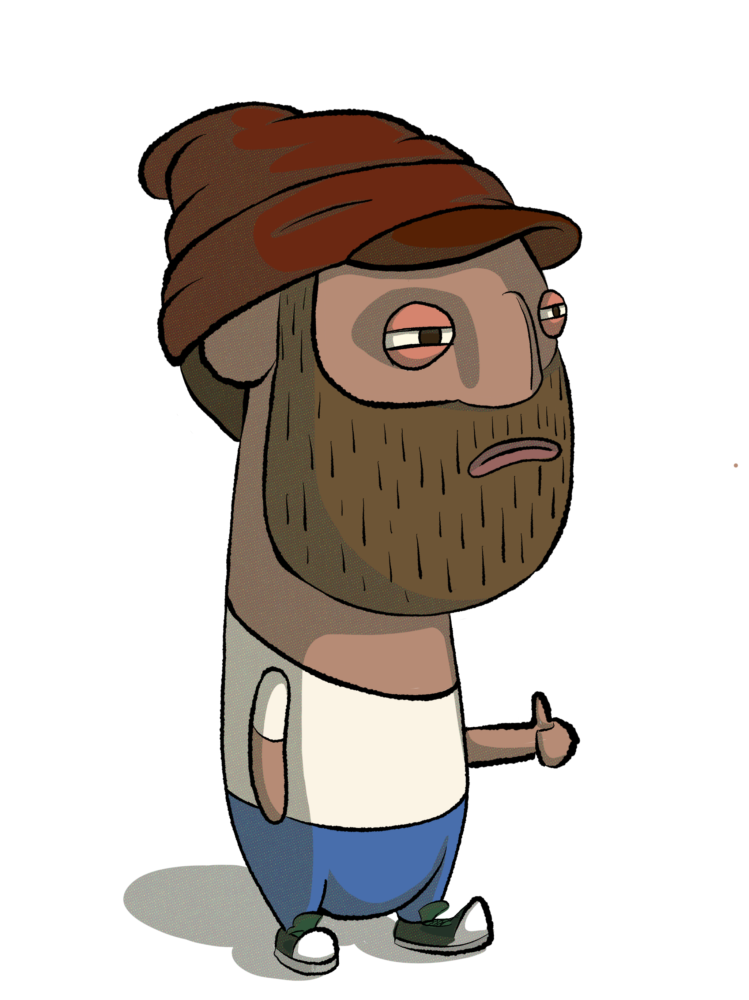

<!DOCTYPE html>
<html lang="en" data-theme="dark" data-density="dense" data-display-font="regular" data-layout="m3" data-palette="testcard">
<head>
<meta charset="UTF-8">
<meta name="viewport" content="width=device-width, initial-scale=1">
<title>Raz Silberman - Product Designer</title>
<!-- Montserrat + Raleway, both VARIABLE faces (wght 100..900, roman +
     italic). Raleway sets the display/voice, Montserrat the body + labels. -->
<link rel="preconnect" href="https://fonts.googleapis.com">
<link rel="preconnect" href="https://fonts.gstatic.com" crossorigin>
<link href="https://fonts.googleapis.com/css2?family=Montserrat:ital,wght@0,100..900;1,100..900&family=Raleway:ital,wght@0,100..900;1,100..900&display=swap" rel="stylesheet">
<style>
/* ─── Tokens ─── */
:root {
  /* Dark theme (default) - Signal "Signal lost"
     Near-black CRT screen with the SMPTE color bars glowing in the dark.
     Token roles per color palettes/signal-design-tokens.md:
       --accent = tomato (primary CTA / brand pop)
       --accent-sky = sky (links, eyebrows)
       --accent-moment = butter (badges, moments)
       --bar-sage/-orchid/-indigo = extended bars (tags, data viz, reveals) */
  --ground:    #14131A;            /* CRT black - faint purple-warmth, not pure */
  --surface:   #211F2A;
  --surface-2: #211F2A;
  --rim:       #2E2C38;
  --rim-soft:  rgba(236,233,240,.06);
  --ink:       #ECE9F0;            /* broadcast white */
  --ink-dim:   #B2AEBC;
  --muted:     #8C8898;

  /* Primary (tomato) - brightened for dark-text AA */
  --accent:        #F25450;
  --accent-hover:  #FF7568;        /* hover LIGHTER (dark-mode exception) */
  --accent-active: #FFA698;
  --accent-bg:     #480000;
  --accent-bg-strong: #820000;
  --accent-text-on: #14131A;       /* dark text on bright tomato CTAs */
  --accent-lo:     color-mix(in oklab, var(--accent) 14%, transparent);
  --accent-md:     color-mix(in oklab, var(--accent) 30%, transparent);

  /* Accent (sky) - links + eyebrows */
  --accent-sky:         #5BC4E8;
  --accent-sky-hover:   #96D9F3;   /* hover LIGHTER on dark */
  --accent-sky-surface: #5BC4E8;
  --accent-sky-bg:      #002032;

  /* Moment (butter) - badges, joy-moment */
  --accent-moment:         #F2D74E;
  --accent-moment-bg:      #281800;
  --accent-moment-text-on: #F2D74E;

  /* Extended bars - sage/orchid/indigo (tags, data viz, the reveal set) */
  --bar-sage:           #6FB264;
  --bar-sage-surface:   #6FB264;
  --bar-orchid:         #C16AB8;
  --bar-orchid-surface: #B05BA8;
  --bar-indigo:         #7A92E0;   /* lightened for dark-text legibility */
  --bar-indigo-surface: #3A52A0;

  /* Focus ring - sky (most visible on CRT black) */
  --focus-ring: #5BC4E8;
}
[data-theme="light"] {
  /* Light theme - Signal "On air"
     Warm broadcast white with the bars deepened to AA-compliant text colors.
     The bright bars stay for surfaces/badges. */
  --ground:    #F4F2EC;            /* warm broadcast white - not pure */
  --surface:   #E8E5DA;
  --surface-2: #FFFFFF;
  --rim:       #D5CFC0;
  --rim-soft:  rgba(20,19,26,.08);
  --ink:       #14131A;            /* CRT black - same hue as dark mode bg */
  --ink-dim:   #3D3B45;
  --muted:     #5C5A50;

  /* Primary (tomato) - deepened for white-text AA */
  --accent:        #C42018;
  --accent-hover:  #A01410;        /* hover darker (light-mode standard) */
  --accent-active: #7E0C0A;
  --accent-bg:     #FFEBE6;
  --accent-bg-strong: #FFCDC2;
  --accent-text-on: #FFFFFF;       /* white text on deep tomato CTAs */
  --accent-lo:     color-mix(in oklab, var(--accent) 12%, transparent);
  --accent-md:     color-mix(in oklab, var(--accent) 28%, transparent);

  /* Accent (sky) - deepened for in-body text use */
  --accent-sky:         #136B92;
  --accent-sky-hover:   #004660;
  --accent-sky-surface: #5BC4E8;   /* bright sky - for surfaces / badges */
  --accent-sky-bg:      #E6F9FF;

  /* Moment (butter) - background only in light mode */
  --accent-moment:         #F2D74E;
  --accent-moment-bg:      #FAF6DF;
  --accent-moment-text-on: #503A00;

  /* Extended bars - deepened for light-mode text use */
  --bar-sage:           #356E30;
  --bar-sage-surface:   #6FB264;
  --bar-orchid:         #8B3A84;
  --bar-orchid-surface: #B05BA8;
  --bar-indigo:         #2A3F85;
  --bar-indigo-surface: #3A52A0;

  /* Focus ring - tomato primary */
  --focus-ring: #C42018;
}

/* ─── Signal 9-stop OKLCH ramps (mode-independent) ─────────────────────
   Materialized from signal-design-tokens.md so components needing a
   specific ramp stop don't pick an off-system color. */
:root {
  --tomato-50:  #FFEBE6; --tomato-100: #FFCDC2; --tomato-200: #FFA698;
  --tomato-300: #FF7568; --tomato-400: #F54840; --tomato-500: #D11C1F;
  --tomato-600: #AC0000; --tomato-700: #820000; --tomato-800: #480000;

  --sky-50:  #E6F9FF; --sky-100: #C2ECFD; --sky-200: #96D9F3;
  --sky-300: #60BCDC; --sky-400: #2D9DC0; --sky-500: #007EA0;
  --sky-600: #006382; --sky-700: #004660; --sky-800: #002032;

  --butter-50:  #FAF6DF; --butter-100: #F1E6B1; --butter-200: #E0CF7A;
  --butter-300: #C6AE33; --butter-400: #A98E00; --butter-500: #8A7000;
  --butter-600: #6F5600; --butter-700: #503A00; --butter-800: #281800;
  --butter-base: #F2D74E;

  --sage-50:  #ECFAEA; --sage-100: #D0EFCB; --sage-200: #AEDDA5;
  --sage-300: #84C07A; --sage-400: #60A255; --sage-500: #428337;
  --sage-600: #2A6820; --sage-700: #134A08; --sage-800: #002300;

  --orchid-50:  #FFEEFF; --orchid-100: #FFD5F9; --orchid-200: #F5B5ED;
  --orchid-300: #DE8ED5; --orchid-400: #C16AB8; --orchid-500: #A04C99;
  --orchid-600: #82347B; --orchid-700: #5F1C5B; --orchid-800: #31022E;

  --indigo-50:  #EEF5FF; --indigo-100: #D4E4FF; --indigo-200: #B4CCFF;
  --indigo-300: #8FABF8; --indigo-400: #6E8BDE; --indigo-500: #516CBD;
  --indigo-600: #3B529C; --indigo-700: #253776; --indigo-800: #0B1541;
}

:root {
  /* ─── Typography: matched to the reference system ───────────────────
     Measured off shanydvora.com (/art/ + home). That whole system is:

       family    Montserrat, ONE family. (Raleway is declared on that
                 site but never actually renders - only Montserrat does.)
       size      14.4px everywhere. Headings are the same size as body;
                 the artwork titles are 14.4px/400, identical to a <p>.
       weight    400, with 300 as the only secondary.
       leading   0.90 on single-line links/labels
                 1.50 on headings and body alike
       tracking  0.8px at 14.4px = 0.0556em, uniform
       case      none - nothing is uppercased

     There is deliberately no size ramp and no weight ramp: on that site
     the images carry the hierarchy and the type stays recessive.

     Every axis is a token, so any one of them can be dialled back on its
     own without unpicking the rest:
       --fs-display  > --fs-base   reintroduces a size hierarchy
       --ff-display-weight         reintroduces a heavier display voice
       --ls-base                   loosens/tightens tracking globally
     The full --fw-* scale is kept below so the display-weight picker in
     the tweaks panel still has somewhere to go. */
  --fw-thin:       100;
  --fw-extralight: 200;
  --fw-light:      300;
  --fw-regular:    400;
  --fw-medium:     500;
  --fw-semibold:   600;
  --fw-bold:       700;
  --fw-extrabold:  800;
  --fw-black:      900;

  /* Two faces: Raleway carries the display + personal voice (the heroes
     and headings), Montserrat carries body copy and the small label
     voice. The reference site renders only Montserrat, so this is a
     deliberate departure from it. */
  --ff-display: 'Raleway', system-ui, -apple-system, sans-serif;
  --ff-voice:   'Raleway', system-ui, -apple-system, sans-serif;
  --ff-body:    'Montserrat', system-ui, -apple-system, sans-serif;
  --ff-mono:    'Montserrat', system-ui, -apple-system, sans-serif;

  /* Size. --fs-display is the display step; --fs-base is everything else.
     The display step is split in two so the heroes can be large without
     dragging section titles, tile names and subheads up with them - the
     reference-system flattening had collapsed a ~9x ramp onto one token. */
  --fs-base:    0.9rem;        /* 14.4px - everything that isn't a hero */
  --fs-hero:    2rem;          /* 32px  - the two page heroes ONLY
                                  (.hero-title, .proj-hero-title).
                                  Rises to 3rem/48px above 1025px, matching
                                  the reference's desktop breakpoint. */
  --fs-display: var(--fs-base);/* the other display-class rules (section
                                  titles, tile names, subheads, the project
                                  subtitle) stay at base - raise this if you
                                  want a middle step between the two */

  /* Leading - the reference's two values, and only these two. */
  --lh-tight:   0.9;           /* single-line links + labels */
  --lh-display: 0.9;           /* the big Raleway hero titles */
  --lh-text:    1.5;           /* body copy and everything else */

  /* Tracking - 0.8px at 14.4px on TEXT. The reference puts no tracking at
     all on its display titles, so display gets its own token. */
  --ls-base:    0.0556em;
  --ls-display: normal;

  /* Role weights - all Regular, per the reference. */
  --fw-mono:    var(--fw-regular);
  --fw-body:    var(--fw-regular);
  --ff-display-weight: var(--fw-regular);

  /* Montserrat ships a wght axis only - no opsz - so optical sizing is a
     no-op here; kept so a future family with an opsz axis behaves. */
  font-optical-sizing: auto;
  --expo: cubic-bezier(0.16, 1, 0.3, 1);
  --circ: cubic-bezier(0.85, 0, 0.15, 1);
  --pad-x: clamp(1.5rem, 4vw, 3rem);

  /* ─── Breakpoint system ─────────────────────────────────────────────
     Mobile-first. Base styles target ~375px phones. Three min-width
     breakpoints widen the layout as space allows:

       --bp-sm: 640px  - small tablet / large phone landscape
       --bp-md: 960px  - tablet landscape / small laptop (main desktop break)
       --bp-lg: 1280px - full desktop / wide screens

     Custom properties can't be used in @media queries, but documenting
     them here keeps the values discoverable.
     ───────────────────────────────────────────────────────────────── */
  --bp-sm: 640px;
  --bp-md: 960px;
  --bp-lg: 1280px;
}

/* The reference serves its display titles at 32px up to its 1025px
   breakpoint and 48px above it - measured 32px at both 375px and 768px,
   48px at 1191px. */
@media (min-width: 1025px) { :root { --fs-hero: 3rem; } }   /* 48px */

/* ─── Reset ─── */
*, *::before, *::after { box-sizing: border-box; margin: 0; padding: 0; }
html { scroll-behavior: smooth; }
html.cursor-on:not(:has(dialog[open])),
html.cursor-on:not(:has(dialog[open])) * { cursor: none !important; }
/* A modal dialog sits in the top layer, above the custom cursor - so while
   one is open the system cursor comes back and the custom one steps aside. */
html:has(dialog[open]) :is(.blob-cursor, .puddle-cursor, .ripple-cursor,
  .cur-trail-layer, .water-veil, .water-ring-layer) { visibility: hidden; }
/* Safety net: never hide the native cursor on touch-only devices,
   even if `cursor-on` gets applied somehow. The custom cursor doesn't
   mount on touch (see BlobCursor isTouch check) but this guarantees
   the system cursor (e.g. on tablets with mouse attached later) stays. */
@media (hover: none) {
  html.cursor-on, html.cursor-on * { cursor: auto !important; }
}
body {
  background: var(--ground);
  color: var(--ink);
  font-family: var(--ff-body);
  font-weight: var(--fw-body);
  /* The reference applies ONE size and ONE tracking to everything, so set
     both here and let them inherit - otherwise any element without an
     explicit rule falls back to the 16px/normal UA default and breaks the
     single-size system. */
  font-size: var(--fs-base);
  letter-spacing: var(--ls-base);
  line-height: var(--lh-text);
  overflow-x: hidden;
  transition: background .6s var(--expo), color .6s var(--expo);
  -webkit-font-smoothing: antialiased;
  text-rendering: optimizeLegibility;
}
a { color: inherit; text-decoration: none; }
button { font-family: inherit; }
::selection { background: var(--accent-md); color: var(--ink); }

/* WCAG focus ring - keyboard-only via :focus-visible.
   --focus-ring is sky in dark, tomato in light per signal-design-tokens.md */
:focus-visible {
  outline: 2px solid var(--focus-ring);
  outline-offset: 2px;
  border-radius: 2px;
}
:focus:not(:focus-visible) { outline: none; }

/* ─── Signal component wiring ──────────────────────────────────────────
   Three-bar identity:
     Tomato → --accent (already used site-wide for brand pop / hero em / CTAs)
     Sky    → eyebrows + body links (most-trafficked accent role)
     Butter → badges (joy moment, dark-text-on-butter passes AAA both modes)
   Sage/Orchid/Indigo cycle across cap-pills as the "reveal set". */

/* Sky - all eyebrow-style mono uppercase labels */
.hero-eyebrow,
.about-eyebrow,
.contact-eyebrow,
.proj-eyebrow,
.proj-section-eyebrow,
.tile-tags,
.company-tag {
  color: var(--accent-sky);
}
.tile-img-mark { color: var(--accent-sky); }

/* Sky - body links (underlined per doc) */
.proj-section a,
.about p a,
.contact-links a {
  color: var(--accent-sky);
  text-decoration: underline;
  text-decoration-thickness: 1px;
  text-underline-offset: 3px;
}
.proj-section a:hover,
.about p a:hover,
.contact-links a:hover { color: var(--accent-sky-hover); }

/* Butter - moment tags (before/after, placeholder) */
.ba-tag {
  background: color-mix(in oklab, var(--accent-moment) 18%, transparent);
  color: var(--accent-moment-text-on);
}
.proj-placeholder-tag { color: var(--accent-moment-text-on); }

/* Extended bars (sage / orchid / indigo) - cycle across cap-pills so the
   reveal set appears together in the capabilities row. */
.cap-pill { border-color: currentColor; }
.cap-pill:nth-child(3n+1) { color: var(--bar-sage); }
.cap-pill:nth-child(3n+2) { color: var(--bar-orchid); }
.cap-pill:nth-child(3n+3) { color: var(--bar-indigo); }

/* Six-bar reveal - the test card footer strip. The full bar set appears
   together only in deliberate moments (footer / 404 / loading) per the doc.
   Uses the raw bar role-table values so the reference reads. */
footer { position: relative; }
footer::before {
  content: '';
  position: absolute; left: 0; right: 0; top: -1px;
  height: 4px;
  background: linear-gradient(to right,
    #E83A35 0 16.666%,
    #5BC4E8 16.666% 33.333%,
    #F2D74E 33.333% 50%,
    #6FB264 50% 66.666%,
    #B05BA8 66.666% 83.333%,
    #3A52A0 83.333% 100%
  );
  pointer-events: none;
}

/* ─── Grain ─── */
.grain {
  content: ''; position: fixed; inset: -200%; width: 400%; height: 400%;
  background-image: url("data:image/svg+xml,%3Csvg viewBox='0 0 512 512' xmlns='http://www.w3.org/2000/svg'%3E%3Cfilter id='n'%3E%3CfeTurbulence type='fractalNoise' baseFrequency='0.85' numOctaves='3' stitchTiles='stitch'/%3E%3C/filter%3E%3Crect width='100%25' height='100%25' filter='url(%23n)'/%3E%3C/svg%3E");
  opacity: .03; pointer-events: none; z-index: 9990;
  animation: grain .5s steps(2) infinite; mix-blend-mode: screen;
}
[data-theme="light"] .grain { opacity: .09; mix-blend-mode: multiply; }
.grain.off { display: none; }
@keyframes grain {
  0%   { transform: translate(0,0); }
  25%  { transform: translate(-2%,-3%); }
  50%  { transform: translate(3%,1%); }
  75%  { transform: translate(-1%,2%); }
  100% { transform: translate(2%,-1%); }
}

/* ─── Blob cursor ─── */
.blob-cursor {
  position: fixed; top: 0; left: 0; width: 38px; height: 38px;
  pointer-events: none; z-index: 9999;
  mix-blend-mode: difference;
  transform: translate(-50%, -50%);
  transition: width .35s var(--expo), height .35s var(--expo), opacity .25s ease;
}
.blob-cursor svg { width: 100%; height: 100%; display: block; overflow: visible; }
.blob-cursor .blob-outer {
  fill: var(--ink);
  animation: blobMorph 4s ease-in-out infinite, blobSpin 6s linear infinite;
  transform-origin: 50px 50px;
}
.blob-cursor .blob-inner {
  fill: var(--ground);
  animation: blobMorphR 3.5s ease-in-out infinite, blobSpinR 4.5s linear infinite;
  transform-origin: 50px 50px;
}
@keyframes blobSpin  { to { transform: rotate(360deg); } }
@keyframes blobSpinR { to { transform: rotate(-360deg); } }
@keyframes blobMorph {
  0%,100% { d: path("M50,4 C82,2 98,32 88,56 C100,82 64,102 38,90 C10,98 -2,62 12,38 C4,12 30,2 50,4 Z"); }
  33%     { d: path("M50,12 C84,16 92,42 80,66 C92,86 56,102 34,86 C8,84 6,58 18,38 C14,10 32,2 50,12 Z"); }
  66%     { d: path("M50,2 C68,16 100,18 96,50 C104,78 72,102 44,94 C14,100 -4,72 8,46 C-2,18 28,-2 50,2 Z"); }
}
@keyframes blobMorphR {
  0%,100% { d: path("M50,18 C76,16 88,38 76,58 C86,78 56,88 40,78 C20,84 10,58 22,40 C16,28 34,18 50,18 Z"); }
  50%     { d: path("M50,28 C62,18 86,42 84,60 C76,80 52,90 38,74 C18,76 14,54 26,38 C24,24 38,20 50,28 Z"); }
}

.blob-cursor.big { width: 78px; height: 78px; }
.blob-cursor.text {
  width: 3px; height: 22px;
  background: var(--ink); border-radius: 1px;
}
.blob-cursor.text svg { display: none; }

/* Light mode: keep `difference` blending so cursor inverts what it's over.
   Use a pale fill so against the pale ground it inverts to strong dark,
   and against dark imagery/cards it stays bright. */
[data-theme="light"] .blob-cursor .blob-outer { fill: #FFFFFF; }
[data-theme="light"] .blob-cursor .blob-inner { fill: #1A1814; }
[data-theme="light"] .puddle-cursor .puddle-body { fill: #FFFFFF; }
[data-theme="light"] .cur-trail-drop { background: #FFFFFF; }
[data-theme="light"] .ripple-cursor .rc-core { background: #FFFFFF; }
[data-theme="light"] .ripple-cursor .rc-halo {
  background: radial-gradient(circle, rgba(255,255,255,.45) 0%, transparent 65%);
}
[data-theme="light"] .water-veil {
  background: radial-gradient(circle 90px at var(--mx, 50%) var(--my, 50%),
    rgba(255,255,255,.28) 0%, rgba(255,255,255,.08) 50%, transparent 75%);
}
[data-theme="light"] .water-ring {
  border-color: rgba(255,255,255,.85);
  box-shadow:
    inset 0 0 18px rgba(255,255,255,.4),
    0 0 30px rgba(255,255,255,.18);
}

/* ─── Puddle cursor (gooey, stretchy substance) ─── */
.puddle-cursor {
  position: fixed; top: 0; left: 0; width: 64px; height: 64px;
  pointer-events: none; z-index: 9999;
  transform: translate(-50%, -50%);
  filter: url(#gooey-puddle);
  mix-blend-mode: difference;
  transition: width .35s var(--expo), height .35s var(--expo);
}
.puddle-cursor .puddle-svg {
  position: absolute; inset: 0; width: 100%; height: 100%;
  overflow: visible; display: block;
  transform: rotate(var(--ang, 0deg)) scale(var(--sx, 1), var(--sy, 1));
  transform-origin: center;
}
.puddle-cursor .puddle-body {
  fill: var(--ink);
  animation: puddleMorph 3s ease-in-out infinite;
  transform-box: fill-box;
  transform-origin: center;
}
@keyframes puddleMorph {
  0%   { d: path("M50,18 C72,12 90,28 88,52 C92,72 70,90 50,86 C30,90 12,74 12,52 C10,30 28,16 50,18 Z"); }
  25%  { d: path("M52,14 C76,18 92,36 84,58 C90,80 60,92 42,84 C18,86 8,62 18,40 C16,22 34,12 52,14 Z"); }
  50%  { d: path("M48,16 C70,10 94,30 90,54 C88,78 62,94 44,86 C20,90 6,68 14,46 C12,26 32,18 48,16 Z"); }
  75%  { d: path("M54,20 C74,16 88,38 86,56 C94,76 64,90 46,82 C24,88 10,66 20,42 C18,24 36,16 54,20 Z"); }
  100% { d: path("M50,18 C72,12 90,28 88,52 C92,72 70,90 50,86 C30,90 12,74 12,52 C10,30 28,16 50,18 Z"); }
}
.puddle-cursor .puddle-bead {
  position: absolute; left: 50%; top: 50%;
  width: 30%; height: 30%; background: var(--ink);
  border-radius: 50%;
  transform: translate(-50%,-50%);
}
.puddle-cursor .b1 { animation: puddleBead1 2.6s ease-in-out infinite; }
.puddle-cursor .b2 { animation: puddleBead2 3.2s ease-in-out -1s infinite; width: 22%; height: 22%; }
@keyframes puddleBead1 {
  0%,100% { transform: translate(-50%,-50%) translate(14px, -8px) scale(.9); }
  50%     { transform: translate(-50%,-50%) translate(-2px, 4px) scale(.4); }
}
@keyframes puddleBead2 {
  0%,100% { transform: translate(-50%,-50%) translate(-12px, 10px) scale(.85); }
  50%     { transform: translate(-50%,-50%) translate(2px, -2px) scale(.3); }
}
.puddle-cursor.big { width: 100px; height: 100px; }
.puddle-cursor.text {
  width: 3px; height: 22px; filter: none;
}
.puddle-cursor.text .puddle-svg { display: none; }
.puddle-cursor.text .puddle-bead { display: none; }
.puddle-cursor.text::before {
  content: ''; position: absolute; inset: 0; background: var(--ink); border-radius: 1px;
}

/* Goo trail - droplets joined by the gooey filter into a stretchy tail */
.cur-trail-layer {
  position: fixed; inset: 0; pointer-events: none; z-index: 9998;
  filter: url(#gooey-puddle);
  mix-blend-mode: difference;
}
.cur-trail-drop {
  position: fixed; border-radius: 50%;
  background: var(--ink);
  transform: translate(-50%, -50%) rotate(var(--rot, 0deg)) scale(1, .85);
  animation: trailFade .75s ease-out forwards;
  pointer-events: none;
}
@keyframes trailFade {
  0%   { opacity: .9;  transform: translate(-50%,-50%) rotate(var(--rot, 0deg)) scale(1, .85); }
  100% { opacity: 0;   transform: translate(-50%,-50%) rotate(var(--rot, 0deg)) scale(.15, .15); }
}

/* ─── Ripple cursor - water surface (graphic only) ─── */
.water-veil {
  position: fixed; inset: 0; pointer-events: none; z-index: 9996;
  background:
    radial-gradient(circle 90px at var(--mx, 50%) var(--my, 50%),
      color-mix(in srgb, var(--ink) 14%, transparent) 0%,
      color-mix(in srgb, var(--ink) 4%, transparent) 50%,
      transparent 75%);
  mix-blend-mode: difference;
}

.water-ring-layer { position: fixed; inset: 0; pointer-events: none; z-index: 9997; }
.water-ring {
  position: fixed; pointer-events: none;
  width: 60px; height: 60px; border-radius: 50%;
  border: 1px solid color-mix(in srgb, var(--ink) 50%, transparent);
  box-shadow:
    inset 0 0 18px color-mix(in srgb, var(--ink) 18%, transparent),
    0 0 30px color-mix(in srgb, var(--ink) 8%, transparent);
  transform: translate(-50%,-50%) scale(calc(var(--rs, 1) * .3));
  opacity: .9;
  animation: waterRing 1.6s cubic-bezier(.2,.7,.2,1) forwards;
  mix-blend-mode: difference;
}
@keyframes waterRing {
  0%   { transform: translate(-50%,-50%) scale(calc(var(--rs, 1) * .3)); opacity: .9; border-width: 2px; }
  60%  { opacity: .35; }
  100% { transform: translate(-50%,-50%) scale(calc(var(--rs, 1) * 4.5));  opacity: 0; border-width: 1px; }
}

/* ─── CMYK jitter (click - perimeter leak around cursor) ─── */
.cmyk-burst {
  position: fixed; width: 64px; height: 64px;
  pointer-events: none; z-index: 9998;
  transform: translate(-50%, -50%);
  /* No blend mode - the CMY blobs render as their actual colors on top of any backdrop.
     Visible on cream AND dark without the color shift that difference/hard-light cause. */
  -webkit-mask: url(#cmyk-cutout);
          mask: url(#cmyk-cutout);
}
.cmyk-mask-blob {
  animation: puddleMorph 3s ease-in-out infinite;
  /* Run the cutout through the same gooey filter as the cursor so the mask matches
     the cursor's actual gooey-rendered shape exactly - CMY only shows past it. */
  filter: url(#gooey-puddle);
}
.cmyk-burst svg {
  position: absolute; inset: 0; width: 100%; height: 100%;
  overflow: visible;
  will-change: transform, opacity;
}
.cmyk-burst svg path { stroke: none; }
.cmyk-burst .c path { fill: #00FFFF; }
.cmyk-burst .m path { fill: #FF00FF; }
.cmyk-burst .y path { fill: #FFFF00; }
.cmyk-burst .c { animation: cmykJitterC 380ms cubic-bezier(.2,.7,.2,1) forwards; }
.cmyk-burst .m { animation: cmykJitterM 380ms cubic-bezier(.2,.7,.2,1) forwards; }
.cmyk-burst .y { animation: cmykJitterY 380ms cubic-bezier(.2,.7,.2,1) forwards; }
@keyframes cmykJitterC {
  0%   { transform: translate(0,0);          opacity: 0; }
  15%  { transform: translate(-2px,-1px);    opacity: 1; }
  45%  { transform: translate(1.5px,.5px);   opacity: .95; }
  75%  { transform: translate(-1.5px,1px);   opacity: .75; }
  100% { transform: translate(-2px,.5px);    opacity: 0; }
}
@keyframes cmykJitterM {
  0%   { transform: translate(0,0);          opacity: 0; }
  15%  { transform: translate(2px,1px);      opacity: 1; }
  45%  { transform: translate(-1px,-1.5px);  opacity: .95; }
  75%  { transform: translate(1.5px,-.5px);  opacity: .75; }
  100% { transform: translate(1.5px,-1px);   opacity: 0; }
}
@keyframes cmykJitterY {
  0%   { transform: translate(0,0);          opacity: 0; }
  15%  { transform: translate(-.5px,2px);    opacity: 1; }
  45%  { transform: translate(1px,-1px);     opacity: .95; }
  75%  { transform: translate(-1px,-1.5px);  opacity: .75; }
  100% { transform: translate(-.5px,2px);    opacity: 0; }
}

.ripple-cursor {
  position: fixed; top: 0; left: 0; width: 18px; height: 18px;
  pointer-events: none; z-index: 9999;
  transform: translate(-50%, -50%);
  transition: width .35s var(--expo), height .35s var(--expo);
}
.ripple-cursor .rc-core {
  position: absolute; inset: 0; border-radius: 50%;
  background: var(--ink); opacity: .35;
  mix-blend-mode: difference;
  filter: blur(1px);
}
.ripple-cursor .rc-halo {
  position: absolute; inset: -10px; border-radius: 50%;
  background: radial-gradient(circle, color-mix(in srgb, var(--ink) 22%, transparent) 0%, transparent 65%);
  mix-blend-mode: difference;
  animation: rcHaloPulse 2.4s ease-in-out infinite;
}
@keyframes rcHaloPulse {
  0%,100% { transform: scale(1);   opacity: .8; }
  50%     { transform: scale(1.4); opacity: .4; }
}
.ripple-cursor.big { width: 32px; height: 32px; }
.ripple-cursor.text {
  width: 3px; height: 22px; border-radius: 1px;
}
.ripple-cursor.text .rc-halo { display: none; }
.ripple-cursor.text .rc-core { background: var(--ink); opacity: 1; filter: none; border-radius: 1px; }

/* ─── Scroll progress ─── */
.scroll-bar {
  position: fixed; top: 0; left: 0; width: 1px; height: 0%;
  background: var(--accent); z-index: 600;
  transition: height .05s linear;
}

/* ─── Loader ─── */
#loader {
  position: fixed; inset: 0; background: var(--ground); z-index: 10000;
  display: flex; align-items: center; justify-content: center;
  flex-direction: column; gap: 2rem;
}
#loader.out { animation: slideUp .8s var(--circ) forwards; }
@keyframes slideUp { to { transform: translateY(-100%); } }
.loader-mark {
  font-family: var(--ff-display); font-weight: var(--ff-display-weight, 900);
  font-size: var(--fs-display); letter-spacing: var(--ls-base);
  line-height: var(--lh-text); color: var(--ink);
  display: flex; align-items: baseline; gap: .04em;
}
.loader-mark .accent { color: var(--accent); }
.loader-progress {
  width: 200px; height: 1px; background: var(--rim); position: relative; overflow: hidden;
}
.loader-progress::after {
  content: ''; position: absolute; top: 0; left: -100%; width: 100%; height: 100%;
  background: var(--accent); transition: left 1.4s var(--expo);
}
.loader-progress.run::after { left: 0; }
.loader-sub {
  font-family: var(--ff-mono); font-weight: var(--fw-mono); font-size: var(--fs-base);
  letter-spacing: var(--ls-base); text-transform: none; color: var(--muted);
}

/* ─── Wipe ─── */
.wipe {
  position: fixed; inset: 0; background: var(--surface); z-index: 8000;
  clip-path: inset(0 100% 0 0); pointer-events: none;
}
.wipe.in  { animation: wipeIn  .55s var(--circ) forwards; }
.wipe.out { animation: wipeOut .55s var(--circ) forwards; }
@keyframes wipeIn  { to { clip-path: inset(0 0% 0 0); } }
@keyframes wipeOut { from { clip-path: inset(0 0% 0 0); } to { clip-path: inset(0 0 0 100%); } }

/* ─── Channel change (analog TV page transition) ───
   Alternative to .wipe. Three beats driven by runChannelChange():
   tv-out  → the picture loses hold, then collapses to a bright line,
   tv-hold → a short burst of (dimmed) snow while the page swaps underneath,
   tv-in   → the new picture opens out of the line with colour fringing. */
.tvx { position: fixed; inset: 0; z-index: 8000; pointer-events: none; }
.tvx-snow {
  position: absolute; inset: 0; opacity: 0;
  background: #0d0d0d;
}
.tvx-snow canvas { position: absolute; inset: 0; width: 100%; height: 100%; opacity: .7; }
.tvx-snow::before {      /* scanlines */
  content: ''; position: absolute; inset: 0; z-index: 2;
  background: repeating-linear-gradient(to bottom, rgba(0,0,0,.28) 0 1px, transparent 1px 3px);
}
.tvx-snow::after {       /* rolling sync bar */
  content: ''; position: absolute; left: 0; right: 0; height: 22%; top: -25%; z-index: 3;
  background: linear-gradient(to bottom, transparent, rgba(255,255,255,.08) 50%, transparent);
}
.tvx-line {              /* the CRT "collapsed picture" line */
  position: absolute; left: 0; right: 0; top: 50%; height: 2px; margin-top: -1px;
  background: #fff; opacity: 0; z-index: 4;
  box-shadow: 0 0 6px 1px rgba(255,255,255,.8), 0 0 24px 4px rgba(191,217,255,.5); /* cool phosphor glow */
}
html.tv-out  .tvx-line { animation: tvxLineOut .24s linear forwards; }
html.tv-hold .tvx-snow { opacity: 1; }
html.tv-hold .tvx-snow::after { animation: tvxRoll .2s linear infinite; }
html.tv-in   .tvx-snow { animation: tvxSnowOut .16s steps(3) forwards; }
html.tv-in   .tvx-line { animation: tvxLineIn .2s linear forwards; }
@keyframes tvxLineOut { 0%, 65% { opacity: 0; transform: scaleX(1); } 80% { opacity: 1; } 100% { opacity: 1; transform: scaleX(.85); } }
@keyframes tvxLineIn  { 0% { opacity: 1; transform: scaleX(.85); } 40% { opacity: .9; transform: scaleX(1); } 100% { opacity: 0; } }
@keyframes tvxSnowOut { 0% { opacity: 1; } 100% { opacity: 0; } }
@keyframes tvxRoll { to { top: 105%; } }

/* Collapse toward the middle of the viewport, not the middle of the page.
   --tv-oy is set by runChannelChange to scrollY + half the viewport. */
html.tv-out .page.active, html.tv-in .page.active { transform-origin: 50% var(--tv-oy, 50vh); }
html.tv-out nav.top,      html.tv-in nav.top      { transform-origin: 50% 50vh; }
html.tv-out nav.top,
html.tv-out .page.active { animation: tvLoseHold .24s linear forwards; }
html.tv-hold nav.top,
html.tv-hold .page.active { opacity: 0; }
html.tv-in  nav.top,
html.tv-in  .page.active { animation: tvLockIn .46s var(--expo) both; }
@keyframes tvLoseHold {
  0%   { transform: none; filter: none; }
  15%  { transform: translateY(-1.5%) skewX(-1.5deg); filter: brightness(1.1) contrast(1.15); }
  32%  { transform: translateY(2%) skewX(1.5deg);     filter: brightness(1.2) contrast(1.2); }
  45%  { transform: scaleY(1);    filter: brightness(1.25) contrast(1.2); }
  80%  { transform: scaleY(.015); filter: brightness(1.8) contrast(1.3); opacity: 1; }
  100% { transform: scaleY(.004); filter: brightness(2.2); opacity: 0; }
}
@keyframes tvLockIn {
  0%   { transform: scaleY(.004); opacity: 0;
         filter: brightness(1.8) drop-shadow(6px 0 0 rgba(255,40,60,.55)) drop-shadow(-6px 0 0 rgba(0,220,255,.55)); }
  12%  { opacity: 1; }
  30%  { transform: scaleY(1.03);
         filter: brightness(1.3) drop-shadow(4px 0 0 rgba(255,40,60,.45)) drop-shadow(-4px 0 0 rgba(0,220,255,.45)); }
  48%  { transform: scaleY(.99) translateY(-.6%);
         filter: brightness(1.1) drop-shadow(2px 0 0 rgba(255,40,60,.3)) drop-shadow(-2px 0 0 rgba(0,220,255,.3)); }
  70%  { transform: translateY(.3%);
         filter: brightness(1.04) drop-shadow(1px 0 0 rgba(255,40,60,.15)) drop-shadow(-1px 0 0 rgba(0,220,255,.15)); }
  100% { transform: none; filter: none; }
}

/* ─── Nav ─── */
nav.top {
  position: fixed; top: 0; left: 0; right: 0; z-index: 400;
  padding: 1rem var(--pad-x);
  display: flex; align-items: center; justify-content: space-between;
  transition: transform .4s var(--expo), padding .4s var(--expo), background .4s;
}
nav.top.compact {
  padding: .75rem var(--pad-x);
  background: color-mix(in srgb, var(--ground) 80%, transparent);
  backdrop-filter: blur(12px);
}
nav.top.hidden { transform: translateY(-110%); }
.nav-logo {
  font-family: var(--ff-display); font-weight: var(--ff-display-weight, 900); font-size: var(--fs-base);
  letter-spacing: var(--ls-base); color: var(--ink);
  display: inline-flex; align-items: baseline; gap: .12em;
}
.nav-logo .accent { color: var(--accent); }
.nav-right { display: flex; align-items: center; gap: 1rem; }
.nav-links {
  list-style: none; display: none; align-items: center; gap: 2rem;
}
.nav-links a {
  font-family: var(--ff-mono); font-weight: var(--fw-mono); font-size: var(--fs-base); letter-spacing: var(--ls-base);
  text-transform: none; color: var(--ink-dim); position: relative;
  padding: .25rem 0;
  transition: color .25s;
  /* the reference's one tight-leading case: single-line nav links */
  line-height: var(--lh-tight);
}
.nav-links a::after {
  content: ''; position: absolute; bottom: 0; left: 0; width: 0; height: 1px;
  background: var(--accent); transition: width .35s var(--expo);
}
.nav-links a:hover, .nav-links a.active { color: var(--ink); }
.nav-links a:hover::after, .nav-links a.active::after { width: 100%; }
/* nav-actions (avail pill + search + theme) live in the mobile menu on
   small screens - hide here so the burger is the only nav-right control.
   Desktop @media (min-width: 960px) flips this back to flex. */
.nav-actions { display: none; align-items: center; gap: 1rem; }
.icon-btn {
  appearance: none; background: transparent; border: 1px solid var(--rim);
  color: var(--ink-dim); width: 32px; height: 32px; border-radius: 50%;
  display: inline-flex; align-items: center; justify-content: center;
  transition: color .25s, border-color .25s, background .25s;
}
/* Touch devices: bump tap targets to 44px per Apple/Material guidance.
   The visual icon stays 14px; only the hit area grows. */
@media (hover: none) {
  .icon-btn { width: 44px; height: 44px; }
}
.icon-btn:hover { color: var(--ink); border-color: var(--ink-dim); }
.kbd {
  font-family: var(--ff-mono); font-weight: var(--fw-mono); font-size: var(--fs-base); letter-spacing: var(--ls-base);
  color: var(--muted); border: 1px solid var(--rim); border-radius: 4px;
  padding: 2px 6px; text-transform: none;
}
.avail {
  display: inline-flex; align-items: center; gap: .5rem;
  font-family: var(--ff-mono); font-weight: var(--fw-mono); font-size: var(--fs-base); letter-spacing: var(--ls-base);
  color: var(--ink-dim); text-transform: none;
}
/* Mini morphing blob - a shrunk cousin of the blob cursor, marks "available" */
.avail-dot {
  display: inline-flex; flex: none;
  width: 14px; height: 14px; vertical-align: middle;
}
.avail-dot svg { width: 100%; height: 100%; display: block; overflow: visible; }
.avail-dot .ab-blob {
  fill: var(--bar-sage);
  transform-origin: 50px 50px;
  animation: blobMorph 4s ease-in-out infinite, blobSpin 6s linear infinite;
}

/* ─── Mobile menu (burger + full-screen overlay) ───
   Burger is the only nav-right control visible <960px (alongside the logo).
   The overlay renders outside nav.top so it can fade in over everything
   without inheriting nav's translateY-when-hidden transform.
   On desktop (≥960) the burger + overlay are display:none - the regular
   nav-links / nav-actions row takes over via the desktop @media block. */
.burger {
  appearance: none; background: transparent; border: 0;
  width: 44px; height: 44px; padding: 0;
  display: inline-flex; align-items: center; justify-content: center;
  color: var(--ink);
  cursor: pointer;
  position: relative;
  z-index: 9001; /* sits above the overlay so the same control closes it */
}
.burger span {
  position: absolute; left: 12px; right: 12px; height: 1.5px;
  background: currentColor; border-radius: 1px;
  transition: transform .35s var(--expo), top .25s var(--expo) .05s, opacity .2s;
}
.burger span:nth-child(1) { top: 17px; }
.burger span:nth-child(2) { top: 25px; }
.burger.open span:nth-child(1) { top: 21px; transform: rotate(45deg); transition: top .25s var(--expo), transform .35s var(--expo) .1s; }
.burger.open span:nth-child(2) { top: 21px; transform: rotate(-45deg); transition: top .25s var(--expo), transform .35s var(--expo) .1s; }

.mobile-menu {
  position: fixed; inset: 0; z-index: 9000;
  background: var(--ground);
  display: flex; flex-direction: column; justify-content: space-between;
  padding: 6rem var(--pad-x) 2.5rem;
  opacity: 0; pointer-events: none;
  transform: translateY(-8px);
  transition: opacity .35s var(--expo), transform .45s var(--expo);
}
.mobile-menu.open { opacity: 1; pointer-events: auto; transform: translateY(0); }
.mobile-menu-links {
  list-style: none; display: flex; flex-direction: column; gap: 1rem;
  margin-top: 2rem;
}
.mobile-menu-links a {
  font-family: var(--ff-display); font-weight: var(--ff-display-weight, 900);
  font-size: var(--fs-display);
  letter-spacing: var(--ls-base); color: var(--ink-dim);
  display: inline-block; padding: .35rem 0;
  transition: color .25s, transform .35s var(--expo);
}
.mobile-menu-links a.active { color: var(--ink); }
.mobile-menu-links a:active { color: var(--accent); transform: translateX(.5rem); }
/* Stagger entrance - each link slides up + fades in after the overlay opens */
.mobile-menu-links li {
  opacity: 0; transform: translateY(12px);
  transition: opacity .5s var(--expo), transform .55s var(--expo);
}
.mobile-menu.open .mobile-menu-links li { opacity: 1; transform: translateY(0); }
.mobile-menu.open .mobile-menu-links li:nth-child(1) { transition-delay: .1s; }
.mobile-menu.open .mobile-menu-links li:nth-child(2) { transition-delay: .15s; }
.mobile-menu.open .mobile-menu-links li:nth-child(3) { transition-delay: .2s; }
.mobile-menu.open .mobile-menu-links li:nth-child(4) { transition-delay: .25s; }

.mobile-menu-foot {
  display: flex; align-items: center; justify-content: space-between;
  padding-top: 1.5rem; border-top: 1px solid var(--rim-soft);
  opacity: 0;
  transition: opacity .4s var(--expo) .35s;
}
.mobile-menu.open .mobile-menu-foot { opacity: 1; }
.mobile-menu-actions { display: flex; align-items: center; gap: .5rem; }

/* ─── Page transitions ─── */
.page { display: none; min-height: 100vh; }
.page.active { display: block; animation: pageIn .6s var(--expo); }
@keyframes pageIn {
  from { opacity: 0; transform: translateY(8px); }
  to   { opacity: 1; transform: translateY(0); }
}

/* ─── Hero ─── */
.hero {
  min-height: 90vh; display: flex; flex-direction: column;
  padding: 7rem var(--pad-x) 3rem;
  position: relative; overflow: hidden;
}
.hero[data-align="top"]    { justify-content: flex-start; padding-top: 8rem; }
.hero[data-align="center"] { justify-content: center; }
.hero[data-align="bottom"] { justify-content: flex-end; padding-bottom: 4rem; }

.hero::before {
  content: ''; position: absolute;
  width: 50vw; height: 50vw; border-radius: 50%;
  background: radial-gradient(ellipse, var(--accent-lo) 0%, transparent 65%);
  top: 5%; right: -15%; pointer-events: none;
  filter: blur(20px);
}
.hero-eyebrow {
  font-family: var(--ff-mono); font-weight: var(--fw-mono); font-size: var(--fs-base); letter-spacing: var(--ls-base);
  text-transform: none; color: var(--ink-dim);
  display: flex; align-items: center; gap: .65rem;
  margin-bottom: 2.25rem; overflow: hidden;
}
.hero-eyebrow > * {
  transform: translateY(110%); opacity: 0;
  transition: transform .9s var(--expo), opacity .9s ease;
}
.hero-eyebrow.up > * { transform: translateY(0); opacity: 1; }

.hero-title {
  font-family: var(--ff-display); font-weight: var(--ff-display-weight, 900);
  font-size: var(--fs-hero);
  line-height: var(--lh-display); letter-spacing: var(--ls-display); color: var(--ink);
  text-transform: capitalize;
  max-width: 18ch;
}
.hero-title .word { display: inline-block; overflow: hidden; padding: 0 .04em .1em 0; margin-right: -.04em; }
.hero-title .word:has(em) { padding-right: .2em; margin-right: -.2em; }
.hero-title .word-inner {
  display: inline-block;
  transform: translateY(115%); opacity: 0;
  transition: transform 1s var(--expo), opacity 1s ease;
}
.hero-title.up .word-inner { transform: translateY(0); opacity: 1; }
.hero-title .accent { color: var(--accent); }
.hero-title em { font-style: italic; font-weight: var(--ff-display-weight, 900); color: var(--ink-dim); }

.hero-bottom {
  display: flex; flex-direction: column; align-items: flex-start; justify-content: space-between;
  margin-top: 2.5rem; gap: 2rem;
  transform: translateY(24px); opacity: 0;
  transition: transform .9s var(--expo) .55s, opacity .9s ease .55s;
}
.hero-bottom.up { transform: translateY(0); opacity: 1; }
.hero-desc {
  font-size: var(--fs-base); color: var(--ink-dim); line-height: var(--lh-text);
  max-width: 32rem;
}
.hero-meta {
  display: flex; flex-direction: column; gap: .35rem; align-items: flex-start;
  font-family: var(--ff-mono); font-weight: var(--fw-mono); font-size: var(--fs-base); letter-spacing: var(--ls-base);
  color: var(--muted); text-transform: none; text-align: left;
}
.hero-meta b { color: var(--ink-dim); font-weight: var(--fw-regular); }

/* ─── Section header ─── */
.section { padding: 4rem var(--pad-x); }
.section-head {
  display: flex; align-items: baseline; justify-content: space-between;
  padding-bottom: 2.5rem; border-top: 1px solid var(--rim-soft); padding-top: 3rem;
  margin-bottom: 2rem;
}
.section-head h2 {
  font-family: var(--ff-mono); font-weight: var(--fw-mono); font-size: var(--fs-base); letter-spacing: var(--ls-base);
  text-transform: none; color: var(--ink); font-weight: var(--fw-regular);
  display: inline-flex; align-items: center; gap: .65rem;
}
.section-head h2::before {
  content: ''; width: 8px; height: 8px; background: var(--accent); border-radius: 50%;
}
.section-head .right {
  font-family: var(--ff-mono); font-weight: var(--fw-mono); font-size: var(--fs-base); letter-spacing: var(--ls-base);
  text-transform: none; color: var(--muted);
}

/* ─── Work grid (style variants) ─── */
.work-grid { display: grid; gap: 1.25rem; }
/* Grid items default to min-width:auto, so a long word inside a tile can
   force its column wider than the grid and push the whole page sideways.
   At --fs-display: 56px a tile name does exactly that on a 375px phone
   (the tile measured 357px inside a 327px grid). min-width:0 lets the
   column shrink; overflow-wrap on the name relaxes its min-content
   contribution so an over-long title wraps instead of setting the width. */
.work-grid > * { min-width: 0; }

/* polaroid */
.work-grid.polaroid { grid-template-columns: 1fr; }
.polaroid .tile { cursor: pointer; }
.polaroid .tile.wide { grid-column: span 1; }
.polaroid .tile-img {
  position: relative; overflow: hidden; background: var(--surface);
  border: 1px solid var(--rim); aspect-ratio: 4/3;
}
.polaroid .tile.wide .tile-img { aspect-ratio: 21/9; }
.polaroid .tile.tall .tile-img { aspect-ratio: 3/4; }
.polaroid .tile-meta {
  padding-top: .5rem; display: flex; align-items: baseline; justify-content: space-between;
}

/* full-bleed list */
.work-grid.fullbleed { grid-template-columns: 1fr; gap: 0; }
.fullbleed .tile {
  border-top: 1px solid var(--rim-soft); padding: 1.75rem 0;
  display: grid; grid-template-columns: 60px 1fr 60px;
  gap: 1rem; align-items: center; cursor: pointer;
  transition: padding .5s var(--expo);
}
.fullbleed .tile .tile-tags { display: none; }
.fullbleed .tile:last-child { border-bottom: 1px solid var(--rim-soft); }
.fullbleed .tile .tile-img { display: none; }
.fullbleed .tile .tile-num {
  font-family: var(--ff-mono); font-weight: var(--fw-mono); font-size: var(--fs-base); color: var(--muted); letter-spacing: var(--ls-base);
}
.fullbleed .tile .tile-name {
  font-family: var(--ff-display); font-weight: var(--ff-display-weight, 900); font-size: var(--fs-display);
  letter-spacing: var(--ls-base); color: var(--ink); transition: color .3s;
}
.fullbleed .tile .tile-tags { font-family: var(--ff-mono); font-weight: var(--fw-mono); font-size: var(--fs-base); color: var(--ink-dim); letter-spacing: var(--ls-base); }
.fullbleed .tile .tile-arrow { justify-self: end; font-size: var(--fs-base); color: var(--muted); transition: transform .4s var(--expo), color .3s; }
/* Fullbleed hover - guarded for touch (padding/transform shift looks jumpy on tap). */
@media (hover: hover) {
  .fullbleed .tile:hover { padding-left: 1rem; }
  .fullbleed .tile:hover .tile-name { color: var(--accent); }
  .fullbleed .tile:hover .tile-arrow { transform: translateX(8px); color: var(--accent); }
}

/* index list */
.work-grid.index.index { grid-template-columns: 1fr; gap: 0; }
.index .tile {
  display: grid; grid-template-columns: 40px 1fr 60px;
  gap: 1rem; align-items: center; padding: 0; min-height: 4rem;
  border-bottom: 1px solid var(--rim-soft);
  font-family: var(--ff-mono); font-weight: var(--fw-mono); font-size: var(--fs-base); cursor: pointer;
  transition: padding .35s var(--expo), background .35s;
}
.index .tile .tile-tags, .index .tile .tile-year { display: none; }
.index .tile:first-child { border-top: 1px solid var(--rim-soft); }
.index .tile .tile-img { display: none; }
.index .tile .tile-name {
  font-family: var(--ff-display); font-weight: var(--ff-display-weight, 900); font-size: var(--fs-base);
  letter-spacing: var(--ls-base); color: var(--ink);
}
.index .tile .tile-num { color: var(--muted); }
.index .tile .tile-tags, .index .tile .tile-year { color: var(--ink-dim); font-size: var(--fs-base); letter-spacing: var(--ls-base); }
.index .tile .tile-arrow { justify-self: end; color: var(--muted); transition: transform .35s var(--expo), color .25s; }
/* Index hover - guarded for touch (padding+bg shift flashes on tap). */
@media (hover: hover) {
  .index .tile:hover { padding: 0 .8rem; background: var(--surface); }
  .index .tile:hover .tile-arrow { transform: translateX(6px); color: var(--accent); }
}

/* tile-img inner (polaroid) */
.tile-img-bg {
  position: absolute; inset: 0;
  display: flex; align-items: center; justify-content: center;
  font-family: var(--ff-display); font-weight: var(--ff-display-weight, 900); font-size: var(--fs-display);
  letter-spacing: var(--ls-base); transition: opacity .6s ease;
}
.tile-img-mark {
  position: absolute; inset: 0;
  display: flex; align-items: center; justify-content: center;
  font-family: var(--ff-display); font-weight: var(--ff-display-weight, 900); font-size: var(--fs-display);
  color: var(--rim); letter-spacing: var(--ls-base);
  transition: opacity .6s ease;
}
.tile-img-bg { opacity: 0; }
/* Real artwork in a tile (replaces the numbered placeholder) */
.tile-photo {
  position: absolute; inset: 0; width: 100%; height: 100%;
  object-fit: cover; object-position: center; display: block;
  transition: transform .8s var(--expo);
}
/* Tile artwork runs through the .signal-tv CRT effect (same as the About photo).
   The frame fills the tile; the swatch gradient on .tile-img shows through. */
.tile-img .signal-tv--tile {
  --signal-tv-bg: transparent;
  --signal-tv-border: none;
  --signal-tv-aspect: auto;
  --signal-tv-max-h: none;
  position: absolute; inset: 0; display: block;
}
.tile-img .signal-tv--tile .signal-tv__img.tile-photo {
  position: absolute; inset: 0; width: 100%; height: 100%; max-height: none; object-fit: cover;
}
.tile-img .signal-tv--tile .signal-tv__ghost {
  width: 100%; height: 100%; max-height: none; object-fit: cover; object-position: center;
}

.tile-overlay {
  position: absolute; inset: 0;
  background: linear-gradient(to top, rgba(0,0,0,.85) 0%, transparent 55%);
  opacity: 0; transition: opacity .5s;
}
.tile-label {
  position: absolute; bottom: 1.2rem; left: 1.2rem;
  font-family: var(--ff-mono); font-weight: var(--fw-mono); font-size: var(--fs-base); letter-spacing: var(--ls-base);
  text-transform: none; color: var(--ink);
  opacity: 0; transform: translateY(6px);
  transition: opacity .4s .15s, transform .4s var(--expo) .15s;
}
.tile-arrow-corner {
  position: absolute; top: 1rem; right: 1rem; width: 32px; height: 32px;
  border: 1px solid var(--ink-dim); border-radius: 50%;
  display: flex; align-items: center; justify-content: center;
  color: var(--ink); font-size: var(--fs-base);
  opacity: 0; transform: scale(.6);
  transition: opacity .4s, transform .4s var(--expo);
}

.tile-name {
  font-family: var(--ff-display); font-weight: var(--ff-display-weight, 900);
  font-size: var(--fs-display);
  letter-spacing: var(--ls-base); color: var(--ink);
  overflow-wrap: anywhere;   /* see .work-grid > * above */
  transition: color .25s;
}
/* Tile hover affordances - only fire on devices that can hover.
   On touch, the brief :hover flash after a tap was disorienting; the
   tile-name + tile-tags below the image are enough to identify the work. */
@media (hover: hover) {
  .tile:hover .tile-img-mark { opacity: 0; }
  .tile:hover .tile-img-bg { opacity: 1; }
  .tile:hover .tile-overlay { opacity: 1; }
  .tile:hover .tile-photo { transform: scale(1.03); }
  .tile:hover .tile-label { opacity: 1; transform: translateY(0); }
  .tile:hover .tile-arrow-corner { opacity: 1; transform: scale(1); }
  .tile:hover .tile-name { color: var(--accent); }
}
.tile-tags {
  font-family: var(--ff-mono); font-weight: var(--fw-mono); font-size: var(--fs-base); letter-spacing: var(--ls-base);
  text-transform: none; color: var(--ink-dim);
}

/* Filter chips */
.filters {
  display: flex; flex-wrap: wrap; gap: .5rem; margin-bottom: 2.5rem;
}
.filter-chip {
  appearance: none; background: transparent; border: 1px solid var(--rim);
  color: var(--ink-dim); font-family: var(--ff-mono); font-weight: var(--fw-mono); font-size: var(--fs-base);
  letter-spacing: var(--ls-base); text-transform: none; padding: .5rem 1rem;
  border-radius: 100px; transition: all .25s;
}
.filter-chip:hover { color: var(--ink); border-color: var(--ink-dim); }
.filter-chip.active { background: var(--ink); color: var(--ground); border-color: var(--ink); }
.filter-spacer { flex: 1; }
.filter-sort {
  font-family: var(--ff-mono); font-weight: var(--fw-mono); font-size: var(--fs-base); color: var(--muted); letter-spacing: var(--ls-base);
  text-transform: none; align-self: center;
}

/* ─── About ─── */
.about {
  display: grid; grid-template-columns: 1fr;
  gap: 3rem; align-items: start;
  padding: 4rem var(--pad-x); border-top: 1px solid var(--rim-soft);
}
.about-photo-col { position: static; }

/* ═══════════════════════════════════════════════════════════════════════
   .signal-tv - reusable CRT "test card" image component.

   Renders any  as a vintage TV broadcast: butter background, scanlines,
   slow tracking-error band, animated grain, subtle TV flicker. A JS scheduler
   (see <script> at end of body) auto-fires sparse glitches at random intervals:
     - chroma split (RGB channel separation)
     - jitter (1.5px shake)
     - tear (clip-path slice)
     - slices (1-15 pixel rows displaced in two random groups)

   Markup:
     <div class="signal-tv">
       
       
       
       <div class="signal-tv__slices" aria-hidden></div>
     </div>

   Scanlines / tracking / grain are pseudo-elements (no DOM nodes).
   Channel-split ghosts share the main src (browser caches one fetch).

   z-index stack:
     0   container background
     1   main image
     2   chroma-split ghosts (hidden until .glitch-split)
     7   scanlines (::before)
     8   tracking band (::after)
     9   grain (.signal-tv__grain)
     12  slice-tear layer (.signal-tv__slices, JS-driven)

   Tweakable via CSS custom properties on the container:
     --signal-tv-bg            background color    (default: butter)
     --signal-tv-border        border              (default: 1px solid --rim)
     --signal-tv-aspect        aspect ratio        (default: 3/4)
     --signal-tv-max-h         max height          (default: 540px)
     --signal-tv-img-w         image width %       (default: 100%, fills frame)
     --signal-tv-img-max-h     image max height %  (default: 100%, fills frame)
   ═══════════════════════════════════════════════════════════════════════ */
.signal-tv {
  /* Defaults - override via inline style or scoped CSS */
  --signal-tv-bg:        var(--accent-moment, #F2D74E);
  --signal-tv-border:    1px solid var(--rim, currentColor);
  --signal-tv-aspect:    3 / 4;
  --signal-tv-max-h:     540px;
  --signal-tv-img-w:     100%;
  --signal-tv-img-max-h: 100%;

  position: relative;
  aspect-ratio: var(--signal-tv-aspect);
  max-height: var(--signal-tv-max-h);
  background: var(--signal-tv-bg);
  border: var(--signal-tv-border);
  overflow: hidden;
  display: flex; align-items: center; justify-content: center;

  /* Perf: paint-isolate the component + give compositor a hint */
  contain: layout paint style;
  isolation: isolate;
}

/* ─── Main image ──────────────────────────────────────────────────── */
.signal-tv__img {
  width: var(--signal-tv-img-w);
  height: auto;
  max-height: var(--signal-tv-img-max-h);
  object-fit: contain;
  display: block;
  position: relative;
  z-index: 1;
  animation: signal-tv-flicker 5s ease-in-out infinite;
}

/* ─── Chroma-split ghosts (red / cyan channels via SVG colorMatrix) ── */
.signal-tv__ghost {
  width: var(--signal-tv-img-w);
  height: auto;
  max-height: var(--signal-tv-img-max-h);
  object-fit: contain;
  display: block;
  position: absolute;
  top: 50%; left: 50%;
  transform: translate(-50%, -50%);
  z-index: 2;
  pointer-events: none;
  opacity: 0;
  mix-blend-mode: screen;
  will-change: opacity, transform;
}
.signal-tv__ghost--r { filter: url(#signal-tv-channel-r); }
.signal-tv__ghost--c { filter: url(#signal-tv-channel-c); }

/* ─── CRT overlays - scanlines (::before) + tracking band (::after) ── */
.signal-tv::before,
.signal-tv::after {
  content: '';
  position: absolute; inset: 0;
  pointer-events: none;
}
.signal-tv::before {
  z-index: 7;
  background-image: repeating-linear-gradient(
    to bottom,
    rgba(0,0,0,0) 0px,
    rgba(0,0,0,0) 2px,
    rgba(0,0,0,.18) 3px,
    rgba(0,0,0,0) 4px
  );
  mix-blend-mode: multiply;
  opacity: .5;
}
.signal-tv::after {
  z-index: 8;
  background-image: repeating-linear-gradient(
    to bottom,
    transparent 0 80px,
    rgba(255,255,255,.05) 80px 82px,
    transparent 82px 160px,
    rgba(0,0,0,.18) 160px 163px,
    transparent 163px 320px
  );
  background-size: 100% 320px;
  mix-blend-mode: overlay;
  animation: signal-tv-tracking 14s linear infinite;
  will-change: background-position;
}

/* ─── CRT grain (animated fractal noise) ──────────────────────────── */
.signal-tv__grain {
  position: absolute; inset: -50%;
  width: 200%; height: 200%;
  z-index: 9;
  pointer-events: none;
  background-image: url("data:image/svg+xml,%3Csvg viewBox='0 0 512 512' xmlns='http://www.w3.org/2000/svg'%3E%3Cfilter id='n'%3E%3CfeTurbulence type='fractalNoise' baseFrequency='0.9' numOctaves='3' stitchTiles='stitch'/%3E%3C/filter%3E%3Crect width='100%25' height='100%25' filter='url(%23n)'/%3E%3C/svg%3E");
  opacity: .1;
  mix-blend-mode: multiply;
  animation: signal-tv-grain .12s steps(2) infinite;
  will-change: transform;
}

/* ─── Slice-tear layer (JS appends row strips here) ──────────────── */
.signal-tv__slices {
  position: absolute; inset: 0;
  z-index: 12;
  pointer-events: none;
}
.signal-tv__slices > .slice {
  position: absolute;
  background-repeat: no-repeat;
  will-change: transform;
}

/* ─── Always-on keyframes ─────────────────────────────────────────── */
@keyframes signal-tv-flicker {
  0%, 100% { filter: brightness(1)    contrast(1); }
  50%      { filter: brightness(1.02) contrast(1.02); }
  92%      { filter: brightness(.97)  contrast(1.04); }
  94%      { filter: brightness(1.04) contrast(.98); }
}
@keyframes signal-tv-tracking {
  0%   { background-position: 0 0%; }
  100% { background-position: 0 -200%; }
}
@keyframes signal-tv-grain {
  0%   { transform: translate(0, 0); }
  25%  { transform: translate(-2%, -3%); }
  50%  { transform: translate(3%, 1%); }
  75%  { transform: translate(-1%, 2%); }
  100% { transform: translate(2%, -1%); }
}

/* ═══ Glitch states ═══
   Class toggled by the scheduler; never on by default. */
.signal-tv.glitch-tear .signal-tv__img   { animation: signal-tv-tear .24s steps(3) 1; }
.signal-tv.glitch-jitter .signal-tv__img { animation: signal-tv-jitter .16s steps(2) 1; }
.signal-tv.glitch-split .signal-tv__img    { animation: signal-tv-split-dim .36s steps(2) 1; }
.signal-tv.glitch-split .signal-tv__ghost--r { animation: signal-tv-split-r .36s steps(2) 1; }
.signal-tv.glitch-split .signal-tv__ghost--c { animation: signal-tv-split-c .36s steps(2) 1; }

@keyframes signal-tv-tear {
  0%   { transform: translateX(0); clip-path: inset(0 0 0 0); }
  25%  { transform: translateX(-5px); clip-path: inset(38% 0 48% 0); }
  50%  { transform: translateX(6px);  clip-path: inset(22% 0 62% 0); }
  75%  { transform: translateX(-3px); clip-path: inset(58% 0 30% 0); }
  100% { transform: translateX(0);    clip-path: inset(0 0 0 0); }
}
@keyframes signal-tv-jitter {
  0%, 100% { transform: translateX(0); }
  50%      { transform: translateX(1.5px); }
}
@keyframes signal-tv-split-dim {
  0%, 100% { opacity: 1; }
  25%, 75% { opacity: .35; }
}
@keyframes signal-tv-split-r {
  0%, 100% { transform: translate(-50%, -50%); opacity: 0; }
  25%      { transform: translate(calc(-50% - 8px), -50%); opacity: 1; }
  75%      { transform: translate(calc(-50% - 11px), calc(-50% + 1px)); opacity: 1; }
}
@keyframes signal-tv-split-c {
  0%, 100% { transform: translate(-50%, -50%); opacity: 0; }
  25%      { transform: translate(calc(-50% + 8px), -50%); opacity: 1; }
  75%      { transform: translate(calc(-50% + 11px), calc(-50% - 1px)); opacity: 1; }
}

@media (prefers-reduced-motion: reduce) {
  .signal-tv__img,
  .signal-tv__grain,
  .signal-tv::after { animation: none !important; }
  .signal-tv::before { opacity: .25; }
}
.about-eyebrow {
  font-family: var(--ff-mono); font-weight: var(--fw-mono); font-size: var(--fs-base); letter-spacing: var(--ls-base);
  text-transform: none; color: var(--accent); margin-bottom: 1.75rem;
  display: flex; align-items: center; gap: .65rem;
}
.about-eyebrow::before {
  content: ''; width: 1.25rem; height: 1px; background: var(--accent);
}
.about-headline {
  font-family: var(--ff-display); font-weight: var(--ff-display-weight, 900);
  font-size: var(--fs-display);
  letter-spacing: var(--ls-base); line-height: var(--lh-text);
  color: var(--ink); margin-bottom: 1.75rem;
  text-wrap: balance;
}
.about-headline em { font-style: italic; color: var(--ink-dim); }
.about .about-subhead {
  font-family: var(--ff-body);
  font-size: var(--fs-display);
  font-weight: var(--fw-regular); line-height: var(--lh-text); letter-spacing: var(--ls-base);
  color: var(--ink-dim);
  max-width: 34rem; margin: -1rem 0 2rem;
  text-wrap: pretty;
}
.about p {
  font-size: var(--fs-base); color: var(--ink-dim); line-height: var(--lh-text); margin-bottom: 1.1rem;
  max-width: 38rem;
}
.cap-list {
  margin-top: 2.5rem; padding-top: 2.5rem; border-top: 1px solid var(--rim-soft);
  display: flex; flex-wrap: wrap; gap: .5rem;
}
.cap-pill {
  font-family: var(--ff-mono); font-weight: var(--fw-mono); font-size: var(--fs-base); letter-spacing: var(--ls-base); line-height: var(--lh-text);
  color: var(--ink-dim); border: 1px solid var(--rim); border-radius: 8px;
  padding: .55rem .85rem;
  display: flex; align-items: center;
}

/* ─── Contact ─── */
.contact {
  padding: 5rem var(--pad-x); border-top: 1px solid var(--rim-soft);
  text-align: center; position: relative; overflow: hidden;
}
.contact::before {
  content: ''; position: absolute;
  width: 60vw; height: 60vw; border-radius: 50%;
  background: radial-gradient(ellipse, var(--accent-lo) 0%, transparent 65%);
  top: 50%; left: 50%; transform: translate(-50%, -50%);
  pointer-events: none; filter: blur(20px);
}
.contact > * { position: relative; }
.contact-eyebrow {
  font-family: var(--ff-mono); font-weight: var(--fw-mono); font-size: var(--fs-base); letter-spacing: var(--ls-base);
  text-transform: none; color: var(--ink-dim); margin-bottom: 2rem;
}
.contact-headline {
  font-family: var(--ff-display); font-weight: var(--ff-display-weight, 900);
  font-size: var(--fs-display);
  letter-spacing: var(--ls-base); line-height: var(--lh-text); color: var(--ink);
  margin-bottom: 3rem;
}
.contact-headline em { font-style: italic; font-weight: var(--ff-display-weight, 900); color: var(--accent); }
.contact-btn {
  display: inline-flex; align-items: center; gap: 1rem;
  background: var(--ink); color: var(--ground);
  padding: 1.1rem 2.4rem; border-radius: 100px;
  font-family: var(--ff-display); font-weight: var(--ff-display-weight, 900); font-size: var(--fs-base);
  letter-spacing: var(--ls-base);
  transition: gap .3s var(--expo), transform .3s var(--expo);
}
@media (hover: hover) {
  .contact-btn:hover { gap: 1.4rem; transform: translateY(-2px); }
}
.contact-links {
  display: flex; justify-content: center; gap: 2.5rem; margin-top: 3rem;
  list-style: none; flex-wrap: wrap;
}
.contact-links a {
  font-family: var(--ff-mono); font-weight: var(--fw-mono); font-size: var(--fs-base); letter-spacing: var(--ls-base);
  text-transform: none; color: var(--ink-dim);
  transition: color .25s;
}
.contact-links a:hover { color: var(--accent); }

/* ─── Footer ─── */
footer {
  padding: 1.75rem var(--pad-x); border-top: 1px solid var(--rim-soft);
  display: flex; align-items: center; justify-content: space-between;
  font-family: var(--ff-mono); font-weight: var(--fw-mono); font-size: var(--fs-base); letter-spacing: var(--ls-base);
  color: var(--muted); text-transform: none;
}
footer a:hover { color: var(--accent); }

/* ─── Reveal ─── */
.reveal { opacity: 0; transform: translateY(18px); transition: opacity .85s var(--expo), transform .85s var(--expo); }
.reveal.visible { opacity: 1; transform: translateY(0); }
.clip-reveal { clip-path: inset(0 0 100% 0); transition: clip-path .9s var(--expo); }
.clip-reveal.visible { clip-path: inset(0 0 0% 0); }

/* ─── Project page ─── */
.back-btn {
  display: inline-flex; align-items: center; gap: .65rem;
  font-family: var(--ff-mono); font-weight: var(--fw-mono); font-size: var(--fs-base); letter-spacing: var(--ls-base);
  text-transform: none; color: var(--ink-dim);
  padding: 5rem var(--pad-x) 1rem;
  transition: gap .25s, color .25s;
}
@media (hover: hover) {
  .back-btn:hover { gap: 1.1rem; color: var(--accent); }
}

.proj-hero {
  min-height: 50vh; display: flex; flex-direction: column; justify-content: flex-end;
  padding: 2rem var(--pad-x) 3rem;
  /* No backdrop - the full-width hero image below this section creates the
     visual break to the gallery. Hero inherits page theme tokens. */
}
.proj-hero-inner {
  display: grid; grid-template-columns: 1fr; gap: 2.5rem; align-items: end;
}
.proj-eyebrow {
  font-family: var(--ff-mono); font-weight: var(--fw-mono); font-size: var(--fs-base); letter-spacing: var(--ls-base);
  text-transform: none; color: var(--accent); margin-bottom: 1.5rem;
}
.proj-hero-title {
  font-family: var(--ff-display); font-weight: var(--ff-display-weight, 900);
  font-size: var(--fs-hero);
  line-height: var(--lh-display); letter-spacing: var(--ls-display); color: var(--ink);
  text-transform: capitalize;
}
.proj-hero-title em {
  font-style: italic; color: var(--accent);
  /* text-transform inherits - the parent title is display type and carries
     capitalize, but this subtitle is text and must not. */
  text-transform: none;
  /* Subtitle reads as a note on the work - deliberately smaller than the
     project name so the two don't compete at hero scale. */
  font-size: var(--fs-display);
  line-height: var(--lh-text); letter-spacing: var(--ls-base);
  display: inline-block; margin-top: .18em;
}
.proj-summary {
  margin-top: 1.75rem; font-size: var(--fs-base); color: var(--ink-dim); line-height: var(--lh-text);
  max-width: 38rem;
}
/* Status note - small, muted line under the hero summary */
.proj-status-note {
  margin-top: .9rem;
  font-family: var(--ff-mono); font-weight: var(--fw-mono); font-size: var(--fs-base); letter-spacing: var(--ls-base);
  text-transform: none; color: var(--muted);
  max-width: 38rem;
}
.proj-meta { display: flex; flex-direction: column; gap: 1.25rem; }
.proj-meta .row { }
.proj-meta .k {
  font-family: var(--ff-mono); font-weight: var(--fw-mono); font-size: var(--fs-base); letter-spacing: var(--ls-base);
  text-transform: none; color: var(--muted); margin-bottom: .25rem;
}
.proj-meta .v { font-size: var(--fs-base); color: var(--ink-dim); }

.proj-gallery { display: grid; grid-template-columns: 1fr; gap: 2px; background: var(--ground); }
.proj-gallery .g-cell.wide { grid-column: span 1; }
.g-cell { background: var(--surface); position: relative; overflow: hidden; }
.g-cell.wide { grid-column: span 2; aspect-ratio: 21/9; }
.g-cell.tall { aspect-ratio: 4/5; }
.g-cell.sq   { aspect-ratio: 16/10; }
.g-fill {
  width: 100%; height: 100%;
  display: flex; align-items: end; justify-content: start; padding: 1.25rem;
  font-family: var(--ff-mono); font-weight: var(--fw-mono); font-size: var(--fs-base); letter-spacing: var(--ls-base);
  text-transform: none; color: var(--muted);
  transition: color .35s;
}
.g-cell:hover .g-fill { color: var(--ink-dim); }
.g-cell::before {
  content: ''; position: absolute; inset: 0;
  background: repeating-linear-gradient(
    -45deg,
    transparent 0,
    transparent 18px,
    var(--rim-soft) 18px,
    var(--rim-soft) 19px
  );
  opacity: .5;
}

.proj-content {
  display: grid; grid-template-columns: 1fr; gap: 2rem;
  padding: 3rem var(--pad-x);
}
.proj-sidebar { position: static; align-self: start; }
.sidebar-label {
  font-family: var(--ff-mono); font-weight: var(--fw-mono); font-size: var(--fs-base); letter-spacing: var(--ls-base);
  text-transform: none; color: var(--muted); margin-bottom: 1.5rem;
}
.sidebar-nav { list-style: none; display: flex; flex-direction: column; gap: .65rem; }
.sidebar-nav a {
  font-family: var(--ff-mono); font-weight: var(--fw-mono); font-size: var(--fs-base); color: var(--ink-dim);
  display: flex; align-items: center; gap: .55rem;
  transition: color .25s;
}
.sidebar-nav a::before {
  content: ''; width: 0; height: 1px; background: var(--accent);
  transition: width .3s var(--expo);
}
.sidebar-nav a:hover, .sidebar-nav a.active { color: var(--ink); }
.sidebar-nav a.active { color: var(--accent); }
.sidebar-nav a.active::before, .sidebar-nav a:hover::before { width: 1.2rem; }
.sidebar-group-label {
  font-family: var(--ff-mono); font-weight: var(--fw-mono); font-size: var(--fs-base); color: var(--ink-dim);
}
.sidebar-nav li.is-sub { padding-left: 1.1rem; }
.sidebar-nav li.is-sub a { font-size: var(--fs-base); }

.proj-section { margin-bottom: 6.5rem; scroll-margin-top: 6rem; }
.proj-section-head { margin-bottom: 1.5rem; padding-bottom: 1.25rem; border-bottom: 1px solid var(--rim-soft); }
.proj-section-eyebrow {
  font-family: var(--ff-mono); font-weight: var(--fw-mono); font-size: var(--fs-base); letter-spacing: var(--ls-base);
  text-transform: none; color: var(--muted); margin-bottom: .5rem;
}
.proj-section-title {
  font-family: var(--ff-display); font-weight: var(--ff-display-weight, 900);
  font-size: var(--fs-display); letter-spacing: var(--ls-base); color: var(--ink);
  margin: 0;
}
.proj-section-title.is-sub {
  font-weight: var(--fw-regular); font-size: var(--fs-base); letter-spacing: var(--ls-base);
}
.proj-section.is-sub { margin-bottom: 4.5rem; }
.proj-section p {
  font-size: var(--fs-base); color: var(--ink-dim); line-height: var(--lh-text); margin-bottom: 1.1rem;
  max-width: 42rem;
}

.outcome-grid {
  display: grid; grid-template-columns: 1fr; gap: 2px;
  background: var(--rim-soft); margin: 1.5rem 0; max-width: 42rem;
}
.outcome-cell { background: var(--surface); padding: 1.75rem; }
.outcome-num {
  font-family: var(--ff-display); font-weight: var(--ff-display-weight, 900);
  font-size: var(--fs-display);
  letter-spacing: var(--ls-base); color: var(--ink); line-height: var(--lh-text); margin-bottom: .5rem;
}
.outcome-label {
  font-family: var(--ff-mono); font-weight: var(--fw-mono); font-size: var(--fs-base); letter-spacing: var(--ls-base);
  text-transform: none; color: var(--muted);
}

.next-proj {
  border-top: 1px solid var(--rim-soft); padding: 4.5rem var(--pad-x);
  display: flex; align-items: center; justify-content: space-between;
  cursor: pointer; position: relative; overflow: hidden;
  transition: padding .4s var(--expo);
}
.next-proj::before {
  content: ''; position: absolute; inset: 0; background: var(--surface);
  transform: scaleY(0); transform-origin: bottom;
  transition: transform .55s var(--expo); z-index: 0;
}
.next-proj > * { position: relative; z-index: 1; }
.next-label {
  font-family: var(--ff-mono); font-weight: var(--fw-mono); font-size: var(--fs-base); letter-spacing: var(--ls-base);
  text-transform: none; color: var(--muted); margin-bottom: .5rem;
}
.next-title {
  font-family: var(--ff-display); font-weight: var(--ff-display-weight, 900);
  font-size: var(--fs-display);
  letter-spacing: var(--ls-base); color: var(--ink); transition: color .25s;
}
.next-arrow {
  font-family: var(--ff-display); font-weight: var(--ff-display-weight, 900); font-size: var(--fs-display);
  color: var(--muted); transition: transform .4s var(--expo), color .25s;
}
/* Next-proj hover - guarded for touch (dramatic bg fill + padding shift flash on tap). */
@media (hover: hover) {
  .next-proj:hover::before { transform: scaleY(1); }
  .next-proj:hover { padding-left: calc(var(--pad-x) + 1rem); }
  .next-proj:hover .next-title { color: var(--accent); }
  .next-proj:hover .next-arrow { transform: translateX(8px); color: var(--accent); }
}

/* ─── Resume page ─── */
.resume { padding: 6rem var(--pad-x) 3rem; max-width: 1100px; margin: 0 auto; }
.resume-head {
  display: grid; grid-template-columns: 1fr;
  gap: 1.5rem; padding-bottom: 2rem; border-bottom: 1px solid var(--rim-soft);
  margin-bottom: 2rem; align-items: end;
}
.resume-head h1 {
  font-family: var(--ff-display); font-weight: var(--ff-display-weight, 900);
  font-size: var(--fs-display);
  letter-spacing: var(--ls-base); color: var(--ink); margin-bottom: .75rem;
}
.resume-head .role {
  font-family: var(--ff-mono); font-weight: var(--fw-mono); font-size: var(--fs-base); letter-spacing: var(--ls-base);
  text-transform: none; color: var(--accent); margin-bottom: 1.25rem;
}
.resume-head p { color: var(--ink-dim); max-width: 36rem; line-height: var(--lh-text); }
.resume-contact {
  list-style: none; display: flex; flex-direction: column; gap: .55rem;
  font-family: var(--ff-mono); font-weight: var(--fw-mono); font-size: var(--fs-base); color: var(--ink-dim);
  text-align: left;
}
.resume-contact .k {
  font-size: var(--fs-base); letter-spacing: var(--ls-base); text-transform: none; color: var(--muted);
  margin-right: .5rem;
}

.resume-block { margin-bottom: 3.5rem; }
.resume-block h2 {
  font-family: var(--ff-mono); font-weight: var(--fw-mono); font-size: var(--fs-base); letter-spacing: var(--ls-base);
  text-transform: none; color: var(--ink); font-weight: var(--fw-regular);
  padding-bottom: 1rem; border-bottom: 1px solid var(--rim-soft);
  margin-bottom: 1.5rem;
  display: flex; align-items: center; gap: .65rem;
}
.resume-block h2::before {
  content: ''; width: 6px; height: 6px; background: var(--accent); border-radius: 50%;
}
.resume-row {
  display: grid; grid-template-columns: 1fr;
  gap: .75rem; padding: 1.25rem 0;
  border-bottom: 1px solid var(--rim-soft);
}
.resume-row:last-child { border-bottom: none; }
.resume-row .when {
  font-family: var(--ff-mono); font-weight: var(--fw-mono); font-size: var(--fs-base); letter-spacing: var(--ls-base);
  color: var(--ink-dim); padding-top: .25rem;
}
.resume-row .where {
  display: block; font-size: var(--fs-base); color: var(--muted);
  letter-spacing: var(--ls-base); text-transform: none; margin-top: .35rem;
}
.resume-row .role-name {
  font-family: var(--ff-display); font-weight: var(--ff-display-weight, 900); font-size: var(--fs-base);
  letter-spacing: var(--ls-base); color: var(--ink);
}
.resume-row .org { color: var(--ink-dim); margin-bottom: .85rem; font-size: var(--fs-base); }
.resume-row ul { list-style: none; display: flex; flex-direction: column; gap: .35rem; }
.resume-row li {
  font-size: var(--fs-base); color: var(--ink-dim); line-height: var(--lh-text);
  padding-left: 1rem; position: relative;
}
.resume-row li::before {
  content: ''; position: absolute; left: 0; top: .65em;
  width: 4px; height: 1px; background: var(--accent);
}

.cap-grid {
  display: grid; grid-template-columns: repeat(auto-fit, minmax(180px, 1fr)); gap: .5rem;
}

/* ─── Company group (work index) ─── */
.company-block { margin-bottom: 4rem; }
.company-head {
  display: grid; grid-template-columns: 1fr;
  gap: 1.25rem; align-items: end;
  padding: 2.5rem 0 1.5rem; border-bottom: 1px solid var(--rim-soft);
  margin-bottom: 1.25rem;
}
.company-name {
  font-family: var(--ff-display); font-weight: var(--ff-display-weight, 900);
  font-size: var(--fs-display); letter-spacing: var(--ls-base);
  color: var(--ink); display: inline-flex; align-items: baseline; gap: .5rem;
}
.company-name .dot { width: 10px; height: 10px; border-radius: 50%; background: var(--accent); display: inline-block; }
.company-tag {
  font-family: var(--ff-mono); font-weight: var(--fw-mono); font-size: var(--fs-base); letter-spacing: var(--ls-base);
  text-transform: none; color: var(--ink-dim); margin-top: .5rem;
}
.company-meta {
  font-family: var(--ff-mono); font-weight: var(--fw-mono); font-size: var(--fs-base); letter-spacing: var(--ls-base);
  text-transform: none; color: var(--muted); text-align: left;
  display: flex; flex-direction: column; gap: .35rem;
}
.company-meta b { color: var(--ink-dim); font-weight: var(--fw-regular); }
.company-desc {
  font-size: var(--fs-base); color: var(--ink-dim); line-height: var(--lh-text);
  max-width: 42rem; margin: 1rem 0 1.5rem;
}
.crumbs {
  display: inline-flex; align-items: center; gap: .5rem;
  font-family: var(--ff-mono); font-weight: var(--fw-mono); font-size: var(--fs-base); letter-spacing: var(--ls-base);
  text-transform: none; color: var(--muted); margin-bottom: 1.5rem;
}
.crumbs a { color: var(--ink-dim); transition: color .25s; }
.crumbs a:hover { color: var(--accent); }
.crumbs .sep { color: var(--muted); opacity: .6; }
.crumbs .here { color: var(--ink); }

.cmdk-overlay {
  position: fixed; inset: 0; z-index: 9000;
  background: color-mix(in srgb, var(--ground) 75%, transparent);
  backdrop-filter: blur(8px);
  display: flex; align-items: flex-start; justify-content: center;
  padding-top: 14vh; opacity: 0; pointer-events: none;
  transition: opacity .25s ease;
}
.cmdk-overlay.open { opacity: 1; pointer-events: auto; }
.cmdk {
  width: min(560px, 92vw); background: var(--surface);
  border: 1px solid var(--rim); border-radius: 12px;
  overflow: hidden; box-shadow: 0 20px 60px rgba(0,0,0,.4);
  transform: translateY(-12px); transition: transform .3s var(--expo);
}
.cmdk-overlay.open .cmdk { transform: translateY(0); }
.cmdk-input-row {
  display: flex; align-items: center; gap: .9rem;
  padding: 1rem 1.25rem; border-bottom: 1px solid var(--rim-soft);
}
.cmdk-input-row svg { color: var(--ink-dim); flex-shrink: 0; }
.cmdk-input {
  flex: 1; background: transparent; border: 0; outline: 0;
  font-family: var(--ff-body); font-size: var(--fs-base); color: var(--ink);
}
.cmdk-input::placeholder { color: var(--muted); }
.cmdk-list { max-height: 50vh; overflow-y: auto; padding: .5rem; }
.cmdk-group {
  font-family: var(--ff-mono); font-weight: var(--fw-mono); font-size: var(--fs-base); letter-spacing: var(--ls-base);
  text-transform: none; color: var(--muted);
  padding: .85rem .75rem .5rem;
}
.cmdk-item {
  display: flex; align-items: center; gap: .85rem;
  padding: .65rem .75rem; border-radius: 8px;
  transition: background .2s;
}
.cmdk-item.sel, .cmdk-item:hover { background: var(--surface-2); }
.cmdk-item .ic { width: 20px; color: var(--ink-dim); flex-shrink: 0; }
.cmdk-item .lbl { flex: 1; font-size: var(--fs-base); color: var(--ink); }
.cmdk-item .sub { font-family: var(--ff-mono); font-weight: var(--fw-mono); font-size: var(--fs-base); color: var(--muted); }

/* ─── Image lightbox ───
   A single delegated click handler (see the Lightbox component) opens any
   content image full-size here. Backdrop, the ✕, the image, or Escape close it. */
.lightbox {
  position: fixed; inset: 0; z-index: 9500;
  display: flex; align-items: center; justify-content: center;
  padding: clamp(1rem, 4vw, 3.5rem);
  background: rgba(0,0,0,.86);
  backdrop-filter: blur(8px); -webkit-backdrop-filter: blur(8px);
  opacity: 0; pointer-events: none;
  transition: opacity .28s var(--expo);
}
.lightbox.open { opacity: 1; pointer-events: auto; }
.lightbox-figure {
  margin: 0; max-width: 100%; max-height: 100%;
  display: flex; flex-direction: column; gap: .85rem; align-items: center;
  transform: scale(.965); transition: transform .28s var(--expo);
}
.lightbox.open .lightbox-figure { transform: scale(1); }
.lightbox img, .lightbox video {
  display: block; max-width: 100%; max-height: 85vh;
  width: auto; height: auto; object-fit: contain;
  border-radius: 6px; border: 1px solid var(--rim-soft);
  box-shadow: 0 30px 90px rgba(0,0,0,.55);
}
.lightbox img { cursor: zoom-out; }
.lightbox video { background: #000; }
.lightbox-cap {
  font-family: var(--ff-mono); font-weight: var(--fw-mono); font-size: var(--fs-base); letter-spacing: var(--ls-base);
  text-transform: none; color: var(--muted); text-align: center;
}
.lightbox-close {
  position: fixed; top: 1.25rem; right: 1.25rem;
  width: 40px; height: 40px; border-radius: 50%;
  border: 1px solid var(--rim-soft); background: var(--surface);
  color: var(--ink); font-size: var(--fs-base); line-height: 1; cursor: pointer;
  display: flex; align-items: center; justify-content: center;
  transition: background .2s, transform .2s;
}
.lightbox-close:hover { background: var(--surface-2); transform: scale(1.08); }

/* Gallery mode — items inside a [data-gallery] (e.g. the video marquee) page through
   with the arrows, ←/→, trackpad scroll, swipe, or the filmstrip. */
.lightbox.is-gallery { padding-bottom: calc(clamp(1rem, 4vw, 3.5rem) + 76px); }
.lightbox.is-gallery img, .lightbox.is-gallery video { max-height: 72vh; }
.lightbox-figure.swap-next { animation: lb-swap-next .42s var(--expo) both; }
.lightbox-figure.swap-prev { animation: lb-swap-prev .42s var(--expo) both; }
@keyframes lb-swap-next { from { opacity: 0; transform: translateX(36px) scale(.985); } to { opacity: 1; transform: none; } }
@keyframes lb-swap-prev { from { opacity: 0; transform: translateX(-36px) scale(.985); } to { opacity: 1; transform: none; } }
.lightbox-nav {
  position: fixed; top: 50%; transform: translateY(-50%);
  width: 48px; height: 48px; border-radius: 50%;
  border: 1px solid var(--rim-soft); background: var(--surface);
  color: var(--ink); font-size: 1.1rem; line-height: 1; cursor: pointer;
  display: flex; align-items: center; justify-content: center;
  transition: background .2s, transform .2s;
}
.lightbox-nav.prev { left: 1.25rem; }
.lightbox-nav.next { right: 1.25rem; }
.lightbox-nav:hover { background: var(--surface-2); transform: translateY(-50%) scale(1.08); }
.lightbox-count {
  position: fixed; top: 1.25rem; left: 1.25rem; height: 40px;
  display: flex; align-items: center;
  font-family: var(--ff-mono); font-weight: var(--fw-mono); font-size: var(--fs-base); letter-spacing: var(--ls-base);
  color: var(--muted);
}
.lightbox-strip {
  position: fixed; left: 50%; bottom: 1.25rem; transform: translateX(-50%);
  display: flex; gap: .5rem; max-width: calc(100vw - 2.5rem); overflow-x: auto;
  padding: .35rem; scrollbar-width: none;
}
.lightbox-strip::-webkit-scrollbar { display: none; }
.lightbox-thumb {
  flex: 0 0 auto; width: 96px; aspect-ratio: 16 / 9; padding: 0; overflow: hidden;
  border-radius: 4px; border: 1px solid var(--rim-soft); background: var(--surface);
  opacity: .45; cursor: pointer; transition: opacity .2s, transform .2s, border-color .2s;
}
.lightbox-thumb img {
  display: block; width: 100%; height: 100%; object-fit: cover;
  border: 0; border-radius: 0; box-shadow: none; max-height: none; cursor: pointer;
}
.lightbox-thumb:hover { opacity: .8; }
.lightbox-thumb.active { opacity: 1; border-color: var(--accent); transform: translateY(-2px); }
@media (max-width: 639px) {
  .lightbox-nav { width: 40px; height: 40px; top: auto; bottom: 5.75rem; transform: none; }
  .lightbox-nav:hover { transform: scale(1.08); }
  .lightbox-thumb { width: 64px; }
  .lightbox.is-gallery { padding-bottom: calc(1rem + 120px); }
}
@media (prefers-reduced-motion: reduce) {
  .lightbox-figure.swap-next, .lightbox-figure.swap-prev { animation: none; }
}

/* zoom-in affordance on the images that open in the lightbox
   (only visible when the custom blob cursor is toggled off) */
.proj-media-item img,
.proj-media-item video,
.proj-hero-image img,
.proj-side-gallery-frame img,
.problem-img img { cursor: zoom-in; }

/* ─── Responsive - small tablet (≥640px) ───
   Two-column upgrades that work on iPad portrait but not on phones. */
@media (min-width: 640px) {
  .work-grid.polaroid { grid-template-columns: 1fr 1fr; }
  .polaroid .tile.wide { grid-column: span 2; }
  .proj-gallery { grid-template-columns: 1fr 1fr; }
  .proj-gallery .g-cell.wide { grid-column: span 2; }
  .proj-beforeafter { grid-template-columns: 1fr 1fr; }
  .proj-media.thumbs { grid-template-columns: repeat(auto-fill, minmax(180px, 1fr)); }
  .outcome-grid { grid-template-columns: repeat(3, 1fr); }
}

/* ─── Responsive - desktop (≥960px) ───
   Full multi-column layouts, sticky sidebars, larger section padding,
   and nav links return. This is the primary "desktop break" - most
   layout shifts happen here. */
@media (min-width: 960px) {
  /* Nav */
  nav.top { padding: 1.5rem var(--pad-x); }
  nav.top.compact { padding: .9rem var(--pad-x); }
  .nav-right { gap: 2.25rem; }
  .nav-links { display: flex; }
  .nav-actions { display: flex; }
  /* Burger + overlay are mobile-only */
  .burger { display: none; }
  .mobile-menu { display: none; }

  /* Hero */
  .hero { padding: 8rem var(--pad-x) 5rem; min-height: 100vh; }
  .hero[data-align="top"]    { padding-top: 9rem; }
  .hero[data-align="bottom"] { padding-bottom: 6rem; }
  .hero-bottom {
    flex-direction: row; align-items: flex-end;
    margin-top: 4rem; gap: 3rem;
  }
  .hero-meta { align-items: flex-end; text-align: right; }

  /* Section padding */
  .section { padding: 6rem var(--pad-x); }
  .work-grid { gap: 1.5rem; }

  /* Fullbleed tile - restore 4-col grid with tags column */
  .fullbleed .tile {
    grid-template-columns: 80px 1fr 1fr 80px;
    gap: 2rem; padding: 2.5rem 0;
  }
  .fullbleed .tile .tile-tags { display: block; }

  /* Index tile - restore 5-col grid */
  .index .tile {
    grid-template-columns: 60px 2.6fr 1.4fr 1fr 80px;
    gap: 1.5rem;
  }
  .index .tile .tile-tags,
  .index .tile .tile-year { display: block; }

  /* About - 2-col with sticky photo */
  .about {
    grid-template-columns: 1fr 1.4fr;
    gap: 5rem; padding: 6rem var(--pad-x);
  }
  .about-photo-col { position: sticky; top: 5rem; }

  /* Contact */
  .contact { padding: 8rem var(--pad-x); }

  /* Project page */
  .back-btn { padding: 6rem var(--pad-x) 1rem; }
  .proj-hero { padding: 2rem var(--pad-x) 4rem; }
  .proj-hero-inner { grid-template-columns: 2fr 1fr; gap: 3rem; }
  .proj-content {
    grid-template-columns: 220px 1fr; gap: 4rem;
    padding: 5rem var(--pad-x);
  }
  .proj-sidebar { position: sticky; top: 5rem; }
  .proj-hero-image img { max-height: 78vh; }

  /* Project split / parallax / problem rows: their desktop rules sit after
     each base rule further down, so the cascade doesn't fold them back. */

  /* Resume */
  .resume { padding: 8rem var(--pad-x) 4rem; }
  .resume-head {
    grid-template-columns: 1fr auto;
    gap: 3rem; padding-bottom: 3rem; margin-bottom: 3rem;
  }
  .resume-contact { text-align: right; }
  .resume-row { grid-template-columns: 160px 1fr; gap: 2.5rem; }

  /* Company head */
  .company-head { grid-template-columns: 1fr auto; gap: 2rem; }
  .company-meta { text-align: right; }
}

/* ─── Density ─── */
[data-density="loose"]   .section, [data-density="loose"]   .about, [data-density="loose"]   .contact { padding-top: 8rem; padding-bottom: 8rem; }
[data-density="dense"]   .section, [data-density="dense"]   .about, [data-density="dense"]   .contact { padding-top: 4rem; padding-bottom: 4rem; }
[data-density="dense"]   .work-grid { gap: 1rem; }
[data-density="loose"]   .work-grid { gap: 2rem; }
/* Work grid - group each tile with its own caption (proximity): the caption
   hugs its image (small padding above), and a wider row-gap clearly separates
   one tile from the next so the title's ownership is unambiguous. */
.work-grid.polaroid { row-gap: 2.5rem; }

/* ─── Display weight swap ─────────────────────────────────────────────
   The tweaks-panel picker doesn't swap families - it slides
   --ff-display-weight along Montserrat's wght axis. Keys are named for the
   axis position they land on; `black` is the shipped default. (The old
   family keys - philephant / sleeper / editorial / afacad / serif / mono /
   sans - are gone.) */
[data-display-font="black"]      { --ff-display-weight: var(--fw-black); }
[data-display-font="extrabold"]  { --ff-display-weight: var(--fw-extrabold); }
[data-display-font="bold"]       { --ff-display-weight: var(--fw-bold); }
[data-display-font="semibold"]   { --ff-display-weight: var(--fw-semibold); }
[data-display-font="medium"]     { --ff-display-weight: var(--fw-medium); }
[data-display-font="regular"]    { --ff-display-weight: var(--fw-regular); }
[data-display-font="light"]      { --ff-display-weight: var(--fw-light); }

/* The "Voice Rule" - now deliberately silent
   ──────────────────────────────────────────
   This used to be the design's core contrast: a personal voice (Instrument
   Serif, later Raleway) against a system voice (Geist, later Montserrat).
   The reference system has no such split - on that site an artwork title
   is 14.4px/400/1.5, character for character identical to a paragraph -
   so the rule survives only as descender guards and the italic grammar.

   The selectors are kept rather than deleted because they are where the
   contrast goes back if you ever want it: point --ff-voice at a second
   family and raise the weights here, and the personal voice returns
   without touching anything else. */

/* Hero + contact: the big personal moments. */
.hero-title,
.contact-headline {
  font-family: var(--ff-voice);
  font-weight: var(--fw-regular);
  padding-bottom: 0.12em; /* room for descenders inside any clip-reveal/overflow parent */
}
/* The site hero is display type - reference leading, no tracking. */
.hero-title {
  letter-spacing: var(--ls-display);
  line-height: var(--lh-display);
}
/* The contact headline sits at base size now, so it keeps text metrics. */
.contact-headline {
  letter-spacing: var(--ls-base);
  line-height: var(--lh-text);
}
/* About headline: same voice, keeps its own size-appropriate spacing,
   but reserves padding for descenders so the .clip-reveal clip-path
   doesn't cut the "g"s on the last line. */
.about-headline {
  font-family: var(--ff-voice);
  font-weight: var(--fw-regular);
  padding-bottom: 0.2em;
}
/* Italic emphasis in any personal-voice context */
.hero-title em,
.contact-headline em,
.about em,
.proj-hero-title em {
  font-family: var(--ff-voice);
  font-style: italic;
  font-weight: var(--fw-regular);
}

/* ─── Hero alignment helper ─── */
.hero[data-align="center"] { text-align: left; }


/* ─── Case study - extended section infrastructure ─── */

/* Hero image (rendered between proj-hero and proj-gallery) */
.proj-hero-image {
  border-top: 1px solid var(--rim-soft);
  border-bottom: 1px solid var(--rim-soft);
  background: var(--surface);
  display: block;
}
.proj-hero-image img {
  display: block; width: 100%; height: auto; max-height: 50vh; object-fit: cover;
}
/* Contained hero - image sits inside the page gutters, full width, natural height (never crops) */
.proj-hero-image.is-contained {
  border: none; background: transparent;
  padding: 2.5rem var(--pad-x) 1rem;
}
.proj-hero-image.is-contained img {
  width: 100%; height: auto; max-height: none;
  border-radius: 4px;
}
/* Bare hero - device mockup floats on the page, no frame, no crop */
.proj-hero-image.is-bare {
  border: none;
  background: transparent;
  padding: 2.5rem var(--pad-x) 1rem;
}
.proj-hero-image.is-bare img {
  width: 100%; height: auto; max-height: 74vh;
  object-fit: contain; object-position: center;
  margin: 0 auto;
}

/* Hero placeholder - same slot as the hero image, awaiting a real asset */
.proj-hero-image.is-placeholder {
  border: none; background: transparent;
  margin: 0;
  padding: 2.5rem var(--pad-x) 1rem;
  display: flex; flex-direction: column; gap: .65rem;
}
.proj-hero-ph {
  width: 100%; aspect-ratio: 16 / 9; max-height: 60vh;
  background: var(--surface);
  border: 1px dashed var(--rim-soft); border-radius: 4px;
  display: flex; align-items: center; justify-content: center;
  color: var(--muted);
  font-family: var(--ff-mono); font-weight: var(--fw-mono); font-size: var(--fs-base);
  letter-spacing: var(--ls-base); text-transform: none;
}

/* Gallery - real images replace the hatched placeholders */
.g-cell.has-img { background: var(--surface); }
.g-cell.has-img::before { display: none; }
.g-cell .g-img {
  position: absolute; inset: 0; width: 100%; height: 100%;
  object-fit: cover; display: block;
  transition: transform .6s var(--expo);
}
.g-cell.has-img:hover .g-img { transform: scale(1.02); }

/* Bolded-label list - used for Problem, Goals, Research, Insights */
.proj-list {
  list-style: none; padding: 0; margin: .25rem 0 1.5rem;
  max-width: 42rem;
  display: flex; flex-direction: column; gap: 1rem;
}
.proj-list li {
  position: relative; padding-left: 1.25rem;
  font-size: var(--fs-base); color: var(--ink-dim); line-height: var(--lh-text);
}
.proj-list li::before {
  content: ''; position: absolute; left: 0; top: .7em;
  width: .6rem; height: 1px; background: var(--accent);
}
.proj-list li strong {
  color: var(--ink); font-weight: var(--fw-regular); margin-right: .35rem;
}

/* Card list (listStyle: 'cards') - one card per item, three across on wide screens */
.proj-cards {
  list-style: none; padding: 0; margin: .25rem 0 1.5rem;
  display: grid; grid-template-columns: 1fr; gap: 1rem;
}
@media (min-width: 960px) {
  .proj-cards { grid-template-columns: repeat(3, minmax(0, 1fr)); }
  /* four cards read as a 2x2 block instead of three plus an orphan */
  .proj-cards.is-2x2 { grid-template-columns: repeat(2, minmax(0, 1fr)); }
}
.proj-card {
  display: flex; flex-direction: column; gap: .75rem;
  padding: 1.5rem;
  background: var(--surface);
  border-radius: 6px;
}
.proj-card-icon {
  display: inline-flex; align-items: center; justify-content: center;
  width: 2.5rem; height: 2.5rem; margin-bottom: .25rem;
  border: 1px solid var(--rim); border-radius: 6px;
  color: var(--accent);
}
.proj-card-title {
  margin: 0; font-size: var(--fs-base); font-weight: var(--fw-regular);
  color: var(--ink); line-height: var(--lh-text);
}
.proj-card-text {
  margin: 0; font-size: var(--fs-base); color: var(--ink-dim); line-height: var(--lh-text);
}

/* Media - large stack OR small-thumb grid */
.proj-media {
  margin: 2rem 0 2.5rem;
  display: flex; flex-direction: column; gap: 1.75rem;
}
.proj-media.thumbs {
  display: grid;
  grid-template-columns: repeat(2, 1fr);
  gap: 1rem;
}
.proj-media-item { margin: 0; display: flex; flex-direction: column; gap: .65rem; }
.proj-media-item img,
.proj-media-item video {
  display: block; width: 100%; height: auto;
  background: var(--surface);
  border: 1px solid var(--rim-soft); border-radius: 4px;
}
.proj-media-item.k-sq img    { aspect-ratio: 4 / 3;  object-fit: cover; }
.proj-media-item.k-tall img  { aspect-ratio: 3 / 4;  object-fit: cover; }
.proj-media.thumbs .proj-media-item img { aspect-ratio: 16 / 9; object-fit: cover; object-position: top; }
.proj-media-placeholder {
  width: 100%; aspect-ratio: 16 / 9;
  background: var(--surface);
  border: 1px dashed var(--rim-soft);
  border-radius: 4px;
  display: flex; align-items: center; justify-content: center;
  color: var(--muted);
  font-family: var(--ff-mono); font-weight: var(--fw-mono); font-size: var(--fs-base);
  letter-spacing: var(--ls-base); text-transform: none;
}
.proj-media-item.k-sq   .proj-media-placeholder { aspect-ratio: 4 / 3; }
/* Trio - three equal tiles in a row (kind: 'third'); stacked on phones */
.proj-media.trio { display: grid; grid-template-columns: 1fr; gap: 1rem; align-items: start; }
.proj-media-item.k-third .proj-media-placeholder { aspect-ratio: 4 / 3; }
@container pane (min-width: 600px) {
  .proj-media.trio { grid-template-columns: repeat(3, minmax(0, 1fr)); }
}

/* Mosaic - tall item left, stacked items right; one column on phones */
.proj-mosaic {
  display: grid; grid-template-columns: 1fr; gap: 1.75rem;
  margin: 2rem 0 1.75rem;
}
.proj-mosaic-side { display: flex; flex-direction: column; gap: 1.75rem; min-width: 0; }
.proj-mosaic-item { min-width: 0; }
/* images carry their own corners/shadows - no box behind them */
.proj-mosaic-item img { background: none; border: 0; border-radius: 0; }
.proj-mosaic-item.is-side .proj-media-placeholder { aspect-ratio: 16 / 10; }
.proj-mosaic-item.is-main .proj-media-placeholder { aspect-ratio: 2 / 3; }
@media (min-width: 640px) {
  .proj-mosaic { grid-template-columns: minmax(0, 1fr) minmax(0, 1fr); gap: 1.25rem; align-items: stretch; }
  .proj-mosaic-side { gap: 1.25rem; }
  /* the tall placeholder matches the right column's height */
  .proj-mosaic-item.is-main { height: 100%; }
  .proj-mosaic-item.is-main .proj-media-placeholder { aspect-ratio: auto; flex: 1 1 auto; min-height: 0; }
  /* With a fill item, the left item alone sets the row height (the side column
     contributes 0 and stretches to it); the fill item takes whatever height is
     left, cropped from the bottom, so the last side item lines up with the left. */
  .proj-mosaic:has(.is-fill) .proj-mosaic-side { height: 0; min-height: 100%; }
  .proj-mosaic-item.is-fill { flex: 1 1 0; min-height: 0; }
  .proj-mosaic-item.is-fill img {
    flex: 1 1 0; min-height: 0; width: 100%;
    object-fit: cover; object-position: top;
    border-radius: 6px;
  }
}
.proj-media-item.k-tall .proj-media-placeholder { aspect-ratio: 3 / 4; }
.proj-media-item.k-half { width: calc(50% - 1.25rem); align-self: flex-end; }

/* Media rows - one row per group (e.g. one wireframe concept). Every row
   shares the column count of the LONGEST row, so a screen is the same size
   everywhere and a short row simply ends early instead of scaling up. */
.proj-media-rows { margin: 2rem 0 2.5rem; display: flex; flex-direction: column; gap: 2.25rem; }
.proj-media-row-label {
  font-family: var(--ff-mono); font-weight: var(--fw-mono); font-size: var(--fs-base);
  letter-spacing: var(--ls-base); text-transform: none; color: var(--accent);
  margin: 0 0 .85rem;
}
.proj-media-row-grid { display: grid; gap: 1rem; grid-template-columns: 1fr; }
.proj-media-rows .proj-media-item img { aspect-ratio: 16 / 9; object-fit: cover; object-position: top; }
@media (min-width: 720px) {
  .proj-media-row-grid { grid-template-columns: repeat(var(--mr-cols, 3), 1fr); }
}
/* Concept accordion - screens left, concepts right; stacked in a narrow pane */
.proj-concepts { margin: 2rem 0 2.5rem; display: grid; gap: 1.5rem; grid-template-columns: minmax(0, 1fr); }
.proj-concepts-list { border-bottom: 1px solid var(--rim); }
.proj-concept { border-top: 1px solid var(--rim); }
.proj-concept-head { margin: 0; }
.proj-concept-head button {
  display: flex; align-items: center; justify-content: space-between; gap: 1rem;
  width: 100%; padding: 1rem 0; border: 0; background: none; cursor: pointer;
  font: inherit; font-weight: var(--fw-medium, 500); text-align: left; color: var(--ink-dim);
  transition: color .2s;
}
.proj-concept-head button:hover, .proj-concept.is-open .proj-concept-head button { color: var(--ink); }
.proj-concept-icon { color: var(--ink-dim); transition: color .2s; }
.proj-concept.is-open .proj-concept-icon { color: var(--accent); }
/* Bodies slide between 0fr and 1fr rows, so the opening item pushes the
   closing one shut over the same duration and the list height stays steady. */
.proj-concept-body {
  display: grid; grid-template-rows: 0fr; opacity: 0;
  transition: grid-template-rows .45s cubic-bezier(.4, 0, .2, 1), opacity .3s ease;
}
.proj-concept.is-open .proj-concept-body { grid-template-rows: 1fr; opacity: 1; transition-delay: 0s, .1s; }
.proj-concept-body-inner { min-height: 0; overflow: hidden; }
.proj-concept-body-inner > :last-child { padding-bottom: 1rem; }
/* a "+" whose vertical bar folds flat into a "−" when the item opens */
.proj-concept-icon { position: relative; flex: none; width: 12px; height: 12px; }
.proj-concept-icon::before, .proj-concept-icon::after {
  content: ''; position: absolute; left: 0; top: 50%; width: 100%; height: 1.5px;
  margin-top: -.75px; background: currentColor;
  transition: transform .45s cubic-bezier(.4, 0, .2, 1);
}
.proj-concept-icon::after { transform: rotate(90deg); }
.proj-concept.is-open .proj-concept-icon::after { transform: rotate(0deg); }
/* all layers share one grid cell; the open one fades and settles in over the old */
.proj-concepts-media { display: grid; }
.proj-concepts-layer {
  grid-area: 1 / 1; opacity: 0; visibility: hidden; transform: scale(.985);
  transition: opacity .55s ease, transform .55s cubic-bezier(.2, 0, 0, 1), visibility 0s linear .55s;
}
.proj-concepts-layer.is-open {
  opacity: 1; visibility: visible; transform: none; z-index: 1;
  transition: opacity .55s ease, transform .55s cubic-bezier(.2, 0, 0, 1), visibility 0s;
}
@media (prefers-reduced-motion: reduce) {
  .proj-concept-body, .proj-concept-icon::after, .proj-concepts-layer { transition: none; }
}
.proj-concept-body p { margin: 0 0 .75rem; color: var(--ink-dim); }
.proj-concept-body p:last-child { margin-bottom: 0; }
@container pane (min-width: 700px) {
  .proj-concepts { grid-template-columns: minmax(0, 3fr) minmax(0, 2fr); gap: 2.5rem; align-items: start; }
}

/* Annotated screenshots - a "+" pinned over each highlighted region that
   opens a short note on hover or keyboard focus. The layer is click-through
   so the image underneath still opens in the lightbox. */
.proj-hot-frame { position: relative; display: block; container-type: inline-size; }
.proj-hot-layer { position: absolute; inset: 0; pointer-events: none; }
.proj-hot { position: absolute; transform: translate(-50%, -50%); pointer-events: auto; }
.proj-hot-dot {
  width: 1.75rem; height: 1.75rem; padding: 0; border: 0; border-radius: 50%;
  display: grid; place-items: center; cursor: help;
  font-family: var(--ff-mono); font-weight: var(--fw-mono);
  font-size: var(--fs-base); line-height: 1;
  color: var(--accent-text-on); background: var(--accent);
  box-shadow: 0 0 0 4px var(--accent-lo), 0 2px 8px rgba(0,0,0,.35);
  transition: transform .18s ease, box-shadow .18s ease;
}
.proj-hot:hover .proj-hot-dot,
.proj-hot:focus-within .proj-hot-dot {
  transform: scale(1.15); box-shadow: 0 0 0 6px var(--accent-lo), 0 2px 10px rgba(0,0,0,.4);
}
.proj-hot-pop {
  position: absolute; top: calc(100% + .55rem); z-index: 4;
  width: min(20rem, 94cqw);
  background: var(--surface); border: 1px solid var(--rim);
  border-radius: 4px; padding: .8rem .9rem;
  opacity: 0; pointer-events: none; transform: translateY(-.3rem);
  transition: opacity .18s ease, transform .18s ease;
}
/* invisible bridge across the gap to the marker, so the pointer can travel
   onto the note without hover being lost (WCAG 1.4.13 "hoverable") */
.proj-hot-pop::before { content: ''; position: absolute; left: 0; right: 0; height: .8rem; }
.proj-hot.is-down .proj-hot-pop::before { top: -.8rem; }
.proj-hot.is-up   .proj-hot-pop::before { bottom: -.8rem; }
.proj-hot.is-right .proj-hot-pop { left:  -.75rem; }
.proj-hot.is-left  .proj-hot-pop { right: -.75rem; }
/* markers low in the frame open upward so the note can't spill past the
   image and collide with the caption */
.proj-hot.is-up .proj-hot-pop { top: auto; bottom: calc(100% + .55rem); transform: translateY(.3rem); }
.proj-hot.is-up:hover .proj-hot-pop,
.proj-hot.is-up:focus-within .proj-hot-pop { transform: translateY(0); }
.proj-hot:hover .proj-hot-pop,
.proj-hot:focus-within .proj-hot-pop { opacity: 1; pointer-events: auto; transform: translateY(0); }
/* Escape closes the note without moving the pointer (WCAG 1.4.13 "dismissible");
   it re-arms as soon as the pointer or focus leaves the marker. */
.proj-hot.is-dismissed:hover .proj-hot-pop,
.proj-hot.is-dismissed:focus-within .proj-hot-pop { opacity: 0; pointer-events: none; }
.proj-hot-title {
  display: block; font-family: var(--ff-mono); font-weight: var(--fw-mono);
  font-size: var(--fs-base); letter-spacing: var(--ls-base); text-transform: none;
  color: var(--accent); margin-bottom: .4rem;
}
.proj-hot-pop p {
  margin: 0; max-width: none;
  font-size: var(--fs-base); line-height: var(--lh-text); color: var(--ink-dim);
}
@media (prefers-reduced-motion: reduce) {
  .proj-hot-dot, .proj-hot-pop { transition: none; }
}
/* Concept prototype/video slot - full-width blank hero above the screen gallery */
.proj-proto-slot { margin: 1.75rem 0 2.25rem; }
.proj-proto-slot .proj-media-placeholder { aspect-ratio: 16 / 9; }
/* Bare media - image floats with no frame (transparent PNG, e.g. panel mosaic) */
.proj-media-item.is-bare img {
  background: transparent;
  border: none;
  border-radius: 0;
}

/* Divider under a title that rides in a pinned column: drawn as a line whose
   width (--rule-w, set by useStickyHeadRule) runs from full row width down to
   the column as the section reaches the top. Full width when stacked. */
.proj-head-rule { position: relative; border-bottom: 0 !important; }
.proj-head-rule::after {
  content: ''; position: absolute; left: 0; bottom: 0;
  width: var(--rule-w, 100%); height: 1px;
  background: var(--rim-soft);
  pointer-events: none;
}
.proj-parallax-header.proj-head-rule { background: none; }
.proj-parallax-header.proj-head-rule::before { content: none; }

/* Parallax section - title + text pinned in the left column, naturally scrolling right column */
.proj-section.is-parallax { position: relative; }
.proj-parallax-header {
  position: static;
  z-index: 2;
  background: var(--atmos, var(--ground)); /* tracks the atmospheric wash */
  margin-bottom: 1.5rem;
  padding-bottom: 1.25rem;
  border-bottom: 1px solid var(--rim-soft);
}
/* Extend the sticky header's background up to viewport top so nothing
   from below can peek through the gap between page nav and header. */
.proj-parallax-header::before {
  content: '';
  position: absolute;
  left: 0; right: 0;
  bottom: 100%;
  height: 5rem;
  background: var(--atmos, var(--ground));
  pointer-events: none;
}
.proj-parallax-row {
  display: grid;
  grid-template-columns: 1fr;
  gap: 1.5rem;
  align-items: start;
}
.proj-parallax-left {
  min-width: 0;
  /* height: inline by JS at ≥960 - controls when sticky text releases. JS clears it on mobile. */
}
.proj-parallax-text {
  position: static;
  /* position becomes sticky and top set inline by JS at ≥960. JS clears top on mobile. */
}
/* Desktop: sticky header, text beside the media. Declared after the base
   rules so the cascade can't fold it back to one column. A marquee needs the
   full width, so sections with one stay stacked (the JS then skips pinning). */
@media (min-width: 960px) {
  .proj-section.is-parallax:not(:has(.proj-marquee)) .proj-parallax-media { margin-top: var(--head-h, 0px); }
  .proj-section.is-parallax:not(:has(.proj-marquee)) .proj-parallax-row {
    grid-template-columns: minmax(0, 1fr) minmax(0, 1fr);
    gap: 2.5rem;
  }
  .proj-section.is-parallax:not(:has(.proj-marquee)) .proj-parallax-text { position: sticky; }
}
.proj-parallax-text > p:first-of-type { margin-top: 0; }
.proj-parallax-media {
  display: flex;
  flex-direction: column;
  gap: 2rem;
  min-width: 0;
}
.proj-parallax-item { margin: 0; display: flex; flex-direction: column; gap: .65rem; }
.proj-parallax-item img,
.proj-parallax-item video {
  display: block; width: 100%;
  aspect-ratio: 16 / 9; object-fit: cover;
  background: var(--surface);
  border: 1px solid var(--rim-soft);
  border-radius: 4px;
}
/* images keep their natural height - never cropped */
.proj-parallax-item img { aspect-ratio: auto; height: auto; object-fit: contain; background: none; border: 0; }
.proj-parallax-item .proj-media-placeholder { aspect-ratio: 16 / 9; }
.proj-caption {
  font-family: var(--ff-mono); font-weight: var(--fw-mono); font-size: var(--fs-base); letter-spacing: var(--ls-base);
  text-transform: none; color: var(--muted);
}

/* A-vs-B comparison - same rim-gap grid language as .outcome-grid */
.proj-compare { margin: 1.5rem 0 2.5rem; max-width: 48rem; }
.proj-compare-grid {
  display: grid; grid-template-columns: 1fr; gap: 2px;
  background: var(--rim-soft);
}
.proj-compare-corner, .proj-compare-colhead { display: none; } /* head row is desktop-only */
.proj-compare-dim {
  background: var(--surface); padding: 1rem 1.25rem;
  font-family: var(--ff-mono); font-weight: var(--fw-mono); font-size: var(--fs-base); letter-spacing: var(--ls-base);
  text-transform: none; color: var(--ink);
}
.proj-compare-cell {
  background: var(--surface); padding: 1.1rem 1.25rem;
  font-size: var(--fs-base); color: var(--ink-dim); line-height: var(--lh-text);
}
.proj-compare-cell-tag {
  display: block; font-family: var(--ff-mono); font-weight: var(--fw-mono); font-size: var(--fs-base);
  letter-spacing: var(--ls-base); text-transform: none; color: var(--muted);
  margin-bottom: .35rem;
}
.proj-compare-note {
  font-size: var(--fs-base); color: var(--ink-dim); line-height: var(--lh-text);
  border-left: 2px solid var(--accent); padding-left: 1rem;
  margin: 1.5rem 0 0; max-width: 42rem;
}
@media (min-width: 720px) {
  .proj-compare-grid { grid-template-columns: minmax(0, .8fr) 1fr 1fr; align-items: stretch; }
  .proj-compare-corner {
    display: flex; flex-direction: column;
    background: var(--surface); padding: 1rem 1.25rem;
  }
  .proj-compare-corner-title { font-weight: var(--fw-regular); color: var(--ink); font-size: var(--fs-base); }
  .proj-compare-colhead {
    display: flex; flex-direction: column; gap: .25rem;
    background: var(--surface); padding: 1rem 1.25rem;
  }
  .proj-compare-col-title { font-weight: var(--fw-regular); color: var(--ink); font-size: var(--fs-base); }
  .proj-compare-col-label {
    font-family: var(--ff-mono); font-weight: var(--fw-mono); font-size: var(--fs-base); letter-spacing: var(--ls-base);
    text-transform: none; color: var(--muted);
  }
  .proj-compare-cell-tag { display: none; } /* column heads carry identity on desktop */
  .proj-compare-dim { display: flex; align-items: center; }
}

/* User Flows - article versioning diagram, themed */
.uf-svg { width: 100%; height: auto; display: block; }
.uf-lane-rect {
  fill: none; stroke: var(--accent);
  stroke-width: 1.5; stroke-dasharray: 6 5;
  opacity: .55;
}
.uf-lane-title {
  font-family: var(--ff-display);
  font-weight: var(--ff-display-weight, 900); font-size: var(--fs-display);
  fill: var(--accent);
  letter-spacing: var(--ls-base);
}
.uf-lane-note {
  font-family: var(--ff-mono); font-weight: var(--fw-mono);
  font-size: var(--fs-base); letter-spacing: var(--ls-base);
  fill: var(--muted);
}
.uf-node {
  fill: var(--surface-2);
  stroke: var(--accent);
  stroke-width: 1.5;
}
.uf-node-title {
  font-family: var(--ff-display);
  font-weight: var(--fw-regular); font-size: var(--fs-base);
  fill: var(--ink);
}
.uf-node-status {
  font-family: var(--ff-mono); font-weight: var(--fw-mono);
  font-size: var(--fs-base); letter-spacing: var(--ls-base);
  fill: var(--ink-dim);
}
.uf-decision {
  fill: color-mix(in oklab, var(--accent) 18%, transparent);
  stroke: var(--accent);
  stroke-width: 1.5;
}
.uf-decision-label {
  font-family: var(--ff-body);
  font-size: var(--fs-base); font-weight: var(--fw-regular);
  fill: var(--ink);
}
.uf-start-oval {
  fill: color-mix(in oklab, var(--accent) 16%, transparent);
  stroke: var(--accent);
  stroke-width: 1.5;
}
.uf-start-label {
  font-family: var(--ff-display);
  font-size: var(--fs-base); font-weight: var(--fw-regular);
  fill: var(--ink);
}
.uf-helper {
  font-family: var(--ff-mono); font-weight: var(--fw-mono);
  font-size: var(--fs-base); letter-spacing: var(--ls-base);
  fill: var(--ink-dim);
}
.uf-arrow-path {
  fill: none; stroke: var(--ink-dim);
  stroke-width: 1.5;
}
.uf-arrow-path-x {
  fill: none; stroke: var(--ink-dim);
  stroke-width: 1.5;
}
.uf-arrow-head { fill: var(--ink-dim); }
.uf-flow-label-box {
  fill: rgba(112, 128, 144, .14);
  stroke: rgba(112, 128, 144, .28);
  stroke-width: 1;
}
.uf-flow-label-text {
  font-family: var(--ff-mono); font-weight: var(--fw-mono);
  font-size: var(--fs-base); letter-spacing: var(--ls-base);
  fill: var(--muted);
}
.uf-dot { stroke: none; }
.uf-dot.uf-on  { fill: var(--accent); }
.uf-dot.uf-off { fill: var(--muted); }

/* Inline interactive grid demo - styled with portfolio tokens.
   Model: five breakpoints, a grid capped at 1920, left panels that either
   overlay (Agent view) or push (CM view), and a right panel with rail /
   hover / pinned states. Everything on the stage is laid out in % of the
   simulated viewport so it stays responsive at any column width. */
#proj-grid-demo {
  font-family: var(--ff-body);
  color: var(--ink);
  font-size: var(--fs-base); line-height: var(--lh-text);
  padding: 1.5rem;
  border: 1px solid var(--rim-soft);
  border-radius: 4px;
  background: var(--surface);
}
#proj-grid-demo * { box-sizing: border-box; }

#proj-grid-demo .grid-stats {
  display: grid; grid-template-columns: repeat(auto-fit, minmax(92px, 1fr));
  gap: .5rem; margin-bottom: 1.5rem;
}
#proj-grid-demo .grid-stat {
  padding: .7rem .75rem;
  border: 1px solid var(--rim-soft);
  border-radius: 4px;
  background: var(--surface-2);
  min-width: 0;
}
#proj-grid-demo .grid-stat-label {
  font-family: var(--ff-mono); font-weight: var(--fw-mono); font-size: var(--fs-base);
  letter-spacing: var(--ls-base); text-transform: none;
  color: var(--muted); margin: 0 0 .4rem; white-space: nowrap;
}
#proj-grid-demo .grid-stat-val {
  font-family: var(--ff-mono); font-weight: var(--fw-mono); font-size: var(--fs-base);
  font-variant-numeric: tabular-nums;
  color: var(--ink); margin: 0; white-space: nowrap;
}
#proj-grid-demo .grid-stat-val small { color: var(--muted); font-size: .85em; }

/* Stage */
#proj-grid-demo .grid-stage {
  width: 100%; max-width: 800px; margin: 0 auto 1.25rem;
  border: 1px solid var(--rim-soft); border-radius: 4px;
  background: var(--surface-2); overflow: hidden;
}
#proj-grid-demo .grid-header {
  position: relative; height: 26px; background: var(--rim);
  border-bottom: 1px solid var(--rim-soft);
}
#proj-grid-demo .grid-header::before, #proj-grid-demo .grid-header::after {
  content: ''; position: absolute; top: 9px; height: 8px; border-radius: 2px;
  background: color-mix(in oklab, var(--ink) 22%, transparent);
}
#proj-grid-demo .grid-header::before { left: 3.3%; width: 9%; }
#proj-grid-demo .grid-header::after  { right: 3.3%; width: 14%; }
#proj-grid-demo .grid-body { position: relative; height: 240px; background: var(--surface-2); overflow: hidden; }
#proj-grid-demo .grid-body > * { position: absolute; top: 0; height: 100%; }

/* Empty margin beyond the 1920 cap */
#proj-grid-demo .gd-cap {
  background: repeating-linear-gradient(-45deg, transparent 0 7px, var(--rim-soft) 7px 8px);
  transition: left .45s var(--expo), width .45s var(--expo);
}

/* Grid container (centred inside the content area) */
#proj-grid-demo .grid-container {
  background: var(--surface);
  transition: left .45s var(--expo), width .45s var(--expo);
}
#proj-grid-demo .grid-container > * { position: absolute; top: 0; height: 100%; }
#proj-grid-demo .grid-margin { background: color-mix(in oklab, var(--accent) 18%, transparent); }
#proj-grid-demo .grid-cols { display: flex; }
#proj-grid-demo .grid-col { background: var(--rim-soft); height: 100%; flex: none; }
#proj-grid-demo .grid-gutter { height: 100%; flex: none; }

/* Content skeleton - what the article/page occupies inside the grid */
#proj-grid-demo .gd-content { pointer-events: none; }
#proj-grid-demo .gd-content i {
  position: absolute; left: 0; display: block; border-radius: 2px;
  background: color-mix(in oklab, var(--ink) 9%, transparent);
}
#proj-grid-demo .gd-content .gd-title { top: 14px; height: 9px; width: 28%; }
#proj-grid-demo .gd-content .gd-line  { top: 31px; height: 5px; width: 62%; opacity: .7; }
#proj-grid-demo .gd-content .gd-block { top: 50px; bottom: 16px; width: 100%; }

/* Panels - left = accent family, right = sky family */
#proj-grid-demo .gd-panel span {
  position: absolute; top: 6px; left: 6px; max-width: calc(100% - 12px);
  font-family: var(--ff-mono); font-weight: var(--fw-mono); font-size: 10px; line-height: 1.3;
  letter-spacing: 0; white-space: nowrap; overflow: hidden; text-overflow: ellipsis;
  color: var(--ink-dim);
}
#proj-grid-demo .gd-left.gd-push {
  background: color-mix(in oklab, var(--accent) 30%, var(--surface));
  border-right: 1.5px solid var(--accent);
  transition: width .45s var(--expo);
  z-index: 1;
}
#proj-grid-demo .gd-left.gd-overlay {
  background: color-mix(in oklab, var(--accent) 34%, var(--surface));
  border-right: 1px solid color-mix(in oklab, var(--accent) 70%, transparent);
  box-shadow: 10px 0 28px rgba(0,0,0,.28);
  opacity: .94;
  z-index: 4;
}
#proj-grid-demo .gd-right {
  background: color-mix(in oklab, var(--accent-sky) 24%, var(--surface));
  border-left: 1px solid color-mix(in oklab, var(--accent-sky) 60%, transparent);
}
#proj-grid-demo .gd-right.gd-push {
  z-index: 1;
  transition: left .45s var(--expo), width .45s var(--expo);
}
#proj-grid-demo .gd-right.gd-overlay {
  z-index: 4; opacity: .94;
  box-shadow: -10px 0 28px rgba(0,0,0,.28);
}
#proj-grid-demo .gd-right.gd-full { z-index: 4; border-left: none; }

/* Controls */
#proj-grid-demo .bp-pill {
  display: inline-flex; align-items: center;
  padding: .35rem .9rem;
  border-radius: 999px;
  font-family: var(--ff-mono); font-weight: var(--fw-mono); font-size: var(--fs-base);
  letter-spacing: var(--ls-base); font-weight: var(--fw-regular);
  background: var(--surface-2);
  color: var(--ink-dim);
  border: 1px solid var(--rim-soft);
}
#proj-grid-demo .controls-row {
  display: flex; gap: 1.25rem; align-items: center; flex-wrap: wrap;
  margin-top: 1.1rem;
}
#proj-grid-demo .controls-row.sub { margin-top: .6rem; }
#proj-grid-demo .controls-row label {
  font-family: var(--ff-mono); font-weight: var(--fw-mono); font-size: var(--fs-base);
  letter-spacing: var(--ls-base); text-transform: none;
  color: var(--muted); min-width: 100px;
}
#proj-grid-demo .controls-row.sub label { color: var(--ink-dim); padding-left: 1rem; }
#proj-grid-demo input[type="range"] {
  flex: 1 1 200px; min-width: 200px;
  accent-color: var(--accent);
}
#proj-grid-demo .gd-out {
  font-family: var(--ff-mono); font-weight: var(--fw-mono); font-size: var(--fs-base); color: var(--ink-dim);
  font-variant-numeric: tabular-nums; min-width: 56px; text-align: right;
}
#proj-grid-demo .gd-hint {
  font-family: var(--ff-mono); font-weight: var(--fw-mono); font-size: var(--fs-base); color: var(--muted);
}

#proj-grid-demo .pill-toggle { display: inline-flex; gap: .6rem; flex-wrap: wrap; }
#proj-grid-demo .pill-toggle button {
  padding: .55rem 1.1rem;
  font-family: var(--ff-mono); font-weight: var(--fw-mono); font-size: var(--fs-base); letter-spacing: var(--ls-base);
  border: 1px solid var(--rim-soft);
  background: transparent;
  border-radius: 999px; cursor: pointer;
  color: var(--ink-dim);
  transition: color .2s, border-color .2s, background .2s;
}
#proj-grid-demo .pill-toggle button:hover:not(.active):not(:disabled) {
  background: var(--surface-2); color: var(--ink);
}
#proj-grid-demo .pill-toggle button.active {
  color: var(--ink); border-color: var(--accent);
  background: var(--accent-lo);
}
#proj-grid-demo .pill-toggle button:disabled { opacity: .4; cursor: not-allowed; }

#proj-grid-demo .bp-jump { display: inline-flex; gap: .6rem; flex-wrap: wrap; }
#proj-grid-demo .bp-jump button.bp-pill {
  cursor: pointer; appearance: none;
  padding: .45rem 1.05rem;
  background: var(--surface-2); color: var(--ink-dim);
  border: 1px solid var(--rim-soft);
  transition: color .2s, border-color .2s, background .2s, transform .12s;
}
#proj-grid-demo .bp-jump button.bp-pill:hover {
  color: var(--ink); background: var(--surface); transform: translateY(-1px);
}
#proj-grid-demo .bp-jump button.bp-pill.active {
  color: var(--ink); border-color: var(--accent);
  background: var(--accent-lo);
}

/* Live explanation of the rule in effect */
#proj-grid-demo .gd-readout {
  margin: 1.25rem 0 0; padding-top: 1rem; border-top: 1px solid var(--rim-soft);
  font-family: var(--ff-mono); font-weight: var(--fw-mono); font-size: var(--fs-base);
  letter-spacing: var(--ls-base); line-height: 1.6; color: var(--ink-dim);
  min-height: 3.2em;
}
#proj-grid-demo .gd-readout b { color: var(--ink); font-weight: var(--fw-mono); }
.grid-demo-figure { margin: 2rem 0 2.5rem; }

/* Split layout - body text next to a single image (e.g. Responsive Grid section) */
.proj-split {
  display: grid;
  grid-template-columns: 1fr;
  gap: 1.5rem;
  align-items: start;
  margin-bottom: 1.5rem;
}
.proj-split-text > p:first-child { margin-top: 0; }
/* Opt-in two columns (sideBySide: true) - text beside the media from 960px up.
   Declared after the base rule so the cascade can't fold it back to one column. */
@media (min-width: 960px) {
  .proj-split.is-cols {
    grid-template-columns: minmax(0, 2fr) minmax(0, 3fr);
    gap: 2.5rem;
  }
  .proj-split.is-cols .proj-split-text { position: sticky; top: 6rem; }
  /* title rides in the text column: pin at the top, drop the media by the title's height */
  .proj-split.is-cols.has-head .proj-split-text { top: 5rem; }
  /* mediaSplit: 'right' keeps the base text-left layout; 'left' puts the wider media column first */
  .proj-split.is-cols.is-media-left { grid-template-columns: minmax(0, 3fr) minmax(0, 2fr); }
  .proj-split.is-cols.has-head > :last-child { margin-top: var(--head-h, 0px); }
}
.proj-split-media { margin: 0; }
.proj-split > .proj-media { margin: 0; }
.proj-split-media img,
.proj-split-media video {
  display: block; width: 100%; height: auto;
  background: var(--surface);
  border: 1px solid var(--rim-soft); border-radius: 4px;
}
.proj-side-gallery {
  display: flex;
  flex-direction: column;
  gap: 1rem;
  align-self: start;
}
.proj-side-gallery-frame { margin: 0; display: flex; flex-direction: column; gap: .65rem; }
.proj-side-gallery-frame img {
  display: block; width: 100%; height: auto;
  background: var(--surface);
  border: 1px solid var(--rim-soft); border-radius: 4px;
}
.proj-side-gallery-nav {
  display: flex; align-items: center; justify-content: space-between;
  gap: 1rem; padding: 0 .25rem;
}
.proj-side-gallery-btn {
  font-family: var(--ff-mono); font-weight: var(--fw-mono); font-size: var(--fs-base);
  padding: .35rem .9rem;
  border: 1px solid var(--rim-soft);
  background: transparent;
  color: var(--ink-dim);
  border-radius: 4px;
  cursor: pointer;
  transition: color .2s, border-color .2s, background .2s;
}
.proj-side-gallery-btn:hover {
  color: var(--ink);
  border-color: var(--rim);
  background: var(--surface-2);
}
.proj-side-gallery-dots { display: flex; gap: .5rem; align-items: center; }
.proj-side-gallery-dot {
  width: 8px; height: 8px;
  border-radius: 50%;
  border: 1px solid var(--rim);
  background: transparent;
  padding: 0; cursor: pointer;
  transition: background .2s, border-color .2s, transform .12s;
}
.proj-side-gallery-dot:hover:not(.active) { background: var(--rim); }
.proj-side-gallery-dot.active {
  background: var(--accent);
  border-color: var(--accent);
}
/* Tabbed media - segmented control switching image + side text (e.g. Spark Components).
   The control sits at the top of the text column so text and image share one top edge. */
.proj-tabs { margin: 0 0 2.5rem; }
.proj-tabs-stage {
  display: grid; grid-template-columns: 1fr; gap: 1.5rem; align-items: start;
}
/* title spans both columns; the grid gap stands in for its usual margin */
.proj-tabs-stage > .proj-section-head { grid-column: 1 / -1; margin-bottom: 0; }
.proj-tabs.is-pinned .proj-tabs-stage { position: sticky; top: 5rem; } /* = STICKY_TOP */
.proj-tabs-seg {
  display: flex; width: fit-content; gap: 2px; padding: 3px;
  background: var(--surface);
  border: 1px solid var(--rim-soft); border-radius: 6px;
  margin-bottom: 1.5rem;
  max-width: 100%;
}
.proj-tabs-seg button {
  font-family: var(--ff-mono); font-weight: var(--fw-mono); font-size: var(--fs-base);
  letter-spacing: var(--ls-base);
  flex: 1 1 auto; min-width: 0;
  padding: .45rem clamp(.5rem, 1.2vw, 1.1rem);
  border: 0; border-radius: 4px;
  white-space: nowrap;
  background: transparent; color: var(--ink-dim);
  cursor: pointer;
  transition: color .2s, background .2s;
}
.proj-tabs-seg button:hover:not([aria-selected="true"]) { color: var(--ink); background: var(--surface-2); }
/* Selected tab - sky signal, paired bg/text tokens keep AA contrast in both themes */
.proj-tabs-seg button[aria-selected="true"] {
  background: var(--accent-sky-bg); color: var(--accent-sky);
  box-shadow: inset 0 0 0 1px color-mix(in oklab, var(--accent-sky) 45%, transparent);
}
.proj-tabs-side > p:first-of-type, .proj-tabs-text > :first-child { margin-top: 0; }
.proj-tabs-side > p:last-of-type { margin-bottom: 1.75rem; }
.proj-tabs-text h3 { margin: 0 0 .75rem; }
.proj-tabs-media { margin: 0; }
@media (min-width: 960px) {
  .proj-tabs-stage { grid-template-columns: minmax(0, 2fr) minmax(0, 3fr); gap: 1.5rem 2.5rem; }
}
/* Problem rows - labeled rows + image placeholders (Problem section) */
.problem-rows { margin: 2rem 0 2.5rem; border-top: 1px solid var(--rim-soft); }
.problem-row {
  display: grid; grid-template-columns: 1fr;
  gap: 1rem; align-items: center;
  padding: 2rem 0;
  border-bottom: 1px solid var(--rim-soft);
}
.problem-row-label {
  font-family: var(--ff-display); font-weight: var(--ff-display-weight, 900);
  font-size: var(--fs-base); letter-spacing: var(--ls-base);
  color: var(--ink); margin: 0;
}
.problem-row-imgs { display: grid; gap: 1rem; grid-template-columns: 1fr; }
.problem-row-imgs[data-count="1"] .problem-placeholder,
.problem-row-imgs[data-count="1"] .problem-img { grid-column: 1; }
/* Desktop: label column + 2-up images. Declared after the base rules so the
   cascade can't fold it back to one column. */
@media (min-width: 960px) {
  .problem-row { grid-template-columns: 180px 1fr; gap: 2rem; }
  .problem-row-imgs { grid-template-columns: 1fr 1fr; }
  .problem-row-imgs[data-count="1"] .problem-placeholder,
  .problem-row-imgs[data-count="1"] .problem-img { grid-column: 2; }
}
.problem-img { margin: 0; }
.problem-img img {
  display: block; width: 100%; height: auto;
  border: 1px solid var(--rim-soft);
  border-radius: 4px;
  background: var(--surface);
}
.problem-placeholder {
  aspect-ratio: 16 / 10;
  background: var(--surface);
  border: 1px dashed var(--rim-soft);
  border-radius: 4px;
  display: flex; align-items: center; justify-content: center;
  color: var(--muted);
  font-family: var(--ff-mono); font-weight: var(--fw-mono); font-size: var(--fs-base);
  letter-spacing: var(--ls-base); text-transform: none;
}
/* Subsections - used inside Admin Experience */
.proj-subsection {
  margin: 2.5rem 0 1rem;
  padding-top: 2rem;
  border-top: 1px dashed var(--rim-soft);
  scroll-margin-top: 6rem;
}
.proj-sub-title {
  font-family: var(--ff-display); font-weight: var(--fw-regular);
  font-size: var(--fs-base); letter-spacing: var(--ls-base); color: var(--ink);
  margin-bottom: .9rem;
}

/* Before / After comparison */
.proj-beforeafter {
  margin: 2rem 0 1rem;
  display: grid; grid-template-columns: 1fr; gap: 1.25rem;
}
.proj-beforeafter figure { margin: 0; display: flex; flex-direction: column; gap: .65rem; }
.proj-beforeafter img {
  width: 100%; height: auto; aspect-ratio: 4 / 3; object-fit: cover;
  background: var(--surface);
  border: 1px solid var(--rim-soft); border-radius: 4px;
}
.proj-beforeafter figcaption {
  font-family: var(--ff-mono); font-weight: var(--fw-mono); font-size: var(--fs-base); letter-spacing: var(--ls-base);
  text-transform: none; color: var(--ink-dim);
  display: flex; align-items: center; gap: .65rem;
}
.ba-tag {
  font-family: var(--ff-mono); font-weight: var(--fw-mono); font-size: var(--fs-base); letter-spacing: var(--ls-base);
  padding: .25rem .55rem; border-radius: 2px;
  background: var(--rim-soft); color: var(--ink-dim);
}
.ba-tag.after { background: var(--accent-lo); color: var(--accent); }

/* Before / After screen pairs - multiple paired rows of full, uncropped,
   zoomable screenshots (reuses .proj-media-item framing + lightbox). */
.proj-ba-pairs { margin: 2rem 0 2.5rem; display: flex; flex-direction: column; gap: 2rem; }
.proj-ba-pair { display: grid; grid-template-columns: 1fr; gap: 1.25rem; }
.proj-ba-pair figcaption.proj-caption {
  display: flex; align-items: center; gap: .65rem; text-transform: none;
}
@media (min-width: 720px) {
  .proj-ba-pair { grid-template-columns: 1fr 1fr; align-items: start; }
}

/* Placeholder sections (Outcome, Reflection) */
.proj-section.is-placeholder .proj-section-title {
  color: var(--muted);
}
.proj-placeholder {
  max-width: 42rem; padding: 1.5rem 1.75rem;
  border: 1px dashed var(--rim);
  border-radius: 4px; background: var(--surface);
}
.proj-placeholder p {
  color: var(--ink-dim); font-size: var(--fs-base); line-height: var(--lh-text); margin: 0;
}
.proj-placeholder p + p { margin-top: .8rem; }
.proj-placeholder-tag {
  font-family: var(--ff-mono); font-weight: var(--fw-mono); font-size: var(--fs-base); letter-spacing: var(--ls-base);
  text-transform: none; color: var(--muted); margin-bottom: .9rem;
}

/* ─── Atmospheric background (project pages) ───────────────────────────
   A single full-bleed layer behind the whole case study whose colour is
   driven by scroll position (see the atmos effect in <Project>). As the
   reader moves through contextual regions, the page ground blends from
   CRT-black (or broadcast-white in light mode) toward a subtle Signal
   hue and back - a slow, low-saturation shift, never a hard band.

   It sits at z-index 0 inside the positioned .proj-page and every real
   child is lifted to z-index 1 so content always paints above it. Opaque
   cards / images (gallery, hero, next-project) keep their own surfaces
   and simply occlude the atmosphere locally, which is the intended read.

   No CSS transition here: the scroll handler sets the colour every frame,
   so the blend comes from position interpolation. Theme swaps are eased
   with a one-shot inline transition from the effect instead. */
.page.proj-page { position: relative; z-index: 0; }
.proj-atmos {
  position: absolute; inset: 0; z-index: 0;
  pointer-events: none;
  background-color: var(--ground);
}
.page.proj-page > *:not(.proj-atmos) { position: relative; z-index: 1; }

/* ─── Flow viewer ──────────────────────────────────────────────────────
   The Help Center flow explorer. This is the one place in the site where
   all six bars appear at once - a categorical encoding where six
   distinguishable colours are the functional requirement. Kept honest by
   two rules: bars are strokes and 3-10% tints, never filled blocks; and
   no other section of the case study uses more than tomato + sky.

   Every colour below aliases an existing Signal token, so the diagram
   follows the mode switch for free. Butter is the single exception that
   needs a per-mode value. */
:root {
  --fv-tomato:  var(--accent);
  --fv-sky:     var(--accent-sky);
  --fv-sage:    var(--bar-sage);
  --fv-orchid:  var(--bar-orchid);
  --fv-indigo:  var(--bar-indigo);
  --fv-butter:  var(--butter-base);   /* dark: the bright butter is correct */
  --fv-neutral: var(--muted);         /* the shared save lane - deliberately achromatic */

  --fv-ink:         var(--ink);
  --fv-ink-2:       var(--ink-dim);
  --fv-ink-3:       var(--muted);
  --fv-line:        var(--rim);
  --fv-line-2:      color-mix(in oklab, var(--ink) 26%, var(--surface));
  --fv-surface:     var(--surface-2); /* opaque - labels stay crisp over the grain */
  --fv-surface-alt: var(--surface);
  --fv-bg:          var(--ground);
  --fv-edge:        var(--fv-line-2);
  --fv-dot:         transparent;      /* a dot grid over CRT black + grain is noise */
}
[data-theme="light"] {
  /* #F2D74E on broadcast white is ~1.4:1 - invisible. butter-400 clears
     3:1 for a graphical object (WCAG 1.4.11). Don't lighten it. */
  --fv-butter: var(--butter-400);
  --fv-dot:    color-mix(in oklab, var(--rim) 55%, transparent);
}

.fv-wrap { margin: .5rem 0 0; }
/* holds the section's height while the viewer is lifted into the dialog,
   so the page doesn't jump under the reader */
.fv-placeholder-slot {
  height: clamp(520px, 72vh, 720px);
  border: 1px dashed var(--fv-line); border-radius: 4px;
}
.fv {
  --fv-h: clamp(520px, 72vh, 720px);
  height: var(--fv-h);
  display: flex; flex-direction: column;
  border: 1px solid var(--fv-line);
  border-radius: 4px;
  background: transparent;            /* the grain reads through the empty space */
  overflow: hidden;
  margin: .5rem 0 .75rem;
}
.fv-bar, .fv-subbar {
  flex: 0 0 auto; display: flex; align-items: center; gap: .75rem;
  padding: .45rem .8rem;
  border-bottom: 1px solid var(--fv-line);
  background: var(--fv-surface-alt);
}
.fv-subbar { min-height: 40px; flex-wrap: wrap; }
.fv-mark {
  font-family: var(--ff-mono); font-weight: var(--fw-mono); font-size: .58rem; letter-spacing: .14em;
  text-transform: uppercase; color: var(--fv-ink-3);
  border: 1px solid var(--fv-line-2); border-radius: 3px; padding: .25rem .45rem;
}
.fv-tabs { margin-left: auto; display: flex; gap: .25rem; }
.fv-tab {
  font-family: var(--ff-mono); font-weight: var(--fw-mono); font-size: .65rem; letter-spacing: .08em;
  text-transform: uppercase;
  color: var(--fv-ink-2); background: transparent;
  border: 1px solid transparent; border-radius: 3px;
  padding: .45rem .7rem; cursor: pointer; transition: color .2s, background .2s;
}
.fv-tab:hover { color: var(--fv-ink); background: var(--rim-soft); }
.fv-tab[aria-selected="true"] { background: var(--fv-ink); color: var(--fv-bg); }

.fv-crumb {
  display: flex; align-items: center; gap: .5rem; flex-wrap: wrap;
  font-size: .78rem; color: var(--fv-ink-2);
}
.fv-crumb button {
  font: inherit; color: var(--fv-ink-2); background: none; border: none;
  padding: 0; cursor: pointer;
}
.fv-crumb button:hover { color: var(--fv-ink); text-decoration: underline; }
.fv-crumb .fv-sep { color: var(--fv-ink-3); }
.fv-crumb .fv-cur { color: var(--fv-ink); display: flex; align-items: center; gap: .45rem; }
.fv-crumb .fv-sub { color: var(--fv-ink-3); font-size: .72rem; }
.fv-dot-sw { width: 8px; height: 8px; border-radius: 2px; display: inline-block; }

.fv-pills { display: flex; gap: .2rem; flex-wrap: wrap; }
.fv-pill {
  display: inline-flex; align-items: center; gap: .4rem;
  font-size: .7rem; color: var(--fv-ink-2);
  background: transparent; border: 1px solid var(--fv-line);
  border-radius: 20px; padding: .3rem .6rem; cursor: pointer;
  transition: border-color .2s, color .2s;
}
.fv-pill:hover { border-color: var(--fv-line-2); color: var(--fv-ink); }
.fv-pill[aria-current="true"] { border-color: var(--fv-ink); color: var(--fv-ink); background: var(--rim-soft); }
.fv-pill i { width: 7px; height: 7px; border-radius: 2px; display: block; }
.fv-select {
  display: none; font-family: var(--ff-body); font-size: .75rem;
  color: var(--fv-ink); background: var(--fv-surface);
  border: 1px solid var(--fv-line); border-radius: 4px; padding: .35rem .5rem;
}

.fv-tools { margin-left: auto; display: flex; align-items: center; gap: .35rem; }
.fv-tool {
  min-width: 28px; height: 28px; display: grid; place-items: center;
  border: 1px solid var(--fv-line); background: var(--fv-surface);
  border-radius: 4px; cursor: pointer; color: var(--fv-ink-2);
  font-family: var(--ff-body); font-size: .8rem; line-height: 1;
  transition: border-color .2s, color .2s;
}
.fv-tool:hover { border-color: var(--fv-line-2); color: var(--fv-ink); }
.fv-tool.is-wide { padding: 0 .55rem; font-size: .65rem; font-family: var(--ff-mono); font-weight: var(--fw-mono); letter-spacing: .06em; }
.fv-zoomval {
  font-family: var(--ff-mono); font-weight: var(--fw-mono); font-size: .65rem; color: var(--fv-ink-3);
  min-width: 40px; text-align: center;
}
.fv-divider { width: 1px; height: 18px; background: var(--fv-line); display: block; }

.fv-stage { flex: 1 1 auto; min-height: 0; position: relative; overflow: hidden; }
.fv-canvas { position: absolute; inset: 0; }
.fv-canvas svg { display: block; width: 100%; height: 100%; }
.fv-grid {
  position: absolute; inset: 0; pointer-events: none;
  background-image: radial-gradient(circle, var(--fv-dot) 1px, transparent 1px);
  background-size: 22px 22px;
}

/* ─── diagram primitives ─── */
.fv-node-shape { stroke-width: 1.25; vector-effect: non-scaling-stroke; }
.fv-node-label { font: 500 12px var(--ff-body); fill: var(--fv-ink); pointer-events: none; }
.fv-edge-path  { fill: none; stroke: var(--fv-edge); stroke-width: 1.25; vector-effect: non-scaling-stroke; }
.fv-edge-path.is-dashed { stroke-dasharray: 4 4; }
.fv-edge-label { font: 500 9.5px var(--ff-mono); fill: var(--fv-ink-2); letter-spacing: .04em; }
.fv-edge-label-bg, .fv-knockout { fill: var(--fv-bg); }
.fv-arrow { fill: var(--fv-edge); }
.fv-node { cursor: pointer; }
.fv-node .fv-hit { fill: transparent; }
.fv-focus-ring { fill: none; stroke: none; pointer-events: none; }
.fv-node:focus { outline: none; }
.fv-node:focus-visible .fv-focus-ring { stroke: var(--focus-ring); stroke-width: 2; vector-effect: non-scaling-stroke; }
.fv-zone-label {
  font: 500 10px var(--ff-mono); letter-spacing: .1em; text-transform: uppercase;
  opacity: .85; pointer-events: none;
}
/* hover / focus trace - the active path restrokes to ink, which reads as
   "ink" in both modes and stays out of the bar palette's way */
.fv-diagram.is-focused .fv-node { opacity: .18; }
.fv-diagram.is-focused .fv-edge { opacity: .08; }
.fv-diagram.is-focused .fv-zone,
.fv-diagram.is-focused .fv-lane { opacity: .25; }
.fv-diagram.is-focused .fv-node.is-on,
.fv-diagram.is-focused .fv-edge.is-on { opacity: 1; }
.fv-diagram.is-focused .fv-edge.is-on .fv-edge-path { stroke: var(--fv-ink); stroke-width: 1.75; }
.fv-diagram.is-focused .fv-edge.is-on .fv-arrow { fill: var(--fv-ink); }
.fv-node.is-seed .fv-node-shape { stroke-width: 2.25; }
.fv-diagram .fv-node, .fv-diagram .fv-edge,
.fv-diagram .fv-zone, .fv-diagram .fv-lane { transition: opacity .12s ease; }

/* ─── system map ─── */
.fv-map { position: absolute; inset: 0; overflow: auto; padding: 1.5rem 1.25rem 2.25rem; }
.fv-map-inner { max-width: 1320px; margin: 0 auto; }
.fv-map-head { display: flex; align-items: flex-end; gap: 1.25rem; margin-bottom: 1.25rem; }
.fv-map-head h3 {
  font-family: var(--ff-display); font-weight: var(--ff-display-weight, 900);
  font-size: 1.15rem; letter-spacing: -.015em; color: var(--fv-ink); margin: 0 0 .3rem;
}
.fv-map-head p { font-size: .8rem; color: var(--fv-ink-2); margin: 0; line-height: 1.5; }
.fv-map-stats { margin-left: auto; display: flex; gap: 1.4rem; text-align: right; }
.fv-stat b {
  display: block; font-family: var(--ff-display);
  font-weight: var(--ff-display-weight, 900); font-size: 1.35rem;
  letter-spacing: -.02em; color: var(--fv-ink); line-height: 1.1;
}
.fv-stat span {
  font-family: var(--ff-mono); font-weight: var(--fw-mono); font-size: .58rem; letter-spacing: .1em;
  text-transform: uppercase; color: var(--fv-ink-3);
}
.fv-entry {
  display: flex; align-items: center; gap: .75rem;
  padding: .8rem 1rem; margin-bottom: .25rem;
  border: 1.5px solid var(--fv-ink); border-radius: 4px;
  background: var(--fv-surface); font-weight: 600; font-size: .85rem; color: var(--fv-ink);
}
.fv-entry .fv-tag {
  font-family: var(--ff-mono); font-weight: var(--fw-mono); font-size: .55rem; letter-spacing: .1em;
  text-transform: uppercase; color: var(--fv-ink-3);
  border: 1px solid var(--fv-line-2); padding: .18rem .4rem; border-radius: 3px;
}
.fv-stem { height: 20px; border-left: 1.5px dashed var(--fv-line-2); margin-left: 26px; }
.fv-cards { display: grid; gap: .9rem; grid-template-columns: repeat(auto-fill, minmax(290px, 1fr)); }
/* A card carries a colour bar, a name, and an honest silhouette. Nothing
   else. The map is where a reader decides whether to engage at all, and
   they are scanning, not reading - the hover is the whole affordance. */
.fv-card {
  position: relative; text-align: left; cursor: pointer;
  background: var(--fv-surface); border: 1px solid var(--fv-line);
  border-radius: 4px; padding: 0; overflow: hidden; font-family: inherit;
  transition: border-color .14s ease, transform .14s ease, box-shadow .14s ease;
}
.fv-card:hover { border-color: var(--fv-line-2); transform: translateY(-3px); }
.fv-card .fv-accent { height: 3px; width: 100%; display: block; transition: height .14s ease; }
.fv-card:hover .fv-accent { height: 5px; }
.fv-card-body { padding: .85rem 1rem .6rem; display: flex; align-items: center; gap: .5rem; }
.fv-card h4 {
  font-family: var(--ff-display); font-weight: var(--ff-display-weight, 900);
  font-size: .95rem; letter-spacing: -.015em; color: var(--fv-ink); margin: 0;
  display: flex; align-items: center; gap: .5rem;
}
.fv-badge {
  font-family: var(--ff-mono); font-weight: var(--fw-mono); font-size: .5rem; letter-spacing: .08em;
  text-transform: uppercase; border: 1px solid var(--fv-line-2);
  color: var(--fv-ink-3); padding: .12rem .3rem; border-radius: 3px; font-weight: 400;
}
.fv-thumb {
  height: 150px; border-top: 1px solid var(--fv-line);
  background: var(--fv-surface-alt); padding: .6rem .5rem;
}
.fv-thumb svg { display: block; width: 100%; height: 100%; opacity: .72; transition: opacity .14s ease; }
.fv-card:hover .fv-thumb svg { opacity: 1; }
.fv-map-foot { margin-top: 1.4rem; display: flex; gap: .6rem; align-items: center; flex-wrap: wrap; }
.fv-ghost {
  font-family: var(--ff-mono); font-weight: var(--fw-mono); font-size: .65rem; letter-spacing: .06em;
  text-transform: uppercase; color: var(--fv-ink-2);
  border: 1px solid var(--fv-line-2); background: var(--fv-surface);
  padding: .55rem .8rem; border-radius: 4px; cursor: pointer;
  transition: border-color .2s, color .2s;
}
.fv-ghost:hover { border-color: var(--fv-ink-3); color: var(--fv-ink); }

/* ─── legend + hint ───
   Both live in a footer strip rather than floating over the canvas: an
   overlay legend this wide occludes the bottom rank of the diagram, and
   the fit() padding then has to guess at its height. */
.fv-foot {
  flex: 0 0 auto; display: flex; align-items: center; gap: .75rem;
  flex-wrap: wrap; padding: .3rem .8rem;
  border-top: 1px solid var(--fv-line); background: var(--fv-surface-alt);
}
.fv-legend { display: flex; gap: .55rem; align-items: center; flex-wrap: wrap; }
.fv-legend .fv-lg { display: flex; align-items: center; gap: .28rem; font-size: .6rem; color: var(--fv-ink-2); }
.fv-legend svg { display: block; }
.fv-legend .fv-divider { height: 16px; }
.fv-legend .fv-ttl {
  font-family: var(--ff-mono); font-weight: var(--fw-mono); font-size: .53rem; letter-spacing: .1em;
  text-transform: uppercase; color: var(--fv-ink-3);
}
.fv-legend-toggle { display: none; }
.fv-hint {
  margin-left: auto; font-size: .6rem; color: var(--fv-ink-3);
  white-space: nowrap;
}
.fv-hint kbd {
  font-family: var(--ff-mono); font-weight: var(--fw-mono); font-size: .58rem;
  border: 1px solid var(--fv-line-2); border-bottom-width: 2px;
  border-radius: 3px; padding: 0 .2rem; color: var(--fv-ink-2);
}
/* top-right, not centred - a centred chip lands on the first rank of an
   LR graph and reads as part of the diagram */
.fv-armed {
  position: absolute; right: 12px; top: 10px; z-index: 5;
  font-family: var(--ff-mono); font-weight: var(--fw-mono); font-size: .58rem; letter-spacing: .08em;
  text-transform: uppercase; color: var(--fv-ink-3);
  background: color-mix(in oklab, var(--fv-bg) 90%, transparent);
  border: 1px solid var(--fv-line); border-radius: 20px; padding: .25rem .6rem;
  pointer-events: none;
}

/* ─── step list (small screens + the text alternative) ─── */
.fv-steps { position: absolute; inset: 0; overflow: auto; padding: 1.25rem 1.1rem 2rem; }
.fv-steps ol { list-style: none; counter-reset: fv; max-width: 46rem; margin: 0 auto; }
.fv-steps li {
  counter-increment: fv; position: relative;
  padding: .6rem 0 .6rem 2.2rem; border-bottom: 1px solid var(--rim-soft);
}
.fv-steps li::before {
  content: counter(fv); position: absolute; left: 0; top: .65rem;
  font-family: var(--ff-mono); font-weight: var(--fw-mono); font-size: .6rem; color: var(--fv-ink-3);
}
.fv-steps .fv-step-label { font-size: .85rem; color: var(--fv-ink); }
.fv-steps .fv-step-kind {
  font-family: var(--ff-mono); font-weight: var(--fw-mono); font-size: .55rem; letter-spacing: .08em;
  text-transform: uppercase; color: var(--fv-ink-3); margin-left: .5rem;
}
.fv-steps .fv-step-out { display: block; font-size: .72rem; color: var(--fv-ink-2); margin-top: .2rem; }
.fv-sr {
  position: absolute; width: 1px; height: 1px; padding: 0; margin: -1px;
  overflow: hidden; clip: rect(0 0 0 0); white-space: nowrap; border: 0;
}

/* ─── full-viewport dialog ─── */
/* inset from the viewport edges so it reads as a panel, not a cut-off page */
dialog.fv-dialog {
  --fv-inset: clamp(12px, 3vw, 40px);
  position: fixed; inset: var(--fv-inset);
  width: auto; height: auto; max-width: none; max-height: none;
  margin: 0; padding: 0;
  border: 1px solid var(--fv-line, var(--rim)); border-radius: 8px; overflow: hidden;
  background: var(--fv-bg); color: var(--ink);
  box-shadow: 0 24px 64px rgba(0, 0, 0, .35);
}
dialog.fv-dialog::backdrop { background: color-mix(in oklab, var(--ground) 88%, transparent); }
dialog.fv-dialog .fv { --fv-h: 100%; border: none; border-radius: 0; margin: 0; }

.fv-caption {
  font-family: var(--ff-mono); font-weight: var(--fw-mono); font-size: .65rem; letter-spacing: .06em;
  color: var(--muted); margin-top: .65rem;
}

/* 768-1023px - cards two-up, pills collapse to a select, legend folds away */
@media (max-width: 1023px) {
  .fv-cards { grid-template-columns: repeat(2, minmax(0, 1fr)); }
  .fv-pills { display: none; }
  .fv-select { display: block; }
  .fv-legend { display: none; }
  .fv-legend.is-open { display: flex; }
  .fv-legend-toggle { display: inline-grid; }
  .fv-hint { display: none; }
  .fv-foot:not(:has(.fv-legend.is-open)) { padding: 0; border-top: none; }
}
/* <768px - a pan/zoom canvas is a bad experience on a phone. The map still
   ships with real thumbnails; the detail view becomes the step list. */
@media (max-width: 767px) {
  .fv { --fv-h: clamp(440px, 78vh, 620px); }
  .fv-cards { grid-template-columns: 1fr; }
  .fv-map-stats { display: none; }
  .fv-map-head { flex-direction: column; align-items: flex-start; }
  .fv-tools .fv-tool.fv-zoom-tool, .fv-zoomval { display: none; }
  .fv-legend-toggle { display: none; }
}
@media (prefers-reduced-motion: reduce) {
  .fv-diagram .fv-node, .fv-diagram .fv-edge,
  .fv-diagram .fv-zone, .fv-diagram .fv-lane,
  .fv-card, .fv-card .fv-accent, .fv-thumb svg { transition: none; }
}


/* ─── Marquee - endless slow strip of frames (see ProjectMarquee) ─── */
.proj-marquee {
  /* --mq-lift: headroom inside the clip so a hovered (scaled-up) frame isn't cut off;
     the matching negative margin keeps the strip's footprint exactly as before. */
  --mq-lift: 22px;
  position: relative; overflow: hidden;
  margin: calc(2rem - var(--mq-lift)) 0; padding: var(--mq-lift) 0;
  contain: inline-size; width: 100%; /* never let the long track widen the column */
  outline: none;
}
.proj-marquee-track {
  display: flex; gap: 1.5rem; width: max-content;
  animation: proj-marquee-slide 60s linear infinite;
  /* runs left to right: the screens' features sit on their right side, so
     a frame shows its right edge first as it enters from the left */
  animation-direction: reverse;
}
.proj-marquee:hover .proj-marquee-track,
.proj-marquee:focus-within .proj-marquee-track { animation-play-state: paused; }
@keyframes proj-marquee-slide {
  from { transform: translateX(0); }
  to   { transform: translateX(calc(-50% - .75rem)); }
}
.proj-marquee-item {
  flex: 0 0 auto; position: relative;
  transition: transform .5s var(--expo), opacity .35s ease, filter .35s ease;
}
/* Hover focus: the hovered frame grows a little (transform only - nothing reflows,
   it may overlap its neighbours) and the rest of the strip dims back. */
@media (hover: hover) {
  .proj-marquee-item:hover { transform: scale(1.07); z-index: 2; }
  .proj-marquee-track:has(.proj-marquee-item:hover) .proj-marquee-item:not(:hover) {
    opacity: .35; filter: saturate(.6);
  }
}
.proj-marquee-frame {
  height: 340px; border-radius: 4px; overflow: hidden;
  background: var(--surface); border: 1px solid var(--rim-soft);
}
/* fixed height, natural width - frames follow each image's proportions, never crop */
.proj-marquee-frame img { display: block; height: 100%; width: auto; }
/* image frames carry no box of their own, so transparent areas show the page */
.proj-marquee-frame:not(.is-video),
.proj-marquee-frame:not(.is-video) img { background: none; border: 0; border-radius: 0; }
/* video frames: 16:9 at the same height (videos load lazily, so they can't size the frame) */
.proj-marquee-frame.is-video { aspect-ratio: 16 / 9; }
.proj-marquee-frame.is-video video {
  display: block; width: 100%; height: 100%; object-fit: cover; cursor: zoom-in;
}
/* typed caption: one line, a zero-width space holds its height while empty,
   a caret shows while it types */
.proj-marquee-cap { white-space: nowrap; will-change: transform; }
.proj-marquee-cap::before { content: '\200b'; }
.proj-marquee-cap.is-typing .mq-type::after {
  content: ''; display: inline-block; width: 1px; height: 1em; margin-left: 2px;
  vertical-align: -.15em; background: currentColor;
}
/* in a parallax media column the strip is the column item itself */
.proj-parallax-media > .proj-marquee { margin: calc(-1 * var(--mq-lift)) 0; }
@media (max-width: 639px) {
  .proj-marquee-frame { height: 240px; }
}
@media (prefers-reduced-motion: reduce) {
  .proj-marquee { overflow-x: auto; }
  .proj-marquee-track { animation: none; }
  .proj-marquee-item, .proj-marquee-item:hover { transition: opacity .35s ease; transform: none; }
}

/* ═══ M3 layout (opt-in experiment) ═══════════════════════════════════════
   Switched on site-wide by data-layout="m3" on <html>; everything below
   re-lays the site to Material 3's layout guidance:
   m3.material.io/foundations/layout. Remove the attribute to switch it off.

     breakpoints  compact <600 · medium 600-839 · expanded 840-1199
                  large 1200-1599 · extra-large 1600+
     margins      16 compact, 24 everywhere else (--pad-x is the margin,
                  so nav, back link, hero, rail and footer share one ruler);
                  the content pane adds its own inner margin on top -
                  8 / 24 / 40 / 72 (--m3-content-x minus the margin), growing
                  past that so the content never exceeds --m3-content-max
     spacer       24 between panes
     grid         4 / 8 / 12 columns
     panes        one content pane; the Contents list is the rail region -
                  hidden (show/hide) below expanded, a standard expanded
                  navigation rail from 840 up
     spacing      8dp scale (space100 = 8px), larger steps on larger windows
     type         M3 baseline type scale, roles mapped onto our two faces
     shape        a step under M3's own scale - 8 / 12 / 16, no full pills
   ───────────────────────────────────────────────────────────────────── */
html[data-layout="m3"] {
  --pad-x: 16px;               /* margin */
  /* content margin ruler - M3 lets margin rulers move inward for more
     negative space; the hero and its media keep the standard margin */
  --m3-content-x: 24px;
  /* widest the pane's content gets: two ~60-character columns + a spacer.
     Past it the pane's inner margins grow instead of the content */
  --m3-content-max: 1120px;
  --m3-spacer: 24px;           /* space between panes */
  --m3-gap: 16px;              /* gap between grid columns + cards */
  --m3-cols: 4;
  --m3-section-gap: 48px;      /* space600 - between sections */
  --m3-head-gap: 16px;         /* section title -> its content */
  --m3-bar-h: 64px;            /* app bar */
  --m3-rail-w: 220px;          /* expanded navigation rail (min width) */
  --m3-measure: 34em;          /* ~60 characters a line at Body Large */
  --m3-r-sm: 8px;
  --m3-r-md: 12px;
  --m3-r-lg: 16px;
}
@media (min-width: 600px) {
  html[data-layout="m3"] { --pad-x: 24px; --m3-content-x: 48px; --m3-gap: 24px; --m3-cols: 8; --m3-section-gap: 64px; --m3-head-gap: 24px; }
}
@media (min-width: 840px)  { html[data-layout="m3"] { --m3-cols: 12; --m3-content-x: 64px; } }
@media (min-width: 1200px) { html[data-layout="m3"] { --m3-section-gap: 72px; --m3-content-x: 96px; } }

/* Body Large is the default text style */
html[data-layout="m3"] body { font-size: 16px; line-height: 24px; letter-spacing: .5px; }

/* ── Bar: top app bar, 64 high, title on the margin ruler ── */
html[data-layout="m3"] nav.top,
html[data-layout="m3"] nav.top.compact { min-height: var(--m3-bar-h); padding: 0 var(--pad-x); }
html[data-layout="m3"] .nav-logo { font-size: 22px; line-height: 28px; letter-spacing: 0; }
html[data-layout="m3"] .nav-links a { font-size: 14px; line-height: 20px; font-weight: var(--fw-medium); letter-spacing: .1px; }
/* expanded and up keep the destinations in the bar; below that, the menu */
@media (min-width: 840px) {
  html[data-layout="m3"] .nav-links,
  html[data-layout="m3"] .nav-actions { display: flex; }
  html[data-layout="m3"] .burger,
  html[data-layout="m3"] .mobile-menu { display: none; }
}

/* ── Hero ── */
html[data-layout="m3"] .back-btn {
  padding: calc(var(--m3-bar-h) + 24px) var(--pad-x) 0;
  font-size: 14px; line-height: 20px; font-weight: var(--fw-medium); letter-spacing: .1px;
}
/* The hero sits in a filled container, like M3's own page headers; the
   hero media follows 8px below so the two read as one group */
html[data-layout="m3"] .proj-hero { min-height: 0; padding: 24px var(--pad-x) 8px; }
html[data-layout="m3"] .proj-hero-inner {
  grid-template-columns: repeat(var(--m3-cols), minmax(0, 1fr));
  gap: 32px var(--m3-gap); align-items: end;
  padding: 24px;
  background: var(--surface);
  border-radius: var(--m3-r-lg);
}
html[data-layout="m3"] .proj-hero-inner > * { grid-column: 1 / -1; }
html[data-layout="m3"] .proj-eyebrow {           /* Label Large */
  font-size: 14px; line-height: 20px; font-weight: var(--fw-medium); letter-spacing: .1px;
  margin-bottom: 16px;
}
html[data-layout="m3"] .proj-hero-title {        /* Display Small -> Medium -> Large */
  font-size: 36px; line-height: 44px; font-weight: var(--fw-regular); letter-spacing: 0;
}
html[data-layout="m3"] .proj-hero-title em {     /* Title Large -> Headline Small */
  display: block; margin-top: 8px;
  font-size: 22px; line-height: 28px; letter-spacing: 0;
}
html[data-layout="m3"] .proj-summary {           /* Body Large */
  margin-top: 24px; max-width: var(--m3-measure);
  font-size: 16px; line-height: 24px; letter-spacing: .5px;
}
html[data-layout="m3"] .proj-status-note {       /* Body Medium */
  margin-top: 16px; max-width: var(--m3-measure);
  font-size: 14px; line-height: 20px; letter-spacing: .25px;
}
html[data-layout="m3"] .proj-meta { gap: 16px; }
html[data-layout="m3"] .proj-meta .k {           /* Label Medium */
  font-size: 12px; line-height: 16px; font-weight: var(--fw-medium); letter-spacing: .5px;
  margin-bottom: 4px;
}
html[data-layout="m3"] .proj-meta .v { font-size: 14px; line-height: 20px; letter-spacing: .25px; }
@media (min-width: 600px) {
  html[data-layout="m3"] .proj-hero-inner { padding: 40px; }
}
@media (min-width: 840px) {
  html[data-layout="m3"] .proj-hero-inner { padding: 56px; }
  html[data-layout="m3"] .proj-hero-inner > :first-child { grid-column: span 8; }
  html[data-layout="m3"] .proj-hero-inner > .proj-meta   { grid-column: span 4; }
  html[data-layout="m3"] .proj-hero-title { font-size: 45px; line-height: 52px; }
  html[data-layout="m3"] .proj-hero-title em { font-size: 24px; line-height: 32px; }
}
@media (min-width: 1200px) {
  html[data-layout="m3"] .proj-hero-title { font-size: 57px; line-height: 64px; letter-spacing: -.25px; }
  html[data-layout="m3"] .proj-hero-title em { letter-spacing: 0; }
}

/* hero media spans the full width between the margins */
/* every hero type (contained, bare, placeholder) fills the width between
   the margins at its natural height - never shrunk to fit, never cropped */
html[data-layout="m3"] .proj-hero-image:is(.is-contained, .is-bare, .is-placeholder) { padding: 0 var(--pad-x); }
html[data-layout="m3"] .proj-hero-image:is(.is-contained, .is-bare) img {
  width: 100%; height: auto; max-height: none; object-fit: fill;
  border-radius: var(--m3-r-lg);
}
html[data-layout="m3"] .proj-hero-image.is-placeholder .proj-hero-ph { max-height: none; }

/* ── Panes: rail + one flexible content pane ── */
html[data-layout="m3"] .proj-content {
  grid-template-columns: minmax(0, 1fr);
  gap: var(--m3-spacer);
  padding: var(--m3-section-gap) var(--pad-x);
}
html[data-layout="m3"] .proj-sidebar { display: none; }
/* the pane sizes its own content - columns follow the pane, not the window */
html[data-layout="m3"] .proj-pane {
  container: pane / inline-size; min-width: 0;
  /* the content sits on the inset ruler; the rail stays on the margin.
     Once the pane outgrows --m3-content-max, the margins take up the rest
     (% padding resolves against the pane's grid area) */
  padding-inline: max(calc(var(--m3-content-x) - var(--pad-x)),
                      calc((100% - var(--m3-content-max)) / 2));
}
@media (min-width: 840px) {
  html[data-layout="m3"] .proj-content { grid-template-columns: var(--m3-rail-w) minmax(0, 1fr); }
  html[data-layout="m3"] .proj-sidebar { display: block; position: sticky; top: calc(var(--m3-bar-h) + 24px); }
}

/* Rail: expanded navigation rail items - 56 high, Label Large, active indicator */
html[data-layout="m3"] .sidebar-label {          /* Title Small */
  font-size: 14px; line-height: 20px; font-weight: var(--fw-medium); letter-spacing: .1px;
  padding: 0 16px; margin-bottom: 8px;
}
html[data-layout="m3"] .sidebar-nav { gap: 0; }
html[data-layout="m3"] .sidebar-nav a {
  min-height: 56px; padding: 0 16px; border-radius: var(--m3-r-lg);
  font-size: 14px; line-height: 20px; font-weight: var(--fw-medium); letter-spacing: .1px;
  transition: color .25s, background .25s;
}
html[data-layout="m3"] .sidebar-nav a::before { content: none; }
/* grouped contents (e.g. Help Center): Title Small headers, indented items */
html[data-layout="m3"] .sidebar-group-label {
  display: flex; align-items: center; min-height: 40px; padding: 0 16px; margin-top: 8px;
  font-size: 14px; line-height: 20px; font-weight: var(--fw-medium); letter-spacing: .1px;
  color: var(--muted);
}
html[data-layout="m3"] .sidebar-nav li.is-sub { padding-left: 16px; }
/* a long contents list scrolls inside the rail instead of running off-screen */
@media (min-width: 840px) {
  html[data-layout="m3"] .proj-sidebar {
    max-height: calc(100vh - var(--m3-bar-h) - 48px);
    overflow-y: auto; overscroll-behavior: contain;
    /* no visible scrollbar - it sat on top of the labels; the list still
       scrolls (wheel / trackpad / keyboard) and follows the active section */
    scrollbar-width: none;
  }
  html[data-layout="m3"] .proj-sidebar::-webkit-scrollbar { display: none; }
}
html[data-layout="m3"] .sidebar-nav a:hover { background: color-mix(in oklab, var(--ink) 8%, transparent); }
html[data-layout="m3"] .sidebar-nav a.active {
  color: var(--ink);
  background: color-mix(in oklab, var(--accent) 18%, transparent);
}

/* ── Sections: spacing groups, no divider lines ── */
html[data-layout="m3"] .proj-section { margin-bottom: var(--m3-section-gap); scroll-margin-top: calc(var(--m3-bar-h) + 24px); }
html[data-layout="m3"] .proj-pane > .proj-section:last-child { margin-bottom: 0; }
html[data-layout="m3"] .proj-section-head { margin-bottom: var(--m3-head-gap); padding-bottom: 0; border-bottom: 0; }
html[data-layout="m3"] .proj-head-rule::after { content: none; }
html[data-layout="m3"] .proj-section-eyebrow {   /* Label Large */
  font-size: 14px; line-height: 20px; font-weight: var(--fw-medium); letter-spacing: .1px; margin-bottom: 8px;
}
html[data-layout="m3"] .proj-section-title {     /* Headline Small -> Headline Medium */
  font-size: 24px; line-height: 32px; font-weight: var(--fw-regular); letter-spacing: 0;
}
html[data-layout="m3"] .proj-sub-title {         /* Title Large */
  font-size: 22px; line-height: 28px; font-weight: var(--fw-regular); letter-spacing: 0; margin-bottom: 8px;
}
html[data-layout="m3"] .proj-section p {         /* Body Large */
  font-size: 16px; line-height: 24px; letter-spacing: .5px;
  margin-bottom: 16px; max-width: var(--m3-measure);
}
@media (min-width: 840px) {
  html[data-layout="m3"] .proj-section-title { font-size: 28px; line-height: 36px; }
}

/* Cards: outlined, 1 -> 2 -> 3 across as the pane grows */
html[data-layout="m3"] .proj-cards { gap: var(--m3-gap); margin: 8px 0 0; }
html[data-layout="m3"] .proj-cards.is-2x2 { grid-template-columns: minmax(0, 1fr); }
html[data-layout="m3"] .proj-card { gap: 8px; padding: 16px; border-radius: var(--m3-r-md); }
html[data-layout="m3"] .proj-card-icon { width: 40px; height: 40px; margin-bottom: 8px; border-radius: var(--m3-r-md); }
html[data-layout="m3"] .proj-card-title {        /* Title Medium */
  font-size: 16px; line-height: 24px; font-weight: var(--fw-medium); letter-spacing: .15px;
}
html[data-layout="m3"] .proj-card-text {         /* Body Medium */
  font-size: 14px; line-height: 20px; letter-spacing: .25px; max-width: none; margin: 0;
}
@container pane (min-width: 600px) {
  html[data-layout="m3"] .proj-cards,
  html[data-layout="m3"] .proj-cards.is-2x2 { grid-template-columns: repeat(2, minmax(0, 1fr)); }
  html[data-layout="m3"] .proj-card { padding: 24px; }
}
@container pane (min-width: 840px) {
  html[data-layout="m3"] .proj-cards { grid-template-columns: repeat(3, minmax(0, 1fr)); }
}

/* Media: full pane width, natural height, 8px caption gap */
html[data-layout="m3"] .proj-media { margin: 24px 0 0; gap: 24px; }
html[data-layout="m3"] .proj-media-item { gap: 8px; }
html[data-layout="m3"] .proj-media-item img,
html[data-layout="m3"] .proj-media-item video,
html[data-layout="m3"] .proj-media-placeholder,
html[data-layout="m3"] .proj-split-media img { border-radius: var(--m3-r-md); }
html[data-layout="m3"] .proj-media-item.is-bare img { border-radius: 0; }
/* bare tab images drop the frame but keep the rounded corners */
html[data-layout="m3"] .proj-tabs-media.is-bare img { border-radius: var(--m3-r-md); }
html[data-layout="m3"] .proj-caption {           /* Body Small */
  font-size: 12px; line-height: 16px; letter-spacing: .4px;
}

/* Two-column splits: stacked until the pane reaches expanded width, then
   two equal columns with a 24 spacer. Tabs always stack - their media is
   detailed and needs the full pane width, so it sits under the text. */
html[data-layout="m3"] .proj-split,
html[data-layout="m3"] .proj-split.is-cols,
html[data-layout="m3"] .proj-tabs-stage { grid-template-columns: minmax(0, 1fr); gap: 24px; }
html[data-layout="m3"] .proj-tabs-side { max-width: var(--m3-measure); }
html[data-layout="m3"] .proj-split.is-cols .proj-split-text { position: static; }
@container pane (min-width: 840px) {
  html[data-layout="m3"] .proj-split.is-cols { grid-template-columns: repeat(2, minmax(0, 1fr)); gap: 24px; }
  html[data-layout="m3"] .proj-split.is-cols .proj-split-text { position: sticky; top: calc(var(--m3-bar-h) + 24px); }
}
html[data-layout="m3"] .proj-tabs { margin: 0 0 24px; }
html[data-layout="m3"] .proj-tabs-side > p:last-of-type { margin-bottom: 24px; }

/* Segmented buttons: 40 high, Label Large; rounder than before, short of a pill */
html[data-layout="m3"] .proj-tabs-seg { padding: 4px; gap: 4px; border-radius: var(--m3-r-md); margin-bottom: 24px; }
html[data-layout="m3"] .proj-tabs-seg button {
  min-height: 32px; padding: 6px 16px; border-radius: var(--m3-r-sm);
  font-size: 14px; line-height: 20px; font-weight: var(--fw-medium); letter-spacing: .1px;
}

/* ── Next project + footer ── */
html[data-layout="m3"] .next-proj { padding: 48px var(--pad-x); }
@media (hover: hover) {
  html[data-layout="m3"] .next-proj:hover { padding-left: calc(var(--pad-x) + 16px); }
}
html[data-layout="m3"] .next-label {             /* Label Large */
  font-size: 14px; line-height: 20px; font-weight: var(--fw-medium); letter-spacing: .1px; margin-bottom: 8px;
}
html[data-layout="m3"] .next-title,
html[data-layout="m3"] .next-arrow {             /* Headline Small -> Medium */
  font-size: 24px; line-height: 32px; font-weight: var(--fw-regular); letter-spacing: 0;
}
html[data-layout="m3"] footer {                  /* Label Medium */
  padding: 24px var(--pad-x);
  font-size: 12px; line-height: 16px; font-weight: var(--fw-medium); letter-spacing: .5px;
}
@media (min-width: 840px) {
  html[data-layout="m3"] .next-proj { padding-top: 64px; padding-bottom: 64px; }
  html[data-layout="m3"] .next-title,
  html[data-layout="m3"] .next-arrow { font-size: 28px; line-height: 36px; }
}

/* ═══ M3 layout - the rest of the site ═══════════════════════════════════
   Same rules as the project page, carried to Home, Work, About, Resume and
   the case-study components the other projects use. */

/* Base tokens: anything without its own role below falls back to Body
   Large instead of the old 14.4px single size */
html[data-layout="m3"] { --fs-base: 16px; --ls-base: .03125em; }

/* ── Home hero: open on the page (no container), text on the margin ruler ── */
html[data-layout="m3"] .hero {
  min-height: 0; justify-content: flex-end;
  padding: calc(var(--m3-bar-h) + 24px) var(--pad-x) 0;
}
/* the glow (50vw circle) used to run past the hero's bottom and get sliced
   by its overflow; with no box to hide the cut, keep it inside the hero -
   it fades out on its own before its edge */
html[data-layout="m3"] .hero::before { max-height: 90%; }
html[data-layout="m3"] .hero-eyebrow {           /* Label Large */
  font-size: 14px; line-height: 20px; font-weight: var(--fw-medium); letter-spacing: .1px;
  margin-bottom: 16px;
}
html[data-layout="m3"] .hero-title {             /* Display Small -> Medium -> Large */
  font-size: 36px; line-height: 44px; font-weight: var(--fw-regular); letter-spacing: 0;
}
html[data-layout="m3"] .hero-title em { font-weight: var(--fw-regular); }
html[data-layout="m3"] .hero-bottom { margin-top: 32px; gap: 24px; }
html[data-layout="m3"] .hero-desc {              /* Body Large */
  font-size: 16px; line-height: 24px; letter-spacing: .5px; max-width: var(--m3-measure);
}
html[data-layout="m3"] .hero-meta {              /* Body Medium */
  font-size: 14px; line-height: 20px; letter-spacing: .25px; gap: 4px;
}
html[data-layout="m3"] .hero-meta b {            /* Label Medium */
  font-size: 12px; line-height: 16px; font-weight: var(--fw-medium); letter-spacing: .5px;
}
@media (min-width: 600px) {
  html[data-layout="m3"] .hero { min-height: 70svh; }
}
@media (min-width: 840px) {
  html[data-layout="m3"] .hero-title { font-size: 45px; line-height: 52px; }
}
@media (min-width: 1200px) {
  html[data-layout="m3"] .hero-title { font-size: 57px; line-height: 64px; letter-spacing: -.25px; }
}

/* ── Sections + section heads: Headline titles, spacing instead of rules ── */
html[data-layout="m3"] .section { padding: var(--m3-section-gap) var(--pad-x); }
/* Work and About open straight under the bar (their inline 9rem tops) */
html[data-layout="m3"] .page > .section:first-child,
html[data-layout="m3"] .page > .about:first-child { padding-top: calc(var(--m3-bar-h) + 24px) !important; }
html[data-layout="m3"] .section-head {
  border-top: 0; padding: 0; margin-bottom: var(--m3-head-gap);
  flex-wrap: wrap; gap: 8px 24px;
}
html[data-layout="m3"] .section-head h2 {       /* Headline Small -> Medium */
  font-family: var(--ff-display); font-size: 24px; line-height: 32px;
  font-weight: var(--fw-regular); letter-spacing: 0;
}
html[data-layout="m3"] .section-head h2::before { content: none; }
html[data-layout="m3"] .section-head .right {   /* Label Large */
  font-size: 14px; line-height: 20px; font-weight: var(--fw-medium); letter-spacing: .1px;
}
@media (min-width: 840px) {
  html[data-layout="m3"] .section-head h2 { font-size: 28px; line-height: 36px; }
}

/* ── Work grid ── */
html[data-layout="m3"] .work-grid { gap: var(--m3-gap); }
html[data-layout="m3"] .work-grid.polaroid { row-gap: 32px; }
html[data-layout="m3"] .polaroid .tile-img { border-radius: var(--m3-r-lg); }
html[data-layout="m3"] .polaroid .tile-meta { padding-top: 12px; gap: 4px 16px; flex-wrap: wrap; }
html[data-layout="m3"] .tile-name {             /* Title Large */
  font-size: 22px; line-height: 28px; font-weight: var(--fw-regular); letter-spacing: 0;
}
html[data-layout="m3"] .tile-tags {             /* Body Medium */
  font-size: 14px; line-height: 20px; letter-spacing: .25px;
}
@media (min-width: 600px) {
  html[data-layout="m3"] .work-grid.polaroid { row-gap: 48px; }
}
/* Index list (Work page): 56-high list items, state layer on hover */
html[data-layout="m3"] .index .tile { min-height: 56px; border-radius: 0; }
html[data-layout="m3"] .index .tile .tile-name { /* Title Medium */
  font-size: 16px; line-height: 24px; font-weight: var(--fw-medium); letter-spacing: .15px;
}
html[data-layout="m3"] .index .tile .tile-num,
html[data-layout="m3"] .index .tile .tile-tags,
html[data-layout="m3"] .index .tile .tile-year { font-size: 14px; line-height: 20px; letter-spacing: .25px; }
@media (hover: hover) {
  html[data-layout="m3"] .index .tile:hover {
    padding: 0 16px; border-radius: var(--m3-r-md);
    background: color-mix(in oklab, var(--ink) 8%, transparent);
  }
}

/* Filter chips: 32 high, 8 corners, Label Large; selected = tonal fill */
html[data-layout="m3"] .filters { gap: 8px; margin-bottom: 32px; }
html[data-layout="m3"] .filter-chip {
  min-height: 32px; padding: 6px 16px; border-radius: var(--m3-r-sm);
  font-size: 14px; line-height: 20px; font-weight: var(--fw-medium); letter-spacing: .1px;
}
html[data-layout="m3"] .filter-chip:hover { background: color-mix(in oklab, var(--ink) 8%, transparent); }
html[data-layout="m3"] .filter-chip.active {
  background: color-mix(in oklab, var(--accent) 18%, transparent);
  color: var(--ink); border-color: transparent;
}
html[data-layout="m3"] .filter-sort { font-size: 14px; line-height: 20px; font-weight: var(--fw-medium); letter-spacing: .1px; }

/* ── About: photo 5 / text 7 of the 12-column grid from expanded up ── */
html[data-layout="m3"] .about {
  padding: var(--m3-section-gap) var(--pad-x); border-top: 0;
  gap: 32px var(--m3-gap);
}
/* the frame (its yellow ground) spans the full column; its height stays what
   the 3:4 frame had - 4/3 of the column, capped at 540 - and the illustration
   keeps its size, centred */
html[data-layout="m3"] .about-photo-col { container-type: inline-size; }
html[data-layout="m3"] .about .signal-tv {
  border-radius: var(--m3-r-lg);
  width: 100%; aspect-ratio: auto;
  height: min(var(--signal-tv-max-h), calc(100cqw * 4 / 3));
}
html[data-layout="m3"] .about-eyebrow {         /* Label Large */
  font-size: 14px; line-height: 20px; font-weight: var(--fw-medium); letter-spacing: .1px;
  margin-bottom: 16px;
}
html[data-layout="m3"] .about-headline {        /* Headline Small -> Medium -> Large */
  font-size: 24px; line-height: 32px; font-weight: var(--fw-regular); letter-spacing: 0;
  margin-bottom: 24px;
}
html[data-layout="m3"] .about .about-subhead {  /* Title Large */
  font-size: 22px; line-height: 28px; letter-spacing: 0;
  max-width: var(--m3-measure); margin: -8px 0 24px;
}
html[data-layout="m3"] .about p {               /* Body Large */
  font-size: 16px; line-height: 24px; letter-spacing: .5px;
  margin-bottom: 16px; max-width: var(--m3-measure);
}
html[data-layout="m3"] .cap-list { margin-top: 32px; padding-top: 0; border-top: 0; gap: 8px; }
html[data-layout="m3"] .cap-grid { gap: 8px; }
html[data-layout="m3"] .cap-pill {              /* assist chip */
  min-height: 32px; padding: 6px 16px; border-radius: var(--m3-r-sm);
  font-size: 14px; line-height: 20px; font-weight: var(--fw-medium); letter-spacing: .1px;
}
@media (min-width: 840px) {
  html[data-layout="m3"] .about { grid-template-columns: repeat(12, minmax(0, 1fr)); }
  html[data-layout="m3"] .about-photo-col { grid-column: span 5; position: sticky; top: calc(var(--m3-bar-h) + 24px); }
  html[data-layout="m3"] .about-text { grid-column: span 7; }
  html[data-layout="m3"] .about-headline { font-size: 28px; line-height: 36px; }
}
@media (min-width: 1200px) {
  html[data-layout="m3"] .about-headline { font-size: 32px; line-height: 40px; }
}

/* ── Contact ── */
html[data-layout="m3"] .contact { padding: calc(var(--m3-section-gap) * 1.5) var(--pad-x); border-top: 0; }
/* the glow (a 60vw circle, centred) outgrew the section on wide screens and
   was sliced flat by its overflow; capped to the section it fades out
   before either edge */
html[data-layout="m3"] .contact::before { max-height: 100%; }
html[data-layout="m3"] .contact-eyebrow {       /* Label Large */
  font-size: 14px; line-height: 20px; font-weight: var(--fw-medium); letter-spacing: .1px;
  margin-bottom: 16px;
}
html[data-layout="m3"] .contact-headline {      /* Headline Large -> Display Small */
  font-size: 32px; line-height: 40px; letter-spacing: 0; margin-bottom: 32px;
}
html[data-layout="m3"] .contact-headline em { font-weight: var(--fw-regular); }
html[data-layout="m3"] .contact-btn {           /* medium filled button, 56 high */
  min-height: 56px; padding: 16px 24px;
  font-size: 16px; line-height: 24px; font-weight: var(--fw-medium); letter-spacing: .15px;
}
html[data-layout="m3"] .contact-links { gap: 8px 24px; margin-top: 32px; }
html[data-layout="m3"] .contact-links a { font-size: 14px; line-height: 20px; font-weight: var(--fw-medium); letter-spacing: .1px; }
@media (min-width: 840px) {
  html[data-layout="m3"] .contact-headline { font-size: 36px; line-height: 44px; }
}

/* ── Resume: boxed head like the heroes, content capped like the pane ── */
html[data-layout="m3"] .resume {
  padding: calc(var(--m3-bar-h) + 24px) var(--pad-x) var(--m3-section-gap);
  max-width: calc(var(--m3-content-max) + 2 * var(--pad-x));
}
html[data-layout="m3"] .resume-head {
  gap: 24px var(--m3-gap); padding: 24px; border-bottom: 0;
  margin-bottom: var(--m3-section-gap);
  background: var(--surface); border-radius: var(--m3-r-lg);
}
html[data-layout="m3"] .resume-head h1 {        /* Display Small -> Medium */
  font-size: 36px; line-height: 44px; font-weight: var(--fw-regular); letter-spacing: 0;
  margin-bottom: 16px;
}
html[data-layout="m3"] .resume-head .role {     /* Label Large */
  font-size: 14px; line-height: 20px; font-weight: var(--fw-medium); letter-spacing: .1px;
  margin-bottom: 16px;
}
html[data-layout="m3"] .resume-head p { font-size: 16px; line-height: 24px; letter-spacing: .5px; max-width: var(--m3-measure); }
html[data-layout="m3"] .resume-contact { font-size: 14px; line-height: 20px; letter-spacing: .25px; gap: 8px; }
html[data-layout="m3"] .resume-contact .k { font-size: 12px; line-height: 16px; font-weight: var(--fw-medium); letter-spacing: .5px; }
html[data-layout="m3"] .resume-block { margin-bottom: var(--m3-section-gap); }
html[data-layout="m3"] .resume-block h2 {       /* Headline Small -> Medium */
  font-family: var(--ff-display); font-size: 24px; line-height: 32px;
  font-weight: var(--fw-regular); letter-spacing: 0;
  padding: 0; border-bottom: 0; margin-bottom: var(--m3-head-gap);
}
html[data-layout="m3"] .resume-block h2::before { content: none; }
html[data-layout="m3"] .resume-row { gap: 8px var(--m3-gap); padding: 16px 0; }
html[data-layout="m3"] .resume-row .when {     /* Label Large */
  font-size: 14px; line-height: 20px; font-weight: var(--fw-medium); letter-spacing: .1px; padding-top: 2px;
}
html[data-layout="m3"] .resume-row .where {    /* Label Medium */
  font-size: 12px; line-height: 16px; font-weight: var(--fw-medium); letter-spacing: .5px; margin-top: 4px;
}
html[data-layout="m3"] .resume-row .role-name { /* Title Medium */
  font-size: 16px; line-height: 24px; font-weight: var(--fw-medium); letter-spacing: .15px;
}
html[data-layout="m3"] .resume-row .org { font-size: 14px; line-height: 20px; letter-spacing: .25px; margin-bottom: 8px; }
html[data-layout="m3"] .resume-row ul { gap: 4px; }
html[data-layout="m3"] .resume-row li { font-size: 14px; line-height: 20px; letter-spacing: .25px; max-width: var(--m3-measure); }
@media (min-width: 600px) {
  html[data-layout="m3"] .resume-head { padding: 40px; }
  html[data-layout="m3"] .resume-row { padding: 24px 0; }
}
@media (min-width: 840px) {
  html[data-layout="m3"] .resume-head { padding: 56px; }
  html[data-layout="m3"] .resume-head h1 { font-size: 45px; line-height: 52px; }
  html[data-layout="m3"] .resume-block h2 { font-size: 28px; line-height: 36px; }
  html[data-layout="m3"] .resume-row { grid-template-columns: minmax(0, 3fr) minmax(0, 9fr); }
}

/* ── Case-study components the other projects use ── */

/* corners: media 12, big frames 16, small controls/tags 8 */
html[data-layout="m3"] .lightbox img,
html[data-layout="m3"] .lightbox video,
html[data-layout="m3"] .proj-mosaic-item.is-fill img,
html[data-layout="m3"] .proj-parallax-item video,
html[data-layout="m3"] .proj-parallax-item .proj-media-placeholder,
html[data-layout="m3"] .proj-split-media video,
html[data-layout="m3"] .proj-side-gallery-frame img,
html[data-layout="m3"] .problem-img img,
html[data-layout="m3"] .problem-placeholder,
html[data-layout="m3"] .proj-beforeafter img,
html[data-layout="m3"] .proj-placeholder,
html[data-layout="m3"] .proj-hot-pop,
html[data-layout="m3"] .proj-marquee-frame,
html[data-layout="m3"] #proj-grid-demo,
html[data-layout="m3"] .fv { border-radius: var(--m3-r-md); }
html[data-layout="m3"] .proj-hero-ph,
html[data-layout="m3"] dialog.fv-dialog { border-radius: var(--m3-r-lg); }
html[data-layout="m3"] .proj-side-gallery-btn,
html[data-layout="m3"] .ba-tag { border-radius: var(--m3-r-sm); }
/* the hairline-gap grids read as one rounded block */
html[data-layout="m3"] .outcome-grid,
html[data-layout="m3"] .proj-compare-grid { border-radius: var(--m3-r-md); overflow: hidden; }

/* type roles */
html[data-layout="m3"] .proj-media-row-label,
html[data-layout="m3"] .proj-hot-title,
html[data-layout="m3"] .proj-placeholder-tag,
html[data-layout="m3"] .outcome-label,
html[data-layout="m3"] .proj-side-gallery-btn { /* Label Large */
  font-size: 14px; line-height: 20px; font-weight: var(--fw-medium); letter-spacing: .1px;
}
html[data-layout="m3"] .ba-tag,
html[data-layout="m3"] .proj-compare-cell-tag,
html[data-layout="m3"] .proj-compare-col-label { /* Label Medium */
  font-size: 12px; line-height: 16px; font-weight: var(--fw-medium); letter-spacing: .5px;
}
html[data-layout="m3"] .problem-row-label,
html[data-layout="m3"] .proj-compare-col-title,
html[data-layout="m3"] .proj-compare-corner-title { /* Title Medium */
  font-size: 16px; line-height: 24px; font-weight: var(--fw-medium); letter-spacing: .15px;
}
html[data-layout="m3"] .proj-compare-dim {      /* Title Small */
  font-size: 14px; line-height: 20px; font-weight: var(--fw-medium); letter-spacing: .1px;
}
html[data-layout="m3"] .proj-hot-pop p,
html[data-layout="m3"] .proj-compare-cell,
html[data-layout="m3"] .proj-placeholder p {    /* Body Medium */
  font-size: 14px; line-height: 20px; letter-spacing: .25px;
}
html[data-layout="m3"] .proj-list li,
html[data-layout="m3"] .proj-compare-note {     /* Body Large */
  font-size: 16px; line-height: 24px; letter-spacing: .5px;
}
html[data-layout="m3"] .proj-list,
html[data-layout="m3"] .proj-compare-note,
html[data-layout="m3"] .proj-placeholder { max-width: var(--m3-measure); }
html[data-layout="m3"] .outcome-num {           /* Headline Medium */
  font-size: 28px; line-height: 36px; letter-spacing: 0; font-weight: var(--fw-regular);
}

/* spacing: groups by space, not rules */
html[data-layout="m3"] .proj-list { gap: 12px; margin: 8px 0 24px; }
html[data-layout="m3"] .proj-subsection {
  margin: var(--m3-section-gap) 0 0; padding-top: 0; border-top: 0;
  scroll-margin-top: calc(var(--m3-bar-h) + 24px);
}
html[data-layout="m3"] .proj-parallax-header {
  border-bottom: 0; padding-bottom: 0; margin-bottom: var(--m3-head-gap);
}
html[data-layout="m3"] .problem-row { gap: 16px var(--m3-gap); padding: 24px 0; }
html[data-layout="m3"] .proj-media-rows { gap: 32px; margin: 24px 0 0; }
html[data-layout="m3"] .proj-media-row-label { margin-bottom: 8px; }
html[data-layout="m3"] .proj-media-row-grid,
html[data-layout="m3"] .problem-row-imgs,
html[data-layout="m3"] .proj-ba-pair,
html[data-layout="m3"] .proj-mosaic { gap: var(--m3-gap); }
html[data-layout="m3"] .proj-mosaic-side { gap: var(--m3-gap); }
html[data-layout="m3"] .proj-ba-pairs { gap: 32px; margin: 24px 0 0; }
html[data-layout="m3"] .proj-compare { margin: 24px 0 0; max-width: none; }

/* ── Section rhythm - one set of gaps for every case study (Spark's):
   title -> content 24, text -> text 16, anything -> block 24, image ->
   caption 8. Components drop their own built-in margins; margins collapse,
   so text before/after a block still lands on 24. Only flow containers are
   listed - inside grids (splits, mosaics) the grid gap does the spacing. */
html[data-layout="m3"] :is(.proj-section, .proj-split-text, .proj-parallax-text, .proj-subsection, .proj-tabs-side) > :is(p, .proj-list) {
  margin: 0 0 16px;
}
html[data-layout="m3"] :is(.proj-section, .proj-split-text, .proj-parallax-text, .proj-subsection) > :is(
  .proj-media, .proj-mosaic, .proj-media-rows, .proj-concepts, .proj-ba-pairs, .proj-beforeafter, .proj-compare,
  .problem-rows, .fv-wrap, .proj-proto-slot, .proj-split, .proj-cards, .outcome-grid,
  .proj-placeholder, .grid-demo-figure) {
  margin: 24px 0;
}
/* right under a title, the title's own gap (16 compact / 24 up) is the space */
html[data-layout="m3"] :is(.proj-section, .proj-split-text, .proj-parallax-text) > .proj-section-head + * { margin-top: 0; }
/* the strip keeps its hover headroom inside, so its visible edge lands on 24 */
html[data-layout="m3"] .proj-section > .proj-marquee { margin: calc(24px - var(--mq-lift)) 0; }
/* after text, the paragraph's 16 wins the margin collapse - a negative top
   margin nets the pair back to 24 - 22 headroom */
html[data-layout="m3"] .proj-section > :is(p, .proj-list) + .proj-marquee { margin-top: calc(8px - var(--mq-lift)); }
/* a strip that ends its section: take its 22 headroom off the section gap */
html[data-layout="m3"] .proj-section:has(> .proj-marquee:last-child) { margin-bottom: calc(var(--m3-section-gap) - 22px); }
/* a title riding inside the tabs stage: the stage's own 24 gap is the space */
html[data-layout="m3"] .proj-tabs-stage > .proj-section-head { margin-bottom: calc(var(--m3-head-gap) - 24px); }
/* groups of media inside a block */
html[data-layout="m3"] .proj-parallax-media,
html[data-layout="m3"] .proj-media-rows,
html[data-layout="m3"] .proj-ba-pairs { gap: 24px; }
html[data-layout="m3"] .proj-parallax-item { gap: 8px; }

/* columns follow the pane, like the splits: stacked by default */
html[data-layout="m3"] .proj-section.is-parallax .proj-parallax-row { grid-template-columns: minmax(0, 1fr); gap: 24px; }
html[data-layout="m3"] .proj-section.is-parallax .proj-parallax-text { position: static; }
html[data-layout="m3"] .problem-row,
html[data-layout="m3"] .problem-row-imgs,
html[data-layout="m3"] .proj-ba-pair,
html[data-layout="m3"] .proj-media-row-grid,
html[data-layout="m3"] .proj-compare-grid { grid-template-columns: minmax(0, 1fr); }
html[data-layout="m3"] .problem-row-imgs[data-count="1"] .problem-placeholder,
html[data-layout="m3"] .problem-row-imgs[data-count="1"] .problem-img { grid-column: auto; }
html[data-layout="m3"] .proj-compare-corner,
html[data-layout="m3"] .proj-compare-colhead { display: none; }
html[data-layout="m3"] .proj-compare-cell-tag { display: block; }
html[data-layout="m3"] .proj-compare-dim { display: block; }
@container pane (min-width: 600px) {
  html[data-layout="m3"] .problem-row-imgs,
  html[data-layout="m3"] .proj-ba-pair { grid-template-columns: repeat(2, minmax(0, 1fr)); }
  html[data-layout="m3"] .problem-row-imgs[data-count="1"] .problem-placeholder,
  html[data-layout="m3"] .problem-row-imgs[data-count="1"] .problem-img { grid-column: 2; }
  html[data-layout="m3"] .proj-media-row-grid { grid-template-columns: repeat(var(--mr-cols, 3), minmax(0, 1fr)); }
  html[data-layout="m3"] .proj-compare-grid { grid-template-columns: minmax(0, .8fr) minmax(0, 1fr) minmax(0, 1fr); }
  html[data-layout="m3"] .proj-compare-corner,
  html[data-layout="m3"] .proj-compare-colhead { display: flex; }
  html[data-layout="m3"] .proj-compare-cell-tag { display: none; }
  html[data-layout="m3"] .proj-compare-dim { display: flex; }
}
@container pane (min-width: 840px) {
  html[data-layout="m3"] .problem-row { grid-template-columns: minmax(0, 3fr) minmax(0, 9fr); }
  html[data-layout="m3"] .proj-section.is-parallax:not(:has(.proj-marquee)) .proj-parallax-row {
    grid-template-columns: repeat(2, minmax(0, 1fr)); gap: 24px;
  }
  html[data-layout="m3"] .proj-section.is-parallax:not(:has(.proj-marquee)) .proj-parallax-text { position: sticky; }
}

/* ── Flow viewer: a filled card holding an inset canvas ──
   Same vocabulary as the rest of the case study - no hairlines between
   rows, sentence-case type roles instead of tracked uppercase, segmented
   buttons and filter chips for the switches, standard icon/text buttons
   for the tools. The canvas sits a layer down (ground), so the diagram
   reads as content inside the card rather than the card itself. */
html[data-layout="m3"] .fv { background: var(--surface); }
html[data-layout="m3"] .fv-placeholder-slot { border-radius: var(--m3-r-md); }
html[data-layout="m3"] .fv-bar,
html[data-layout="m3"] .fv-subbar,
html[data-layout="m3"] .fv-foot { border: 0; background: transparent; gap: 8px 16px; }
html[data-layout="m3"] .fv-bar { padding: 12px 16px 8px; }
html[data-layout="m3"] .fv-subbar { padding: 4px 8px 8px 16px; min-height: 56px; }
html[data-layout="m3"] .fv-mark {               /* Title Medium */
  font-family: var(--ff-body); font-size: 16px; line-height: 24px; font-weight: var(--fw-medium);
  letter-spacing: .15px; text-transform: none; color: var(--ink);
  border: 0; padding: 0; white-space: nowrap;
}
/* Admin / Widgets: segmented buttons, as in the case-study tabs */
html[data-layout="m3"] .fv-tabs {
  gap: 4px; padding: 4px; border-radius: var(--m3-r-md);
  background: var(--ground);
}
html[data-layout="m3"] .fv-tab {                /* Label Large */
  min-height: 32px; padding: 6px 16px; border: 0; border-radius: var(--m3-r-sm);
  font-family: var(--ff-body); font-size: 14px; line-height: 20px; font-weight: var(--fw-medium);
  letter-spacing: .1px; text-transform: none; color: var(--ink-dim); white-space: nowrap;
}
html[data-layout="m3"] .fv-tab:hover { color: var(--ink); background: color-mix(in oklab, var(--ink) 8%, transparent); }
html[data-layout="m3"] .fv-tab[aria-selected="true"] {
  background: var(--accent-sky-bg); color: var(--accent-sky);
  box-shadow: inset 0 0 0 1px color-mix(in oklab, var(--accent-sky) 45%, transparent);
}
/* breadcrumb: Body Medium trail, Title Medium for where you are */
html[data-layout="m3"] .fv-crumb { gap: 4px 8px; font-size: 14px; line-height: 20px; letter-spacing: .25px; }
html[data-layout="m3"] .fv-crumb button { color: var(--ink-dim); }
html[data-layout="m3"] .fv-crumb .fv-cur {
  font-size: 16px; line-height: 24px; font-weight: var(--fw-medium); letter-spacing: .15px; gap: 8px;
}
html[data-layout="m3"] .fv-crumb .fv-sub {      /* Body Small */
  font-size: 12px; line-height: 16px; letter-spacing: .4px; color: var(--muted);
}
/* component switcher: filter chips, selected = tonal fill */
html[data-layout="m3"] .fv-pills { gap: 8px; }
html[data-layout="m3"] .fv-pill {
  min-height: 32px; padding: 6px 12px; gap: 8px;
  border: 1px solid var(--rim); border-radius: var(--m3-r-sm);
  font-size: 14px; line-height: 20px; font-weight: var(--fw-medium); letter-spacing: .1px;
  color: var(--ink-dim);
}
html[data-layout="m3"] .fv-pill:hover { color: var(--ink); border-color: var(--rim); background: color-mix(in oklab, var(--ink) 8%, transparent); }
html[data-layout="m3"] .fv-pill[aria-current="true"] {
  background: color-mix(in oklab, var(--accent) 18%, transparent);
  color: var(--ink); border-color: transparent;
}
html[data-layout="m3"] .fv-pill i { width: 8px; height: 8px; }
html[data-layout="m3"] .fv-select {
  min-height: 40px; padding: 8px 12px;
  font-size: 14px; line-height: 20px; letter-spacing: .25px;
  background: var(--ground); border: 0; border-radius: var(--m3-r-sm);
}
/* tools: standard icon + text buttons - no outline, a state layer on hover */
html[data-layout="m3"] .fv-tools { gap: 4px; }
html[data-layout="m3"] .fv-tool,
html[data-layout="m3"] .fv-tool.is-wide {       /* Label Large */
  min-width: 40px; height: 40px; border: 0; border-radius: var(--m3-r-sm);
  background: transparent; color: var(--ink-dim);
  font-family: var(--ff-body); font-size: 14px; line-height: 20px; font-weight: var(--fw-medium);
  letter-spacing: .1px; text-transform: none;
}
html[data-layout="m3"] .fv-tool.is-wide { padding: 0 12px; }
html[data-layout="m3"] .fv-tool:not(.is-wide) { font-size: 18px; }
html[data-layout="m3"] .fv-tool:hover { color: var(--ink); background: color-mix(in oklab, var(--ink) 8%, transparent); }
html[data-layout="m3"] .fv-zoomval {
  font-family: var(--ff-body); font-size: 14px; line-height: 20px; font-weight: var(--fw-medium);
  letter-spacing: .1px; color: var(--muted); min-width: 48px;
}
html[data-layout="m3"] .fv-divider { height: 24px; margin: 0 4px; background: var(--rim); }

/* the canvas: inset a layer down, its corners following the card's */
html[data-layout="m3"] .fv-stage {
  margin: 0 8px 8px; border-radius: var(--m3-r-sm);
  background: var(--ground);
}
html[data-layout="m3"] .fv-armed {              /* Label Medium, assist chip */
  right: 16px; top: 16px; padding: 6px 12px;
  font-family: var(--ff-body); font-size: 12px; line-height: 16px; font-weight: var(--fw-medium);
  letter-spacing: .5px; text-transform: none;
  border: 0; border-radius: var(--m3-r-sm);
  background: color-mix(in oklab, var(--surface) 92%, transparent);
}
html[data-layout="m3"] .fv-edge-label { font-family: var(--ff-body); letter-spacing: .2px; }
/* sentence case; the tracking matches ZONE_LABEL_TRACKING, which sizes its knockout */
html[data-layout="m3"] .fv-zone-label { letter-spacing: .05em; text-transform: none; }

/* system map */
html[data-layout="m3"] .fv-map { padding: 24px; }
html[data-layout="m3"] .fv-map-head { gap: 16px 24px; margin-bottom: 24px; }
html[data-layout="m3"] .fv-map-head h3 {        /* Title Large */
  font-size: 22px; line-height: 28px; font-weight: var(--fw-regular); letter-spacing: 0; margin: 0 0 4px;
}
html[data-layout="m3"] .fv-map-head p {         /* Body Medium */
  font-size: 14px; line-height: 20px; letter-spacing: .25px; max-width: var(--m3-measure);
}
html[data-layout="m3"] .fv-map-stats { gap: 24px; }
html[data-layout="m3"] .fv-stat b {             /* Headline Small */
  font-size: 24px; line-height: 32px; font-weight: var(--fw-regular); letter-spacing: 0;
}
html[data-layout="m3"] .fv-stat span,
html[data-layout="m3"] .fv-entry .fv-tag,
html[data-layout="m3"] .fv-badge,
html[data-layout="m3"] .fv-legend .fv-ttl,
html[data-layout="m3"] .fv-steps .fv-step-kind { /* Label Small */
  font-family: var(--ff-body); font-size: 11px; line-height: 16px; font-weight: var(--fw-medium);
  letter-spacing: .5px; text-transform: none;
}
html[data-layout="m3"] .fv-entry .fv-tag,
html[data-layout="m3"] .fv-badge {
  padding: 2px 8px; border: 0; border-radius: var(--m3-r-sm);
  background: color-mix(in oklab, var(--ink) 8%, transparent); color: var(--ink-dim);
}
html[data-layout="m3"] .fv-entry {              /* Title Medium */
  gap: 12px; padding: 12px 16px; margin-bottom: 0;
  border-width: 1px; border-radius: var(--m3-r-md); background: var(--surface);
  font-size: 16px; line-height: 24px; font-weight: var(--fw-medium); letter-spacing: .15px;
}
html[data-layout="m3"] .fv-stem { height: 24px; border-left-width: 1px; margin-left: 28px; }
html[data-layout="m3"] .fv-cards { gap: var(--m3-gap); }
html[data-layout="m3"] .fv-card { border: 0; border-radius: var(--m3-r-md); background: var(--surface); }
html[data-layout="m3"] .fv-card:hover { background: color-mix(in oklab, var(--ink) 6%, var(--surface)); }
html[data-layout="m3"] .fv-card-body { padding: 16px 16px 8px; gap: 8px; }
html[data-layout="m3"] .fv-card h4 {            /* Title Medium */
  font-size: 16px; line-height: 24px; font-weight: var(--fw-medium); letter-spacing: .15px; gap: 8px;
}
html[data-layout="m3"] .fv-thumb { border-top: 0; background: transparent; padding: 8px 8px 16px; }
html[data-layout="m3"] .fv-map-foot { margin-top: 24px; gap: 8px; }
html[data-layout="m3"] .fv-ghost {              /* outlined button, Label Large */
  min-height: 40px; padding: 10px 16px; border-radius: var(--m3-r-sm);
  border: 1px solid var(--rim); background: transparent;
  font-family: var(--ff-body); font-size: 14px; line-height: 20px; font-weight: var(--fw-medium);
  letter-spacing: .1px; text-transform: none;
}
html[data-layout="m3"] .fv-ghost:hover { color: var(--ink); border-color: var(--rim); background: color-mix(in oklab, var(--ink) 8%, transparent); }

/* legend + hint */
html[data-layout="m3"] .fv-foot { padding: 0 16px 8px; }
html[data-layout="m3"] .fv-legend { gap: 8px 12px; }
html[data-layout="m3"] .fv-legend .fv-lg { gap: 4px; font-size: 12px; line-height: 16px; letter-spacing: .4px; }
html[data-layout="m3"] .fv-hint { font-size: 12px; line-height: 16px; letter-spacing: .4px; }
html[data-layout="m3"] .fv-hint kbd {
  font-family: var(--ff-body); font-size: 11px; border: 0; border-radius: 4px; padding: 0 4px;
  background: color-mix(in oklab, var(--ink) 8%, transparent);
}

/* step list */
html[data-layout="m3"] .fv-steps { padding: 16px 16px 24px; }
html[data-layout="m3"] .fv-steps li { padding: 12px 0 12px 40px; }
html[data-layout="m3"] .fv-steps li::before {
  top: 14px; font-family: var(--ff-body); font-size: 12px; line-height: 16px;
  font-weight: var(--fw-medium); letter-spacing: .5px;
}
html[data-layout="m3"] .fv-steps .fv-step-label { font-size: 16px; line-height: 24px; letter-spacing: .5px; }
html[data-layout="m3"] .fv-steps .fv-step-kind { margin-left: 8px; color: var(--muted); }
html[data-layout="m3"] .fv-steps .fv-step-out { font-size: 14px; line-height: 20px; letter-spacing: .25px; margin-top: 4px; }

html[data-layout="m3"] .fv-caption {            /* Body Small */
  font-family: var(--ff-body); font-size: 12px; line-height: 16px; letter-spacing: .4px; margin-top: 8px;
}

/* full screen: the card itself is the dialog */
html[data-layout="m3"] dialog.fv-dialog { border: 0; background: var(--surface); }
html[data-layout="m3"] dialog.fv-dialog .fv { border-radius: 0; }

/* ── Article versioning diagram: tonal containers instead of outlines ──
   Lanes become filled surfaces, states sit a tone up inside them, the
   start is a filled container and the decision a tonal one - colour by
   fill, not by dashed strokes. Highlights take the blue bar, not tomato:
   red reads as an error state here. Type moves onto the
   body face, sentence weights. */
html[data-layout="m3"] .uf-lane-rect { fill: var(--surface); stroke: none; opacity: 1; rx: 16px; }
html[data-layout="m3"] .uf-lane-title {
  font-family: var(--ff-body); font-weight: var(--fw-medium); letter-spacing: 0; fill: var(--ink);
}
html[data-layout="m3"] .uf-lane-note,
html[data-layout="m3"] .uf-helper {
  font-family: var(--ff-body); font-weight: var(--fw-regular); letter-spacing: .25px; fill: var(--muted);
}
html[data-layout="m3"] .uf-node {
  fill: color-mix(in oklab, var(--ink) 7%, var(--surface)); stroke: none; rx: 12px;
}
html[data-layout="m3"] .uf-node-title {
  font-family: var(--ff-body); font-weight: var(--fw-medium); letter-spacing: .15px;
}
html[data-layout="m3"] .uf-node-status {
  font-family: var(--ff-body); font-weight: var(--fw-regular); letter-spacing: .25px;
}
html[data-layout="m3"] .uf-decision { fill: color-mix(in oklab, var(--bar-indigo-surface) 24%, transparent); stroke: none; }
html[data-layout="m3"] .uf-decision-label { font-weight: var(--fw-medium); }
html[data-layout="m3"] .uf-start-oval { fill: var(--bar-indigo-surface); stroke: none; rx: 12px; }
html[data-layout="m3"] .uf-start-label {
  font-family: var(--ff-body); font-weight: var(--fw-medium); letter-spacing: .1px; fill: #FFFFFF;
}
html[data-layout="m3"] .uf-arrow-path,
html[data-layout="m3"] .uf-arrow-path-x { stroke: var(--muted); }
html[data-layout="m3"] .uf-arrow-head { fill: var(--muted); }
html[data-layout="m3"] .uf-dot.uf-on { fill: var(--bar-indigo); }
html[data-layout="m3"] .uf-flow-label-box { fill: var(--surface); stroke: none; rx: 8px; }
html[data-layout="m3"] .uf-flow-label-text {
  font-family: var(--ff-body); font-weight: var(--fw-regular); letter-spacing: .25px; fill: var(--ink-dim);
}

/* ── Help Center flows: the same tonal vocabulary, under a segmented control ──
   Admin access reuses the .uf-* diagram classes directly. Widget flows
   come out of the layout engine in tonal mode (.hcf-*), drawn on a
   surface lane like the versioning diagram's lanes. */
/* lanes and boxes are tones of the live page wash (--atmos, set by the
   Project scroll effect), not flat --surface: they shift hue with the
   page and always sit a visible step off it */
.hcf {
  margin: 8px 0 12px;
  --hcf-ground: var(--atmos, var(--ground));
  --hcf-lane: color-mix(in oklab, var(--ink) 6%, var(--hcf-ground));
  --hcf-tone: color-mix(in oklab, var(--ink) 12%, var(--hcf-ground));
}
.hcf .uf-svg .uf-lane-rect { fill: var(--hcf-lane); stroke: none; opacity: 1; }
.hcf .uf-svg .uf-node { fill: var(--hcf-tone); stroke: none; }
.hcf .hcf-tabs { margin: 0 0 16px; display: inline-flex; }
.hcf-figure { margin: 0; }
.hcf-chips { display: flex; flex-wrap: wrap; gap: 8px; margin-bottom: 12px; }
.hcf-frame {
  background: var(--hcf-lane); border-radius: 16px;
  padding: 16px; overflow-x: auto;
}
.hcf-canvas svg { display: block; margin: 0 auto; max-width: none; }
.hcf-node, .hcf-dialog { fill: var(--hcf-tone); }
.hcf-dialog { stroke: var(--bar-indigo-surface); stroke-width: 1.25; }
.hcf-entry { fill: var(--bar-indigo-surface); }
.hcf-decision { fill: color-mix(in oklab, var(--bar-indigo-surface) 24%, transparent); }
.hcf-state { fill: var(--hcf-ground); }
.hcf .fv-node-label { fill: var(--ink); }
.hcf .fv-node-label.hcf-label-entry,
.hcf .fv-node-label.hcf-label-terminal { fill: #FFFFFF; }
.hcf .fv-node-label.hcf-label-state { fill: var(--ink-dim); font-weight: var(--fw-regular); }
.hcf .fv-edge-path { stroke: var(--muted); stroke-width: 1.5; }
.hcf .fv-arrow { fill: var(--muted); }
.hcf .fv-edge-label { fill: var(--muted); font-family: var(--ff-body); letter-spacing: .2px; }
.hcf .fv-edge-label-bg { fill: var(--hcf-lane); }

/* ═══ Test-card palette (opt-in experiment) ══════════════════════════════
   Switched on site-wide by data-palette="testcard" on <html>. Every Signal family is re-pointed at its bar on the "No signal / TV test
   signal" card (sampled off the image):

     tomato  #D14543   red bar          sky     #B0DBDE   pale aqua bar
     sage    #73B874   green bar        orchid  #E09BBE   pink bar
     indigo  #5867B4   blue bar         butter  #F5D73B   yellow
     ground  #0D0D0D   the card's black - neutrals lose their purple/warm cast

   Bright surface roles take the card colour as-is. Text roles keep the
   lightness they were tuned to (OKLCH, new hue + chroma) and are nudged
   until they clear 4.5:1 on both ground and surface - the one visible
   shift is dark-mode tomato text, lifted to #E65955. Ramps are remapped
   the same way: each stop keeps its L, takes the new hue. */
html[data-palette="testcard"] {
  --ground:    #0D0D0D;
  --surface:   #212121;
  --surface-2: #212121;
  --rim:       #2E2E2E;
  --rim-soft:  rgba(234,234,234,.06);
  --ink:       #EAEAEA;
  --ink-dim:   #B0B0B0;
  --muted:     #8B8B8B;

  /* !important: the tweaks panel writes --accent inline on <html> */
  --accent:        #E65955 !important;
  --accent-hover:  #F87A73;
  --accent-active: #FAA8A1;
  --accent-bg:     #450508;
  --accent-bg-strong: #7D1016;
  --accent-text-on: #0D0D0D;

  --accent-sky:         #B0DBDE;
  --accent-sky-hover:   #C3EFF2;
  --accent-sky-surface: #B0DBDE;
  --accent-sky-bg:      #112021;

  --accent-moment:         #F5D73B;
  --accent-moment-bg:      #221B00;
  --accent-moment-text-on: #F5D73B;

  --bar-sage:           #73B874;
  --bar-sage-surface:   #73B874;
  --bar-orchid:         #E09BBE;
  --bar-orchid-surface: #E09BBE;
  --bar-indigo:         #7384D3;
  --bar-indigo-surface: #5867B4;

  --focus-ring: #B0DBDE;

  --tomato-50:  #FEEBE9; --tomato-100: #FCCDC9; --tomato-200: #FAA8A1;
  --tomato-300: #F87A73; --tomato-400: #ED524F; --tomato-500: #CA2E32;
  --tomato-600: #A61921; --tomato-700: #7D1016; --tomato-800: #450508;

  --sky-50:  #EFF7F8; --sky-100: #D5E9EA; --sky-200: #B7D4D6;
  --sky-300: #91B6B9; --sky-400: #6F989B; --sky-500: #547A7D;
  --sky-600: #406063; --sky-700: #2C4547; --sky-800: #112021;

  --butter-50:  #FBF6DD; --butter-100: #F2E6AD; --butter-200: #E2CF72;
  --butter-300: #C8AE1D; --butter-400: #A68F0F; --butter-500: #85720B;
  --butter-600: #685900; --butter-700: #483E03; --butter-800: #221B00;
  --butter-base: #F5D73B;

  --sage-50:  #ECFAEC; --sage-100: #D0EFCF; --sage-200: #ACDDAC;
  --sage-300: #82C083; --sage-400: #5EA25F; --sage-500: #3F8342;
  --sage-600: #27682B; --sage-700: #0F4A15; --sage-800: #002303;

  --orchid-50:  #FEF0F6; --orchid-100: #FBDAE9; --orchid-200: #EFBDD5;
  --orchid-300: #D799B8; --orchid-400: #B97799; --orchid-500: #995A7B;
  --orchid-600: #7B4261; --orchid-700: #5A2A44; --orchid-800: #2E0D20;

  --indigo-50:  #F1F4FE; --indigo-100: #DAE2FD; --indigo-200: #BDCAFC;
  --indigo-300: #98A9F3; --indigo-400: #7889D9; --indigo-500: #5B6AB8;
  --indigo-600: #445198; --indigo-700: #2D3672; --indigo-800: #10153F;
}
html[data-palette="testcard"][data-theme="light"] {
  --ground:    #F2F2F2;
  --surface:   #E5E5E5;
  --surface-2: #FFFFFF;
  --rim:       #CFCFCF;
  --rim-soft:  rgba(20,20,20,.08);
  --ink:       #141414;
  --ink-dim:   #3D3D3D;
  --muted:     #5A5A5A;

  --accent:        #BD2E30 !important;
  --accent-hover:  #9A2124;
  --accent-active: #79171A;
  --accent-bg:     #FEEBE9;
  --accent-bg-strong: #FCCDC9;
  --accent-text-on: #FFFFFF;

  --accent-sky:         #476A6D;
  --accent-sky-hover:   #2C4547;
  --accent-sky-surface: #B0DBDE;
  --accent-sky-bg:      #EFF7F8;

  --accent-moment:         #F5D73B;
  --accent-moment-bg:      #FBF6DD;
  --accent-moment-text-on: #483E03;

  --bar-sage:           #356E37;
  --bar-sage-surface:   #73B874;
  --bar-orchid:         #844868;
  --bar-orchid-surface: #E09BBE;
  --bar-indigo:         #333E81;
  --bar-indigo-surface: #5867B4;

  --focus-ring: #BD2E30;
}
/* the footer's six-bar strip, in the card's own bars */
html[data-palette="testcard"] footer::before {
  background: linear-gradient(to right,
    #D14543 0 16.666%,
    #B0DBDE 16.666% 33.333%,
    #F5D73B 33.333% 50%,
    #73B874 50% 66.666%,
    #E09BBE 66.666% 83.333%,
    #5867B4 83.333% 100%
  );
}
</style>
<script src="https://unpkg.com/react@18.3.1/umd/react.development.js" integrity="sha384-hD6/rw4ppMLGNu3tX5cjIb+uRZ7UkRJ6BPkLpg4hAu/6onKUg4lLsHAs9EBPT82L" crossorigin="anonymous"></script>
<script src="https://unpkg.com/react-dom@18.3.1/umd/react-dom.development.js" integrity="sha384-u6aeetuaXnQ38mYT8rp6sbXaQe3NL9t+IBXmnYxwkUI2Hw4bsp2Wvmx4yRQF1uAm" crossorigin="anonymous"></script>
<script src="https://unpkg.com/@babel/standalone@7.29.0/babel.min.js" integrity="sha384-m08KidiNqLdpJqLq95G/LEi8Qvjl/xUYll3QILypMoQ65QorJ9Lvtp2RXYGBFj1y" crossorigin="anonymous"></script>
</head>
<body>
<div id="root"></div>
<script type="text/babel">
// Portfolio data - Raz Silberman

const COMPANIES = [
  {
    id: 'quill',
    name: 'Quill',
    tagline: 'Knowledge management for support teams',
    description: 'B2B SaaS · Tel Aviv. The KMS lighthouse for support orgs - writers, agents, admins, and end-users sharing one knowledge graph.',
    role: 'Senior → Lead Product Designer',
    when: '2023 - Present',
    accent: 'sage',
    swatch: { from: '#0F5A4A', to: '#082E25', mark: '#5BCAB8' },
    projectIds: ['help-center', 'design-system', 'product-redesign'],
  },
];

const PROJECTS = [
  {
    id: 'help-center',
    n: '01',
    title: 'Help Center',
    subtitle: 'A customizable B2B2C Help Center to help clients help themselves help their users help themselves',
    role: 'Lead Designer (solo)',
    year: '2024 - ongoing',
    timeline: 'Ongoing, multi-phase',
    platform: 'Web - admin + end-user, responsive',
    team: 'Solo designer · PMs · engineers',
    sector: 'B2B SaaS · B2B2C · Enterprise knowledge',
    kind: 'B2B SaaS',
    kinds: ['B2B SaaS', 'B2B2C SaaS'],
    company: 'KMS Lighthouse',
    tile: 'wide',
    summary: 'A self-service Help Center that hands business admins full control of their branded support site - no developers required. Built to replace a legacy product that couldn\'t customize, couldn\'t scale, and wasn\'t winning customers.',
    heroImage: 'help center/hero-1824.png',
    heroContained: true,
    tileImage: 'help center/hero-1824.png',
    swatch: { from: '#0F5A4A', to: '#082E25', mark: '#5BCAB8' },
    sections: [
      /* ── Context ── */
      { id: 'overview', title: 'Project overview',
        group: 'context', groupLabel: 'Context',
        body: [
          'KMS Lighthouse is an enterprise knowledge platform behind the call centers and self-service portals of companies like DHL, GE Healthcare, and Allianz.',
          'The Help Center is its customer-facing product - a fully branded self-service site that pulls content straight from the platform teams already use: no separate site, no migration, no parallel workflow. It ships as two connected surfaces: an admin panel where business owners configure and brand the site, and the end-user experience where readers find answers.',
        ],
        media: [
          { placeholder: true, caption: 'Product overview - admin panel + end-user site', kind: 'wide' },
        ],
      },
      { id: 'role', title: 'My role',
        group: 'context',
        body: [
          'Sole designer across research, IA, flows, UI, and design-system work, partnering with PMs and engineers over multiple phases.',
          'The core challenge: serve two audiences in one product - the admin configuring the site, and the end user trying to find an answer fast - without letting either one\'s complexity leak into the other.',
        ],
      },

      /* ── Research ── */
      { id: 'problems', title: 'Problems', atmos: 'orchid',
        group: 'research', groupLabel: 'Research',
        listStyle: 'cards',
        list: [
          { icon: 'lock', label: 'No admin control', text: 'Every change - copy, layout, branding - went through a specialized dev team. Admins couldn\'t touch their own site.' },
          { icon: 'mobile', label: 'Not built for mobile', text: 'Most users seek help on their phone; the legacy product wasn\'t responsive, answers were hard to find, and tickets went up.' },
          { icon: 'palette', label: 'Barely customizable', text: 'Enterprises couldn\'t make it feel like their brand - a dealbreaker for a product sold as a differentiator.' },
        ],
        outro: ['A differentiator that didn\'t differentiate. Clients passed; prospects went elsewhere.'],
        sideMedia: { placeholder: true, caption: 'Before - legacy product' },
      },
      { id: 'goals', title: 'Goals',
        group: 'research',
        listStyle: 'cards',
        list: [
          { icon: 'unlock', label: 'Put admins in control', text: 'Own setup, content, and branding without dev or support.' },
          { icon: 'mobileFast', label: 'Design mobile-first', text: 'Around one user, one answer, fast.' },
          { icon: 'brush', label: 'Make it brandable', text: 'Real control over look and layout, so it feels like the customer\'s own site.' },
        ],
      },
      { id: 'user-flows', title: 'User flows',
        group: 'research',
        body: [
          'I mapped admin and end-user paths in parallel - shaping an admin model that gives real power without exposing end users to its complexity.',
        ],
        flowViewer: { caption: 'Admin access & routing, and the flow behind each homepage widget' },
      },
      { id: 'wireframes', title: 'Wireframes',
        group: 'research',
        body: ['Structure before style: density, navigation, and hierarchy resolved across both admin and end-user screens before any visual design entered.'],
        marquee: [
          { src: 'help center/WireFrames/1.png', caption: 'Homepage editor' },
          { src: 'help center/WireFrames/2-transparent.png', caption: 'Widget settings' },
          { src: 'help center/WireFrames/3.png', caption: 'Search results & AI answer' },
          { src: 'help center/WireFrames/4.png', caption: 'Article view' },
          { src: 'help center/WireFrames/5.png', caption: 'End-user homepage' },
          { src: 'help center/WireFrames/8.png', caption: 'Mobile' },
        ],
      },

      /* ── Admin panel ── */
      { id: 'admin-panels', title: 'Admin panel panels', atmos: 'sky',
        group: 'admin', groupLabel: 'Admin panel',
        body: [
          'Where the product earns its keep. If admins can\'t run the Help Center themselves, nothing else matters.',
          'The panel is organized into focused areas - customization, content, localization, and settings - each a self-serve surface that replaces what used to be a dev ticket.',
        ],
        media: [
          { src: 'help center/admin-panel-panels-1600.png', caption: 'Admin panel - overview', kind: 'wide' },
        ],
      },
      { id: 'homepage-widgets', title: 'Homepage widgets',
        group: 'admin',
        body: ['Admins compose the homepage from modular widgets - hero search, category cards, featured content, news, and more - arranging and configuring each one to fit their audience.'],
        media: [
          { src: 'help center/homepage-widget-library-1600.png', caption: 'Homepage widget library', kind: 'wide' },
          { placeholder: true, caption: 'Configuring a widget', kind: 'sq' },
          { src: 'help center/widget-states-variants-1600.png', caption: 'Widget states & variants', kind: 'wide' },
        ],
      },
      { id: 'editing', title: 'Editing the help center',
        group: 'admin',
        body: ['Admins edit the site widget by widget against a live preview of the real page - changing copy, layout, and branding and seeing the result immediately, no code and no publish-and-pray.'],
        media: [
          { placeholder: true, caption: 'Editing against a live preview', kind: 'wide' },
        ],
      },
      { id: 'settings', title: 'Settings',
        group: 'admin',
        mediaSplit: 'right',  /* text in the left column, image grid on the right */
        body: ['Website, content, localization, and feedback settings - presented as a carousel of focused panels so admins move through configuration one clear step at a time.'],
        media: [
          { placeholder: true, caption: 'Settings - Website', kind: 'sq' },
          { placeholder: true, caption: 'Settings - Content', kind: 'sq' },
          { placeholder: true, caption: 'Settings - Localization', kind: 'sq' },
          { placeholder: true, caption: 'Settings - Feedback', kind: 'sq' },
        ],
      },

      /* ── End user experience ── */
      { id: 'enduser', title: 'End-user experience', atmos: 'sage',
        group: 'enduser', groupLabel: 'End user experience',
        body: [
          'For end users, success is one thing: the right answer, fast. A hero search anchored in the brand\'s own identity, category cards mapped to the most common tasks, and clean article pages with related links and step-by-step guides.',
          'An AI Answer feature streams a direct response above the results, closing with the sources it drew on and a plain caveat that it isn\'t infallible.',
        ],
        /* mosaic: first item tall on the left, the next two stacked on the right */
        mosaic: [
          { src: 'help center/end user experience/homepage-trimmed.png', caption: 'Homepage - hero search' },
          { src: 'help center/end user experience/article 2.png', caption: 'Article view', fill: true },
          { src: 'help center/end user experience/HC_Guide_Page2.png', caption: 'Guide' },
        ],
        media: [
          { placeholder: true, caption: 'AI answer - with sources', kind: 'wide' },
        ],
      },
      { id: 'enduser-mobile', title: 'Mobile',
        group: 'enduser',
        body: ['Mobile-first as a constraint, not a slogan - the same search-first hierarchy holds on the smallest screen, where most users actually seek help.'],
        media: [
          { placeholder: true, caption: 'Mobile - homepage', kind: 'sq' },
          { placeholder: true, caption: 'Mobile - search', kind: 'sq' },
          { placeholder: true, caption: 'Mobile - article', kind: 'sq' },
          { placeholder: true, caption: 'Mobile - AI answer', kind: 'sq' },
        ],
      },
    ],
    gallery: [],
  },
  {
    id: 'design-system',
    n: '02',
    title: 'Spark design system',
    subtitle: 'A design system for, well, designing a system, an enterprise knowledge management system',
    role: 'Designer · Senior contributor',
    year: '2025 - present',
    timeline: '2025 - present',
    kind: 'Design system',
    company: 'KMS Lighthouse',
    tags: ['Design System', 'Component Library', 'Design Tokens', 'Figma'],
    statusNote: 'In active internal rollout - not yet shipped to customers.',
    tile: 'sq',
    summary: 'The design system behind KMS Lighthouse - tokens, components, and documentation for a white-label product used by three very different groups: knowledge managers authoring content, agents looking up answers under pressure, and admins running the system. Every surface carries the customer\'s brand, not ours.',
    /* the hero, in the same 4:3 tile as Product Redesign - cover fills it, centred */
    tileImage: 'spark/spark images/hero-2800.png',
    swatch: { from: '#553A0E', to: '#2B1D05', mark: '#F4D06F' },
    heroImage: 'spark/spark images/hero-2800.png',
    heroContained: true,
    sections: [
      { id: 'context', title: 'Context', body: [
        'KMS Lighthouse builds enterprise knowledge management software - the tool support agents, banks, and telcos use to find a verified answer in seconds. It\'s sold white-label, so every customer sees it under their own brand.',
        'Inside it are three user groups with three separate interfaces: a dense authoring environment for knowledge managers, a fast, low-friction lookup experience for agents under time pressure, and an admin interface for the smallest group, the people who run the system. Spark currently covers authoring and agent lookup; the admin interface joins later in the redesign roadmap.',
        'Spark is the design system that holds them together.',
      ]},
      { id: 'problem', title: 'The problem',
        listStyle: 'cards',
        list: [
          { icon: 'drift', label: 'Drift', text: 'Years of features shipped by different hands meant {{ N }} button styles, inconsistent spacing, and no shared source of truth.' },
          { icon: 'cycle', label: 'Slow handoff', text: 'Every screen was rebuilt from scratch; specs were re-litigated in every dev ticket.' },
          { icon: 'contrast', label: 'No accessibility floor', text: 'Contrast and target sizes were decided per-screen, which is a liability for enterprise and public-sector buyers.' },
          { icon: 'brush', label: 'Branding by hand', text: 'Every customer\'s theme was designed manually by someone on the team - one to three weeks depending on the client - then spent another two weeks to a month in development and shipping.' },
        ],
        media: [
          { placeholder: true, label: 'IMG-2', kind: 'wide',
            caption: 'The audit - every button, input, and card in production before Spark' },
        ],
      },
      /* Principles - Raz edits these by hand. Starting points to rewrite in his own words:
         "Density is a setting, not a default" (authoring vs. agent surfaces) ·
         "Answer-first" (the content is the interface) ·
         "Accessible by construction, not by review." */
      { id: 'principles', title: 'Principles',
        listStyle: 'cards',
        list: [
          { icon: 'simple', label: 'Simple by default', text: 'The product is complex enough on its own. Components stay plain, clear, and predictable, so the interface never adds to the load the content already carries.' },
          { icon: 'brand', label: 'Brand-neutral, brand-ready', text: 'Spark powers a white-label product. Components carry no identity of their own, so every customer can apply their brand and make the interface theirs.' },
          { icon: 'layers', label: 'One system, every surface', text: 'Three user groups, three distinct interfaces, and many designers working across many projects. Strict guidelines are what keep it all feeling like one product.' },
        ],
      },
      { id: 'foundations', title: 'Foundations',
        body: [
          'Tokens first: color, type, spacing, radius, elevation - defined once, named semantically, and mirrored 1:1 between Figma variables and code.',
          'A brand layer sits on top. Through a customization panel, customer admins now apply their own branding themselves. What used to take three to seven weeks of design and development now takes as long as picking a few colors and uploading a few images - no design pass, no implementation, no delivery cycle.',
        ],
        sideBySide: true,
        sideMedia: { src: 'spark/spark images/tokens-2400.jpg?v=2',
          caption: 'Semantic color and type tokens, mirrored between Figma and code' },
      },
      { id: 'components', title: 'Components',
        body: [
          '{{ N }} components covering the authoring environment and agent workspace, each with defined variants, states, and responsive behavior - and each deliberately plain, so it stays legible under any customer\'s brand.',
        ],
        tabs: [
          { label: 'Anatomy', title: 'Anatomy',
            body: ['{{ Placeholder: how a component is broken into named parts - container, label, icon, slots - and which tokens each part uses. }}'],
            media: { src: 'spark/spark images/anatomy-2800.png?v=2', bare: true,
                     caption: 'Card anatomy - nine named parts, two layouts, and the assembled result' } },
          { label: 'Variants', title: 'Variants',
            body: ['{{ Placeholder: the defined variants and states - sizes, emphasis levels, hover, focus, disabled, error. }}'],
            media: { src: 'spark/spark images/variants-2800.png',
                     caption: 'Card states - default, hover, pressed, focus, disabled, selected' } },
          { label: 'Usage', title: 'Usage',
            body: ['{{ Placeholder: usage rules - when to use it, when not to, and the do / don\'t examples that come with it. }}'],
            media: { src: 'spark/spark images/usage-2800.png', bare: true,
                     caption: 'Cards in use - content, selection, grid and mobile layouts' } },
        ],
        media: [
          { src: 'spark/spark images/before-and-after-2400.webp', kind: 'wide', bare: true,
            caption: 'The same screen, before and after Spark' },
        ],
      },
      { id: 'documentation', title: 'Documentation & governance',
        body: [
          'Spark ships with usage documentation, contribution guidelines, and a review path. With multiple designers working across multiple projects, that\'s what keeps everyone building from the same rules - and keeps the system alive long after any one of us stops maintaining it.',
        ],
        media: [
          { placeholder: true, label: 'IMG-6', kind: 'wide',
            caption: 'Usage docs and contribution guidelines' },
        ],
      },
      { id: 'status', title: 'Where it stands',
        body: [
          'Spark is in internal rollout across {{ N }} product teams. {{ First surface adopted / what\'s live in Figma vs. code }}. Customer-facing release is planned for {{ timeline }}, and I\'ll update this page with adoption and velocity numbers once we have them.',
          'What I\'d measure at launch: time from design to shipped screen, share of UI built from Spark components, accessibility defects caught before QA, and how many customers brand the product themselves instead of asking us.',
        ],
      },
      /* What I'd do differently - Raz edits by hand. Example of the register to aim for:
         "I built the component library before I built the contribution path - which meant early
         adopters had no way to give the system back what they learned. I'd write the governance
         model first next time." */
      { id: 'differently', title: 'What I\'d do differently',
        body: [
          '{{ Two sentences, max - one honest reflection on running the system, not just drawing it. }}',
        ],
      },
    ],
  },
  {
    id: 'product-redesign',
    n: '03',
    title: 'Product Redesign',
    subtitle: 'A full redesign that got redesigned all over again',
    role: 'Senior Designer',
    year: '2024 - ongoing',
    timeline: '2024 - ongoing',
    platform: 'Web - admin + end-user, responsive',
    team: 'In-house design team · PMs · engineers',
    sector: 'B2B SaaS · Enterprise knowledge',
    kind: 'B2B SaaS',
    company: 'KMS Lighthouse',
    tile: 'sq',
    summary: 'A redesign of the KMS Lighthouse platform that started by untangling 15 years of piled-on features, pivoted mid-project, and shipped a facelift users could actually adopt.',
    heroPlaceholder: { label: 'Cover image' },
    swatch: { from: '#3F1F4D', to: '#231030', mark: '#C28FE0' },
    sections: [
      { id: 'context', title: 'Context', body: [
        'KMS Lighthouse is an enterprise knowledge management platform used by companies like DHL, GE Healthcare, AIG, and Allianz to power their call centers, self-service portals, and internal knowledge bases. It\'s the core product the company is built on.',
        'By 2024 it carried 15 years of feature requests, outsourced designers, and no design system. Every feature made sense on its own. Together, they didn\'t.',
        'I worked on it as a Senior Designer on a small in-house team. I owned the content management experience and the field component system, and co-designed the responsive grid.',
      ]},
      { id: 'mapping', title: 'Product Mapping',
        body: [
          'Before designing anything, we mapped the whole product - every screen, feature and setting, and where each one lived.',
          'The map showed what years of patching had hidden: no clear hierarchy, related features scattered across the product, several features doing the same job, and entry points with no logic behind them.',
        ],
        media: [
          { placeholder: true, caption: 'Product map - every feature, where it lived, and what it overlapped with', kind: 'wide' },
        ],
      },
      { id: 'users', title: 'Three Users',
        body: ['One platform, three users, three very different jobs.'],
        media: [
          { placeholder: true, caption: 'Admin - configures and runs the system. Smallest group, most settings.', kind: 'third' },
          { placeholder: true, caption: 'Author - writes the content everyone else relies on. Highest cognitive load.', kind: 'third' },
          { placeholder: true, caption: 'End user - agents looking for an answer under time pressure.', kind: 'third' },
        ],
      },
      { id: 'problem', title: 'The Problem',
        body: [
          'The map turned into five problems. Each one came from the same root: features added, never placed.',
          'The challenge wasn\'t fixing screens. It was questioning why each feature existed, and where it belonged - without breaking 15 years of user habits.',
        ],
        concepts: [
          { label: 'No hierarchy',
            body: ['Everything was treated as equally important, so nothing stood out.'],
            items: [{ src: 'redesign/overwhelming-1-crop.png', caption: 'No hierarchy' }] },
          { label: 'No clustering',
            body: ['Related features lived in different places, so users had to remember where things were instead of understanding why.'],
            items: [{ placeholder: true, caption: 'No clustering' }] },
          { label: 'Redundancies',
            body: ['Several features did the same job in slightly different ways, built years apart.'],
            items: [{ placeholder: true, caption: 'Redundancies' }] },
          { label: 'Inconsistency',
            body: ['The same pattern appeared in three different forms across the product.'],
            items: [
              { src: 'redesign/inconsistent-1-crop.png', caption: 'Inconsistency' },
              { src: 'redesign/inconsistent-2-crop.png', caption: 'Inconsistency' },
            ] },
          { label: 'No grid',
            body: ['No shared spatial system, so every screen invented its own layout.'],
            items: [
              { src: 'redesign/no-grid-1-crop.png', caption: 'No grid' },
              { src: 'redesign/no-grid-2-crop.png', caption: 'No grid' },
            ] },
        ],
      },
      { id: 'insights', title: 'Key Insights',
        body: ['Talking to users added what the map couldn\'t show:'],
        listStyle: 'cards',
        list: [
          { icon: 'eyeEdit', label: 'Editing felt disconnected from reading', text: 'Content managers couldn’t see what end users saw without switching tabs.' },
          { icon: 'compass', label: 'Navigation was disorienting', text: 'The information architecture had grown organically, not deliberately, so users lost track of where they were.' },
          { icon: 'chat', label: 'Collaboration was a real gap', text: 'Users wanted to comment, share notes and work alongside teammates - competitors offered it, Lighthouse didn\'t.' },
          { icon: 'mobile', label: 'Mobile didn\'t really work', text: 'The platform wasn\'t built for smaller screens, a daily friction for users in the field.' },
        ],
      },
      { id: 'goals', title: 'Goals',
        body: ['Five goals, each answering something the map or the users told us:'],
        list: [
          { label: 'Simplify the interface.', text: 'Reduce cognitive load and improve task completion.' },
          { label: 'Build for consistency and scale.', text: 'Establish a unified design system the company could grow with.' },
          { label: 'Optimize for mobile.', text: 'Make the platform genuinely responsive, not just adapted.' },
          { label: 'Consolidate features.', text: 'Merge redundant features that had drifted apart over years of patches.' },
          { label: 'Enhance collaboration.', text: 'Add comments, tagging, and simultaneous editing - features long requested by users.' },
        ],
        outro: ['These goals were the right destination. They turned out not to be the right route.'],
      },
      { id: 'flows', title: 'User Flow',
        body: ['We rebuilt the key flows from scratch, starting with article versioning (Draft → Active → Past) - something users relied on daily but that had no clear model.'],
        media: [
          { diagram: 'user-flow', caption: 'Article versioning flow - Draft → Active → Past', kind: 'wide' },
        ],
      },
      { id: 'scrapped', title: 'The Abandoned Design',
        sideBySide: true,
        body: [
          'Our first design answered every problem on the map at once. In testing, it was too far from what users knew - and it wasn\'t the only problem:',
        ],
        list: [
          { label: 'Adoption risk.', text: 'Every change came from user requests, but all of them together was more than users could absorb.' },
          { label: 'Too costly.', text: 'Three engineering teams for nine months.' },
          { label: 'Features on hold.', text: 'Users were waiting on urgent roadmap work.' },
          { label: 'Two products.', text: 'Not everyone would upgrade, so we\'d maintain both interfaces.' },
          { label: 'Data migration.', text: 'Consolidating features meant risky migrations of years of client content.' },
        ],
        outro: ['The full design is documented and kept as future direction.'],
        sideGallery: [
          { src: 'redesign/scrapped-1-collapsed-crop.png',  caption: 'Sidebar collapsed' },
          { src: 'redesign/scrapped-2-sidebar-crop.png',    caption: 'Field details sidebar' },
          { src: 'redesign/scrapped-3-history-crop.png',    caption: 'History panel' },
          { src: 'redesign/scrapped-4-analytics-crop.png',  caption: 'Analytics panel' },
          { src: 'redesign/scrapped-5-properties-crop.png', caption: 'Properties panel' },
          { src: 'redesign/scrapped-6-hidden-crop.png',     caption: 'End user view' },
        ],
      },
      { id: 'pivot', title: 'The Pivot',
        body: [
          'We scaled back to a facelift: fix what users touch most, on a real grid and design system, without breaking their workflows. Three goals stayed - simplify the interface, build for consistency and scale, and optimize for mobile.',
          'Consolidation and collaboration were paused, not killed. They come back in later phases, sequenced by what users need first.',
          'What we took from it:',
        ],
        list: [
          { label: 'Change has a budget.', text: 'Every change was right on its own, but users can only absorb so much at once.' },
          { label: 'The map outlives the design.', text: 'The audit still guides what gets consolidated next.' },
          { label: 'Foundations first.', text: 'The grid and components could ship now and carry the bigger changes later.' },
        ],
      },
      { id: 'facelift', title: 'Overview',
        group: 'facelift', groupLabel: 'The Facelift',
        body: ['Same principle for all three users: keep what they know, fix the structure underneath.'],
        media: [
          { placeholder: true, caption: 'Admin', kind: 'third' },
          { src: 'redesign/58.png', caption: 'Content manager', kind: 'third' },
          { src: 'redesign/23.png', caption: 'End user', kind: 'third' },
        ],
      },
      { id: 'facelift-fields', title: 'Article Fields',
        group: 'facelift', groupLabel: 'The Facelift',
        body: [
          'The biggest shift was closing the gap between writing and reading. Editors used to save, switch tabs and check.',
          'I designed the field components - input and view-only - and how a single field behaves in both modes, so the editor sees what the reader will see.',
        ],
        media: [
          { src: 'redesign/58.png', caption: 'Content manager view vs. end-user view - same structural foundation', kind: 'wide' },
          { src: 'redesign/32.png', caption: 'Field components - table view', kind: 'wide' },
          { src: 'redesign/50.png', caption: 'Editor with field-level controls', kind: 'wide' },
        ],
      },
      { id: 'facelift-article', title: 'Article View',
        group: 'facelift', groupLabel: 'The Facelift',
        body: ['A clearer hierarchy, persistent navigation, and a right rail for related content and tools.'],
        media: [
          { src: 'redesign/article-view-prototype.mp4', caption: 'Article view prototype', kind: 'wide' },
        ],
      },
      { id: 'facelift-nav', title: 'Article Nav Bar & Micro Animations',
        group: 'facelift', groupLabel: 'The Facelift',
        body: ['The table of contents became the article\'s nav bar - pinned, collapsed or peeking, with small motions that show where you are.'],
        parallax: true,
        leadMedia: [
          { src: 'redesign/TOC/toc-sidebar.png', caption: 'TOC sidebar' },
        ],
        sideMarquee: [
          { src: 'redesign/TOC/TOC prototypes/toc-01-states.mp4', poster: 'redesign/TOC/TOC prototypes/toc-01-states.png', caption: 'TOC states - pinned, collapsed, peek' },
          { src: 'redesign/TOC/TOC prototypes/toc-02-navigation.mp4', poster: 'redesign/TOC/TOC prototypes/toc-02-navigation.png', caption: 'Navigating the article' },
          { src: 'redesign/TOC/TOC prototypes/toc-03a-pin-unpin.mp4', poster: 'redesign/TOC/TOC prototypes/toc-03a-pin-unpin.png', caption: 'Pin & unpin motion' },
          { src: 'redesign/TOC/TOC prototypes/toc-03b-active-item.mp4', poster: 'redesign/TOC/TOC prototypes/toc-03b-active-item.png', caption: 'Active item transition' },
          { src: 'redesign/TOC/TOC prototypes/toc-03c-collapsed-scroll.mp4', poster: 'redesign/TOC/TOC prototypes/toc-03c-collapsed-scroll.png', caption: 'Collapsed rail as a scroll bar' },
          { src: 'redesign/TOC/TOC prototypes/toc-03d-peek.mp4', poster: 'redesign/TOC/TOC prototypes/toc-03d-peek.png', caption: 'Hover to peek' },
          { src: 'redesign/TOC/TOC prototypes/toc-04a-search.mp4', poster: 'redesign/TOC/TOC prototypes/toc-04a-search.png', caption: 'Search in article' },
          { src: 'redesign/TOC/TOC prototypes/toc-04b-comments.mp4', poster: 'redesign/TOC/TOC prototypes/toc-04b-comments.png', caption: 'Comments' },
          { src: 'redesign/TOC/TOC prototypes/toc-04c-article-info.mp4', poster: 'redesign/TOC/TOC prototypes/toc-04c-article-info.png', caption: 'Article info' },
        ],
      },
      { id: 'facelift-ai', title: 'AI Assistant',
        group: 'facelift', groupLabel: 'The Facelift',
        body: ['The right rail made room for an AI assistant that answers questions from inside the article.'],
        media: [
          { placeholder: true, caption: 'AI Assistant - in-article Q&A', kind: 'wide' },
        ],
      },
      { id: 'outcome', title: 'Outcome & Key Takeaways',
        body: ['The facelift shipped on a unified grid and component system, and the product map still guides what gets consolidated next.'],
        list: [
          { label: 'Audit before you design.', text: 'Mapping the product showed us the real problem wasn\'t the UI, it was the structure.' },
          { label: 'Research makes the pivot possible.', text: 'Testing early told us to change course before we\'d built the wrong thing.' },
          { label: 'Components are where systems live or die.', text: 'Consolidating views only worked because the fields behaved the same in every mode.' },
        ],
      },
    ],
    gallery: [],
  },
  {
    id: 'advanced-search',
    n: '04',
    title: 'Advanced Search',
    subtitle: 'Rethinking a filtering tool that grew a search tool that became a bulk edit feature but was never designed to be one and now needs to scale up and can\'t',
    role: 'Lead Designer',
    year: '2026',
    timeline: '2026',
    platform: 'Web - responsive',
    team: 'Lead designer · PMs · engineers',
    sector: 'B2B SaaS · Enterprise knowledge',
    kind: 'B2B SaaS',
    company: 'KMS Lighthouse',
    tile: 'wide',
    summary: 'A two-stage redesign of the Advanced Search module inside KMS Lighthouse, a knowledge management system used by enterprise support teams. Stage one translated the interface to the Spark design system. Stage two rebuilt filtering as a scalable tool - explored as four concepts, then narrowed to two directions now running as a live A/B test.',
    heroImage: 'advanced-search/hero-header.png?v=2',
    tileImage: 'advanced-search/hero-header.png?v=2',
    heroBare: true,
    swatch: { from: '#0E4258', to: '#07222E', mark: '#5BC6D6' },
    sections: [
      { id: 'problem', title: 'The problem',
        body: [
          'The legacy interface no longer matched our design guidelines, and its filtering was the weakest part of the experience. As the platform grew to handle larger datasets and more varied user roles, the existing filter tools stopped scaling - precise searches became slow and error-prone.',
          'Four issues drove the work:',
        ],
        listStyle: 'cards',
        list: [
          { icon: 'drift',    label: 'Visual inconsistency',  text: 'The UI sat outside the updated design system, fragmenting the wider product.' },
          { icon: 'clutter',  label: 'Cluttered layout',      text: 'Dense and hard to scan, especially for new users.' },
          { icon: 'contrast', label: 'Limited accessibility', text: 'Nested dropdowns and icon-only buttons blocked keyboard and screen reader users.' },
          { icon: 'gauge',    label: 'High cognitive load',   text: 'Users combined filters manually with no visible logic, causing frequent mistakes.' },
        ],
        /* Two separate features, in the order they appeared: the original
           filtering tool, then the keyword search that grew out of it and
           became the screen stage 1 rebuilt. Row 1 sets the column width. */
        mediaRows: [
          { label: 'First - the original filtering tool', items: [
            { src: 'advanced-search/og-01-empty.png',           caption: 'One control - pick an item type, then search' },
            { src: 'advanced-search/og-02-item-type-list.png',   caption: 'Every item type in a single flat list' },
            { src: 'advanced-search/og-03-results.png',          caption: 'Results by type - title and dates, nothing to narrow by' },
          ] },
          { label: 'Then - the keyword search users asked for instead', items: [
            { src: 'advanced-search/before-01-empty-state-crop.png', caption: 'A keyword field becomes the entry point' },
            { src: 'advanced-search/old-02-template-picker-crop.png',    caption: 'Filtering bolted back on as nested dropdowns' },
            { src: 'advanced-search/before-03-results-table-crop.png', caption: 'Results grow a versions tab and a second filter set' },
          ] },
        ],
      },
      { id: 'stage-1', title: 'Stage 1 - Spark UI translation',
        body: [
          'The first stage brought the screen onto Spark, the company design system - every element rebuilt from shared components and tokens instead of one-off styles.',
        ],
        list: [
          { label: 'Translated the page to the Spark design system:', text: 'typography, spacing, and components rebuilt on the shared foundation.' },
          { label: 'Introduced clear hierarchy and grouping', text: 'so controls can be scanned rather than read.' },
          { label: 'Improved responsive and mobile behaviour.', text: '' },
        ],
        /* ?v=N on these srcs: the screens were re-exported under the same
           filenames, and the host sends no cache headers - bump N on re-export. */
        beforeAfterPairs: [
          { before: { src: 'advanced-search/before-01-empty-state-crop.png', label: 'No search entered' },
            after:  { src: 'advanced-search/after-01-empty-state-crop.png',  label: 'No search entered' } },
          { before: { src: 'advanced-search/before-02-search-options-crop.png', label: 'Search options menu' },
            after:  { src: 'advanced-search/after-02-search-parameters-crop.png', label: 'Search parameters menu' } },
          { before: { src: 'advanced-search/before-03-results-table-crop.png', label: 'Results table' },
            after:  { src: 'advanced-search/after-04-results-table-crop.png',  label: 'Results table' } },
        ],
        media: [
          { src: 'advanced-search/after-03-folder-picker-1920.png',   caption: 'Redesigned folder picker', kind: 'wide' },
          { src: 'advanced-search/after-05-results-scrolled-1920.png', caption: 'Redesigned results, filter row in use', kind: 'wide' },
        ],
      },
      { id: 'stage-2', title: 'Scalable filtering',
        group: 'stage-2', groupLabel: 'Stage 2',
        body: [
          'A few guidelines set the bar for whatever the filtering tool became:',
        ],
        list: [
          { label: 'Build on the Spark foundation -', text: 'a modular, accessible system, not one-off styles.' },
          { label: 'Keep AND/OR logic explicit -', text: 'every combination visible to the user, never inferred.' },
          { label: 'Scale to dozens of filter types -', text: 'without crowding the page.' },
          { label: 'Design for keyboard and screen readers first -', text: 'treat WCAG compliance as the baseline, not a pass at the end.' },
          { label: 'Optimise for time-to-filter -', text: 'raise search success rates, and measure against usage analytics.' },
        ],
        /* The legacy filtering areas stage 2 targeted, spotlit on the live screens. */
        mediaRows: [
          { items: [
            { src: 'advanced-search/legacy-01-empty-state-crop.png',
              caption: 'Empty state - the legacy search and filter block',
              /* x/y are the marker centre as a % of the image, pinned to the
                 top-right of each spotlit region. */
              hotspots: [
                { x: 79.2, y: 27.1, title: 'Wasted empty state',
                  body: 'The default view hands the largest area on the page to an illustration and an instruction to start typing. No recent searches, no saved filter sets, no way into the data. The space costs a lot and returns nothing.' },
              ] },
            { src: 'advanced-search/legacy-02-search-results-crop.png',
              caption: 'Search results - the same block plus the results filter row',
              hotspots: [
                { x: 69.4, y: 10.6, title: 'Two search bars, one job',
                  body: 'The product-wide search sits directly above the advanced search, and both end at the same items. The only real difference is that this page returns them as a table with actions attached, which is the actual value here. Doubling the search obscures it.' },
                { x: 79.0, y: 27.7, title: 'Scattered search settings',
                  body: 'Preferences are split across a parameters control, the template and folder pickers, and a pair of checkboxes, with nothing grouping them. They read as unrelated controls rather than one set of choices, and there is nowhere for them to go once the filter list grows.' },
                { x: 9.4, y: 61.1, title: 'Filters that appear late',
                  body: 'A second, different set of filters shows up only after a search returns results. It is a legacy split: the items table and the versions table were each given their own filters, leaving the page with two filtering models that share no logic.' },
              ] },
          ] },
        ],
      },
      { id: 'stage-2-wireframes', title: 'Ideation',
        group: 'stage-2', groupLabel: 'Stage 2',
        body: [
          'Stage two opened with wide exploration. Filtering was wireframed as four competing concepts, each a different answer to two questions - where the filters live, and how multiple conditions combine - and each pressure-tested against the same result table.',
        ],
        outro: [
          'The wireframes didn\'t crown a layout. They surfaced two realizations that reframed the brief - search might no longer be the main event, and the screen\'s real job is bulk operating on groups, not single lookups.',
        ],
        /* One accordion item per concept, in screen order; the open item's
           screens show beside the list, as a gallery when there are several. */
        concepts: [
          { label: 'Concept 1 - Side panel',
            body: ['Every filter lives in a collapsible side panel beside the results, grouped by type. Collapsed to a rail, it hands the table back its full width.'],
            items: [
              { src: 'advanced-search/wireframes/wireframe-concept-A-drawer.png',            caption: 'Filter panel open, groups collapsed' },
              { src: 'advanced-search/wireframes/wireframe-state-A-drawer-collapsed.png',    caption: 'Panel collapsed to a rail' },
            ] },
          { label: 'Concept 2 - Filter bar',
            body: ['The highest-traffic filters lift into a horizontal bar above the table, with applied filters shown as chips. Everything else waits in a more-filters drawer.'],
            items: [
              { src: 'advanced-search/wireframes/wireframe-concept-B-filter-bar.png',         caption: 'Filter bar with applied chips' },
              { src: 'advanced-search/wireframes/wireframe-state-B-filter-menu-open.png',     caption: 'Filter menu open' },
              { src: 'advanced-search/wireframes/wireframe-state-B-more-filters-overlay.png', caption: 'More-filters drawer' },
            ] },
          { label: 'Concept 3 - Two-pane',
            body: ['A two-pane panel splits filtering into a category rail and a detail pane, so one category is worked through at a time.'],
            items: [
              { src: 'advanced-search/wireframes/wireframe-concept-C-two-pane.png',           caption: 'Category rail with a detail pane' },
            ] },
          { label: 'Concept 4 - Condition builder',
            body: ['Filtering is framed as an explicit condition builder - each condition is its own row, so how multiple conditions combine is spelled out.'],
            items: [
              { src: 'advanced-search/wireframes/wireframe-concept-D-conditions.png',         caption: 'Conditions built as explicit rows' },
              { src: 'advanced-search/wireframes/wireframe-state-D-add-filter-menu.png',      caption: 'Add-filter menu' },
            ] },
          { label: 'Shared across concepts',
            body: ['Empty and expanded states were drawn once and tested against every concept, to see how each held up in use.'],
            items: [
              { src: 'advanced-search/wireframes/wireframe-state-empty.png',                  caption: 'Empty state - suggested searches' },
              { src: 'advanced-search/wireframes/wireframe-state-row-expanded.png',           caption: 'Row expanded - version matches' },
            ] },
        ],
      },
      { id: 'stage-2-decision', title: 'The decision point',
        group: 'stage-2', groupLabel: 'Stage 2',
        body: [
          'Two understandings reframed the brief.',
        ],
        list: [
          { label: 'Search may no longer be the main event.', text: 'Keyword search was the original ask - the feature clients first requested - but the filtering built alongside it now drives a faster drill-down. Users reach their target quicker by narrowing than by typing.' },
          { label: 'The screen\'s real job is bulk operating on groups.', text: 'Most sessions aren\'t a single lookup - they isolate a large set of items to act on together: exporting, editing, updating. Much of it recurs, runs on set time periods, and often targets the same items.' },
        ],
        outro: [
          'So rather than crown a wireframe on layout alone, we set up an A/B test to answer a sharper question - has filtering outgrown active search, and do reusable filter sets make recurring work faster? Two concepts went forward.',
        ],
      },
      { id: 'stage-2-concept-a', title: 'Concept A - Filter side bar',
        group: 'stage-2', groupLabel: 'Stage 2',
        prototype: 'advanced-search/sidebar-demo.mp4?v=2',
        prototypeCaption: 'Filter side bar - prototype walkthrough',
        body: [
          'Every filter available at all times, with search kept as a prominent trigger for narrowing the list - the scalable-yet-familiar take on the existing advanced-search page, rebuilt to hold dozens of filter types without crowding.',
          'Filters organise into collapsible groups: search parameters, high level filters, and drill-down filters. Editing a filter stages it; Apply filters commits it, so the results table always reflects a deliberate choice rather than every keystroke. Each group carries a count computed from its own selections, so a badge can never drift from what is actually selected.',
          'Global filters follow a client-defined hierarchy where each level narrows the next - region, country, city - so a parent constrains its children without ever gating them.',
        ],
        outro: [
          'What it tests: a more scalable version of what users already know.',
        ],
        /* one screen at a time, beside the text */
        sideBySide: true,
        sideGallery: [
          { src: 'advanced-search/concept-a-01-empty.png?v=3',                  caption: 'Search prominent, search settings open in the panel' },
          { src: 'advanced-search/concept-a-02-search-applied.png?v=3',          caption: 'Keyword searched - results beside search settings' },
          { src: 'advanced-search/concept-a-03-content-filters.png?v=3',         caption: 'Content filters - source, activity, global filters' },
          { src: 'advanced-search/concept-a-04-content-filter-selection.png?v=3', caption: 'Selecting a template in content filters' },
          { src: 'advanced-search/concept-a-05-content-filters-applied.png?v=3', caption: 'Content filters applied, results narrowed' },
          { src: 'advanced-search/concept-a-06-items-filters.png?v=3',           caption: 'Items filters - status, item and user groups' },
          { src: 'advanced-search/concept-a-07-items-filters-applied.png?v=3',   caption: 'Status set to Online, exporting the result' },
          { src: 'advanced-search/concept-a-08-global-filters.png?v=3',          caption: 'Global filters - region narrows country narrows city' },
          { src: 'advanced-search/concept-a-09-panel-collapsed.png?v=3',         caption: 'Panel collapsed - results take the full width' },
        ],
      },
      { id: 'stage-2-concept-b', title: 'Concept B - Condition bar',
        group: 'stage-2', groupLabel: 'Stage 2',
        prototype: 'advanced-search/conditionbar-demo.mp4?v=2',
        prototypeCaption: 'Condition bar - prototype walkthrough',
        body: [
          'Search is still present but de-emphasized. Users add filters as they need them and save the combination as a named filter set to re-run later - built for the recurring, scheduled bulk work the screen is actually used for.',
        ],
        outro: [
          'What it tests: whether filtering has outgrown the need to actively type a keyword, and whether saved filter sets make ongoing work faster than starting from a search each time.',
        ],
        /* one screen at a time, beside the text */
        sideBySide: true,
        sideGallery: [
          { src: 'advanced-search/concept-b-01-empty.png?v=3',            caption: 'Search de-emphasized, saved filter sets in view' },
          { src: 'advanced-search/concept-b-02-add-filter.png?v=3',       caption: 'Adding a filter from the condition bar' },
          { src: 'advanced-search/concept-b-03-filter-selection.png?v=3', caption: 'Selecting values within a filter' },
          { src: 'advanced-search/concept-b-04-filters-selected.png?v=3', caption: 'Filters staged in the condition bar' },
          { src: 'advanced-search/concept-b-05-results.png?v=3',          caption: 'Results - items view, 100 matches' },
          { src: 'advanced-search/concept-b-06-bulk-actions.png?v=3',     caption: 'Bulk actions on the selected set' },
        ],
      },
      { id: 'stage-2-ab-test', title: 'A/B test',
        group: 'stage-2', groupLabel: 'Stage 2',
        body: [
          'The two concepts go head to head on the questions the wireframes raised - not which layout looks better, but whether filtering has outgrown search, and whether reusable sets speed up the recurring work.',
        ],
        compare: {
          corner: 'How they compare',
          columns: [
            { title: 'Concept A', label: 'Filters always on' },
            { title: 'Concept B', label: 'Filter sets for repeat work' },
          ],
          rows: [
            { dim: 'Search’s role',   a: 'Kept prominent - the trigger that narrows the list.',                    b: 'Present but de-emphasized - filters lead, search follows.' },
            { dim: 'Finding a filter',     a: 'Every filter on screen, grouped and always available.',                 b: 'Add filters as you need them; save the combination.' },
            { dim: 'Repeat work',          a: 'Rebuilt each session from the same controls.',                          b: 'Named filter sets re-run scheduled, recurring work.' },
            { dim: 'Who it favours',       a: 'Users who know the existing page - a scalable version of the familiar.', b: 'Power users running the same bulk operations on set periods.' },
            { dim: 'Hypothesis',           a: 'A more scalable version of what users already know.',                    b: 'Filtering has outgrown active search, and saved sets make ongoing work faster.' },
          ],
          note: 'Both concepts are currently live in an A/B test - results are pending. The outcome will decide how filtering scales next.',
        },
      },
      { id: 'outcome', title: 'Outcome',
        body: [
          'The Spark translation shipped first, on the shared foundation. Filtering followed as two competing directions rather than one answer - a more scalable take on the familiar page, and a filter-set model built for recurring bulk work.',
          'Both are now running head to head in a live A/B test, results pending. The winner sets how filtering scales - which concept holds up as new filter types and heavier, repeat workloads are added.',
        ],
      },
    ],
  },
];

const RESUME = {
  name: 'Raz Silberman',
  title: 'Product Designer',
  blurb: 'A product designer with an industrial-design foundation and a naval officer\'s read on people and teams. I design B2B and B2B2C SaaS end-to-end - research, structure, interaction, and visual - with a fast, design-thinking-led process and a stubborn focus on the details that make work actually ship.',
  contact: [
    { k: 'Location', v: 'Tel Aviv · Israel' },
  ],
  experience: [
    {
      role: 'Product Designer',
      org: 'KMS Lighthouse (B2B SaaS)',
      when: '2023 - Present',
      where: 'Tel Aviv',
      notes: [
        'Led the redesign of a B2B2C Help Center - admin, customization studio, and end-user surfaces - with accessibility built in.',
        'Helped drive the company\'s first design system, emphasizing consistency and usability across the whole product.',
        'Ran a comprehensive product redesign, pairing the new system with feature work that lifted the overall experience.',
        'Grounded features in research - brainstorming sessions, user interviews, and iterative wireframing.',
      ],
    },
    {
      role: 'Product Designer · S&O design team',
      org: 'Dropbox',
      when: '2021 - 2022',
      where: 'Remote',
      notes: [
        'Contributed across the product lifecycle with designers, engineers, and PMs, untangling complex user journeys for new features.',
        'Initiated a new feature to boost product adoption and partnered with engineering on a proof of concept.',
        'Research, A/B testing, user interviews, and wireframing.',
      ],
    },
    {
      role: 'Acting Studio Manager & Senior Designer',
      org: 'Librus Product Solution Center',
      when: '2019 - 2020',
      where: 'Israel',
      notes: [
        'Managed a team of designers and oversaw their projects end-to-end.',
        'Owned client relationships - outreach, consultation meetings, and new business.',
      ],
    },
    {
      role: 'Industrial Designer',
      org: 'Product & industrial design',
      when: '2017 - 2020',
      where: 'Israel',
      notes: [
        'Product and industrial design work - the craft foundation the rest of my practice is built on.',
      ],
    },
  ],
  education: [
    { role: 'Diploma, User Experience Design', org: 'Create Future School', when: '2019 - 2020' },
    { role: 'B.Design, Industrial Design', org: 'HIT - Holon Institute of Technology', when: '2012 - 2016' },
    { role: 'Exchange, Faculty of Fine Arts', org: 'Lisbon University', when: '2014 - 2015' },
  ],
  military: [
    { role: 'Major (reserves)', org: 'Israeli Navy', when: '2005 - 2012' },
  ],
  capabilities: [
    'Product design', 'UX / UI design', 'Design systems', 'User research', 'Interaction design',
    'Wireframing & prototyping', 'Information architecture', 'Industrial & 3D design',
    'Design thinking', 'Cross-functional collaboration',
  ],
  tools: [
    'Figma', 'Sketch', 'Axure', 'Photoshop', 'Illustrator', 'InDesign', 'Procreate',
    'SolidWorks', 'Keyshot', 'Fusion 360', 'Onshape', 'Elementor',
  ],
  ai: [
    'Claude Code - coded prototypes & UI',
    'Design-to-code with Claude + Figma MCP',
    'AI design systems & token pipelines',
    'Rapid prototyping (flows, modals, components)',
    'Prompt-driven UI iteration',
    'In-browser design QA & accessibility',
    'Cowork & Claude chat for ideation',
  ],
  languages: [
    { lang: 'Hebrew', level: 'Native' },
    { lang: 'English', level: 'Native' },
  ],
};

window.PROJECTS = PROJECTS;
window.COMPANIES = COMPANIES;
window.RESUME = RESUME;

</script>
<script>
/* ============================================================
   HELP CENTER FLOW ENGINE - data + layered layout + SVG builders
   ------------------------------------------------------------
   Plain JS (no JSX) so it stays out of Babel's way. Everything
   here is presentation-neutral: colours are passed in as CSS
   custom-property references (var(--fv-*)), never as hex, so the
   diagram follows the Signal light/dark switch for free.
   ============================================================ */
(function () {
'use strict';

const NS = 'http://www.w3.org/2000/svg';
const S = (tag, attrs) => {
  const el = document.createElementNS(NS, tag);
  if (attrs) for (const k in attrs) el.setAttribute(k, attrs[k]);
  return el;
};
/* colour helper - tints are always derived, never literal */
const tint = (c, pct) => `color-mix(in oklab, ${c} ${pct}%, transparent)`;

/* Bar tokens. These are the only colour identifiers the data carries;
   each resolves to a Signal bar in both modes (see the --fv-* block). */
const BAR = {
  tomato:  'var(--fv-tomato)',
  sage:    'var(--fv-sage)',
  orchid:  'var(--fv-orchid)',
  sky:     'var(--fv-sky)',
  butter:  'var(--fv-butter)',
  indigo:  'var(--fv-indigo)',
  neutral: 'var(--fv-neutral)'
};

/* ============================================================
   FLOW DATA - rebuilt from two FigJam boards
   node: [id, label, kind, zone?]   edge: [from, to, label?, soft?]
   kind: entry | screen | action | decision | dialog | state | terminal
   ============================================================ */
const FLOWS = {};

/* ---- FLOW A - Admin access & routing ---- */
FLOWS.admin = {
  id: 'admin',
  name: 'Admin access & routing',
  subtitle: 'Login → role resolution → destination panel',
  zones: [
    { id: 'auth',  name: 'Authentication',              color: BAR.neutral },
    { id: 'route', name: 'Role & site routing',         color: BAR.sky },
    { id: 'kms',   name: 'KMS admin - customers panel',  color: BAR.tomato },
    { id: 'hc',    name: 'HC site admin panel',          color: BAR.orchid }
  ],
  nodes: [
    ['start',    'Start',                      'terminal', 'auth'],
    ['login',    'Admin login',                'screen',   'auth'],
    ['valid',    'Credentials valid?',         'decision', 'auth'],
    ['isCust',   'Customer admin?',            'decision', 'route'],
    ['isKms',    'KMS admin?',                 'decision', 'route'],
    ['kPanel',   'KMS customers panel',        'screen',   'kms'],
    ['kAdd',     'Add customer',               'screen',   'kms'],
    ['kDel',     'Delete customer',            'screen',   'kms'],
    ['kRen',     'Rename customer',            'screen',   'kms'],
    ['kMan',     'Manage customer site',       'screen',   'kms'],
    ['kReset',   'Reset customer admin password', 'screen','kms'],
    ['kLogout',  'Log out',                    'action',   'kms'],
    ['kEnd',     'End',                        'terminal', 'kms'],
    ['oneSite',  'Only one HC site?',          'decision', 'route'],
    ['siteList', 'Site selection screen',      'screen',   'route'],
    ['pickSite', 'Site selected?',             'decision', 'route'],
    ['hPanel',   'HC site admin panel',        'screen',   'hc'],
    ['hPreview', 'End-user interface preview', 'screen',   'hc'],
    ['hWidget',  'Widget management',          'screen',   'hc'],
    ['hSettings','HC settings',                'screen',   'hc'],
    ['hBrand',   'Branding customization',     'screen',   'hc'],
    ['hLogout',  'Log out',                    'action',   'hc'],
    ['hEnd',     'End',                        'terminal', 'hc']
  ],
  edges: [
    ['start', 'login'],
    ['login', 'valid'],
    ['valid', 'login', 'No'],
    ['valid', 'isCust', 'Yes'],
    ['isCust', 'oneSite', 'Yes'],
    ['isCust', 'isKms',   'No'],
    ['isKms', 'kPanel', 'Yes'],
    ['kPanel', 'kAdd'],
    ['kPanel', 'kDel'],
    ['kPanel', 'kRen'],
    ['kPanel', 'kMan'],
    ['kPanel', 'kReset'],
    ['kAdd',   'kLogout'],
    ['kDel',   'kLogout'],
    ['kRen',   'kLogout'],
    ['kReset', 'kLogout'],
    ['kMan',   'kLogout'],
    ['kLogout', 'kEnd'],
    /* inferred: a KMS admin entering a customer's site. Drawn dashed +
       soft so it can't drag the HC sub-tree out of position. */
    ['kMan', 'oneSite', 'Enter site', true],
    ['oneSite', 'siteList', 'No'],
    ['siteList', 'pickSite'],
    ['pickSite', 'siteList', 'No'],
    ['oneSite',  'hPanel', 'Yes'],
    ['pickSite', 'hPanel', 'Yes'],
    ['hPanel', 'hPreview'],
    ['hPanel', 'hWidget'],
    ['hPanel', 'hSettings'],
    ['hPanel', 'hBrand'],
    ['hPreview',  'hLogout'],
    ['hWidget',   'hLogout'],
    ['hSettings', 'hLogout'],
    ['hBrand',    'hLogout'],
    ['hLogout',  'hEnd']
  ]
};

/* ---- FLOW B - Homepage widget customization ---- */
FLOWS.widgets = {
  id: 'widgets',
  name: 'Homepage widget customization',
  subtitle: 'Add a component to the help-center homepage → configure → save',
  rootLabel: 'Add component to homepage',
  branches: [
    {
      id: 'topic', name: 'Topic cards', color: BAR.tomato,
      note: 'Richest component - card CRUD wraps a full article picker',
      nodes: [
        ['root',       'Topic cards',                  'entry'],
        ['add',        'Add a card',                   'action'],
        ['existing',   'Existing card',                'screen'],
        ['empty',      'Empty state - no topic cards', 'state'],
        ['plus',       'Click ‘+’ button',             'action'],
        ['edit',       'Card editor',                  'screen'],
        ['drag',       'Drag & drop to reorder',       'action'],
        ['delcard',    'Delete card',                  'action'],
        ['confirm',    '“Are you sure?” dialog',       'dialog'],
        ['maxart',     'Max articles in card reached', 'state'],
        ['noplus',     '‘+’ button hidden',            'state'],
        ['title',      'Title',                        'screen'],
        ['pen',        'Click pen icon',               'action'],
        ['typing',     'Type title',                   'action'],
        ['enter',      'Enter to save',                'action'],
        ['image',      'Image',                        'screen'],
        ['upload',     'Upload an image',              'action'],
        ['repos',      'Reposition',                   'action'],
        ['saveimg',    'Save',                         'action'],
        ['remove',     'Remove',                       'action'],
        ['replaceimg', 'Replace',                      'action'],
        ['titleonly',  'Card shows title only',        'state'],
        ['addart',     'Add article',                  'action'],
        ['existart',   'Existing article',             'screen'],
        ['replaceart', 'Replace article',              'action'],
        ['list',       'Article list',                 'screen'],
        ['inother',    'Already used in another card', 'state'],
        ['disabled',   'Shown disabled in list',       'state'],
        ['incurrent',  'Already in this card',         'state'],
        ['checked',    'Shown checked in list',        'state'],
        ['addsel',     'Add selected article',         'action'],
        ['delart',     'Delete article',               'action'],
        ['lastart',    'Deleting last article in card','state'],
        ['plusagain',  '‘+’ button shown again',       'state']
      ],
      edges: [
        ['root','add'], ['root','existing'],
        ['add','empty'], ['add','edit'],
        ['empty','plus'], ['plus','edit'],
        ['existing','edit'], ['existing','drag'], ['existing','delcard'],
        ['delcard','confirm'],
        ['edit','title'], ['edit','image'], ['edit','addart'],
        ['edit','existart'], ['edit','delart'], ['edit','maxart'],
        ['maxart','noplus'], ['noplus','delart'],
        ['title','pen'], ['pen','typing'], ['typing','enter'],
        ['image','upload'], ['upload','repos'], ['repos','saveimg'],
        ['saveimg','remove'], ['saveimg','replaceimg'], ['remove','titleonly'],
        ['addart','list'],
        ['list','inother'], ['inother','disabled'],
        ['list','incurrent'], ['incurrent','checked'],
        ['list','addsel'],
        ['existart','replaceart'], ['replaceart','list'],
        ['existart','delart'],
        ['delart','lastart'],
        ['lastart','confirm'], ['lastart','plusagain']
      ]
    },
    {
      id: 'popular', name: 'Most popular', color: BAR.sage,
      note: 'Article-picker pattern (shared with Article)',
      nodes: [
        ['root',      'Most popular',                      'entry'],
        ['addnew',    'Add new article',                   'action'],
        ['existing',  'Existing article',                  'screen'],
        ['maxart',    'Max articles reached',              'state'],
        ['delcomp',   'Delete component',                  'action'],
        ['confirm',   '“Are you sure?” dialog',            'dialog'],
        ['noplus',    '‘+’ button hidden',                 'state'],
        ['replace',   'Replace article',                   'action'],
        ['select',    'Select article from list',          'screen'],
        ['already',   'Already in this component',         'state'],
        ['checked',   'Shown checked in list',             'state'],
        ['added',     'Article added',                     'state'],
        ['delart',    'Delete article',                    'action'],
        ['trash',     'Click trash icon',                  'action'],
        ['plusagain', '‘+’ button shown again',            'state'],
        ['lastart',   'Deleting only article in component','state']
      ],
      edges: [
        ['root','addnew'], ['root','existing'], ['root','maxart'], ['root','delcomp'],
        ['delcomp','confirm'],
        ['maxart','noplus'], ['maxart','delart'],
        ['addnew','select'],
        ['existing','replace'], ['replace','select'], ['existing','delart'],
        ['select','already'], ['already','checked'],
        ['select','added'], ['added','delart'],
        ['delart','trash'], ['trash','plusagain'],
        ['delart','lastart'], ['lastart','confirm']
      ]
    },
    {
      id: 'banner', name: 'Banner', color: BAR.orchid,
      note: 'Only component with an image + description pair',
      nodes: [
        ['root',      'Banner',                 'entry'],
        ['add',       'Add banner',             'action'],
        ['existing',  'Existing banner',        'screen'],
        ['title',     'Title',                  'screen'],
        ['desc',      'Short description',      'screen'],
        ['connect',   'Connect article',        'action'],
        ['list',      'Article list',           'screen'],
        ['defimg',    'Default image',          'state'],
        ['replaceimg','Replace default image',  'action'],
        ['repos',     'Reposition',             'action'],
        ['delimg',    'Delete image',           'action']
      ],
      edges: [
        ['root','add'], ['root','existing'],
        ['add','title'], ['add','desc'], ['add','connect'], ['add','defimg'],
        ['connect','list'],
        ['defimg','replaceimg'], ['replaceimg','repos'], ['repos','delimg'],
        ['delimg','defimg'],
        ['existing','title'], ['existing','desc'], ['existing','list']
      ]
    },
    {
      id: 'categories', name: 'Categories', color: BAR.sky,
      note: 'Superset: title + icon + article list, so it carries every validation rule',
      nodes: [
        ['root',        'Categories',                          'entry'],
        ['addcat',      'Add category',                        'action'],
        ['existing',    'Existing category',                   'screen'],
        ['maxcat',      'Max categories reached',              'state'],
        ['delcomp',     'Delete component',                    'action'],
        ['confirm',     '“Are you sure?” dialog',              'dialog'],
        ['title',       'Write title',                         'action'],
        ['icon',        'Upload icon',                         'action'],
        ['addarts',     'Add articles',                        'action'],
        ['list',        'Article list',                        'screen'],
        ['incat',       'Already in this category',            'state'],
        ['checked',     'Shown checked in list',               'state'],
        ['inother',     'Already in another category',         'state'],
        ['disabled',    'Shown disabled in list',              'state'],
        ['replacearts', 'Replace articles',                    'action'],
        ['replaceicon', 'Replace icon',                        'action'],
        ['delcat',      'Delete category',                     'action'],
        ['noplus',      '‘+’ button hidden',                   'state'],
        ['trash',       'Click trash icon',                    'action'],
        ['plusagain',   '‘+’ button shown again',              'state'],
        ['lastcat',     'Deleting last category in component', 'state']
      ],
      edges: [
        ['root','addcat'], ['root','existing'], ['root','maxcat'], ['root','delcomp'],
        ['delcomp','confirm'],
        ['addcat','title'], ['addcat','icon'], ['addcat','addarts'],
        ['addarts','list'],
        ['list','incat'], ['incat','checked'],
        ['list','inother'], ['inother','disabled'],
        ['existing','replacearts'], ['replacearts','list'],
        ['existing','replaceicon'], ['existing','delcat'],
        ['maxcat','noplus'], ['maxcat','delcat'],
        ['delcat','trash'], ['trash','plusagain'],
        ['delcat','lastcat'], ['lastcat','confirm']
      ]
    },
    {
      id: 'article', name: 'Article', color: BAR.butter,
      note: 'Article-picker pattern (shared with Most popular)',
      nodes: [
        ['root',      'Article',                             'entry'],
        ['existing',  'Existing article',                    'screen'],
        ['adding',    'Add article',                         'action'],
        ['maxart',    'Max articles reached',                'state'],
        ['delcomp',   'Delete component',                    'action'],
        ['confirm',   '“Are you sure?” dialog',              'dialog'],
        ['edit',      'Edit article',                        'action'],
        ['select',    'Select article from list',            'screen'],
        ['incomp',    'Already in this component',           'state'],
        ['checked',   'Shown checked in list',               'state'],
        ['inother',   'Used in another component',           'state'],
        ['disabled',  'Shown disabled in list',              'state'],
        ['noplus',    '‘+’ button hidden',                   'state'],
        ['delart',    'Delete article',                      'action'],
        ['trash',     'Click trash icon',                    'action'],
        ['plusagain', '‘+’ button shown again',              'state'],
        ['lastart',   'Deleting last article in component',  'state']
      ],
      edges: [
        ['root','existing'], ['root','adding'], ['root','maxart'], ['root','delcomp'],
        ['delcomp','confirm'],
        ['adding','select'],
        ['existing','edit'], ['edit','select'], ['existing','delart'],
        ['maxart','noplus'], ['maxart','delart'],
        ['select','incomp'], ['incomp','checked'],
        ['select','inother'], ['inother','disabled'],
        ['delart','trash'], ['trash','plusagain'],
        ['delart','lastart'], ['lastart','confirm']
      ]
    },
    {
      id: 'footer', name: 'Footer', color: BAR.indigo,
      note: 'Simplest component - links only, no article picker',
      nodes: [
        ['root',      'Footer',                  'entry'],
        ['addlink',   'Add link',                'action'],
        ['dellink',   'Delete link',             'action'],
        ['url',       'Add link URL',            'screen'],
        ['title',     'Add title',               'screen'],
        ['maxlinks',  'Max links reached',       'state'],
        ['noplus',    '‘+’ button hidden',       'state'],
        ['trash',     'Click trash icon',        'action'],
        ['plusagain', '‘+’ button shown again',  'state']
      ],
      edges: [
        ['root','addlink'], ['root','dellink'],
        ['addlink','url'], ['addlink','title'],
        ['url','maxlinks'], ['title','maxlinks'],
        ['maxlinks','noplus'], ['noplus','dellink'],
        ['dellink','trash'], ['trash','plusagain']
      ]
    },
    {
      /* deliberately achromatic - the shared lane every component funnels
         into, so it reads as a different kind of thing, not a 7th sibling */
      id: 'save', name: 'Save & validation', color: BAR.neutral,
      shared: true,
      note: 'Consolidated from two duplicate clusters in the source board - applies to every component',
      nodes: [
        ['root',      'Save & validation',                       'entry'],
        ['save',      'Save changes',                            'action'],
        ['valid',     'All required fields filled?',             'decision'],
        ['saved',     'Changes saved',                           'state'],
        ['notitle',   'No title',                                'state'],
        ['noicon',    'No icon',                                 'state'],
        ['nofolder',  'No folder connected',                     'state'],
        ['noart',     'No article connected',                    'state'],
        ['belowmin',  'Fewer than minimum articles',             'state'],
        ['combonote', 'Validation note in combo',                'state'],
        ['dialog',    'Dialog - add what’s missing, then save',  'dialog'],
        ['fielderr',  'Offending field marked red',              'state']
      ],
      edges: [
        ['root','save'], ['save','valid'],
        ['valid','saved','Yes'],
        ['valid','notitle','No'], ['valid','noicon','No'],
        ['valid','nofolder','No'], ['valid','noart','No'],
        ['valid','belowmin','No'],
        ['belowmin','combonote'],
        ['notitle','dialog'], ['noicon','dialog'], ['nofolder','dialog'],
        ['noart','dialog'], ['combonote','dialog'],
        ['dialog','fielderr']
      ]
    }
  ]
};

const KIND_LABEL = {
  entry:    'Component',
  screen:   'Screen / surface',
  action:   'User action',
  decision: 'Decision',
  dialog:   'Dialog',
  state:    'System state / rule',
  terminal: 'Start / end'
};

/* ============================================================
   TYPE - resolved from the live stack, never declared here.
   The layout measures real text, so this has to be the same
   font the diagram actually renders in.
   ============================================================ */
let _fontCache = null;
function resolveFonts() {
  if (_fontCache) return _fontCache;
  const probe = document.createElement('div');
  probe.style.cssText = 'position:absolute;visibility:hidden;pointer-events:none';
  document.body.appendChild(probe);
  probe.style.fontFamily = 'var(--ff-body)';
  const body = getComputedStyle(probe).fontFamily;
  probe.style.fontFamily = 'var(--ff-mono)';
  const mono = getComputedStyle(probe).fontFamily;
  probe.remove();
  _fontCache = { node: '500 12px ' + body, mono: '500 10px ' + mono, edge: '500 9.5px ' + mono };
  return _fontCache;
}
function resetFonts() { _fontCache = null; }

/* ============================================================
   LAYERED FLOW LAYOUT (Sugiyama-lite)
   rank -> order -> position -> route. Direction-agnostic: computed
   in (u = along flow, v = across), mapped to x/y last.
   ============================================================ */
const _measureCanvas = document.createElement('canvas');
const _ctx = _measureCanvas.getContext('2d');
function measure(text, font) { _ctx.font = font; return _ctx.measureText(text).width; }
/* .fv-zone-label renders at `500 10px var(--ff-mono)` with letter-spacing:.05em,
   and canvas measureText ignores letter-spacing entirely. Add the tracking back
   or the knockout chip is sized too small and the label overhangs it - invisible
   with a narrow face, obvious with a wide one. .05em at the label's 10px = .5px
   per character, counting the trailing space CSS also adds. */
const ZONE_LABEL_TRACKING = 0.05 * 10;
function measureZoneLabel(text, font) {
  return measure(text, font) + String(text).length * ZONE_LABEL_TRACKING;
}

function wrapText(text, maxWidth, font) {
  const words = String(text).split(/\s+/);
  const lines = [];
  let line = '';
  for (const w of words) {
    const test = line ? line + ' ' + w : w;
    if (measure(test, font) <= maxWidth || !line) line = test;
    else { lines.push(line); line = w; }
  }
  if (line) lines.push(line);
  return lines;
}

const LAYOUT_DEFAULTS = {
  direction: 'TB',
  nodeWidth: 164,
  rankGap: 54,     // between ranks (along flow)
  crossGap: 24,    // between siblings (across flow)
  minHeight: 44,
  lineHeight: 15,
  padY: 26
};

function layoutFlow(rawNodes, rawEdges, opts) {
  const O = Object.assign({}, LAYOUT_DEFAULTS, opts || {});
  if (!O.font) O.font = resolveFonts().node;
  const TB = O.direction === 'TB';

  /* ---------- 1. nodes ---------- */
  const nodes = rawNodes.map(([id, label, kind, zone]) => {
    const innerW = O.nodeWidth - 26;
    const lines = wrapText(label, innerW, O.font);
    let h = Math.max(O.minHeight, lines.length * O.lineHeight + O.padY);
    if (kind === 'decision') h += 12;
    if (kind === 'terminal') h = Math.max(40, lines.length * O.lineHeight + 20);
    return {
      id, label, kind: kind || 'screen', zone: zone || null,
      lines, w: O.nodeWidth, h,
      x: 0, y: 0, rank: 0, order: 0
    };
  });
  const byId = new Map(nodes.map(n => [n.id, n]));
  const rankExtent  = n => (TB ? n.h : n.w);
  const crossExtent = n => (TB ? n.w : n.h);

  /* ---------- 2. edges ---------- */
  // a 4th element marks a "soft" reference link: drawn, but excluded from
  // ranking so it can't drag a whole sub-tree out of position
  const edges = rawEdges
    .filter(([f, t]) => byId.has(f) && byId.has(t))
    .map(([from, to, label, soft], i) =>
      ({ id: 'e' + i, from, to, label: label || '', soft: !!soft, back: false }));

  const out = new Map(nodes.map(n => [n.id, []]));
  const inn = new Map(nodes.map(n => [n.id, []]));
  edges.forEach(e => { out.get(e.from).push(e); inn.get(e.to).push(e); });

  // a decision that fans out to N siblings with the same answer only needs
  // that answer written once - keep the middle one, blank the rest
  out.forEach(list => {
    const byLabel = new Map();
    list.forEach(e => {
      if (!e.label) return;
      if (!byLabel.has(e.label)) byLabel.set(e.label, []);
      byLabel.get(e.label).push(e);
    });
    byLabel.forEach(group => {
      if (group.length < 2) return;
      const keep = group[Math.floor((group.length - 1) / 2)];
      group.forEach(e => { if (e !== keep) e.label = ''; });
    });
  });

  /* ---------- 3. back edges ---------- */
  const WHITE = 0, GREY = 1, BLACK = 2;
  const color = new Map(nodes.map(n => [n.id, WHITE]));
  const roots = nodes.filter(n => inn.get(n.id).length === 0).map(n => n.id);
  const seeds = roots.length ? roots : [nodes[0].id];
  const stack = [];
  function dfs(start) {
    stack.length = 0;
    stack.push({ id: start, i: 0 });
    color.set(start, GREY);
    while (stack.length) {
      const fr = stack[stack.length - 1];
      const list = out.get(fr.id);
      if (fr.i < list.length) {
        const e = list[fr.i++];
        const c = color.get(e.to);
        if (c === GREY) e.back = true;
        else if (c === WHITE) { color.set(e.to, GREY); stack.push({ id: e.to, i: 0 }); }
      } else {
        color.set(fr.id, BLACK);
        stack.pop();
      }
    }
  }
  seeds.forEach(id => { if (color.get(id) === WHITE) dfs(id); });
  nodes.forEach(n => { if (color.get(n.id) === WHITE) dfs(n.id); });

  const fwd = edges.filter(e => !e.back && !e.soft);
  const fout = new Map(nodes.map(n => [n.id, []]));
  const finn = new Map(nodes.map(n => [n.id, []]));
  fwd.forEach(e => { fout.get(e.from).push(e); finn.get(e.to).push(e); });

  /* ---------- 4. rank = longest path ---------- */
  const indeg = new Map(nodes.map(n => [n.id, finn.get(n.id).length]));
  const q = nodes.filter(n => indeg.get(n.id) === 0).map(n => n.id);
  const topo = [];
  const seen = new Set();
  while (q.length) {
    const id = q.shift();
    topo.push(id); seen.add(id);
    for (const e of fout.get(id)) {
      indeg.set(e.to, indeg.get(e.to) - 1);
      if (indeg.get(e.to) === 0) q.push(e.to);
    }
  }
  nodes.forEach(n => { if (!seen.has(n.id)) topo.push(n.id); });
  topo.forEach(id => {
    const n = byId.get(id);
    let r = 0;
    for (const e of finn.get(id)) r = Math.max(r, byId.get(e.from).rank + 1);
    n.rank = r;
  });

  const maxRank = Math.max.apply(null, nodes.map(n => n.rank));
  const ranks = Array.from({ length: maxRank + 1 }, () => []);
  nodes.forEach(n => ranks[n.rank].push(n));

  /* ---------- 5. ordering (barycenter) ---------- */
  ranks.forEach(r => r.forEach((n, i) => n.order = i));
  function bary(node, side) {
    const list = side === 'in' ? finn.get(node.id) : fout.get(node.id);
    if (!list.length) return null;
    let s = 0;
    for (const e of list) s += byId.get(side === 'in' ? e.from : e.to).order;
    return s / list.length;
  }
  // optional grouping constraint: keep same-zone nodes in a contiguous band
  const groupIndex = new Map((O.groupOrder || []).map((z, i) => [z, i]));
  const gk = n => (groupIndex.has(n.zone) ? groupIndex.get(n.zone) : -1);

  for (let pass = 0; pass < 10; pass++) {
    const down = pass % 2 === 0;
    const idxs = Array.from({ length: ranks.length }, (_, i) => down ? i : ranks.length - 1 - i);
    for (const ri of idxs) {
      const keyed = ranks[ri].map(n => {
        const b = bary(n, down ? 'in' : 'out');
        return { n, k: b === null ? n.order : b, g: gk(n) };
      });
      keyed.sort((a, b) => (a.g - b.g) || (a.k - b.k) || (a.n.order - b.n.order));
      keyed.forEach((o, i) => o.n.order = i);
      ranks[ri] = keyed.map(o => o.n);
    }
  }

  /* ---------- 6. rank-axis position (u) ---------- */
  let cum = 0;
  ranks.forEach(r => {
    const band = Math.max.apply(null, r.map(rankExtent));
    r.forEach(n => { n.u = cum + (band - rankExtent(n)) / 2; n.band = band; });
    cum += band + O.rankGap;
  });

  /* ---------- 7. cross-axis position (v) ---------- */
  ranks.forEach(r => {
    let v = 0;
    r.forEach(n => { n.v = v; v += crossExtent(n) + O.crossGap; });
  });
  function pack(r) {
    r.sort((a, b) => (gk(a) - gk(b)) || (a._d - b._d));
    let cursor = -Infinity;
    r.forEach(n => {
      let top = n._d - crossExtent(n) / 2;
      if (top < cursor) top = cursor;
      n.v = top;
      cursor = top + crossExtent(n) + O.crossGap;
    });
    const wanted = r.reduce((s, n) => s + n._d, 0) / r.length;
    const actual = r.reduce((s, n) => s + (n.v + crossExtent(n) / 2), 0) / r.length;
    const shift = wanted - actual;
    r.forEach(n => { n.v += shift; });
  }
  for (let iter = 0; iter < 14; iter++) {
    const down = iter % 2 === 0;
    const idxs = Array.from({ length: ranks.length }, (_, i) => down ? i : ranks.length - 1 - i);
    for (const ri of idxs) {
      const r = ranks[ri];
      r.forEach(n => {
        const list = down ? finn.get(n.id) : fout.get(n.id);
        if (!list.length) { n._d = n.v + crossExtent(n) / 2; return; }
        let s = 0;
        for (const e of list) {
          const o = byId.get(down ? e.from : e.to);
          s += o.v + crossExtent(o) / 2;
        }
        n._d = s / list.length;
      });
      pack(r);
    }
  }
  const minV = Math.min.apply(null, nodes.map(n => n.v));
  nodes.forEach(n => { n.v -= minV; });

  /* ---------- 8. map to x/y ---------- */
  nodes.forEach(n => {
    if (TB) { n.x = n.v; n.y = n.u; }
    else    { n.x = n.u; n.y = n.v; }
    n.cx = n.x + n.w / 2;
    n.cy = n.y + n.h / 2;
    n.uc = n.u + rankExtent(n) / 2;
    n.vc = n.v + crossExtent(n) / 2;
  });

  /* ---------- 9. routing ---------- */
  const pt = TB ? ((u, v) => `${v} ${u}`) : ((u, v) => `${u} ${v}`);
  const xy = TB ? ((u, v) => [v, u]) : ((u, v) => [u, v]);

  const outSlots = new Map(), inSlots = new Map();
  edges.forEach(e => {
    if (!outSlots.has(e.from)) outSlots.set(e.from, []);
    if (!inSlots.has(e.to)) inSlots.set(e.to, []);
    outSlots.get(e.from).push(e);
    inSlots.get(e.to).push(e);
  });
  outSlots.forEach(l => l.sort((a, b) => byId.get(a.to).vc - byId.get(b.to).vc));
  inSlots.forEach(l => l.sort((a, b) => byId.get(a.from).vc - byId.get(b.from).vc));

  function anchor(node, list, e, spread) {
    const i = list.indexOf(e), n = list.length;
    if (n === 1) return node.vc;
    const usable = Math.min(crossExtent(node) - 18, (n - 1) * spread);
    return node.vc - usable / 2 + i * (usable / (n - 1));
  }

  const vMax = Math.max.apply(null, nodes.map(n => n.v + crossExtent(n)));

  edges.forEach(e => {
    const s = byId.get(e.from), t = byId.get(e.to);
    const sv = anchor(s, outSlots.get(e.from), e, 13);
    const tv = anchor(t, inSlots.get(e.to), e, 13);
    const span = t.rank - s.rank;

    if (e.back || span <= 0) {
      const su = s.u, tu = t.u + rankExtent(t);
      const side = Math.max(s.v + crossExtent(s), t.v + crossExtent(t)) + 30;
      const dip = Math.min(side, vMax + 30);
      e.path =
        `M ${pt(su, s.vc)} C ${pt(su - 34, s.vc)} ${pt(su - 34, dip)} ${pt((su + tu) / 2, dip)}` +
        ` C ${pt(tu + 34, dip)} ${pt(tu + 34, t.vc)} ${pt(tu, t.vc)}`;
      e.arrow = arrowPoly(xy, tu, t.vc, -1);
      e.labelAt = xy((su + tu) / 2, dip + 11);
      e.dashed = true;
      return;
    }

    const su = s.u + rankExtent(s);
    const tu = t.u;
    const du = tu - su;

    if (span === 1 && Math.abs(sv - tv) < 1.5) {
      e.path = `M ${pt(su, sv)} L ${pt(tu, tv)}`;
    } else if (span === 1) {
      const r = Math.max(2, Math.min(12, Math.abs(tv - sv) / 2, du / 2));
      const mu = su + du / 2;
      const dir = tv > sv ? 1 : -1;
      e.path =
        `M ${pt(su, sv)} L ${pt(mu - r, sv)}` +
        ` Q ${pt(mu, sv)} ${pt(mu, sv + dir * r)}` +
        ` L ${pt(mu, tv - dir * r)}` +
        ` Q ${pt(mu, tv)} ${pt(mu + r, tv)}` +
        ` L ${pt(tu, tv)}`;
    } else {
      const c = Math.min(du * 0.45, 110);
      e.path = `M ${pt(su, sv)} C ${pt(su + c, sv)} ${pt(tu - c, tv)} ${pt(tu, tv)}`;
      e.dashed = true;
    }
    e.arrow = arrowPoly(xy, tu, tv, 1);
    // anchor the label just before the arrowhead so it never sits on a shared trunk
    e.labelAt = span === 1
      ? xy(tu - 15, tv - (TB ? 0 : 8))
      : xy(su + du * 0.3, sv - (TB ? 0 : 8));
  });

  const width  = Math.max.apply(null, nodes.map(n => n.x + n.w));
  const height = Math.max.apply(null, nodes.map(n => n.y + n.h));
  return { nodes, edges, width, height, ranks, byId, direction: O.direction };
}

function arrowPoly(xy, u, v, dir) {
  const tip = xy(u, v);
  const b1  = xy(u - dir * 7.5, v - 3.8);
  const b2  = xy(u - dir * 7.5, v + 3.8);
  return `${tip[0]},${tip[1]} ${b1[0]},${b1[1]} ${b2[0]},${b2[1]}`;
}

/* ============================================================
   SHAPES - the type of a step is carried by its silhouette,
   so the diagram survives greyscale and colour-blind viewing.
   ============================================================ */
function shapeFor(n, color, opts) {
  opts = opts || {};
  const { w, h } = n;
  const g = S('g');
  const put = (tag, attrs, style) => {
    const el = S(tag, attrs);
    el.setAttribute('class', 'fv-node-shape');
    if (style) for (const k in style) el.style.setProperty(k, style[k]);
    g.appendChild(el);
    return el;
  };
  /* tonal mode - the Redesign diagram's vocabulary: filled containers,
     no outlines, the entry a filled indigo pill */
  if (opts.tonal) {
    const tone = (tag, attrs, cls) => {
      const el = S(tag, attrs);
      el.setAttribute('class', 'hcf-shape ' + cls);
      g.appendChild(el);
    };
    if (n.kind === 'entry' || n.kind === 'terminal')
      tone('rect', { x: 0, y: 0, width: w, height: h, rx: 12 }, 'hcf-entry');
    else if (n.kind === 'decision') {
      const k = 20;
      tone('polygon', { points: `0,${h / 2} ${k},0 ${w - k},0 ${w},${h / 2} ${w - k},${h} ${k},${h}` }, 'hcf-decision');
    } else if (n.kind === 'state')
      tone('rect', { x: 0, y: 0, width: w, height: h, rx: 8 }, 'hcf-state');
    else if (n.kind === 'dialog')
      tone('rect', { x: 0, y: 0, width: w, height: h, rx: 12 }, 'hcf-dialog');
    else
      tone('rect', { x: 0, y: 0, width: w, height: h, rx: 12 }, 'hcf-node');
    return g;
  }
  switch (n.kind) {
    case 'terminal':
      put('rect', { x: 0, y: 0, width: w, height: h, rx: h / 2, ry: h / 2 },
          { stroke: color, fill: tint(color, 10), 'stroke-width': '1.5' });
      break;
    case 'entry':
      put('rect', { x: 0, y: 0, width: w, height: h, rx: 12 },
          { stroke: color, fill: tint(color, 8), 'stroke-width': '2' });
      break;
    case 'action':
      put('rect', { x: 0, y: 0, width: w, height: h, rx: Math.min(18, h / 2) },
          { stroke: color, fill: 'var(--fv-surface)' });
      break;
    case 'decision': {
      const k = 20;
      put('polygon', { points: `0,${h / 2} ${k},0 ${w - k},0 ${w},${h / 2} ${w - k},${h} ${k},${h}` },
          { stroke: color, fill: 'var(--fv-surface)' });
      break;
    }
    case 'dialog':
      put('rect', { x: 0, y: 0, width: w, height: h, rx: 8 },
          { stroke: color, fill: 'var(--fv-surface)' });
      put('rect', { x: 4, y: 4, width: w - 8, height: h - 8, rx: 5, opacity: .55 },
          { stroke: color, fill: 'none', 'stroke-width': '0.75' });
      break;
    case 'state':
      put('rect', { x: 0, y: 0, width: w, height: h, rx: 8, 'stroke-dasharray': '4 3' },
          { stroke: color, fill: 'var(--fv-surface-alt)' });
      break;
    default:
      put('rect', { x: 0, y: 0, width: w, height: h, rx: 8 },
          { stroke: color, fill: 'var(--fv-surface)' });
  }
  return g;
}

/* ============================================================
   ZONE OUTLINE - staircase polygon over the ranks a zone occupies
   ============================================================ */
function zoneOutlines(members, L, pad) {
  const TB = L.direction === 'TB';
  const byRank = new Map();
  members.forEach(n => {
    if (!byRank.has(n.rank)) byRank.set(n.rank, []);
    byRank.get(n.rank).push(n);
  });
  const ranks = [...byRank.keys()].sort((a, b) => a - b);
  const runs = [];
  let cur = [ranks[0]];
  for (let i = 1; i < ranks.length; i++) {
    if (ranks[i] === ranks[i - 1] + 1) cur.push(ranks[i]);
    else { runs.push(cur); cur = [ranks[i]]; }
  }
  runs.push(cur);
  const P = TB ? ((u, v) => [v, u]) : ((u, v) => [u, v]);
  return runs.map(run => {
    const bands = run.map(r => {
      const m = byRank.get(r);
      const u1 = Math.min.apply(null, m.map(n => TB ? n.y : n.x)) - pad;
      const u2 = Math.max.apply(null, m.map(n => TB ? n.y + n.h : n.x + n.w)) + pad;
      const v1 = Math.min.apply(null, m.map(n => TB ? n.x : n.y)) - pad;
      const v2 = Math.max.apply(null, m.map(n => TB ? n.x + n.w : n.y + n.h)) + pad;
      return { u1, u2, v1, v2 };
    });
    for (let i = 0; i < bands.length - 1; i++) {
      const mid = (bands[i].u2 + bands[i + 1].u1) / 2;
      bands[i].u2 = mid; bands[i + 1].u1 = mid;
    }
    const points = [];
    bands.forEach(b => { points.push(P(b.u1, b.v2)); points.push(P(b.u2, b.v2)); });
    for (let i = bands.length - 1; i >= 0; i--) {
      points.push(P(bands[i].u2, bands[i].v1));
      points.push(P(bands[i].u1, bands[i].v1));
    }
    const rects = bands.map(b => {
      const a = P(b.u1, b.v1), c = P(b.u2, b.v2);
      return { x1: Math.min(a[0], c[0]), y1: Math.min(a[1], c[1]),
               x2: Math.max(a[0], c[0]), y2: Math.max(a[1], c[1]) };
    });
    return { points, bands: rects, head: P(bands[0].u1, bands[0].v1) };
  });
}

/* ============================================================
   DIAGRAM RENDERER
   ============================================================ */
function drawEdgeEl(e, opts) {
  opts = opts || {};
  const g = S('g', { class: 'fv-edge' });
  g.dataset.from = e.from;
  g.dataset.to = e.to;
  g.appendChild(S('path', { class: 'fv-edge-path' + (e.dashed ? ' is-dashed' : ''), d: e.path }));
  if (e.arrow) g.appendChild(S('polygon', { class: 'fv-arrow', points: e.arrow }));
  if (e.label && !opts.hideLabels) {
    const [lx, ly] = e.labelAt;
    const tw = measure(e.label, resolveFonts().edge) + 8;
    g.appendChild(S('rect', { class: 'fv-edge-label-bg', x: lx - tw / 2, y: ly - 8, width: tw, height: 12, rx: 2 }));
    const t = S('text', { class: 'fv-edge-label', x: lx, y: ly + 1.5, 'text-anchor': 'middle' });
    t.textContent = e.label;
    g.appendChild(t);
  }
  return g;
}

function drawNodeEl(n, color, opts) {
  opts = opts || {};
  const g = S('g', { class: 'fv-node', transform: `translate(${n.x},${n.y})` });
  g.dataset.id = n.id;
  g.appendChild(shapeFor(n, color, opts));
  if (!opts.hideLabels) {
    const startY = n.h / 2 - ((n.lines.length - 1) * 15) / 2 + 4;
    n.lines.forEach((line, i) => {
      const t = S('text', { class: 'fv-node-label' + (opts.tonal ? ' hcf-label-' + n.kind : ''),
                            x: n.w / 2, y: startY + i * 15, 'text-anchor': 'middle' });
      if (n.kind === 'entry' || n.kind === 'terminal') t.setAttribute('font-weight', '600');
      t.textContent = line;
      g.appendChild(t);
    });
  }
  g.appendChild(S('rect', { class: 'fv-hit', x: 0, y: 0, width: n.w, height: n.h }));
  if (opts.static) {
    g.setAttribute('aria-hidden', 'true');
  } else {
    /* every step is a keyboard stop with its shape named - colour is
       never the only channel, and neither is hover */
    g.setAttribute('tabindex', '0');
    g.setAttribute('role', 'img');
    g.setAttribute('aria-label', n.label + ', ' + (KIND_LABEL[n.kind] || n.kind));
    g.appendChild(S('rect', { class: 'fv-focus-ring', x: -3, y: -3, width: n.w + 6, height: n.h + 6, rx: 5 }));
  }
  return g;
}

function renderDiagram(L, opts) {
  opts = opts || {};
  const colorFor = opts.colorFor || (() => 'var(--fv-neutral)');
  const svg = S('svg', { xmlns: NS });
  const viewport = S('g', { class: 'fv-diagram' });
  svg.appendChild(viewport);

  const gZones = S('g'), gEdges = S('g'), gNodes = S('g'), gZoneLabels = S('g');
  [gZones, gEdges, gNodes, gZoneLabels].forEach(g => viewport.appendChild(g));

  /* zone frames - preserve the grouping the source board expressed with colour.
     Outlines hug the ranks the zone actually occupies (a staircase), so two
     zones sitting diagonally from each other never swallow one another. */
  if (opts.zones && opts.zones.length) {
    opts.zones.forEach(z => {
      const members = L.nodes.filter(n => n.zone === z.id);
      if (members.length < 2) return;
      zoneOutlines(members, L, 18).forEach(run => {
        const intrudes = L.nodes.some(n => n.zone !== z.id && run.bands.some(b =>
          n.x + n.w > b.x1 && n.x < b.x2 && n.y + n.h > b.y1 && n.y < b.y2));
        if (intrudes) return;
        const g = S('g', { class: 'fv-zone' });
        const poly = S('polygon', {
          points: run.points.map(p => p[0] + ',' + p[1]).join(' '),
          'stroke-width': 1, 'stroke-dasharray': '2 5', opacity: .75, 'stroke-linejoin': 'round'
        });
        poly.style.setProperty('fill', tint(z.color, 4));
        poly.style.setProperty('stroke', z.color);
        g.appendChild(poly);
        gZones.appendChild(g);

        const label = z.name;
        const lw = measureZoneLabel(label, resolveFonts().mono) + 3;
        const lg = S('g', { class: 'fv-zone' });
        lg.appendChild(S('rect', {
          class: 'fv-knockout',
          x: run.head[0] + 4, y: run.head[1] - 23, width: lw + 14, height: 17, rx: 3
        }));
        const t = S('text', { class: 'fv-zone-label', x: run.head[0] + 11, y: run.head[1] - 11 });
        t.style.setProperty('fill', z.color);
        t.textContent = label;
        lg.appendChild(t);
        gZoneLabels.appendChild(lg);
      });
    });
  }

  const edgeEls = new Map();
  const nodeEls = new Map();
  L.edges.forEach(e => { const el = drawEdgeEl(e, opts); edgeEls.set(e.id, el); gEdges.appendChild(el); });
  L.nodes.forEach(n => { const el = drawNodeEl(n, colorFor(n), opts); nodeEls.set(n.id, el); gNodes.appendChild(el); });
  return { svg, viewport, edgeEls, nodeEls, L };
}

/* ============================================================
   ZOOM / PAN
   Plain wheel is left alone so the page scrolls; ⌘/ctrl + wheel
   zooms, and a click on the canvas arms plain-wheel zoom until
   the reader clicks out.
   ============================================================ */
function makeViewer(host, rendered, pad) {
  const P = Object.assign({ top: 34, right: 26, bottom: 26, left: 26 }, pad || {});
  const { svg, viewport, L } = rendered;
  let k = 1, tx = 0, ty = 0;
  let dragging = false, sx = 0, sy = 0, stx = 0, sty = 0, moved = false;
  let onZoom = null;

  host.innerHTML = '';
  host.appendChild(svg);

  function apply() {
    viewport.setAttribute('transform', `translate(${tx},${ty}) scale(${k})`);
    if (onZoom) onZoom(k);
  }
  function fit() {
    const r = host.getBoundingClientRect();
    const sw = Math.max(1, r.width - P.left - P.right);
    const sh = Math.max(1, r.height - P.top - P.bottom);
    k = Math.min(sw / L.width, sh / L.height, 1.15);
    tx = P.left + (sw - L.width * k) / 2;
    ty = P.top + (sh - L.height * k) / 2;
    apply();
  }
  function zoomTo(nk, cx, cy) {
    const r = host.getBoundingClientRect();
    cx = cx == null ? r.width / 2 : cx;
    cy = cy == null ? r.height / 2 : cy;
    nk = Math.max(0.08, Math.min(3, nk));
    tx = cx - (cx - tx) * (nk / k);
    ty = cy - (cy - ty) * (nk / k);
    k = nk;
    apply();
  }
  function centerOn(el) {
    if (!el) return;
    const n = L.byId && L.byId.get(el);
    if (!n) return;
    const r = host.getBoundingClientRect();
    tx = r.width / 2 - n.cx * k;
    ty = r.height / 2 - n.cy * k;
    apply();
  }

  svg.addEventListener('wheel', ev => {
    // pinch-zoom arrives as ctrlKey on every platform
    if (!ev.ctrlKey && !ev.metaKey && host.dataset.zoomArmed !== 'on') return; // page scrolls
    ev.preventDefault();
    const r = host.getBoundingClientRect();
    const f = ev.deltaY < 0 ? 1.12 : 1 / 1.12;
    zoomTo(k * f, ev.clientX - r.left, ev.clientY - r.top);
  }, { passive: false });

  svg.addEventListener('pointerdown', ev => {
    dragging = true; moved = false;
    try { svg.setPointerCapture(ev.pointerId); } catch (err) {}
    sx = ev.clientX; sy = ev.clientY; stx = tx; sty = ty;
    svg.style.cursor = 'grabbing';
  });
  svg.addEventListener('pointermove', ev => {
    if (!dragging) return;
    if (Math.abs(ev.clientX - sx) + Math.abs(ev.clientY - sy) > 3) moved = true;
    tx = stx + (ev.clientX - sx);
    ty = sty + (ev.clientY - sy);
    apply();
  });
  const stop = () => { dragging = false; svg.style.cursor = 'grab'; };
  svg.addEventListener('pointerup', stop);
  svg.addEventListener('pointercancel', stop);
  svg.style.cursor = 'grab';

  return {
    fit, centerOn,
    zoomIn:  () => zoomTo(k * 1.25),
    zoomOut: () => zoomTo(k / 1.25),
    didDrag: () => moved,
    get scale() { return k; },
    set onZoom(fn) { onZoom = fn; }
  };
}

/* ============================================================
   FOCUS / HIGHLIGHT - hover, click-to-pin, and the keyboard
   equivalent of both.
   ============================================================ */
function wireFocus(rendered) {
  const { viewport, edgeEls, nodeEls, L } = rendered;
  let pinned = null;

  const adj = new Map(L.nodes.map(n => [n.id, { nodes: new Set([n.id]), edges: new Set() }]));
  L.edges.forEach(e => {
    if (!adj.has(e.from) || !adj.has(e.to)) return;
    adj.get(e.from).nodes.add(e.to);
    adj.get(e.from).edges.add(e.id);
    adj.get(e.to).nodes.add(e.from);
    adj.get(e.to).edges.add(e.id);
  });

  function clear() {
    viewport.classList.remove('is-focused');
    nodeEls.forEach(el => el.classList.remove('is-on', 'is-seed'));
    edgeEls.forEach(el => el.classList.remove('is-on'));
  }
  function focus(id) {
    clear();
    const a = adj.get(id);
    if (!a) return;
    viewport.classList.add('is-focused');
    a.nodes.forEach(nid => { const el = nodeEls.get(nid); if (el) el.classList.add('is-on'); });
    a.edges.forEach(eid => { const el = edgeEls.get(eid); if (el) el.classList.add('is-on'); });
    const seed = nodeEls.get(id);
    if (seed) seed.classList.add('is-seed');
  }

  nodeEls.forEach((el, id) => {
    el.addEventListener('mouseenter', () => { if (!pinned) focus(id); });
    el.addEventListener('mouseleave', () => { if (!pinned) clear(); });
    el.addEventListener('focus', () => { if (!pinned) focus(id); });
    el.addEventListener('blur', () => { if (!pinned) clear(); });
    el.addEventListener('click', ev => {
      ev.stopPropagation();
      if (pinned === id) { pinned = null; clear(); }
      else { pinned = id; focus(id); }
    });
    el.addEventListener('keydown', ev => {
      if (ev.key !== 'Enter' && ev.key !== ' ') return;
      ev.preventDefault(); ev.stopPropagation();
      if (pinned === id) { pinned = null; clear(); }
      else { pinned = id; focus(id); }
    });
  });
  const svg = viewport.ownerSVGElement;
  if (svg) svg.addEventListener('click', () => { pinned = null; clear(); });
  return { clear, unpin: () => { pinned = null; clear(); } };
}

/* ============================================================
   THUMBNAILS - rendered from the real layout engine with labels
   off, so a card silhouette is honest rather than decorative.
   ============================================================ */
const THUMB_ASPECT = 284 / 148;
function thumbnail(b) {
  const opts = { nodeWidth: 120, rankGap: 30, crossGap: 16 };
  const candidates = ['TB', 'LR'].map(direction =>
    layoutFlow(b.nodes, b.edges, Object.assign({ direction }, opts)));
  const L = candidates.reduce((best, c) => {
    const fit = x => Math.abs(Math.log((x.width / x.height) / THUMB_ASPECT));
    return fit(c) < fit(best) ? c : best;
  });
  const r = renderDiagram(L, { colorFor: () => b.color, hideLabels: true, static: true });
  const pad = 6;
  r.svg.setAttribute('viewBox', `${-pad} ${-pad} ${L.width + pad * 2} ${L.height + pad * 2}`);
  r.svg.setAttribute('preserveAspectRatio', 'xMidYMid meet');
  r.svg.setAttribute('aria-hidden', 'true');
  r.svg.setAttribute('focusable', 'false');
  return r.svg;
}

function legendSwatch(kind) {
  const w = 26, h = 15;
  const svg = S('svg', { width: w + 2, height: h + 2, viewBox: `-1 -1 ${w + 2} ${h + 2}`,
                         'aria-hidden': 'true', focusable: 'false' });
  svg.appendChild(shapeFor({ w, h, kind }, 'var(--fv-ink-3)'));
  return svg;
}

/* ============================================================
   ENTIRE-FLOW SWIMLANES - all seven branches on one canvas
   ============================================================ */
function renderAllLanes() {
  const branches = FLOWS.widgets.branches;
  const LANE_GAP = 78, ROOT_W = 196, ROOT_GAP = 104, PAD = 26;
  const lanes = branches.map(b => ({
    b, L: layoutFlow(b.nodes, b.edges, { direction: 'LR', rankGap: 58, crossGap: 18 })
  }));
  let y = PAD;
  lanes.forEach(ln => { ln.dx = ROOT_W + ROOT_GAP; ln.dy = y; y += ln.L.height + LANE_GAP; });
  const totalH = y - LANE_GAP + PAD;
  const totalW = ROOT_W + ROOT_GAP + Math.max.apply(null, lanes.map(l => l.L.width)) + PAD;

  const svg = S('svg', { xmlns: NS });
  const viewport = S('g', { class: 'fv-diagram' });
  svg.appendChild(viewport);
  const gBands = S('g'), gLinks = S('g'), gLanes = S('g'), gLabels = S('g');
  [gBands, gLinks, gLanes, gLabels].forEach(g => viewport.appendChild(g));

  const nodeEls = new Map(), edgeEls = new Map();
  const allNodes = [], allEdges = [];
  const F = resolveFonts();

  const rootNode = {
    id: '__root', label: FLOWS.widgets.rootLabel, kind: 'terminal',
    lines: wrapText(FLOWS.widgets.rootLabel, ROOT_W - 26, F.node),
    w: ROOT_W, h: 56, x: PAD, y: 0
  };
  rootNode.h = Math.max(52, rootNode.lines.length * 15 + 22);
  rootNode.y = totalH / 2 - rootNode.h / 2;
  const rootEl = drawNodeEl(rootNode, 'var(--fv-ink)');
  gLanes.appendChild(rootEl);
  nodeEls.set('__root', rootEl);
  allNodes.push({ id: '__root' });

  lanes.forEach(ln => {
    const { b, L, dx, dy } = ln;
    const band = S('rect', {
      class: 'fv-lane', x: PAD, y: dy - 22, width: totalW - PAD * 2, height: L.height + 44, rx: 8,
      'stroke-width': 1, 'stroke-dasharray': '2 5', opacity: .55
    });
    band.style.setProperty('fill', tint(b.color, 3));
    band.style.setProperty('stroke', b.color);
    gBands.appendChild(band);

    const g = S('g', { transform: `translate(${dx},${dy})` });
    gLanes.appendChild(g);
    const ge = S('g'), gn = S('g');
    g.appendChild(ge); g.appendChild(gn);

    L.edges.forEach(e => {
      const el = drawEdgeEl(e);
      const key = b.id + ':' + e.id;
      el.dataset.from = b.id + ':' + e.from;
      el.dataset.to = b.id + ':' + e.to;
      ge.appendChild(el);
      edgeEls.set(key, el);
      allEdges.push({ id: key, from: b.id + ':' + e.from, to: b.id + ':' + e.to });
    });
    L.nodes.forEach(n => {
      const el = drawNodeEl(n, b.color);
      const key = b.id + ':' + n.id;
      el.dataset.id = key;
      el.dataset.branch = b.id;
      el.setAttribute('aria-label', b.name + ' - ' + n.label + ', ' + (KIND_LABEL[n.kind] || n.kind));
      gn.appendChild(el);
      nodeEls.set(key, el);
      allNodes.push({ id: key, zone: b.id });
    });

    const label = b.name;
    const lw = measureZoneLabel(label, F.mono);
    gLabels.appendChild(S('rect', {
      class: 'fv-knockout', x: PAD + 12, y: dy - 31, width: lw + 16, height: 17, rx: 3
    }));
    const t = S('text', { class: 'fv-zone-label', x: PAD + 20, y: dy - 19 });
    t.style.setProperty('fill', b.color);
    t.textContent = label;
    gLabels.appendChild(t);

    const head = L.byId.get('root');
    const sx = PAD + ROOT_W, sy = rootNode.y + rootNode.h / 2;
    const tx = dx + head.x, ty = dy + head.y + head.h / 2;
    const c = Math.min((tx - sx) * 0.55, 90);
    const el = S('g', { class: 'fv-edge' });
    el.dataset.from = '__root';
    el.dataset.to = b.id + ':root';
    el.appendChild(S('path', { class: 'fv-edge-path', d: `M ${sx} ${sy} C ${sx + c} ${sy} ${tx - c} ${ty} ${tx} ${ty}` }));
    el.appendChild(S('polygon', { class: 'fv-arrow', points: `${tx},${ty} ${tx - 7.5},${ty - 3.8} ${tx - 7.5},${ty + 3.8}` }));
    gLinks.appendChild(el);
    const key = 'root:' + b.id;
    edgeEls.set(key, el);
    allEdges.push({ id: key, from: '__root', to: b.id + ':root' });
  });

  const L = { nodes: allNodes, edges: allEdges, width: totalW, height: totalH, direction: 'LR' };
  return { svg, viewport, nodeEls, edgeEls, L };
}

/* ============================================================
   TEXT ALTERNATIVE - the same graph as an ordered list, so the
   flow is readable by screen readers and indexable by crawlers.
   ============================================================ */
function textAlt(rawNodes, rawEdges) {
  const label = new Map(rawNodes.map(([id, l]) => [id, l]));
  const L = layoutFlow(rawNodes, rawEdges);
  const ordered = L.nodes.slice().sort((a, b) => (a.rank - b.rank) || (a.order - b.order));
  return ordered.map(n => {
    const outs = rawEdges
      .filter(e => e[0] === n.id)
      .map(e => (e[2] ? e[2] + ' → ' : '→ ') + (label.get(e[1]) || e[1]));
    return { label: n.label, kind: KIND_LABEL[n.kind] || n.kind, outs };
  });
}

window.HCFlow = {
  FLOWS, KIND_LABEL, BAR,
  layoutFlow, renderDiagram, renderAllLanes, makeViewer, wireFocus,
  thumbnail, legendSwatch, textAlt, resolveFonts, resetFonts
};
})();
</script>

<script type="text/babel">

// tweaks-panel.jsx
// Reusable Tweaks shell + form-control helpers.
//
// Owns the host protocol (listens for __activate_edit_mode / __deactivate_edit_mode,
// posts __edit_mode_available / __edit_mode_set_keys / __edit_mode_dismissed) so
// individual prototypes don't re-roll it. Ships a consistent set of controls so you
// don't hand-draw <input type="range">, segmented radios, steppers, etc.
//
// Usage (in an HTML file that loads React + Babel):
//
//   const TWEAK_DEFAULTS = /*EDITMODE-BEGIN*/{
//     "primaryColor": "#D97757",
//     "fontSize": 16,
//     "density": "regular",
//     "dark": false
//   }/*EDITMODE-END*/;
//
//   function App() {
//     const [t, setTweak] = useTweaks(TWEAK_DEFAULTS);
//     return (
//       <div style={{ fontSize: t.fontSize, color: t.primaryColor }}>
//         Hello
//         <TweaksPanel>
//           <TweakSection label="Typography" />
//           <TweakSlider label="Font size" value={t.fontSize} min={10} max={32} unit="px"
//                        onChange={(v) => setTweak('fontSize', v)} />
//           <TweakRadio  label="Density" value={t.density}
//                        options={['compact', 'regular', 'comfy']}
//                        onChange={(v) => setTweak('density', v)} />
//           <TweakSection label="Theme" />
//           <TweakColor  label="Primary" value={t.primaryColor}
//                        onChange={(v) => setTweak('primaryColor', v)} />
//           <TweakToggle label="Dark mode" value={t.dark}
//                        onChange={(v) => setTweak('dark', v)} />
//         </TweaksPanel>
//       </div>
//     );
//   }
//
// ─────────────────────────────────────────────────────────────────────────────

const __TWEAKS_STYLE = `
  .twk-panel{position:fixed;right:16px;bottom:16px;z-index:2147483646;width:280px;
    max-height:calc(100vh - 32px);display:flex;flex-direction:column;
    background:rgba(250,249,247,.78);color:#29261b;
    -webkit-backdrop-filter:blur(24px) saturate(160%);backdrop-filter:blur(24px) saturate(160%);
    border:.5px solid rgba(255,255,255,.6);border-radius:14px;
    box-shadow:0 1px 0 rgba(255,255,255,.5) inset,0 12px 40px rgba(0,0,0,.18);
    font:11.5px/1.4 ui-sans-serif,system-ui,-apple-system,sans-serif;overflow:hidden}
  .twk-hd{display:flex;align-items:center;justify-content:space-between;
    padding:10px 8px 10px 14px;cursor:move;user-select:none}
  .twk-hd b{font-size:12px;font-weight:600;letter-spacing:.01em}
  .twk-x{appearance:none;border:0;background:transparent;color:rgba(41,38,27,.55);
    width:22px;height:22px;border-radius:6px;cursor:default;font-size:13px;line-height:1}
  .twk-x:hover{background:rgba(0,0,0,.06);color:#29261b}
  .twk-body{padding:2px 14px 14px;display:flex;flex-direction:column;gap:10px;
    overflow-y:auto;overflow-x:hidden;min-height:0;
    scrollbar-width:thin;scrollbar-color:rgba(0,0,0,.15) transparent}
  .twk-body::-webkit-scrollbar{width:8px}
  .twk-body::-webkit-scrollbar-track{background:transparent;margin:2px}
  .twk-body::-webkit-scrollbar-thumb{background:rgba(0,0,0,.15);border-radius:4px;
    border:2px solid transparent;background-clip:content-box}
  .twk-body::-webkit-scrollbar-thumb:hover{background:rgba(0,0,0,.25);
    border:2px solid transparent;background-clip:content-box}
  .twk-row{display:flex;flex-direction:column;gap:5px}
  .twk-row-h{flex-direction:row;align-items:center;justify-content:space-between;gap:10px}
  .twk-lbl{display:flex;justify-content:space-between;align-items:baseline;
    color:rgba(41,38,27,.72)}
  .twk-lbl>span:first-child{font-weight:500}
  .twk-val{color:rgba(41,38,27,.5);font-variant-numeric:tabular-nums}

  .twk-sect{font-size:10px;font-weight:600;letter-spacing:.06em;text-transform:uppercase;
    color:rgba(41,38,27,.45);padding:10px 0 0}
  .twk-sect:first-child{padding-top:0}

  .twk-field{appearance:none;width:100%;height:26px;padding:0 8px;
    border:.5px solid rgba(0,0,0,.1);border-radius:7px;
    background:rgba(255,255,255,.6);color:inherit;font:inherit;outline:none}
  .twk-field:focus{border-color:rgba(0,0,0,.25);background:rgba(255,255,255,.85)}
  select.twk-field{padding-right:22px;
    background-image:url("data:image/svg+xml;utf8,<svg xmlns='http://www.w3.org/2000/svg' width='10' height='6' viewBox='0 0 10 6'><path fill='rgba(0,0,0,.5)' d='M0 0h10L5 6z'/></svg>");
    background-repeat:no-repeat;background-position:right 8px center}

  .twk-slider{appearance:none;-webkit-appearance:none;width:100%;height:4px;margin:6px 0;
    border-radius:999px;background:rgba(0,0,0,.12);outline:none}
  .twk-slider::-webkit-slider-thumb{-webkit-appearance:none;appearance:none;
    width:14px;height:14px;border-radius:50%;background:#fff;
    border:.5px solid rgba(0,0,0,.12);box-shadow:0 1px 3px rgba(0,0,0,.2);cursor:default}
  .twk-slider::-moz-range-thumb{width:14px;height:14px;border-radius:50%;
    background:#fff;border:.5px solid rgba(0,0,0,.12);box-shadow:0 1px 3px rgba(0,0,0,.2);cursor:default}

  .twk-seg{position:relative;display:flex;padding:2px;border-radius:8px;
    background:rgba(0,0,0,.06);user-select:none}
  .twk-seg-thumb{position:absolute;top:2px;bottom:2px;border-radius:6px;
    background:rgba(255,255,255,.9);box-shadow:0 1px 2px rgba(0,0,0,.12);
    transition:left .15s cubic-bezier(.3,.7,.4,1),width .15s}
  .twk-seg.dragging .twk-seg-thumb{transition:none}
  .twk-seg button{appearance:none;position:relative;z-index:1;flex:1;border:0;
    background:transparent;color:inherit;font:inherit;font-weight:500;min-height:22px;
    border-radius:6px;cursor:default;padding:4px 6px;line-height:1.2;
    overflow-wrap:anywhere}

  .twk-toggle{position:relative;width:32px;height:18px;border:0;border-radius:999px;
    background:rgba(0,0,0,.15);transition:background .15s;cursor:default;padding:0}
  .twk-toggle[data-on="1"]{background:#34c759}
  .twk-toggle i{position:absolute;top:2px;left:2px;width:14px;height:14px;border-radius:50%;
    background:#fff;box-shadow:0 1px 2px rgba(0,0,0,.25);transition:transform .15s}
  .twk-toggle[data-on="1"] i{transform:translateX(14px)}

  .twk-num{display:flex;align-items:center;height:26px;padding:0 0 0 8px;
    border:.5px solid rgba(0,0,0,.1);border-radius:7px;background:rgba(255,255,255,.6)}
  .twk-num-lbl{font-weight:500;color:rgba(41,38,27,.6);cursor:ew-resize;
    user-select:none;padding-right:8px}
  .twk-num input{flex:1;min-width:0;height:100%;border:0;background:transparent;
    font:inherit;font-variant-numeric:tabular-nums;text-align:right;padding:0 8px 0 0;
    outline:none;color:inherit;-moz-appearance:textfield}
  .twk-num input::-webkit-inner-spin-button,.twk-num input::-webkit-outer-spin-button{
    -webkit-appearance:none;margin:0}
  .twk-num-unit{padding-right:8px;color:rgba(41,38,27,.45)}

  .twk-btn{appearance:none;height:26px;padding:0 12px;border:0;border-radius:7px;
    background:rgba(0,0,0,.78);color:#fff;font:inherit;font-weight:500;cursor:default}
  .twk-btn:hover{background:rgba(0,0,0,.88)}
  .twk-btn.secondary{background:rgba(0,0,0,.06);color:inherit}
  .twk-btn.secondary:hover{background:rgba(0,0,0,.1)}

  .twk-swatch{appearance:none;-webkit-appearance:none;width:56px;height:22px;
    border:.5px solid rgba(0,0,0,.1);border-radius:6px;padding:0;cursor:default;
    background:transparent;flex-shrink:0}
  .twk-swatch::-webkit-color-swatch-wrapper{padding:0}
  .twk-swatch::-webkit-color-swatch{border:0;border-radius:5.5px}
  .twk-swatch::-moz-color-swatch{border:0;border-radius:5.5px}
`;

// ── useTweaks ───────────────────────────────────────────────────────────────
// Single source of truth for tweak values. setTweak persists via the host
// (__edit_mode_set_keys → host rewrites the EDITMODE block on disk).
function useTweaks(defaults) {
  const [values, setValues] = React.useState(defaults);
  // Accepts either setTweak('key', value) or setTweak({ key: value, ... }) so a
  // useState-style call doesn't write a "[object Object]" key into the persisted
  // JSON block.
  const setTweak = React.useCallback((keyOrEdits, val) => {
    const edits = typeof keyOrEdits === 'object' && keyOrEdits !== null
      ? keyOrEdits : { [keyOrEdits]: val };
    setValues((prev) => ({ ...prev, ...edits }));
    window.parent.postMessage({ type: '__edit_mode_set_keys', edits }, '*');
  }, []);
  return [values, setTweak];
}

// ── TweaksPanel ─────────────────────────────────────────────────────────────
// Floating shell. Registers the protocol listener BEFORE announcing
// availability - if the announce ran first, the host's activate could land
// before our handler exists and the toolbar toggle would silently no-op.
// The close button posts __edit_mode_dismissed so the host's toolbar toggle
// flips off in lockstep; the host echoes __deactivate_edit_mode back which
// is what actually hides the panel.
function TweaksPanel({ title = 'Tweaks', children }) {
  const [open, setOpen] = React.useState(false);
  const dragRef = React.useRef(null);
  const offsetRef = React.useRef({ x: 16, y: 16 });
  const PAD = 16;

  const clampToViewport = React.useCallback(() => {
    const panel = dragRef.current;
    if (!panel) return;
    const w = panel.offsetWidth, h = panel.offsetHeight;
    const maxRight = Math.max(PAD, window.innerWidth - w - PAD);
    const maxBottom = Math.max(PAD, window.innerHeight - h - PAD);
    offsetRef.current = {
      x: Math.min(maxRight, Math.max(PAD, offsetRef.current.x)),
      y: Math.min(maxBottom, Math.max(PAD, offsetRef.current.y)),
    };
    panel.style.right = offsetRef.current.x + 'px';
    panel.style.bottom = offsetRef.current.y + 'px';
  }, []);

  React.useEffect(() => {
    if (!open) return;
    clampToViewport();
    if (typeof ResizeObserver === 'undefined') {
      window.addEventListener('resize', clampToViewport);
      return () => window.removeEventListener('resize', clampToViewport);
    }
    const ro = new ResizeObserver(clampToViewport);
    ro.observe(document.documentElement);
    return () => ro.disconnect();
  }, [open, clampToViewport]);

  React.useEffect(() => {
    const onMsg = (e) => {
      const t = e?.data?.type;
      if (t === '__activate_edit_mode') setOpen(true);
      else if (t === '__deactivate_edit_mode') setOpen(false);
    };
    window.addEventListener('message', onMsg);
    window.parent.postMessage({ type: '__edit_mode_available' }, '*');
    return () => window.removeEventListener('message', onMsg);
  }, []);

  const dismiss = () => {
    setOpen(false);
    window.parent.postMessage({ type: '__edit_mode_dismissed' }, '*');
  };

  const onDragStart = (e) => {
    const panel = dragRef.current;
    if (!panel) return;
    const r = panel.getBoundingClientRect();
    const sx = e.clientX, sy = e.clientY;
    const startRight = window.innerWidth - r.right;
    const startBottom = window.innerHeight - r.bottom;
    const move = (ev) => {
      offsetRef.current = {
        x: startRight - (ev.clientX - sx),
        y: startBottom - (ev.clientY - sy),
      };
      clampToViewport();
    };
    const up = () => {
      window.removeEventListener('mousemove', move);
      window.removeEventListener('mouseup', up);
    };
    window.addEventListener('mousemove', move);
    window.addEventListener('mouseup', up);
  };

  if (!open) return null;
  return (
    <>
      <style>{__TWEAKS_STYLE}</style>
      <div ref={dragRef} className="twk-panel" data-noncommentable=""
           style={{ right: offsetRef.current.x, bottom: offsetRef.current.y }}>
        <div className="twk-hd" onMouseDown={onDragStart}>
          <b>{title}</b>
          <button className="twk-x" aria-label="Close tweaks"
                  onMouseDown={(e) => e.stopPropagation()}
                  onClick={dismiss}>✕</button>
        </div>
        <div className="twk-body">{children}</div>
      </div>
    </>
  );
}

// ── Layout helpers ──────────────────────────────────────────────────────────

function TweakSection({ label, children }) {
  return (
    <>
      <div className="twk-sect">{label}</div>
      {children}
    </>
  );
}

function TweakRow({ label, value, children, inline = false }) {
  return (
    <div className={inline ? 'twk-row twk-row-h' : 'twk-row'}>
      <div className="twk-lbl">
        <span>{label}</span>
        {value != null && <span className="twk-val">{value}</span>}
      </div>
      {children}
    </div>
  );
}

// ── Controls ────────────────────────────────────────────────────────────────

function TweakSlider({ label, value, min = 0, max = 100, step = 1, unit = '', onChange }) {
  return (
    <TweakRow label={label} value={`${value}${unit}`}>
      <input type="range" className="twk-slider" min={min} max={max} step={step}
             value={value} onChange={(e) => onChange(Number(e.target.value))} />
    </TweakRow>
  );
}

function TweakToggle({ label, value, onChange }) {
  return (
    <div className="twk-row twk-row-h">
      <div className="twk-lbl"><span>{label}</span></div>
      <button type="button" className="twk-toggle" data-on={value ? '1' : '0'}
              role="switch" aria-checked={!!value}
              onClick={() => onChange(!value)}><i /></button>
    </div>
  );
}

function TweakRadio({ label, value, options, onChange }) {
  const trackRef = React.useRef(null);
  const [dragging, setDragging] = React.useState(false);
  const opts = options.map((o) => (typeof o === 'object' ? o : { value: o, label: o }));
  const idx = Math.max(0, opts.findIndex((o) => o.value === value));
  const n = opts.length;

  // The active value is read by pointer-move handlers attached for the lifetime
  // of a drag - ref it so a stale closure doesn't fire onChange for every move.
  const valueRef = React.useRef(value);
  valueRef.current = value;

  const segAt = (clientX) => {
    const r = trackRef.current.getBoundingClientRect();
    const inner = r.width - 4;
    const i = Math.floor(((clientX - r.left - 2) / inner) * n);
    return opts[Math.max(0, Math.min(n - 1, i))].value;
  };

  const onPointerDown = (e) => {
    setDragging(true);
    const v0 = segAt(e.clientX);
    if (v0 !== valueRef.current) onChange(v0);
    const move = (ev) => {
      if (!trackRef.current) return;
      const v = segAt(ev.clientX);
      if (v !== valueRef.current) onChange(v);
    };
    const up = () => {
      setDragging(false);
      window.removeEventListener('pointermove', move);
      window.removeEventListener('pointerup', up);
    };
    window.addEventListener('pointermove', move);
    window.addEventListener('pointerup', up);
  };

  return (
    <TweakRow label={label}>
      <div ref={trackRef} role="radiogroup" onPointerDown={onPointerDown}
           className={dragging ? 'twk-seg dragging' : 'twk-seg'}>
        <div className="twk-seg-thumb"
             style={{ left: `calc(2px + ${idx} * (100% - 4px) / ${n})`,
                      width: `calc((100% - 4px) / ${n})` }} />
        {opts.map((o) => (
          <button key={o.value} type="button" role="radio" aria-checked={o.value === value}>
            {o.label}
          </button>
        ))}
      </div>
    </TweakRow>
  );
}

function TweakSelect({ label, value, options, onChange }) {
  return (
    <TweakRow label={label}>
      <select className="twk-field" value={value} onChange={(e) => onChange(e.target.value)}>
        {options.map((o) => {
          const v = typeof o === 'object' ? o.value : o;
          const l = typeof o === 'object' ? o.label : o;
          return <option key={v} value={v}>{l}</option>;
        })}
      </select>
    </TweakRow>
  );
}

function TweakText({ label, value, placeholder, onChange }) {
  return (
    <TweakRow label={label}>
      <input className="twk-field" type="text" value={value} placeholder={placeholder}
             onChange={(e) => onChange(e.target.value)} />
    </TweakRow>
  );
}

function TweakNumber({ label, value, min, max, step = 1, unit = '', onChange }) {
  const clamp = (n) => {
    if (min != null && n < min) return min;
    if (max != null && n > max) return max;
    return n;
  };
  const startRef = React.useRef({ x: 0, val: 0 });
  const onScrubStart = (e) => {
    e.preventDefault();
    startRef.current = { x: e.clientX, val: value };
    const decimals = (String(step).split('.')[1] || '').length;
    const move = (ev) => {
      const dx = ev.clientX - startRef.current.x;
      const raw = startRef.current.val + dx * step;
      const snapped = Math.round(raw / step) * step;
      onChange(clamp(Number(snapped.toFixed(decimals))));
    };
    const up = () => {
      window.removeEventListener('pointermove', move);
      window.removeEventListener('pointerup', up);
    };
    window.addEventListener('pointermove', move);
    window.addEventListener('pointerup', up);
  };
  return (
    <div className="twk-num">
      <span className="twk-num-lbl" onPointerDown={onScrubStart}>{label}</span>
      <input type="number" value={value} min={min} max={max} step={step}
             onChange={(e) => onChange(clamp(Number(e.target.value)))} />
      {unit && <span className="twk-num-unit">{unit}</span>}
    </div>
  );
}

function TweakColor({ label, value, onChange }) {
  return (
    <div className="twk-row twk-row-h">
      <div className="twk-lbl"><span>{label}</span></div>
      <input type="color" className="twk-swatch" value={value}
             onChange={(e) => onChange(e.target.value)} />
    </div>
  );
}

function TweakButton({ label, onClick, secondary = false }) {
  return (
    <button type="button" className={secondary ? 'twk-btn secondary' : 'twk-btn'}
            onClick={onClick}>{label}</button>
  );
}

Object.assign(window, {
  useTweaks, TweaksPanel, TweakSection, TweakRow,
  TweakSlider, TweakToggle, TweakRadio, TweakSelect,
  TweakText, TweakNumber, TweakColor, TweakButton,
});

</script>
<script type="text/babel">
// app.jsx - main portfolio app
const { useState, useEffect, useRef, useCallback, useMemo } = React;

const TWEAK_DEFAULTS = /*EDITMODE-BEGIN*/{
  "accent": "signal",
  "displayFont": "regular",
  "theme": "dark",
  "tileStyle": "polaroid",
  "heroAlign": "bottom",
  "density": "dense",
  "cursorOn": true,
  "cursorStyle": "puddle",
  "grain": true,
  "pageTransition": "channel"
}/*EDITMODE-END*/;

const ACCENTS = {
  signal:  '#F25450', /* tomato - Signal dark-mode primary (default) */
  sage:    'oklch(0.74 0.05 145)',
  clay:    'oklch(0.72 0.08 45)',
  blue:    'oklch(0.72 0.08 240)',
  amber:   'oklch(0.78 0.10 75)',
  mono:    'oklch(0.85 0.005 250)',
  violet:  '#6B5FFF',
};
const ACCENTS_LIGHT = {
  signal:  '#C42018', /* tomato (deepened) - Signal light-mode primary (default) */
  sage:    'oklch(0.45 0.06 145)',
  clay:    'oklch(0.50 0.10 45)',
  blue:    'oklch(0.45 0.09 240)',
  amber:   'oklch(0.52 0.10 75)',
  mono:    'oklch(0.30 0.005 250)',
  violet:  '#5448E0',
};

/* ─── Cursors (3 styles: blob | puddle | ripple) ─── */
function CursorFilters() {
  // Global SVG filters used by puddle (gooey merge) and ripple (water displacement).
  return (
    <svg width="0" height="0" style={{position:'absolute', pointerEvents:'none'}} aria-hidden="true">
      <defs>
        <filter id="gooey-puddle" x="-20%" y="-20%" width="140%" height="140%">
          <feGaussianBlur in="SourceGraphic" stdDeviation="6" result="b" />
          <feColorMatrix in="b" mode="matrix"
            values="1 0 0 0 0  0 1 0 0 0  0 0 1 0 0  0 0 0 28 -14" result="g" />
          <feComposite in="SourceGraphic" in2="g" operator="atop" />
        </filter>
        {/* Mask used by .cmyk-burst - punches the live cursor shape out of the burst.
            The path runs the same puddleMorph animation, so the cutout stays in sync. */}
        <mask id="cmyk-cutout" maskUnits="objectBoundingBox" maskContentUnits="objectBoundingBox"
              x="0" y="0" width="1" height="1">
          <rect width="1" height="1" fill="white" />
          {/* The wrapper's transform is updated each tick so the cutout mirrors the cursor's
              live rotate + elastic scale. The 0.96 keeps the cutout just inside the cursor's
              gooey-rendered edge so no cream halo can show through. */}
          <g className="cmyk-mask-wrap" transform="translate(0.5 0.5) scale(1) translate(-0.5 -0.5)">
            <path className="cmyk-mask-blob"
                  transform="scale(0.01)"
                  d="M50,18 C72,12 90,28 88,52 C92,72 70,90 50,86 C30,90 12,74 12,52 C10,30 28,16 50,18 Z"
                  fill="black" />
          </g>
        </mask>
        {/* Real water-distortion filter applied to the whole #root.
            Turbulence + Displacement = the UI literally warps under the cursor. */}
        <filter id="water-distort" x="0%" y="0%" width="100%" height="100%">
          <feTurbulence type="fractalNoise" baseFrequency="0.014 0.020" numOctaves="2" seed="4" result="noise">
            <animate attributeName="baseFrequency" dur="18s"
              values="0.014 0.020;0.022 0.014;0.014 0.020" repeatCount="indefinite" />
          </feTurbulence>
          <feDisplacementMap in="SourceGraphic" in2="noise" scale="6" xChannelSelector="R" yChannelSelector="G" />
        </filter>
      </defs>
    </svg>
  );
}

function BlobCursor({ enabled, style }) {
  const dotRef = useRef(null);
  const trailRef = useRef(null);
  const ringLayerRef = useRef(null);
  /* Touch devices: matchMedia('(hover: none)') is the right detector - it
     targets devices whose primary input can't hover. We skip the cursor
     element + mousemove loop entirely and bind a touchstart handler that
     fires the CMYK burst at the touch point, giving touch users the same
     playful "tap feedback" without the wasted cursor machinery. */
  const isTouch = useMemo(
    () => typeof window !== 'undefined' && window.matchMedia('(hover: none)').matches,
    []
  );
  useEffect(() => {
    if (!enabled) return;
    /* Shared burst spawner - used by both pointer mousedown (desktop)
       and touchstart (mobile). On touch there's no cursor element, so it
       falls back to the explicit (x, y) we pass in. */
    const spawnCmykAt = (x, y) => {
      const burst = document.createElement('div');
      burst.className = 'cmyk-burst';
      const cursorEl = dotRef.current;
      if (cursorEl && !isTouch) {
        const r = cursorEl.getBoundingClientRect();
        burst.style.left   = (r.left + r.width / 2)  + 'px';
        burst.style.top    = (r.top  + r.height / 2) + 'px';
        burst.style.width  = cursorEl.offsetWidth  + 'px';
        burst.style.height = cursorEl.offsetHeight + 'px';
      } else {
        burst.style.left = x + 'px';
        burst.style.top  = y + 'px';
        /* No live cursor to size against on touch - use a fixed splat size. */
        burst.style.width = '56px';
        burst.style.height = '56px';
      }
      const blob = 'M50,18 C72,12 90,28 88,52 C92,72 70,90 50,86 C30,90 12,74 12,52 C10,30 28,16 50,18 Z';
      burst.innerHTML = `
        <svg class="c" viewBox="0 0 100 100" aria-hidden="true"><path d="${blob}"/></svg>
        <svg class="m" viewBox="0 0 100 100" aria-hidden="true"><path d="${blob}"/></svg>
        <svg class="y" viewBox="0 0 100 100" aria-hidden="true"><path d="${blob}"/></svg>
      `;
      document.body.appendChild(burst);
      activeBursts.add(burst);
      setTimeout(() => { burst.remove(); activeBursts.delete(burst); }, 460);
    };
    const activeBursts = new Set();

    if (isTouch) {
      /* Touch path - no cursor element, no animation loop, no cursor-on
         class (which would hide the native cursor needlessly). Just bind
         touchstart and let taps generate CMYK splats. */
      const onTouch = e => {
        const t = e.touches?.[0] || e.changedTouches?.[0];
        if (!t) return;
        spawnCmykAt(t.clientX, t.clientY);
      };
      window.addEventListener('touchstart', onTouch, { passive: true });
      return () => window.removeEventListener('touchstart', onTouch);
    }

    document.documentElement.classList.add('cursor-on');
    document.documentElement.classList.toggle('cursor-water', style === 'ripple');
    let mx = window.innerWidth/2, my = window.innerHeight/2;
    let rx = mx, ry = my, prx = mx, pry = my;
    const onMove = e => {
      mx = e.clientX; my = e.clientY;
      if (style === 'ripple') {
        document.documentElement.style.setProperty('--mx', mx + 'px');
        document.documentElement.style.setProperty('--my', my + 'px');
      }
    };
    window.addEventListener('mousemove', onMove);

    // Ripple-on-click + occasional ripple while moving
    let lastRing = 0;
    const spawnRing = (x, y, scale = 1) => {
      const r = document.createElement('div');
      r.className = 'water-ring';
      r.style.left = x + 'px';
      r.style.top  = y + 'px';
      r.style.setProperty('--rs', scale.toFixed(2));
      (ringLayerRef.current || document.body).appendChild(r);
      setTimeout(() => r.remove(), 1800);
    };
    const onDown = (e) => {
      spawnCmykAt(e.clientX, e.clientY);
      if (style !== 'ripple') return;
      spawnRing(e.clientX, e.clientY, 1.6);
      setTimeout(() => spawnRing(e.clientX, e.clientY, 1.2), 120);
    };
    window.addEventListener('mousedown', onDown);

    let lastTrail = 0;
    let raf;
    const tick = (ts) => {
      rx += (mx - rx) * 0.18;
      ry += (my - ry) * 0.18;
      const dx = rx - prx, dy = ry - pry;
      const v = Math.min(28, Math.hypot(dx, dy));
      if (dotRef.current) {
        dotRef.current.style.left = rx + 'px';
        dotRef.current.style.top  = ry + 'px';
        dotRef.current.style.setProperty('--vel', v.toFixed(2));
        const angDeg = Math.atan2(dy, dx) * 180 / Math.PI;
        dotRef.current.style.setProperty('--ang', angDeg.toFixed(1) + 'deg');
        if (style === 'puddle') {
          // strong elastic stretch along direction of motion
          const sx = 1 + v * 0.06;
          const sy = Math.max(0.45, 1 - v * 0.038);
          dotRef.current.style.setProperty('--sx', sx.toFixed(3));
          dotRef.current.style.setProperty('--sy', sy.toFixed(3));
          // Sync the CMYK mask cutout to the cursor's live transform so the cutout
          // shape matches the rendered cursor (rotate + elastic scale + 0.96 inset).
          const maskWrap = document.querySelector('.cmyk-mask-wrap');
          if (maskWrap) {
            maskWrap.setAttribute(
              'transform',
              `translate(0.5 0.5) rotate(${angDeg.toFixed(1)}) scale(${sx.toFixed(3)} ${sy.toFixed(3)}) translate(-0.5 -0.5)`
            );
          }
        }

        // ripple: emit water rings while moving
        if (style === 'ripple' && v > 1.2 && (!lastRing || ts - lastRing > 130)) {
          lastRing = ts;
          spawnRing(rx, ry, 0.9 + Math.min(0.6, v * 0.04));
        }
        // keep CMYK bursts glued to the cursor so the mask stays aligned
        if (activeBursts.size) {
          activeBursts.forEach(b => {
            b.style.left = rx + 'px';
            b.style.top  = ry + 'px';
          });
        }
      }
      prx = rx; pry = ry;
      raf = requestAnimationFrame(tick);
    };
    raf = requestAnimationFrame(tick);

    const onOver = (e) => {
      const t = e.target.closest?.('a, button, [data-hover], input, textarea');
      if (!dotRef.current) return;
      dotRef.current.classList.remove('big', 'text');
      if (!t) return;
      if (t.matches('input, textarea, [contenteditable]')) dotRef.current.classList.add('text');
      else dotRef.current.classList.add('big');
    };
    document.addEventListener('mouseover', onOver);
    return () => {
      cancelAnimationFrame(raf);
      window.removeEventListener('mousemove', onMove);
      window.removeEventListener('mousedown', onDown);
      document.removeEventListener('mouseover', onOver);
      document.documentElement.classList.remove('cursor-on');
      document.documentElement.classList.remove('cursor-water');
    };
  }, [enabled, style, isTouch]);
  if (!enabled) return null;

  /* Touch devices: still render CursorFilters so .cmyk-burst can use the
     #cmyk-cutout mask and #gooey-puddle filter - just no live cursor. */
  if (isTouch) return <CursorFilters />;

  if (style === 'puddle') {
    return (
      <>
        <CursorFilters />
        <div ref={trailRef} className="cur-trail-layer" />
        <div ref={dotRef} className="puddle-cursor">
          <svg viewBox="0 0 100 100" aria-hidden="true" className="puddle-svg">
            <path className="puddle-body" d="M50,18 C72,12 90,28 88,52 C92,72 70,90 50,86 C30,90 12,74 12,52 C10,30 28,16 50,18 Z" />
          </svg>
        </div>
      </>
    );
  }

  if (style === 'ripple') {
    return (
      <>
        <CursorFilters />
        <div className="water-veil" />
        <div ref={ringLayerRef} className="water-ring-layer" />
        <div ref={dotRef} className="ripple-cursor">
          <span className="rc-core" />
          <span className="rc-halo" />
        </div>
      </>
    );
  }

  // default - blob
  return (
    <div ref={dotRef} className="blob-cursor">
      <svg viewBox="0 0 100 100" aria-hidden="true">
        <path className="blob-outer" d="M50,8 C72,6 94,22 94,46 C96,68 80,90 56,94 C32,98 10,82 6,58 C2,36 18,12 50,8 Z" />
        <path className="blob-inner" d="M50,22 C66,20 82,32 80,52 C82,68 66,80 48,80 C30,80 18,66 20,48 C22,32 36,22 50,22 Z" />
      </svg>
    </div>
  );
}

/* ─── Loader ─── */
function Loader({ onDone }) {
  const ref = useRef(null);
  const progRef = useRef(null);
  const subRef = useRef(null);
  useEffect(() => {
    const final = 'Raz Silberman - Portfolio';
    const glyphs = 'ABCDEFGHIJKLMNOPQRSTUVWXYZabcdefghijklmnopqrstuvwxyz0123456789·×#@%&*';
    // Each char gets a "lock-in" frame; before that, it scrambles.
    const lockAt = final.split('').map((_, i) => 6 + i * 2 + Math.floor(Math.random() * 4));
    let frame = 0;
    const totalFrames = Math.max(...lockAt) + 4;
    const scrambleId = setInterval(() => {
      frame++;
      const out = final.split('').map((ch, i) => {
        if (ch === ' ' || ch === '-') return ch;
        if (frame >= lockAt[i]) return ch;
        return glyphs[Math.floor(Math.random() * glyphs.length)];
      }).join('');
      if (subRef.current) subRef.current.textContent = out;
      if (frame >= totalFrames) clearInterval(scrambleId);
    }, 45);

    const t1 = setTimeout(() => progRef.current?.classList.add('run'), 100);
    const t2 = setTimeout(() => {
      ref.current?.classList.add('out');
      setTimeout(onDone, 800);
    }, 1900);
    return () => { clearInterval(scrambleId); clearTimeout(t1); clearTimeout(t2); };
  }, [onDone]);
  return (
    <div id="loader" ref={ref}>
      <div className="loader-mark">RS<span className="accent">·</span></div>
      <div className="loader-progress" ref={progRef}></div>
      <div className="loader-sub" ref={subRef}>Raz Silberman - Portfolio</div>
    </div>
  );
}

/* ─── Nav ─── */
function Nav({ page, setPage, onCmdK, theme, toggleTheme }) {
  const [compact, setCompact] = useState(false);
  const [hidden, setHidden] = useState(false);
  const [menuOpen, setMenuOpen] = useState(false);
  const lastY = useRef(0);
  useEffect(() => {
    const onScroll = () => {
      const y = window.scrollY;
      setCompact(y > 60);
      setHidden(y > lastY.current && y > 120);
      lastY.current = y;
    };
    window.addEventListener('scroll', onScroll, { passive: true });
    return () => window.removeEventListener('scroll', onScroll);
  }, []);
  /* Lock body scroll + close on Escape while the mobile menu is open. */
  useEffect(() => {
    if (!menuOpen) return;
    const prev = document.body.style.overflow;
    document.body.style.overflow = 'hidden';
    const onKey = e => { if (e.key === 'Escape') setMenuOpen(false); };
    window.addEventListener('keydown', onKey);
    return () => {
      document.body.style.overflow = prev;
      window.removeEventListener('keydown', onKey);
    };
  }, [menuOpen]);
  const items = [
    { id: 'home',   label: 'Index' },
    { id: 'work',   label: 'Work' },
    { id: 'about',  label: 'About' },
    { id: 'resume', label: 'Resume' },
  ];
  const pick = id => { setPage(id); setMenuOpen(false); };
  const ThemeIcon = () => theme === 'dark' ? (
    <svg width="14" height="14" viewBox="0 0 24 24" fill="none" stroke="currentColor" strokeWidth="2"><circle cx="12" cy="12" r="4"/><path d="M12 2v2M12 20v2M2 12h2M20 12h2M4.93 4.93l1.41 1.41M17.66 17.66l1.41 1.41M4.93 19.07l1.41-1.41M17.66 6.34l1.41-1.41"/></svg>
  ) : (
    <svg width="14" height="14" viewBox="0 0 24 24" fill="none" stroke="currentColor" strokeWidth="2"><path d="M21 12.79A9 9 0 1 1 11.21 3 7 7 0 0 0 21 12.79z"/></svg>
  );
  const SearchIcon = () => (
    <svg width="14" height="14" viewBox="0 0 24 24" fill="none" stroke="currentColor" strokeWidth="2">
      <circle cx="11" cy="11" r="7"/><path d="M21 21l-4.5-4.5"/>
    </svg>
  );
  return (
    <>
      <nav className={`top ${compact ? 'compact' : ''} ${hidden ? 'hidden' : ''}`}>
        <a className="nav-logo" href="#" onClick={e => { e.preventDefault(); pick('home'); }}>
          Raz<span className="accent">.</span>
        </a>
        <div className="nav-right">
          <ul className="nav-links">
            {items.map(it => (
              <li key={it.id}>
                <a href="#" className={page === it.id ? 'active' : ''}
                   onClick={e => { e.preventDefault(); setPage(it.id); }}>{it.label}</a>
              </li>
            ))}
          </ul>
          <div className="nav-actions">
            <span className="avail"><AvailBlob/>Available</span>
            <button className="icon-btn" onClick={onCmdK} title="Search (⌘K)" aria-label="Open command palette">
              <SearchIcon />
            </button>
            <button className="icon-btn" onClick={toggleTheme} title={`${theme === 'dark' ? 'Light' : 'Dark'} mode`} aria-label="Toggle theme">
              <ThemeIcon />
            </button>
          </div>
          {/* Burger trigger - only visible at <960 via CSS */}
          <button
            className={`burger ${menuOpen ? 'open' : ''}`}
            onClick={() => setMenuOpen(o => !o)}
            aria-label={menuOpen ? 'Close menu' : 'Open menu'}
            aria-expanded={menuOpen}
            aria-controls="mobile-menu"
          >
            <span></span><span></span>
          </button>
        </div>
      </nav>

      {/* Mobile menu - full-screen overlay. Hidden on desktop via CSS. */}
      <div
        id="mobile-menu"
        className={`mobile-menu ${menuOpen ? 'open' : ''}`}
        aria-hidden={!menuOpen}
        role="dialog"
        aria-modal="true"
      >
        <ul className="mobile-menu-links">
          {items.map(it => (
            <li key={it.id}>
              <a
                href="#"
                className={page === it.id ? 'active' : ''}
                onClick={e => { e.preventDefault(); pick(it.id); }}
              >{it.label}</a>
            </li>
          ))}
        </ul>
        <div className="mobile-menu-foot">
          <span className="avail"><AvailBlob/>Available</span>
          <div className="mobile-menu-actions">
            <button
              className="icon-btn"
              onClick={() => { setMenuOpen(false); onCmdK(); }}
              aria-label="Open command palette"
            ><SearchIcon /></button>
            <button
              className="icon-btn"
              onClick={toggleTheme}
              aria-label="Toggle theme"
            ><ThemeIcon /></button>
          </div>
        </div>
      </div>
    </>
  );
}

/* Mini blob that stands in for the old "available" dot - same morph/spin as the cursor */
function AvailBlob() {
  return (
    <span className="avail-dot" aria-hidden="true">
      <svg viewBox="0 0 100 100">
        <path className="ab-blob" d="M50,8 C72,6 94,22 94,46 C96,68 80,90 56,94 C32,98 10,82 6,58 C2,36 18,12 50,8 Z" />
      </svg>
    </span>
  );
}

/* ─── Hero ─── */
function Hero({ align }) {
  const [up, setUp] = useState(false);
  useEffect(() => {
    const t = setTimeout(() => setUp(true), 60);
    return () => clearTimeout(t);
  }, []);
  return (
    <section className="hero" data-align={align}>
      <div className={`hero-eyebrow ${up ? 'up' : ''}`}>
        <AvailBlob/>
        <span>Product designer · Tel Aviv · Open to work</span>
      </div>
      <h1 className={`hero-title ${up ? 'up' : ''}`}>
        <span className="word"><span className="word-inner">Think</span></span>{' '}
        <span className="word"><span className="word-inner">of</span></span>{' '}
        <span className="word"><span className="word-inner">what</span></span>{' '}
        <span className="word"><span className="word-inner accent">inspires</span></span>{' '}
        <span className="word"><span className="word-inner">you</span></span>{' '}
        <span className="word"><span className="word-inner">and</span></span>{' '}
        <span className="word"><span className="word-inner"><em>imagine</em></span></span>{' '}
        <span className="word"><span className="word-inner">that's</span></span>{' '}
        <span className="word"><span className="word-inner">what</span></span>{' '}
        <span className="word"><span className="word-inner">this</span></span>{' '}
        <span className="word"><span className="word-inner">says</span></span>
      </h1>
      <div className={`hero-bottom ${up ? 'up' : ''}`}>
        <p className="hero-desc">
          I'm Raz - a product designer working on B2B and B2B2C SaaS, knowledge management,
          and applied-AI surfaces. Six years in. Currently designing the help-center stack
          and design system at KMS Lighthouse.
        </p>
        <div className="hero-meta">
          <div><b>Currently</b></div>
          <div>Product Designer · KMS Lighthouse</div>
          <div style={{marginTop:'.4rem'}}><b>Based</b></div>
          <div>Tel Aviv · Remote-friendly</div>
        </div>
      </div>
    </section>
  );
}

/* Kinds - a project may sit in more than one category (`kinds`); `kind` is the single-value fallback. */
const kindList  = p => p.kinds && p.kinds.length ? p.kinds : [p.kind];
const kindLabel = p => kindList(p).join(' · ');

/* ─── Work tile ─── */
function Tile({ p, idx, onOpen, style }) {
  return (
    <div className={`tile ${p.tile === 'wide' ? 'wide' : ''} ${p.tile === 'tall' ? 'tall' : ''} reveal`}
         style={{transitionDelay: `${idx * 80}ms`}}
         onClick={() => onOpen(p.id)} data-hover>
      <div className="tile-img"
           style={{ background: `linear-gradient(135deg, ${p.swatch.from} 0%, ${p.swatch.to} 100%)`,
                    ...(p.tileAspect ? { aspectRatio: p.tileAspect } : {}) }}>
        <div className="signal-tv signal-tv--tile">
          {p.tileImage ? (
            <>
              
              
              
            </>
          ) : (
            <>
              <div className="tile-img-mark">{p.n}</div>
              <div className="tile-img-bg" style={{ color: p.swatch.mark }}>{p.n}</div>
            </>
          )}
          <div className="signal-tv__grain" aria-hidden="true"></div>
          <div className="signal-tv__slices" aria-hidden="true"></div>
        </div>
        <div className="tile-overlay"></div>
        <div className="tile-label">View case study →</div>
        <div className="tile-arrow-corner">→</div>
      </div>
      {style !== 'index' && style !== 'fullbleed' && (
        <div className="tile-meta">
          <span className="tile-name">{p.title}</span>
          <span className="tile-tags">{kindLabel(p)} · {p.year}</span>
        </div>
      )}
      {style === 'fullbleed' && (
        <>
          <span className="tile-num">{p.n}</span>
          <span className="tile-name">{p.title}</span>
          <span className="tile-tags">{kindLabel(p)}</span>
          <span className="tile-arrow">→</span>
        </>
      )}
      {style === 'index' && (
        <>
          <span className="tile-num">{p.n}</span>
          <span className="tile-name">{p.title}</span>
          <span className="tile-tags">{kindLabel(p)}</span>
          <span className="tile-year">{p.year}</span>
          <span className="tile-arrow">→</span>
        </>
      )}
    </div>
  );
}

/* ─── Home page ─── */
function Home({ onOpen, tweaks, openContact }) {
  return (
    <div className="page active">
      <Hero align={tweaks.heroAlign} />

      <section className="section" id="work">
        <div className="section-head">
          <h2>Selected Work</h2>
          <span className="right">{String(window.PROJECTS.length).padStart(2, '0')} · 2024 - 2026</span>
        </div>
        <div className={`work-grid ${tweaks.tileStyle}`}>
          {window.PROJECTS.map((p, i) => (
            <Tile key={p.id} p={p} idx={i} onOpen={onOpen} style={tweaks.tileStyle} />
          ))}
        </div>
      </section>

      <section className="about" id="about">
        <div className="about-photo-col">
          <div className="signal-tv clip-reveal" style={{'--signal-tv-img-w':'78%','--signal-tv-img-max-h':'86%'}}>
            
            
            
            <div className="signal-tv__grain" aria-hidden="true"></div>
            <div className="signal-tv__slices" aria-hidden="true"></div>
          </div>
        </div>
        <div className="about-text">
          <div className="about-eyebrow clip-reveal">About</div>
          <h2 className="about-headline clip-reveal" style={{transitionDelay:'.1s'}}>
            I design products for <em>a living and want you to employ me.</em>
          </h2>
          <p className="clip-reveal" style={{transitionDelay:'.15s'}}>
            Six years in B2B and B2B2C SaaS, on an industrial-design foundation. Currently
            at KMS Lighthouse on the help-center stack and design system - knowledge tools,
            applied-AI surfaces, and the unsexy plumbing underneath.
          </p>
          <p className="clip-reveal" style={{transitionDelay:'.2s'}}>
            The longer version is available over coffee.
          </p>
          <div className="cap-list clip-reveal" style={{transitionDelay:'.3s'}}>
            {window.RESUME.capabilities.slice(0, 8).map(c => (
              <span key={c} className="cap-pill">{c}</span>
            ))}
          </div>
        </div>
      </section>

      <section className="contact" id="contact">
        <div className="contact-eyebrow">Open to work · Q3 2026</div>
        <h2 className="contact-headline">
          Let's connect,<br/>my rent's <em>due</em>
        </h2>
        <a className="contact-btn" href="#" onClick={e => e.preventDefault()}>
          Get in touch
          <span>→</span>
        </a>
        <ul className="contact-links">
          <li><a href="#">Read.cv</a></li>
          <li><a href="#">LinkedIn</a></li>
          <li><a href="#">Are.na</a></li>
          <li><a href="#">Twitter</a></li>
        </ul>
      </section>

      <footer>
        <span>© 2026 Raz Silberman</span>
        <span>Set in Montserrat</span>
      </footer>
    </div>
  );
}

/* ─── Work index page (filterable) ─── */
function WorkIndex({ onOpen }) {
  const [filter, setFilter] = useState('all');
  const [sort, setSort]     = useState('recent');
  const kinds = useMemo(() => {
    const set = new Set(window.PROJECTS.flatMap(kindList));
    return ['all', ...Array.from(set)];
  }, []);
  const items = useMemo(() => {
    let list = window.PROJECTS.filter(p => filter === 'all' || kindList(p).includes(filter));
    if (sort === 'recent') list = [...list].sort((a, b) => b.year.localeCompare(a.year));
    if (sort === 'name')   list = [...list].sort((a, b) => a.title.localeCompare(b.title));
    return list;
  }, [filter, sort]);
  return (
    <div className="page active">
      <section className="section" style={{paddingTop:'9rem'}}>
        <div className="section-head" style={{borderTop:'none', paddingTop:0}}>
          <h2>All Work</h2>
          <span className="right">{window.PROJECTS.length} projects · 2024 - 2026</span>
        </div>
        <div className="filters">
          {kinds.map(k => (
            <button key={k} className={`filter-chip ${filter === k ? 'active' : ''}`}
                    onClick={() => setFilter(k)}>{k === 'all' ? 'All' : k}</button>
          ))}
          <span className="filter-spacer"></span>
          <span className="filter-sort">Sort:</span>
          <button className={`filter-chip ${sort === 'recent' ? 'active' : ''}`} onClick={() => setSort('recent')}>Recent</button>
          <button className={`filter-chip ${sort === 'name' ? 'active' : ''}`} onClick={() => setSort('name')}>A-Z</button>
        </div>
        <div className="work-grid index">
          {items.map((p, i) => (
            <Tile key={p.id} p={p} idx={i} onOpen={onOpen} style="index" />
          ))}
        </div>
      </section>
      <footer>
        <span>© 2026 Raz Silberman</span>
        <span>{items.length} of {window.PROJECTS.length} shown</span>
      </footer>
    </div>
  );
}

/* ─── About page (just home about + extras) ─── */
function About({ onOpen }) {
  return (
    <div className="page active">
      <section className="about" style={{paddingTop:'9rem', borderTop:'none'}}>
        <div className="about-photo-col">
          <div className="signal-tv" style={{'--signal-tv-img-w':'78%','--signal-tv-img-max-h':'86%'}}>
            
            
            
            <div className="signal-tv__grain" aria-hidden="true"></div>
            <div className="signal-tv__slices" aria-hidden="true"></div>
          </div>
        </div>
        <div className="about-text">
          <div className="about-eyebrow">About</div>
          <h2 className="about-headline">
            Six years in. Still <em>genuinely curious</em> about pizza.
          </h2>
          <p className="about-subhead">
            I mean, it's round, but it comes in a square box, and we eat it in triangles..
            like, what's up with that?
          </p>
          <p>
            I'm Raz. I design B2B and B2B2C SaaS - knowledge tools, design systems, and the
            kind of product surfaces that AI is starting to live inside. Right now I'm a
            product designer at KMS Lighthouse, leading the Help Center product and helping
            build the company's first design system.
          </p>
          <p>
            Before KMS I was on Dropbox's S&O design team, working new features and complex
            journeys for a very established product. And before design went digital for me, I
            spent years in industrial design - running a studio at Librus and shaping physical
            products before screens.
          </p>
          <p>
            I came to UX through industrial design - a B.Design at HIT, a fine-arts exchange in
            Lisbon, then a UX diploma - and through the Israeli Navy, where I served as an
            officer and still serve as a Major in the reserves. Both taught me the same thing:
            how people actually behave, and how much a well-crafted experience rides on the
            unglamorous details. I think a lot about the difference between a product that looks
            finished and one that <em>is</em> finished. The second is harder. Both are worth doing.
          </p>
          <p>
            Outside of work: I have a beautiful wife and son who deserve all of my
            attention, but other than that - drums and percussion, skateboarding,
            illustration, a serious animated-TV habit, and an ongoing fascination with
            American politics.
          </p>
          <div className="cap-list">
            {window.RESUME.capabilities.map(c => (
              <span key={c} className="cap-pill">{c}</span>
            ))}
          </div>
        </div>
      </section>
      <footer>
        <span>© 2026 Raz Silberman</span>
        <span>Tel Aviv · Remote-friendly</span>
      </footer>
    </div>
  );
}

/* ─── Resume page ─── */
function Resume() {
  const r = window.RESUME;
  return (
    <div className="page active">
      <section className="resume">
        <div className="resume-head">
          <div>
            <div className="role">Resume · CV · v2026.1</div>
            <h1>{r.name}</h1>
            <p>{r.blurb}</p>
          </div>
          <ul className="resume-contact">
            {r.contact.map(c => (
              <li key={c.k}><span className="k">{c.k}</span>{c.v}</li>
            ))}
          </ul>
        </div>

        <div className="resume-block">
          <h2>Experience</h2>
          {r.experience.map(e => (
            <div key={e.org} className="resume-row">
              <div className="when">
                {e.when}
                <span className="where">{e.where}</span>
              </div>
              <div>
                <div className="role-name">{e.role}</div>
                <div className="org">{e.org}</div>
                <ul>{e.notes.map((n, i) => <li key={i}>{n}</li>)}</ul>
              </div>
            </div>
          ))}
        </div>

        <div className="resume-block">
          <h2>Education</h2>
          {r.education.map(e => (
            <div key={e.org} className="resume-row">
              <div className="when">{e.when}</div>
              <div>
                <div className="role-name">{e.role}</div>
                <div className="org">{e.org}</div>
              </div>
            </div>
          ))}
        </div>

        <div className="resume-block">
          <h2>Military</h2>
          {r.military.map(s => (
            <div key={s.role} className="resume-row">
              <div className="when">{s.when}</div>
              <div>
                <div className="role-name">{s.role}</div>
                <div className="org">{s.org}</div>
              </div>
            </div>
          ))}
        </div>

        <div className="resume-block">
          <h2>Skills</h2>
          <div className="cap-grid">
            {r.capabilities.map(c => <span key={c} className="cap-pill">{c}</span>)}
          </div>
        </div>

        <div className="resume-block">
          <h2>Designing with AI · Claude</h2>
          <div className="cap-grid">
            {r.ai.map(c => <span key={c} className="cap-pill">{c}</span>)}
          </div>
        </div>

        <div className="resume-block">
          <h2>Tools</h2>
          <div className="cap-grid">
            {r.tools.map(t => <span key={t} className="cap-pill">{t}</span>)}
          </div>
        </div>

        <div className="resume-block">
          <h2>Languages</h2>
          <div className="cap-grid">
            {r.languages.map(l => <span key={l.lang} className="cap-pill">{l.lang} · {l.level}</span>)}
          </div>
        </div>
      </section>
      <footer>
        <span>© 2026 Raz Silberman</span>
        <a href="#" onClick={e => e.preventDefault()}>Download PDF →</a>
      </footer>
    </div>
  );
}

/* ─── Article versioning flow diagram (User Flows section) ─── */
function UserFlowDiagram() {
  return (
    <svg className="uf-svg" viewBox="0 0 1210 1230" xmlns="http://www.w3.org/2000/svg"
         role="img" aria-label="Article versioning flow: Draft to Active to Past">
      <defs>
        <marker id="uf-arrow" viewBox="0 0 10 10" refX="10" refY="5" markerWidth="6" markerHeight="6" orient="auto-start-reverse">
          <path d="M0,0 L10,5 L0,10 z" className="uf-arrow-head" />
        </marker>
      </defs>

      <rect className="uf-lane-rect" x="40" y="120" width="1020" height="220" rx="10" />
      <text className="uf-lane-title" x="60" y="220">“Future” version</text>
      <text className="uf-lane-note" x="60" y="248">there can be only one</text>

      <rect className="uf-lane-rect" x="40" y="570" width="1020" height="220" rx="10" />
      <text className="uf-lane-title" x="60" y="670">“Active” version</text>
      <text className="uf-lane-note" x="60" y="698">there can be only one</text>

      <rect className="uf-lane-rect" x="40" y="960" width="1020" height="220" rx="10" />
      <text className="uf-lane-title" x="60" y="1060">“Past” versions</text>
      <text className="uf-lane-note" x="60" y="1088">there can be numerous</text>

      <g transform="translate(100, 0)">
        <rect x="410" y="14" width="280" height="44" rx="22" className="uf-start-oval" />
        <text x="550" y="42" className="uf-start-label" textAnchor="middle">User creates a new article</text>
        <path d="M 550 64 L 550 158" className="uf-arrow-path" markerEnd="url(#uf-arrow)" />

        <g transform="translate(450, 160)">
          <rect className="uf-node" width="200" height="140" rx="2" />
          <text x="100" y="62" className="uf-node-title" textAnchor="middle">“Draft”</text>
          <circle cx="58" cy="106" r="5" className="uf-dot uf-off" />
          <text x="72" y="111" className="uf-node-status">Offline</text>
        </g>

        <path d="M 550 300 L 550 354" className="uf-arrow-path" />
        <rect x="400" y="354" width="300" height="72" rx="6" className="uf-flow-label-box" />
        <text x="550" y="385" className="uf-flow-label-text" textAnchor="middle">User marks “Draft”</text>
        <text x="550" y="407" className="uf-flow-label-text" textAnchor="middle">version as “Active”</text>
        <path d="M 550 426 L 550 448" className="uf-arrow-path" markerEnd="url(#uf-arrow)" />

        <g transform="translate(550, 500)">
          <polygon points="0,-50 90,0 0,50 -90,0" className="uf-decision" />
          <text x="0" y="-4" className="uf-decision-label" textAnchor="middle">Do you want</text>
          <text x="0" y="18" className="uf-decision-label" textAnchor="middle">to publish?</text>
        </g>

        <text x="400" y="492" className="uf-helper" textAnchor="middle">Yes</text>
        <text x="700" y="492" className="uf-helper" textAnchor="middle">No</text>

        <path d="M 460 500 L 350 500 L 350 598" className="uf-arrow-path" fill="none" markerEnd="url(#uf-arrow)" />
        <path d="M 640 500 L 750 500 L 750 598" className="uf-arrow-path" fill="none" markerEnd="url(#uf-arrow)" />

        <g transform="translate(250, 600)">
          <rect className="uf-node" width="200" height="140" rx="2" />
          <text x="100" y="62" className="uf-node-title" textAnchor="middle">“Published”</text>
          <circle cx="58" cy="106" r="5" className="uf-dot uf-on" />
          <text x="72" y="111" className="uf-node-status">Online</text>
        </g>

        <g transform="translate(650, 600)">
          <rect className="uf-node" width="200" height="140" rx="2" />
          <text x="100" y="62" className="uf-node-title" textAnchor="middle">“Unpublished”</text>
          <circle cx="58" cy="106" r="5" className="uf-dot uf-off" />
          <text x="72" y="111" className="uf-node-status">Offline</text>
        </g>

        <text x="550" y="654" className="uf-helper" textAnchor="middle">User can toggle</text>
        <path d="M 452 665 L 648 665" className="uf-arrow-path" markerStart="url(#uf-arrow)" markerEnd="url(#uf-arrow)" />

        <path d="M 350 740 L 350 816" className="uf-arrow-path" />
        <rect x="190" y="816" width="320" height="94" rx="6" className="uf-flow-label-box" />
        <text x="350" y="845" className="uf-flow-label-text" textAnchor="middle">A new “Draft” version</text>
        <text x="350" y="867" className="uf-flow-label-text" textAnchor="middle">marked as “Active”,</text>
        <text x="350" y="889" className="uf-flow-label-text" textAnchor="middle">old one pushed to “Archived”</text>
        <path d="M 350 910 L 350 988" className="uf-arrow-path" markerEnd="url(#uf-arrow)" />

        <path d="M 750 740 L 750 816" className="uf-arrow-path" />
        <rect x="590" y="816" width="320" height="94" rx="6" className="uf-flow-label-box" />
        <text x="750" y="845" className="uf-flow-label-text" textAnchor="middle">If the “Active” version</text>
        <text x="750" y="867" className="uf-flow-label-text" textAnchor="middle">never was “Published”</text>
        <text x="750" y="889" className="uf-flow-label-text" textAnchor="middle">it turns to “Hidden”</text>
        <path d="M 750 910 L 750 988" className="uf-arrow-path" markerEnd="url(#uf-arrow)" />

        <g transform="translate(250, 990)">
          <rect className="uf-node" width="200" height="140" rx="2" />
          <text x="100" y="62" className="uf-node-title" textAnchor="middle">“Archived”</text>
          <circle cx="58" cy="106" r="5" className="uf-dot uf-on" />
          <text x="72" y="111" className="uf-node-status">Online</text>
        </g>

        <g transform="translate(650, 990)">
          <rect className="uf-node" width="200" height="140" rx="2" />
          <text x="100" y="62" className="uf-node-title" textAnchor="middle">“Hidden”</text>
          <circle cx="58" cy="106" r="5" className="uf-dot uf-off" />
          <text x="72" y="111" className="uf-node-status">Offline</text>
        </g>

        <text x="550" y="1044" className="uf-helper" textAnchor="middle">User can toggle</text>
        <path d="M 452 1055 L 648 1055" className="uf-arrow-path" markerStart="url(#uf-arrow)" markerEnd="url(#uf-arrow)" />

        <path d="M 850 1060 L 1080 1060 L 1080 230 L 650 230" className="uf-arrow-path" fill="none" markerEnd="url(#uf-arrow)" />
        <text x="1098" y="645" className="uf-helper" transform="rotate(-90, 1098, 645)" textAnchor="middle">Creating new “Draft”</text>
      </g>
    </svg>
  );
}

/* ─── Inline interactive grid demo (Responsive Grid System section) ───
   Interactive model of the Lighthouse layout rules. Sources: the grid
   layouts board (columns / gutters / margins per breakpoint, and the right
   panel: 460 at LG/XL and 360 at MD pushing the grid, 360 over the grid at
   SM, the screen at XS), the layout-patterns board (grid capped at 1920,
   header full width, grid recalculates from the effective content width,
   collapsed right panel 56 on desktop) and the panels board (left panel
   overlays in Agent view and pushes in CM view). All maths in design px. */
const GRID_BPS = [
  { name: 'XS', min: 0,    max: 599,      columns: 4,  gutter: 16, margin: 16 },
  { name: 'SM', min: 600,  max: 1023,     columns: 8,  gutter: 16, margin: 24 },
  { name: 'MD', min: 1024, max: 1439,     columns: 12, gutter: 24, margin: 32 },
  { name: 'LG', min: 1440, max: 1919,     columns: 12, gutter: 24, margin: 48 },
  { name: 'XL', min: 1920, max: Infinity, columns: 12, gutter: 32, margin: 64 },
];
const GRID_CAP = 1920;
const gridBp = (w) => GRID_BPS.find(b => w >= b.min && w <= b.max) || GRID_BPS[0];
/* Left panel per viewport breakpoint: opening share of the screen, drag
   range for a tree list, and how many regular-list panels fit side by side
   (together they fill the screen exactly). SM is a fixed 480; XS is the
   screen. */
const GRID_LEFT = {
  XL: { share: 0.20, min: 300, max: 640, panels: 5 },
  LG: { share: 0.25, min: 300, max: 640, panels: 4 },
  MD: { share: 0.33, min: 300, max: 480, panels: 3 },
  SM: { fixed: 480, panels: 1 },
  XS: { full: true, panels: 1 },
};
/* Right (article) panel per viewport breakpoint. It is not part of the
   grid: on MD and up it takes its own space and the grid recalculates from
   what is left; at SM it sits over the grid; at XS it is the screen.
   Collapsed (56) exists on desktop only. */
const GRID_RIGHT = {
  XL: { w: 460, push: true, collapsed: 56 },
  LG: { w: 460, push: true, collapsed: 56 },
  MD: { w: 360, push: true },
  SM: { w: 360, push: false },
  XS: { full: true, push: false },
};
const GRID_COLLAPSED = 48;

function computeGridLayout(s) {
  const vp = s.vp;
  const vbp = gridBp(vp);
  const rule = GRID_LEFT[vbp.name];
  const cmAllowed = vbp.name !== 'XS' && vbp.name !== 'SM';   // CM view is desktop-only
  const view = cmAllowed ? s.view : 'agent';
  const shareW = rule.full ? vp : rule.fixed ? rule.fixed : Math.round(vp * rule.share);
  const resizable = !!rule.share;
  const treeW = resizable
    ? Math.min(rule.max, Math.max(rule.min, s.treeW == null ? shareW : s.treeW))
    : shareW;
  const maxPanels = rule.panels;
  const listN = Math.min(maxPanels, Math.max(1, s.listN));

  let left = { mode: 'off', w: 0, push: false, panels: [] };
  if (view === 'cm') {
    if (s.leftCM === 'open')      left = { mode: 'cm-open',      w: treeW,          push: true, panels: [treeW] };
    if (s.leftCM === 'collapsed') left = { mode: 'cm-collapsed', w: GRID_COLLAPSED, push: true, panels: [GRID_COLLAPSED] };
  } else {
    if (s.leftAgent === 'tree') left = { mode: 'tree', w: treeW,          push: false, panels: [treeW] };
    if (s.leftAgent === 'list') left = { mode: 'list', w: shareW * listN, push: false, panels: Array(listN).fill(shareW) };
  }

  const rr = GRID_RIGHT[vbp.name];
  const rightCollapsible = !!rr.collapsed;
  const openRight = { mode: 'open', w: rr.full ? vp : rr.w, push: rr.push, full: !!rr.full };
  let right = { mode: 'off', w: 0, push: false, full: false };
  if (s.right === 'open') right = openRight;
  if (s.right === 'collapsed') right = rightCollapsible ? { mode: 'collapsed', w: rr.collapsed, push: true, full: false } : openRight;

  const push = left.push ? left.w : 0;
  const rpush = right.push ? right.w : 0;
  const cw = vp - push - rpush;            // content area: screen minus pushing panels
  const gw = Math.min(cw, GRID_CAP);       // the grid never grows past 1920
  const capGap = (cw - gw) / 2;            // empty margin each side when capped
  const gx = push + capGap;                // grid origin
  const abp = gridBp(gw);                  // grid responds to the effective width
  const innerW = gw - 2 * abp.margin;
  const colW = (innerW - (abp.columns - 1) * abp.gutter) / abp.columns;
  return { vp, vbp, view, cmAllowed, rule, shareW, treeW, resizable, maxPanels, listN,
           left, push, right, rpush, rightCollapsible, cw, gw, capGap, gx, abp, innerW, colW };
}

/* A few sentences naming the rules currently in effect. */
function gridReadout(L) {
  const out = [];
  const { vp, vbp, abp, left, right } = L;
  const r = Math.round;
  if (L.gw < L.cw) {
    out.push(`The grid never grows past ${GRID_CAP}: it stays ${r(L.gw)} wide and centres in the ${r(L.cw)} px content area, leaving ${r(L.capGap)} px of empty margin each side. Only the header keeps stretching.`);
  }
  if (left.mode === 'tree' || left.mode === 'list') {
    const panelW = left.panels[0];
    if (L.rule.full) out.push('On XS the left panel is the screen: no share and no resizing.');
    else if (left.mode === 'tree') out.push(`Agent view: the tree panel is absolute and sits over the page, so the grid does not move. ${L.resizable ? `It opens at ${r(L.rule.share * 100)}% (${panelW}) and drags between ${L.rule.min} and ${L.rule.max}.` : `At SM it is a fixed ${panelW}.`}`);
    else out.push(`Agent view: regular-list panels are fixed at ${panelW} and stack from the left. ${L.listN === L.maxPanels ? `${L.listN} together fill the screen exactly` : `${L.listN} of ${L.maxPanels} open`}; the grid underneath is unchanged.`);
  }
  if (left.mode === 'cm-open') {
    out.push(`CM view: the left panel takes its own space (${left.w}) and the content area is what is left.`);
    if (abp.name === vbp.name && vp - left.w - L.rpush >= GRID_CAP) out.push('Content is already at the 1920 cap, so collapsing would only re-centre the grid.');
  }
  if (left.mode === 'cm-collapsed') {
    if (vp - L.treeW - L.rpush >= GRID_CAP) out.push(`Left panel collapsed to ${GRID_COLLAPSED}: the grid was already at ${GRID_CAP}, so it only re-centres. The freed space becomes equal margin on both sides and the page shifts, animated.`);
    else out.push(`Left panel collapsed to ${GRID_COLLAPSED}: the grid widens to ${r(L.gw)}. The 48 is not side spacing; the grid centres inside the content area.`);
  }
  if (right.mode === 'open' && right.push) {
    out.push(`The right panel is not part of the grid: it takes a fixed ${right.w} and reduces the container to ${r(L.cw)} px.`);
  }
  if (right.mode === 'collapsed') out.push(`Right panel collapsed to ${right.w}: it keeps its rail and hands ${GRID_RIGHT[vbp.name].w - right.w} px back to the content area.`);
  if (right.mode === 'open' && !right.push && !right.full) out.push(`At SM the right panel is ${right.w} and sits over the grid; the columns underneath are unchanged.`);
  if (right.full) out.push('On XS the right panel takes the whole screen.');
  if ((L.push || L.rpush) && abp.name !== vbp.name) {
    out.push(`That puts the content area under the ${vbp.name} range, so the grid switches to ${abp.name}: ${abp.columns} columns, ${abp.gutter} gutter, ${abp.margin} margins.`);
  }
  if (!left.push && left.mode !== 'off' && L.rpush) out.push('Dual panel: the left panel continues to overlay while the right one reduces the grid, and nothing scrolls horizontally.');
  if (!out.length) {
    if (vp === GRID_CAP) out.push('At 1920 the grid fills the screen: header and content share the same width, with 64 margins on both.');
    else out.push(`${vbp.name}: ${abp.columns} columns, ${abp.gutter} gutter, ${abp.margin} margins. The grid fills the screen and the header spans it.`);
  }
  return out.slice(0, 4).join(' ');
}

const GRID_JUMPS = [
  { label: 'XS', vp: 480 }, { label: 'SM', vp: 768 }, { label: 'MD', vp: 1280 },
  { label: 'LG', vp: 1536 }, { label: 'XL', vp: 1920 }, { label: '2560', vp: 2560 }, { label: '3840', vp: 3840 },
];

function GridToggle({ value, options, onPick }) {
  return (
    <div className="pill-toggle">
      {options.map(o => (
        <button key={o.v} type="button" className={value === o.v ? 'active' : ''}
                disabled={!!o.disabled} onClick={() => onPick(o.v)}>{o.label}</button>
      ))}
    </div>
  );
}

function GridDemo({ caption }) {
  const [s, setS] = useState({ vp: 1920, view: 'agent', leftAgent: 'off', leftCM: 'open', listN: 1, treeW: null, right: 'off' });
  const set = (patch) => setS(prev => ({ ...prev, ...patch }));
  const setVp = (vp) => setS(prev => ({ ...prev, vp, treeW: gridBp(vp).name === gridBp(prev.vp).name ? prev.treeW : null }));
  const L = computeGridLayout(s);
  const m = L.abp.margin;
  const pct = (px) => (px / L.vp * 100) + '%';           // of the stage (viewport)
  const gp  = (px) => (px / L.gw * 100) + '%';           // of the grid container
  const ip  = (px) => (px / L.innerW * 100) + '%';       // of the column slot
  const r = Math.round;

  const cols = [];
  for (let i = 0; i < L.abp.columns; i++) {
    cols.push(<div key={'c' + i} className="grid-col" style={{ width: ip(L.colW) }} />);
    if (i < L.abp.columns - 1) cols.push(<div key={'g' + i} className="grid-gutter" style={{ width: ip(L.abp.gutter) }} />);
  }
  const leftLabel = (i, w) => {
    if (L.left.mode === 'cm-collapsed') return '48';
    if (L.left.mode === 'list') return i === 0 ? `List · ${w}` : '';
    return `Tree · ${w}`;
  };
  const rightStat = L.right.mode === 'off' ? '—'
    : L.right.full ? 'full' : `${L.right.w} · ${L.right.push ? 'pushes' : 'overlays'}`;
  const rightLabel = L.right.mode === 'collapsed' ? String(L.right.w) : L.right.full ? 'Right panel · full width' : `Right · ${L.right.w}`;

  return (
    <figure className="proj-media-item k-wide grid-demo-figure">
      <div id="proj-grid-demo">
        <div className="grid-stats">
          <div className="grid-stat"><p className="grid-stat-label">Viewport</p><p className="grid-stat-val">{L.vp} px</p></div>
          <div className="grid-stat"><p className="grid-stat-label">Content area</p><p className="grid-stat-val">{r(L.cw)} px</p></div>
          <div className="grid-stat"><p className="grid-stat-label">Grid</p><p className="grid-stat-val">{r(L.gw)} px{L.gw < L.cw && <small> · cap</small>}</p></div>
          <div className="grid-stat"><p className="grid-stat-label">Breakpoint</p><p className="grid-stat-val"><span className={'bp-pill bp-' + L.abp.name}>{L.abp.name}</span></p></div>
          <div className="grid-stat"><p className="grid-stat-label">Columns</p><p className="grid-stat-val">{L.abp.columns}</p></div>
          <div className="grid-stat"><p className="grid-stat-label">Gutter</p><p className="grid-stat-val">{L.abp.gutter}</p></div>
          <div className="grid-stat"><p className="grid-stat-label">Margin</p><p className="grid-stat-val">{L.abp.margin}</p></div>
          <div className="grid-stat"><p className="grid-stat-label">Right panel</p><p className="grid-stat-val">{rightStat}</p></div>
        </div>

        <div className="grid-stage" aria-hidden="true">
          <div className="grid-header"></div>
          <div className="grid-body">
            {L.left.push && (
              <div className={'gd-panel gd-left gd-push ' + L.left.mode} style={{ left: 0, width: pct(L.left.w) }}>
                <span>{leftLabel(0, L.left.w)}</span>
              </div>
            )}
            {L.right.push && (
              <div className={'gd-panel gd-right gd-push ' + L.right.mode} style={{ left: pct(L.vp - L.right.w), width: pct(L.right.w) }}>
                <span>{rightLabel}</span>
              </div>
            )}
            {L.capGap > 0 && <div className="gd-cap" style={{ left: pct(L.push), width: pct(L.capGap) }} />}
            {L.capGap > 0 && <div className="gd-cap" style={{ left: pct(L.gx + L.gw), width: pct(L.capGap) }} />}

            <div className="grid-container" style={{ left: pct(L.gx), width: pct(L.gw) }}>
              <div className="grid-margin" style={{ left: 0, width: gp(m) }} />
              <div className="grid-margin" style={{ left: gp(L.gw - m), width: gp(m) }} />
              <div className="grid-cols" style={{ left: gp(m), width: gp(L.innerW) }}>{cols}</div>
              <div className="gd-content" style={{ left: gp(m), width: gp(L.innerW) }}>
                <i className="gd-title" /><i className="gd-line" /><i className="gd-block" />
              </div>
            </div>

            {L.right.mode !== 'off' && !L.right.push && (
              <div className={'gd-panel gd-right ' + (L.right.full ? 'gd-full' : 'gd-overlay')} style={{ left: pct(L.vp - L.right.w), width: pct(L.right.w) }}>
                <span>{rightLabel}</span>
              </div>
            )}
            {!L.left.push && L.left.panels.map((w, i) => (
              <div key={i} className="gd-panel gd-left gd-overlay" style={{ left: pct(i * w), width: pct(w) }}>
                <span>{leftLabel(i, w)}</span>
              </div>
            ))}
          </div>
        </div>

        <div className="controls-row">
          <label htmlFor="g-vp-slider">Viewport</label>
          <input type="range" id="g-vp-slider" min="360" max="3840" step="1" value={s.vp}
                 onChange={e => setVp(parseInt(e.target.value, 10))} />
          <span className="gd-out">{s.vp}</span>
        </div>
        <div className="controls-row sub">
          <label>Jump to</label>
          <div className="bp-jump">
            {GRID_JUMPS.map(j => {
              const isBp = GRID_BPS.some(b => b.name === j.label);
              const active = isBp ? L.vbp.name === j.label : s.vp === j.vp;
              return (
                <button key={j.label} type="button" className={'bp-pill bp-' + j.label + (active ? ' active' : '')}
                        onClick={() => setVp(j.vp)}>{j.label}</button>
              );
            })}
          </div>
        </div>

        <div className="controls-row">
          <label>View</label>
          <GridToggle value={L.view} onPick={v => set({ view: v })}
                  options={[{ v: 'agent', label: 'Agent' }, { v: 'cm', label: 'CM', disabled: !L.cmAllowed }]} />
          {!L.cmAllowed && <span className="gd-hint">CM view is not built for tablet or mobile</span>}
        </div>

        <div className="controls-row">
          <label>Left panel</label>
          {L.view === 'cm' ? (
            <GridToggle value={s.leftCM} onPick={v => set({ leftCM: v })}
                    options={[{ v: 'off', label: 'Hidden' }, { v: 'open', label: 'Open (pushes)' }, { v: 'collapsed', label: 'Collapsed · 48' }]} />
          ) : (
            <GridToggle value={s.leftAgent} onPick={v => set({ leftAgent: v })}
                    options={[{ v: 'off', label: 'Hidden' }, { v: 'tree', label: 'Tree list' }, { v: 'list', label: 'Regular list' }]} />
          )}
        </div>
        {(L.left.mode === 'tree' || L.left.mode === 'cm-open') && L.resizable && (
          <div className="controls-row sub">
            <label htmlFor="g-tree-slider">Panel width</label>
            <input type="range" id="g-tree-slider" min={L.rule.min} max={L.rule.max} step="1" value={L.treeW}
                   onChange={e => set({ treeW: parseInt(e.target.value, 10) })} />
            <span className="gd-out">{L.treeW}</span>
            <span className="gd-hint">opens at {r(L.rule.share * 100)}% · {L.rule.min}–{L.rule.max}</span>
          </div>
        )}
        {L.left.mode === 'list' && L.maxPanels > 1 && (
          <div className="controls-row sub">
            <label>Panels open</label>
            <GridToggle value={L.listN} onPick={v => set({ listN: v })}
                    options={Array.from({ length: L.maxPanels }, (_, i) => ({ v: i + 1, label: String(i + 1) }))} />
            <span className="gd-hint">{L.shareW} each · {L.maxPanels} fill the screen</span>
          </div>
        )}

        <div className="controls-row">
          <label>Right panel</label>
          <GridToggle value={L.right.mode} onPick={v => set({ right: v })}
                  options={[{ v: 'off', label: 'Hidden' }, { v: 'open', label: 'Open' }, { v: 'collapsed', label: 'Collapsed · 56', disabled: !L.rightCollapsible }]} />
          {!L.rightCollapsible && <span className="gd-hint">collapsed exists on desktop (LG, XL) only</span>}
        </div>

        <p className="gd-readout">{gridReadout(L)}</p>
      </div>
      {caption && <figcaption className="proj-caption">{caption}</figcaption>}
    </figure>
  );
}

/* ─── Side gallery - scrollable carousel for the right column of a split section ─── */
function SideGallery({ items }) {
  const [active, setActive] = useState(0);
  const total = items.length;
  if (!total) return null;
  const m = items[active];
  return (
    <div className="proj-side-gallery">
      <figure className="proj-side-gallery-frame">
        
        {m.caption && <figcaption className="proj-caption">{m.caption}</figcaption>}
      </figure>
      <div className="proj-side-gallery-nav">
        <button
          className="proj-side-gallery-btn"
          onClick={() => setActive((a) => (a - 1 + total) % total)}
          aria-label="Previous image"
        >←</button>
        <div className="proj-side-gallery-dots">
          {items.map((_, i) => (
            <button
              key={i}
              className={`proj-side-gallery-dot ${i === active ? 'active' : ''}`}
              onClick={() => setActive(i)}
              aria-label={`Image ${i + 1} of ${total}`}
            />
          ))}
        </div>
        <button
          className="proj-side-gallery-btn"
          onClick={() => setActive((a) => (a + 1) % total)}
          aria-label="Next image"
        >→</button>
      </div>
    </div>
  );
}

/* ─── Help Center flows ────────────────────────────────────────────────
   Two flows under a segmented control, drawn in the Redesign diagram's
   tonal vocabulary. Admin access is hand-laid like the versioning
   diagram; each homepage widget's flow is laid out by window.HCFlow and
   rendered tonal, static, at a readable fixed scale. */

const FV_STEP_CACHE = new Map();
function fvSteps(key, nodes, edges) {
  if (!FV_STEP_CACHE.has(key)) FV_STEP_CACHE.set(key, window.HCFlow.textAlt(nodes, edges));
  return FV_STEP_CACHE.get(key);
}

/* Rank-ordered list of every step and where it goes - the text alternative. */
function FlowSteps({ cacheKey, nodes, edges, label }) {
  const items = fvSteps(cacheKey, nodes, edges);
  return (
    <ol aria-label={label}>
      {items.map((it, i) => (
        <li key={i}>
          {it.label} ({it.kind}){it.outs.length ? ' - ' + it.outs.join('; ') : ''}
        </li>
      ))}
    </ol>
  );
}

function HCAdminFlowDiagram() {
  const row = (x, y, label) => (
    <g key={label}>
      <circle cx={x} cy={y - 5} r="5" className="uf-dot uf-off" />
      <text x={x + 16} y={y} className="uf-node-status">{label}</text>
    </g>
  );
  return (
    <svg className="uf-svg" viewBox="0 0 1100 1000" xmlns="http://www.w3.org/2000/svg"
         role="img" aria-label="Admin access and routing: login, role resolution, then the KMS customers panel or a help center site admin panel">
      <defs>
        <marker id="hcf-arrow" viewBox="0 0 10 10" refX="10" refY="5" markerWidth="6" markerHeight="6" orient="auto-start-reverse">
          <path d="M0,0 L10,5 L0,10 z" className="uf-arrow-head" />
        </marker>
      </defs>

      <rect className="uf-lane-rect" x="40" y="100" width="1020" height="200" rx="10" />
      <text className="uf-lane-title" x="60" y="160">Authentication</text>
      <text className="uf-lane-note" x="60" y="186">one login for every admin</text>

      <rect className="uf-lane-rect" x="40" y="450" width="500" height="460" rx="10" />
      <text className="uf-lane-title" x="60" y="490">KMS admin</text>
      <text className="uf-lane-note" x="60" y="516">manages every customer</text>

      <rect className="uf-lane-rect" x="560" y="450" width="500" height="460" rx="10" />
      <text className="uf-lane-title" x="580" y="490">HC site admin</text>
      <text className="uf-lane-note" x="580" y="516">runs one help center</text>

      <rect x="410" y="14" width="280" height="44" rx="22" className="uf-start-oval" />
      <text x="550" y="42" className="uf-start-label" textAnchor="middle">Admin opens the panel</text>
      <path d="M 550 58 L 550 128" className="uf-arrow-path" markerEnd="url(#hcf-arrow)" />

      <rect x="450" y="130" width="200" height="70" rx="2" className="uf-node" />
      <text x="550" y="171" className="uf-node-title" textAnchor="middle">Admin login</text>
      <path d="M 650 165 L 718 165" className="uf-arrow-path" markerEnd="url(#hcf-arrow)" />

      <g transform="translate(820, 165)">
        <polygon points="0,-46 100,0 0,46 -100,0" className="uf-decision" />
        <text x="0" y="-4" className="uf-decision-label" textAnchor="middle">Credentials</text>
        <text x="0" y="18" className="uf-decision-label" textAnchor="middle">valid?</text>
      </g>
      <path d="M 820 211 L 820 245 L 510 245 L 510 202" className="uf-arrow-path" fill="none" markerEnd="url(#hcf-arrow)" />
      <text x="836" y="236" className="uf-helper">No</text>
      <path d="M 920 165 L 990 165 L 990 280 L 550 280 L 550 312" className="uf-arrow-path" fill="none" markerEnd="url(#hcf-arrow)" />
      <text x="955" y="153" className="uf-helper" textAnchor="middle">Yes</text>

      <g transform="translate(550, 360)">
        <polygon points="0,-46 100,0 0,46 -100,0" className="uf-decision" />
        <text x="0" y="6" className="uf-decision-label" textAnchor="middle">Admin role?</text>
      </g>
      <path d="M 450 360 L 300 360 L 300 538" className="uf-arrow-path" fill="none" markerEnd="url(#hcf-arrow)" />
      <text x="375" y="348" className="uf-helper" textAnchor="middle">KMS admin</text>
      <path d="M 650 360 L 800 360 L 800 532" className="uf-arrow-path" fill="none" markerEnd="url(#hcf-arrow)" />
      <text x="725" y="348" className="uf-helper" textAnchor="middle">Customer admin</text>

      <rect x="140" y="540" width="320" height="290" rx="2" className="uf-node" />
      <text x="300" y="582" className="uf-node-title" textAnchor="middle">Customers panel</text>
      {['Add customer', 'Delete customer', 'Rename customer', 'Reset admin password', 'Manage customer site']
        .map((l, i) => row(178, 630 + i * 40, l))}

      <g transform="translate(800, 580)">
        <polygon points="0,-46 100,0 0,46 -100,0" className="uf-decision" />
        <text x="0" y="-4" className="uf-decision-label" textAnchor="middle">Only one</text>
        <text x="0" y="18" className="uf-decision-label" textAnchor="middle">HC site?</text>
      </g>
      <path d="M 900 580 L 980 580 L 980 638" className="uf-arrow-path" fill="none" markerEnd="url(#hcf-arrow)" />
      <text x="940" y="568" className="uf-helper" textAnchor="middle">No</text>
      <rect x="915" y="640" width="130" height="56" rx="2" className="uf-node" />
      <text x="980" y="674" className="uf-node-title" textAnchor="middle">Pick a site</text>
      <path d="M 980 696 L 980 775 L 902 775" className="uf-arrow-path" fill="none" markerEnd="url(#hcf-arrow)" />
      <path d="M 800 626 L 800 668" className="uf-arrow-path" markerEnd="url(#hcf-arrow)" />
      <text x="816" y="652" className="uf-helper">Yes</text>

      <rect x="620" y="670" width="280" height="210" rx="2" className="uf-node" />
      <text x="760" y="710" className="uf-node-title" textAnchor="middle">Site admin panel</text>
      {['End-user preview', 'Widget management', 'HC settings', 'Branding']
        .map((l, i) => row(654, 752 + i * 34, l))}

      <path d="M 460 785 L 618 785" className="uf-arrow-path" markerEnd="url(#hcf-arrow)" />
      <text x="540" y="772" className="uf-helper" textAnchor="middle">Enter site</text>

      <path d="M 300 830 L 300 962 L 448 962" className="uf-arrow-path" fill="none" markerEnd="url(#hcf-arrow)" />
      <path d="M 760 880 L 760 962 L 652 962" className="uf-arrow-path" fill="none" markerEnd="url(#hcf-arrow)" />
      <rect x="450" y="940" width="200" height="44" rx="22" className="uf-start-oval" />
      <text x="550" y="968" className="uf-start-label" textAnchor="middle">Log out</text>
    </svg>
  );
}

/* fit to the frame, but within a band that keeps labels close to the
   admin diagram's size - a big flow scrolls sideways rather than shrink */
const HCF_SCALE = [0.95, 1.15];
const HCF_PAD = 16;

function HCWidgetFlow({ branch, tick }) {
  const ref = useRef(null);
  useEffect(() => {
    const host = ref.current;
    if (!host) return;
    const HC = window.HCFlow;
    const L = HC.layoutFlow(branch.nodes, branch.edges, { direction: 'TB' });
    const { svg } = HC.renderDiagram(L, { tonal: true, static: true });
    const w = L.width + HCF_PAD * 2, h = L.height + HCF_PAD * 2;
    svg.setAttribute('viewBox', `${-HCF_PAD} ${-HCF_PAD} ${w} ${h}`);
    svg.setAttribute('aria-hidden', 'true');
    const size = () => {
      const k = Math.min(HCF_SCALE[1], Math.max(HCF_SCALE[0], host.clientWidth / w));
      svg.setAttribute('width', Math.round(w * k));
      svg.setAttribute('height', Math.round(h * k));
    };
    host.innerHTML = '';
    host.appendChild(svg);
    size();
    window.addEventListener('resize', size);
    return () => { window.removeEventListener('resize', size); host.innerHTML = ''; };
  }, [branch, tick]);
  return <div className="hcf-canvas" ref={ref} />;
}

function HCFlowViewer({ caption }) {
  const HC = window.HCFlow;
  const BRANCHES = HC.FLOWS.widgets.branches;
  const [flow, setFlow]     = useState('admin');
  const [branch, setBranch] = useState(BRANCHES[0].id);
  const [tick, setTick]     = useState(0);         /* bumps when webfonts land */
  const activeBranch = BRANCHES.find(b => b.id === branch) || BRANCHES[0];

  /* the layout measures real text, so re-run it once webfonts land */
  useEffect(() => {
    if (!document.fonts || !document.fonts.ready) return;
    let alive = true;
    document.fonts.ready.then(() => {
      if (!alive) return;
      HC.resetFonts();
      FV_STEP_CACHE.clear();
      setTick(t => t + 1);
    });
    return () => { alive = false; };
  }, []);

  return (
    <div className="hcf">
      <div className="fv-tabs hcf-tabs" role="tablist" aria-label="Help Center flows">
        {[['admin', 'Admin access'], ['widgets', 'Widget customization']].map(([id, label]) => (
          <button key={id} className="fv-tab" role="tab"
                  aria-selected={flow === id ? 'true' : 'false'}
                  onClick={() => setFlow(id)}>{label}</button>
        ))}
      </div>

      {flow === 'admin' ? (
        <figure className="hcf-figure">
          <HCAdminFlowDiagram />
        </figure>
      ) : (
        <figure className="hcf-figure">
          <div className="hcf-chips" role="tablist" aria-label="Homepage widget">
            {BRANCHES.map(b => (
              <button key={b.id} className="fv-pill" role="tab"
                      aria-selected={b.id === branch ? 'true' : 'false'}
                      aria-current={b.id === branch ? 'true' : 'false'}
                      onClick={() => setBranch(b.id)}>
                <span>{b.name}</span>
              </button>
            ))}
          </div>
          <div className="hcf-frame">
            <HCWidgetFlow branch={activeBranch} tick={tick} />
          </div>
          <div className="fv-sr">
            <FlowSteps cacheKey={activeBranch.id} nodes={activeBranch.nodes} edges={activeBranch.edges}
                       label={'Homepage widget customization - ' + activeBranch.name} />
          </div>
        </figure>
      )}
      {caption && <p className="fv-caption">{caption}</p>}
    </div>
  );
}

/* ─── Project page - section media (image grid + captions) ─── */
/* Mosaic - one tall item on the left, the rest stacked in the right column.
   Images keep their natural shape; placeholders stretch to fill their slot. */
function ProjectMosaic({ items }) {
  if (!items || !items.length) return null;
  const [main, ...side] = items;
  const cell = (m, key, cls) => (
    <figure key={key} className={`proj-media-item proj-mosaic-item ${cls} ${m.placeholder ? 'is-placeholder' : ''} ${m.fill ? 'is-fill' : ''}`}>
      {m.placeholder ? (
        <div className="proj-media-placeholder"><span>{m.label || 'Image placeholder'}</span></div>
      ) : (
        
      )}
      {m.caption && <figcaption className="proj-caption">{m.caption}</figcaption>}
    </figure>
  );
  return (
    <div className="proj-mosaic">
      {cell(main, 'main', 'is-main')}
      <div className="proj-mosaic-side">
        {side.map((m, i) => cell(m, i, 'is-side'))}
      </div>
    </div>
  );
}

function ProjectMedia({ items }) {
  if (!items || !items.length) return null;
  const allThumb = items.length > 1 && items.every(m => m.kind === 'sq');
  const allThird = items.length > 1 && items.every(m => m.kind === 'third');
  const isVideo = (src) => /\.(mp4|mov|webm|ogg)$/i.test(src || '');
  return (
    <div className={`proj-media ${allThumb ? 'thumbs' : allThird ? 'trio' : 'stack'}`}>
      {items.map((m, i) => (
        <figure key={i} className={`proj-media-item k-${m.kind || 'wide'} ${isVideo(m.src) ? 'is-video' : ''} ${m.placeholder ? 'is-placeholder' : ''} ${m.diagram ? 'is-diagram' : ''} ${m.bare ? 'is-bare' : ''}`}>
          {m.diagram === 'user-flow' ? (
            <UserFlowDiagram />
          ) : m.placeholder ? (
            <div className="proj-media-placeholder"><span>{m.label || 'Image placeholder'}</span></div>
          ) : isVideo(m.src) ? (
            <video src={m.src} autoPlay loop muted playsInline preload="metadata" />
          ) : (
            
          )}
          {m.caption && <figcaption className="proj-caption">{m.caption}</figcaption>}
        </figure>
      ))}
    </div>
  );
}

/* Segmented control over a set of panels - each panel is text beside one image.
   On desktop the section pins while it is in view and the page scroll drives the
   tabs: each tab gets one stage-height of scroll, and the page releases after the
   last one. Where the stage can't fit the viewport it falls back to plain tabs.
   The section title spans both columns and pins with the stage, so its divider
   stays full width. */
function ProjectTabs({ tabs, idBase = 'tabs', title, intro }) {
  const [active, setActive] = useState(0);
  const [pinned, setPinned] = useState(false);
  const trackRef = useRef(null);
  const stageRef = useRef(null);
  const geo = useRef({ step: 0, top: 0 });
  const n = tabs?.length || 0;

  useEffect(() => {
    const track = trackRef.current, stage = stageRef.current;
    if (!track || !stage || n < 2) return;
    const mq = window.matchMedia('(min-width: 960px)');

    const measure = () => {
      const stageH = stage.offsetHeight;
      const on = mq.matches && stageH + STICKY_TOP <= window.innerHeight;
      setPinned(on);
      geo.current = { step: on ? stageH : 0, top: STICKY_TOP };
      track.style.height = on ? `${stageH * (n + 1)}px` : '';
      onScroll();
    };
    const onScroll = () => {
      const { step, top } = geo.current;
      if (!step) return;
      const p = top - track.getBoundingClientRect().top;
      setActive(Math.max(0, Math.min(n - 1, Math.floor(p / step))));
    };

    measure();
    const ro = new ResizeObserver(measure);
    ro.observe(stage);
    window.addEventListener('resize', measure);
    window.addEventListener('scroll', onScroll, { passive: true });
    mq.addEventListener('change', measure);
    return () => {
      ro.disconnect();
      window.removeEventListener('resize', measure);
      window.removeEventListener('scroll', onScroll);
      mq.removeEventListener('change', measure);
      track.style.height = '';
    };
  }, [n]);

  if (!n) return null;
  const t = tabs[active];

  /* While pinned, picking a tab scrolls to the middle of that tab's stretch,
     so the scroll position and the selection never disagree. */
  const go = (i) => {
    const { step, top } = geo.current;
    if (!pinned || !step) { setActive(i); return; }
    const trackTop = trackRef.current.getBoundingClientRect().top + window.scrollY;
    window.scrollTo({ top: trackTop - top + step * i + step / 2, behavior: 'smooth' });
  };
  const onKey = (e) => {
    const dir = e.key === 'ArrowRight' ? 1 : e.key === 'ArrowLeft' ? -1 : 0;
    if (!dir) return;
    e.preventDefault();
    const next = (active + dir + n) % n;
    go(next);
    document.getElementById(`${idBase}-tab-${next}`)?.focus();
  };

  return (
    <div ref={trackRef} className={`proj-tabs ${pinned ? 'is-pinned' : ''}`}>
      <div ref={stageRef} className="proj-tabs-stage">
        {title}
        <div className="proj-tabs-side">
          {intro}
          <div className="proj-tabs-seg" role="tablist" onKeyDown={onKey}>
            {tabs.map((tab, i) => (
              <button key={i} type="button" role="tab" id={`${idBase}-tab-${i}`}
                      aria-selected={i === active} aria-controls={`${idBase}-panel`}
                      tabIndex={i === active ? 0 : -1}
                      onClick={() => go(i)}>{tab.label}</button>
            ))}
          </div>
          <div className="proj-tabs-text" role="tabpanel" id={`${idBase}-panel`}
               aria-labelledby={`${idBase}-tab-${active}`}>
            {t.title && <h3 className="proj-sub-title">{t.title}</h3>}
            {t.body?.map((para, i) => <p key={i}>{para}</p>)}
          </div>
        </div>
        <figure className={`proj-tabs-media proj-media-item k-wide ${t.media?.bare ? 'is-bare' : ''}`}>
          {t.media?.placeholder || !t.media?.src ? (
            <div className="proj-media-placeholder"><span>{t.media?.label || `${t.label} - image placeholder`}</span></div>
          ) : (
            
          )}
          {t.media?.caption && <figcaption className="proj-caption">{t.media.caption}</figcaption>}
        </figure>
      </div>
    </div>
  );
}

/* One "+" pinned over a highlighted region of a screenshot. The note is tied
   to the button with aria-describedby so screen readers get the explanation,
   not just the title, and Escape dismisses it for pointer users. */
function Hotspot({ h, id }) {
  const [dismissed, setDismissed] = useState(false);
  useEffect(() => {
    const onKey = (e) => { if (e.key === 'Escape') setDismissed(true); };
    document.addEventListener('keydown', onKey);
    return () => document.removeEventListener('keydown', onKey);
  }, []);
  const rearm = () => setDismissed(false);
  return (
    <div className={`proj-hot ${h.x > 50 ? 'is-left' : 'is-right'} ${h.y > 55 ? 'is-up' : 'is-down'}${dismissed ? ' is-dismissed' : ''}`}
         style={{ left: `${h.x}%`, top: `${h.y}%` }}
         onMouseEnter={rearm} onMouseLeave={rearm} onFocus={rearm} onBlur={rearm}>
      <button type="button" className="proj-hot-dot"
              aria-describedby={id} aria-label={`Problem: ${h.title}`}>+</button>
      <div className="proj-hot-pop" id={id} role="note">
        <span className="proj-hot-title">{h.title}</span>
        <p>{h.body}</p>
      </div>
    </div>
  );
}

function ProjectMediaRows({ rows, idBase = 'mr' }) {
  if (!rows || !rows.length) return null;
  /* The longest row sets the column count for every row, so all screens
     render at one size and shorter rows leave their trailing cells empty. */
  const cols = rows.reduce((n, r) => Math.max(n, (r.items || []).length), 1);
  return (
    <div className="proj-media-rows" style={{ '--mr-cols': cols }}>
      {rows.map((row, i) => (
        <div key={i} className="proj-media-row">
          {row.label && <h3 className="proj-media-row-label">{row.label}</h3>}
          <div className="proj-media-row-grid">
            {(row.items || []).map((m, j) => (
              <figure key={j} className="proj-media-item k-wide">
                <div className="proj-hot-frame">
                  
                  {m.hotspots && (
                    <div className="proj-hot-layer">
                      {m.hotspots.map((h, k) => (
                        <Hotspot key={k} h={h} id={`hot-${idBase}-${i}-${j}-${k}`} />
                      ))}
                    </div>
                  )}
                </div>
                {m.caption && <figcaption className="proj-caption">{m.caption}</figcaption>}
              </figure>
            ))}
          </div>
        </div>
      ))}
    </div>
  );
}

/* Concept accordion - the open concept's screens on one side, the list of
   concepts on the other. Exactly one concept is open at a time; one with
   several screens gets a gallery, one with a single screen a plain figure. */
function ProjectConcepts({ concepts, idBase = 'concepts' }) {
  const [open, setOpen] = useState(0);
  if (!concepts || !concepts.length) return null;
  /* Every concept's screens stay mounted in one stacked cell and crossfade,
     so a switch never flashes an empty frame while the next image loads. */
  return (
    <div className="proj-concepts">
      <div className="proj-concepts-media">
        {concepts.map((c, i) => {
          const items = c.items || [];
          const isOpen = i === open;
          return (
            <div key={i} className={`proj-concepts-layer ${isOpen ? 'is-open' : ''}`}
                 aria-hidden={!isOpen} inert={isOpen ? undefined : ''}>
              {items.length > 1 ? (
                <SideGallery items={items} />
              ) : items[0] ? (
                <figure className="proj-side-gallery-frame">
                  {items[0].placeholder ? (
                    <div className="proj-media-placeholder"><span>{items[0].label || 'Image placeholder'}</span></div>
                  ) : (
                    
                  )}
                  {items[0].caption && <figcaption className="proj-caption">{items[0].caption}</figcaption>}
                </figure>
              ) : null}
            </div>
          );
        })}
      </div>
      <div className="proj-concepts-list">
        {concepts.map((k, i) => {
          const isOpen = i === open;
          return (
            <div key={i} className={`proj-concept ${isOpen ? 'is-open' : ''}`}>
              <h3 className="proj-concept-head">
                <button type="button" id={`${idBase}-c-${i}`}
                        aria-expanded={isOpen} aria-controls={`${idBase}-p-${i}`}
                        onClick={() => setOpen(i)}>
                  <span>{k.label}</span>
                  <span className="proj-concept-icon" aria-hidden="true" />
                </button>
              </h3>
              <div className="proj-concept-body" id={`${idBase}-p-${i}`} role="region"
                   aria-labelledby={`${idBase}-c-${i}`} aria-hidden={!isOpen} inert={isOpen ? undefined : ''}>
                <div className="proj-concept-body-inner">
                  {k.body?.map((para, j) => <p key={j}>{para}</p>)}
                </div>
              </div>
            </div>
          );
        })}
      </div>
    </div>
  );
}

/* ─── Project page - A-vs-B comparison table (built from the same tokens as outcome-grid) ─── */
/* ─── Project page - marquee: a slow, endless strip of frames (chyron-style).
   The list renders twice so the track can loop seamlessly at -50%; duration is
   derived from the measured width so speed stays constant in px/s. Hover or
   keyboard focus pauses it; reduced-motion users get a plain scroll strip.
   Video items ({src: '*.mp4', poster}) only play while on screen, and the strip
   is marked data-gallery so the Lightbox opens it as a browsable gallery. */
function ProjectMarquee({ items, speed = 28, label = 'Wireframes - slowly scrolling strip, hover to pause' }) {
  const rootRef = useRef(null);
  const trackRef = useRef(null);
  const [dur, setDur] = useState(60);
  useEffect(() => {
    const el = trackRef.current;
    if (!el) return;
    const measure = () => setDur(Math.max(20, (el.scrollWidth / 2) / speed));
    measure();
    const ro = new ResizeObserver(measure);
    ro.observe(el);
    return () => ro.disconnect();
  }, [speed]);
  useEffect(() => {
    const root = rootRef.current;
    const vids = root ? [...root.querySelectorAll('video')] : [];
    if (!vids.length) return;
    // A video plays only while it's on screen - and, while a frame is hovered
    // (the focus state), only if it's the hovered one.
    const visible = new Set();
    let hovered = null;
    const sync = () => vids.forEach(v => {
      const on = visible.has(v) && (!hovered || hovered.contains(v));
      if (on && v.paused) { const p = v.play(); if (p && p.catch) p.catch(() => {}); }
      else if (!on && !v.paused) v.pause();
    });
    const io = new IntersectionObserver(entries => {
      entries.forEach(en => en.isIntersecting ? visible.add(en.target) : visible.delete(en.target));
      sync();
    }, { threshold: 0.15 });
    vids.forEach(v => io.observe(v));
    const onOver = (e) => {
      const fig = e.target.closest('.proj-marquee-item');
      if (fig !== hovered) { hovered = fig; sync(); }
    };
    const onLeave = () => { hovered = null; sync(); };
    root.addEventListener('pointerover', onOver);
    root.addEventListener('pointerleave', onLeave);
    return () => {
      io.disconnect();
      root.removeEventListener('pointerover', onOver);
      root.removeEventListener('pointerleave', onLeave);
    };
  }, [items]);
  /* Captions type in as their frame enters. The strip runs left to right, so
     a frame's caption (bottom-left) would be the last thing on screen.
     Instead it's held at the strip's left edge - where the frame comes in -
     and typed there letter by letter, each letter staying put, once the
     frame's leading ~5% is in view. Typing never runs past that same inset
     from the frame's leading edge, so it stays inside its own frame. Once
     typed it waits at the edge in full; when the frame is fully in view its
     left edge reaches the caption, which then locks and rides with the
     frame, clearing the edge for the next one. Driven by the
     frames' real positions each animation frame, so hover-pause and resizes
     need no special cases. */
  useEffect(() => {
    const root = rootRef.current;
    if (!root || matchMedia('(prefers-reduced-motion: reduce)').matches) return;
    const CHAR_MS = 110;    // typing speed
    const START_AT = 0.046; // typing starts once this share of the frame (from its leading edge) is in
    const ctx = document.createElement('canvas').getContext('2d');
    // width of each prefix of the caption, measured once per entry
    const prefixWidths = (el, text) => {
      const cs = getComputedStyle(el);
      ctx.font = `${cs.fontWeight} ${cs.fontSize} ${cs.fontFamily}`;
      const ls = parseFloat(cs.letterSpacing) || 0;
      return [...text].map((_, i) => ctx.measureText(text.slice(0, i + 1)).width + ls * (i + 1));
    };
    const caps = [...root.querySelectorAll('.proj-marquee-item')].map(fig => {
      const cap = fig.querySelector('.proj-marquee-cap');
      return cap && {
        frame: fig.querySelector('.proj-marquee-frame'), cap,
        type: cap.querySelector('.mq-type'), full: cap.dataset.caption,
        t0: 0, widths: null, n: -1, x: null, typing: null,
      };
    }).filter(Boolean);
    if (!caps.length) return;
    const draw = (c, n, x, typing) => {
      if (n !== c.n) { c.type.textContent = c.full.slice(0, n); c.n = n; }
      if (x !== c.x) { c.cap.style.transform = x ? `translateX(${x}px)` : ''; c.x = x; }
      if (typing !== c.typing) { c.cap.classList.toggle('is-typing', typing); c.typing = typing; }
    };
    let raf = 0;
    const tick = (now) => {
      const box = root.getBoundingClientRect();
      caps.forEach(c => {
        const r = c.frame.getBoundingClientRect();
        const left = r.left - box.left;
        const right = left + r.width;
        if (right <= 0) { c.t0 = 0; draw(c, 0, 0, false); return; }  // off to the left: re-arm
        if (!c.t0 && left < 0 && right < r.width * START_AT) { draw(c, 0, 0, false); return; } // still coming in
        if (!c.t0) {
          // already fully in view (e.g. on load): settled, no typing
          c.t0 = left >= 0 ? -1 : now;
          c.widths = prefixWidths(c.cap, c.full);
        }
        let n = c.full.length;
        if (c.t0 > 0) {
          n = Math.min(n, Math.floor((now - c.t0) / CHAR_MS) + 1); // first letter lands at the start line
          // only as many letters as fit inside the entering frame, short of its
          // leading edge by the same inset that starts the typing (and room for the 3px caret)
          while (n > 0 && c.widths[n - 1] + 3 > right - r.width * START_AT) n--;
        }
        // held at the strip's edge until the frame's left edge reaches it
        const x = left < 0 ? -left : 0;
        draw(c, n, Math.round(x * 10) / 10, n < c.full.length);
      });
      raf = requestAnimationFrame(tick);
    };
    const io = new IntersectionObserver(([en]) => {
      cancelAnimationFrame(raf);
      if (en.isIntersecting) raf = requestAnimationFrame(tick);
    });
    io.observe(root);
    return () => {
      io.disconnect(); cancelAnimationFrame(raf);
      caps.forEach(c => { c.type.textContent = c.full; c.cap.style.transform = ''; c.cap.classList.remove('is-typing'); });
    };
  }, [items]);

  if (!items || !items.length) return null;
  const loop = [...items, ...items];
  return (
    <div className="proj-marquee" ref={rootRef} tabIndex={0} aria-label={label} data-gallery="">
      <div className="proj-marquee-track" ref={trackRef} style={{ animationDuration: `${dur}s` }}>
        {loop.map((m, i) => {
          const isVideo = /\.(mp4|mov|webm|ogg)$/i.test(m.src || '');
          return (
            <figure key={i} className={`proj-media-item proj-marquee-item k-${m.kind || 'desk'}`}
                    data-gallery-index={i % items.length}
                    aria-hidden={i >= items.length ? 'true' : undefined}>
              <div className={`proj-marquee-frame ${isVideo ? 'is-video' : ''}`}>
                {isVideo ? (
                  <video src={m.src} poster={m.poster} muted loop playsInline preload="none"
                         aria-label={i < items.length ? (m.caption || '') : undefined} />
                ) : (
                  
                )}
              </div>
              {m.caption && (
                <figcaption className="proj-caption proj-marquee-cap" data-caption={m.caption}>
                  <span className="mq-type">{m.caption}</span>
                </figcaption>
              )}
            </figure>
          );
        })}
      </div>
    </div>
  );
}

function ProjectCompare({ data }) {
  if (!data || !data.columns || !data.rows) return null;
  const [a, b] = data.columns;
  return (
    <div className="proj-compare">
      <div className="proj-compare-grid" role="table" aria-label="Concept A versus Concept B">
        <div className="proj-compare-corner" role="columnheader">
          {data.corner && <span className="proj-compare-corner-title">{data.corner}</span>}
        </div>
        {data.columns.map((c, i) => (
          <div key={i} className="proj-compare-colhead" role="columnheader">
            <span className="proj-compare-col-title">{c.title}</span>
            {c.label && <span className="proj-compare-col-label">{c.label}</span>}
          </div>
        ))}
        {data.rows.map((r, i) => (
          <React.Fragment key={i}>
            <div className="proj-compare-dim" role="rowheader">{r.dim}</div>
            <div className="proj-compare-cell" role="cell">
              <span className="proj-compare-cell-tag">{a.title}</span>{r.a}
            </div>
            <div className="proj-compare-cell" role="cell">
              <span className="proj-compare-cell-tag">{b.title}</span>{r.b}
            </div>
          </React.Fragment>
        ))}
      </div>
      {data.note && <p className="proj-compare-note">{data.note}</p>}
    </div>
  );
}

/* ─── Parallax section - sticky full-width header + sticky text that releases when last item reaches top ─── */
/* Sticky title for two-column sections (≥960px, really side by side).
   The title sits in the pinned left column; its divider starts full width and
   shrinks to the column as the section reaches the top, then the title rides
   along with the text until the section is scrolled through. Sets:
     --rule-w on the head  (divider width)
     --head-h on the row   (right column drops by the title's height, so the
                            starting layout matches a full-width title)        */
const STICKY_TOP = 5 * 16;   /* matches the pinned block's top: 5rem */
const RULE_RANGE = 160;      /* px of scroll over which the divider shrinks */
function useStickyHeadRule(headRef, rowRef) {
  useEffect(() => {
    const head = headRef.current, row = rowRef.current;
    if (!head || !row) return;
    const mq = window.matchMedia('(min-width: 960px)');
    let raf = 0;
    const update = () => {
      raf = 0;
      const cols = mq.matches &&
        getComputedStyle(row).gridTemplateColumns.trim().split(/\s+/).length > 1;
      if (!cols) {
        head.style.removeProperty('--rule-w');
        row.style.removeProperty('--head-h');
        return;
      }
      const mb = parseFloat(getComputedStyle(head).marginBottom) || 0;
      row.style.setProperty('--head-h', `${head.offsetHeight + mb}px`);
      const full = row.clientWidth, col = head.offsetWidth;
      const top = row.getBoundingClientRect().top;
      const p = Math.min(1, Math.max(0, (STICKY_TOP + RULE_RANGE - top) / RULE_RANGE));
      head.style.setProperty('--rule-w', `${full + (col - full) * p}px`);
    };
    const schedule = () => { if (!raf) raf = requestAnimationFrame(update); };
    update();
    const ro = new ResizeObserver(schedule);
    ro.observe(row); ro.observe(head);
    window.addEventListener('scroll', schedule, { passive: true });
    window.addEventListener('resize', schedule);
    return () => {
      cancelAnimationFrame(raf); ro.disconnect();
      window.removeEventListener('scroll', schedule);
      window.removeEventListener('resize', schedule);
    };
  }, []);
}

/* Two-column split (sideBySide) with the title riding in the text column */
function StickyHeadSplit({ title, children, media }) {
  const headRef = useRef(null);
  const rowRef = useRef(null);
  useStickyHeadRule(headRef, rowRef);
  return (
    <div ref={rowRef} className="proj-split is-cols has-head">
      <div className="proj-split-text">
        {React.cloneElement(title, { ref: headRef, className: `${title.props.className} proj-head-rule` })}
        {children}
      </div>
      {media}
    </div>
  );
}

function ParallaxSection({ s, isSub }) {
  const headerRef = useRef(null);
  const textRef = useRef(null);
  const mediaRef = useRef(null);
  const leftRef = useRef(null);
  const rowRef = useRef(null);
  useStickyHeadRule(headerRef, rowRef);

  useEffect(() => {
    const header = headerRef.current;
    const text = textRef.current;
    const media = mediaRef.current;
    const left = leftRef.current;
    if (!header || !text || !media || !left) return;
    const STICKY_OFFSET = 5 * 16; /* matches header top: 5rem */
    const mq = window.matchMedia('(min-width: 960px)');

    const update = () => {
      /* Only pin the text when the row really is two columns side by side. The
         width query alone isn't enough: the row can still render stacked (one grid
         track), and then the computed left-column height is just an empty gap. */
      const sideBySide = mq.matches &&
        getComputedStyle(left.parentElement).gridTemplateColumns.trim().split(/\s+/).length > 1;
      if (!sideBySide) {
        /* Single-column stacked layout, no sticky behavior - clear inline styles. */
        text.style.top = '';
        left.style.height = '';
        return;
      }
      /* the title rides inside the pinned block, so the block pins at the top */
      text.style.top = `${STICKY_OFFSET}px`;
      const items = media.children;
      if (!items.length) { left.style.height = ''; return; }
      const lastItem = items[items.length - 1];
      const rightColH = media.offsetHeight;
      const lastItemH = lastItem.offsetHeight;
      const textH = text.offsetHeight;
      /* Left col height = blockH + (rightColH - lastItemH), where the block is
         title + text and the right column sits --head-h lower than the left.
         The block releases when the left col's bottom reaches T + blockH
         → at that moment, last item top is exactly at T + --head-h (the text's slot).
         After release, text and items scroll up together as the section exits. */
      left.style.height = `${textH + Math.max(0, rightColH - lastItemH)}px`;
    };

    update();
    const ro = new ResizeObserver(update);
    ro.observe(media);
    ro.observe(text);
    ro.observe(header);
    window.addEventListener('resize', update);
    return () => { ro.disconnect(); window.removeEventListener('resize', update); };
  }, []);

  const renderMediaItem = (m, key) => {
    const mIsVideo = /\.(mp4|mov|webm|ogg)$/i.test(m.src || '');
    return (
      <figure key={key} className="proj-parallax-item">
        {m.placeholder ? (
          <div className="proj-media-placeholder"><span>Image placeholder</span></div>
        ) : mIsVideo ? (
          <video src={m.src} autoPlay loop muted playsInline preload="metadata" />
        ) : (
          
        )}
        {m.caption && <figcaption className="proj-caption">{m.caption}</figcaption>}
      </figure>
    );
  };

  return (
    <div id={`s-${s.id}`} className="proj-section is-parallax">
      <div ref={rowRef} className="proj-parallax-row">
        <div ref={leftRef} className="proj-parallax-left">
          <div ref={textRef} className="proj-parallax-text">
            <header ref={headerRef} className="proj-parallax-header proj-head-rule">
              {isSub && <div className="proj-section-eyebrow">{s.groupLabel || s.group}</div>}
              <h2 className={`proj-section-title ${isSub ? 'is-sub' : ''}`}>{s.title}</h2>
            </header>
            {s.body?.map((para, i) => <p key={`b${i}`}>{para}</p>)}
            <SectionList s={s} />
            {s.outro?.map((para, i) => <p key={`o${i}`}>{para}</p>)}
          </div>
        </div>
        <div ref={mediaRef} className="proj-parallax-media">
          {s.leadMedia?.map((m, i) => renderMediaItem(m, `l${i}`))}
          {s.sideMarquee && <ProjectMarquee items={s.sideMarquee} label="Prototype recordings - slowly scrolling strip, hover to pause, click to open" />}
          {s.sideMedia && (
            <figure className="proj-parallax-item">
              {s.sideMedia.placeholder ? (
                <div className="proj-media-placeholder"><span>{s.sideMedia.label || 'Image placeholder'}</span></div>
              ) : s.sideMedia.diagram === 'user-flow' ? (
                <UserFlowDiagram />
              ) : /\.(mp4|mov|webm|ogg)$/i.test(s.sideMedia.src || '') ? (
                <video src={s.sideMedia.src} autoPlay loop muted playsInline preload="metadata" />
              ) : (
                
              )}
              {s.sideMedia.caption && <figcaption className="proj-caption">{s.sideMedia.caption}</figcaption>}
            </figure>
          )}
          {s.media?.map((m, i) => renderMediaItem(m, `m${i}`))}
        </div>
      </div>
    </div>
  );
}

/* ─── Project page - one section (handles every section variant) ─── */
/* Line icons for card lists (listStyle: 'cards') - stroke follows currentColor */
const CARD_ICONS = {
  /* plain panel - simple by default */
  simple: <><rect x="4" y="4" width="16" height="16" rx="3" /><path d="M8 10h8M8 14h5" /></>,
  /* drop of colour - a brand applied on top */
  brand: <><path d="M12 3.5c3.2 3.9 5.5 7 5.5 9.8a5.5 5.5 0 0 1-11 0c0-2.8 2.3-5.9 5.5-9.8z" /><path d="M9.5 14a2.5 2.5 0 0 0 2.5 2.5" /></>,
  /* stacked layers - one system, every surface */
  layers: <><path d="M12 4 3.5 8.5 12 13l8.5-4.5L12 4z" /><path d="m3.5 12.5 8.5 4.5 8.5-4.5" /><path d="m3.5 16.5 8.5 4.5 8.5-4.5" /></>,
  /* padlock - no admin control */
  lock: <><rect x="5" y="10.5" width="14" height="10" rx="2" /><path d="M8.5 10.5V7.5a3.5 3.5 0 0 1 7 0v3" /><path d="M12 14.5v2" /></>,
  /* open padlock - put admins in control */
  unlock: <><rect x="5" y="10.5" width="14" height="10" rx="2" /><path d="M8.5 10.5V7.5a3.5 3.5 0 0 1 6.8-1.2" /><path d="M12 14.5v2" /></>,
  /* phone with a bolt - mobile-first, answer fast */
  mobileFast: <><rect x="7" y="3" width="10" height="18" rx="2" /><path d="m12.6 7.5-2.1 3.5h3l-2.1 3.5" /></>,
  /* brush - make it brandable */
  brush: <><path d="M19.5 4.5 11 13" /><path d="M9.5 13.5c-2 0-3.5 1.5-3.5 3.5 0 1.2-.7 2-1.5 2.5h4c2.2 0 3.8-1.6 3.8-3.6 0-1.3-1.2-2.4-2.8-2.4z" /><path d="m11 13 1.5 1.5" /></>,
  /* eye with a pencil - editing disconnected from reading */
  eyeEdit: <><path d="M2.5 12S6 5.5 12 5.5c2.2 0 4 .9 5.4 2" /><path d="M14.5 18.2c-.8.2-1.6.3-2.5.3-6 0-9.5-6.5-9.5-6.5" /><circle cx="12" cy="12" r="2.5" /><path d="m20.5 11.5-5 5-2 .5.5-2 5-5a1.06 1.06 0 0 1 1.5 1.5z" /></>,
  /* compass - disorienting navigation */
  compass: <><circle cx="12" cy="12" r="8.5" /><path d="m15.5 8.5-2 5-5 2 2-5 5-2z" /></>,
  /* speech bubbles - collaboration gap */
  chat: <><path d="M4 5.5h11a1.5 1.5 0 0 1 1.5 1.5v6a1.5 1.5 0 0 1-1.5 1.5H9l-3.5 3v-3H4A1.5 1.5 0 0 1 2.5 13V7A1.5 1.5 0 0 1 4 5.5z" /><path d="M16.5 9.5H20a1.5 1.5 0 0 1 1.5 1.5v5.5a1.5 1.5 0 0 1-1.5 1.5h-1v2.5L16 17.5h-3.5" /></>,
  /* panel crammed edge to edge - cluttered interface */
  clutter: <><rect x="3.5" y="3.5" width="17" height="17" rx="2" /><path d="M3.5 8h17M8.5 8v12.5M8.5 12h12M8.5 16h12M14.5 8v4M3.5 12h5M3.5 16h5" /></>,
  /* gauge needle resting low - slowed down */
  gauge: <><path d="M4.2 17.5a8.5 8.5 0 1 1 15.6 0" /><path d="m12 13.5-4.5-2.5" /><circle cx="12" cy="13.5" r="1.2" /><path d="M6 8.3l1 .8M12 5.5v1.3M18 8.3l-1 .8" /></>,
  /* three mismatched buttons - drift */
  drift: <><rect x="3.5" y="4" width="11" height="4.5" rx="2.25" /><rect x="7" y="10" width="13.5" height="4.5" rx="1" /><rect x="4.5" y="16" width="9" height="4.5" rx="0" /></>,
  /* circular arrows - work redone every handoff */
  cycle: <><path d="M19.5 12a7.5 7.5 0 0 1-13.1 5" /><path d="M4.5 12a7.5 7.5 0 0 1 13.1-5" /><path d="M17.8 3.5v3.7h-3.7" /><path d="M6.2 20.5v-3.7h3.7" /></>,
  /* half-filled circle - contrast / accessibility */
  contrast: <><circle cx="12" cy="12" r="8.5" /><path d="M12 3.5v17" /><path d="M12 7.5h3.5M12 12h4.5M12 16.5h3.5" /></>,
  /* phone - not built for mobile */
  mobile: <><rect x="7" y="3" width="10" height="18" rx="2" /><path d="M11 17.5h2" /></>,
  /* palette - barely customizable */
  palette: <><path d="M12 3.5a8.5 8.5 0 1 0 0 17c1.1 0 1.7-.8 1.7-1.7 0-.5-.2-.9-.5-1.2-.3-.3-.5-.7-.5-1.2 0-.9.8-1.7 1.7-1.7h2a4.1 4.1 0 0 0 4.1-4.1c0-3.9-3.8-7.1-8.5-7.1z" /><circle cx="7.8" cy="11.5" r="1" /><circle cx="10.2" cy="7.6" r="1" /><circle cx="14.6" cy="7.8" r="1" /></>,
};
function CardIcon({ name }) {
  return (
    <svg viewBox="0 0 24 24" width="22" height="22" fill="none" stroke="currentColor"
         strokeWidth="1.5" strokeLinecap="round" strokeLinejoin="round" aria-hidden="true">
      {CARD_ICONS[name]}
    </svg>
  );
}

/* A section's list - plain dash list, or cards (listStyle: 'cards') with optional icons */
function SectionList({ s }) {
  if (!s.list) return null;
  if (s.listStyle === 'cards') {
    return (
      <ul className={`proj-cards ${s.list.length === 4 ? 'is-2x2' : ''}`}>
        {s.list.map((it, i) => (
          <li key={i} className="proj-card">
            {it.icon && <span className="proj-card-icon"><CardIcon name={it.icon} /></span>}
            <h3 className="proj-card-title">{it.label}</h3>
            <p className="proj-card-text">{it.text}</p>
          </li>
        ))}
      </ul>
    );
  }
  return (
    <ul className="proj-list">
      {s.list.map((it, i) => (
        <li key={i}><strong>{it.label}</strong> {it.text}</li>
      ))}
    </ul>
  );
}

function ProjectSection({ s }) {
  const isSub = !!s.group;
  if (s.parallax && !s.placeholder) return <ParallaxSection s={s} isSub={isSub} />;
  const titleBlock = (
    <header className="proj-section-head">
      {isSub && <div className="proj-section-eyebrow">{s.groupLabel || s.group}</div>}
      <h2 className={`proj-section-title ${isSub ? 'is-sub' : ''}`}>{s.title}</h2>
    </header>
  );
  /* sideBySide splits carry their title in the pinned text column */
  const tabsHead = !s.placeholder && !!s.tabs;
  const splitHead = !tabsHead && !s.placeholder && !s.prototype &&
    ((s.sideBySide && !!(s.sideMedia || s.sideGallery)) || (s.mediaSplit === 'right' && !!s.media));
  const splitMedia = !splitHead ? null : s.mediaSplit === 'right' ? <ProjectMedia items={s.media} /> : s.sideGallery ? <SideGallery items={s.sideGallery} /> : (
    <figure className="proj-split-media proj-media-item k-wide">
      {s.sideMedia.placeholder ? (
        <div className="proj-media-placeholder"><span>{s.sideMedia.label || 'Image placeholder'}</span></div>
      ) : s.sideMedia.diagram === 'user-flow' ? (
        <UserFlowDiagram />
      ) : /\.(mp4|mov|webm|ogg)$/i.test(s.sideMedia.src || '') ? (
        <video src={s.sideMedia.src} autoPlay loop muted playsInline preload="metadata" />
      ) : (
        
      )}
      {s.sideMedia.caption && <figcaption className="proj-caption">{s.sideMedia.caption}</figcaption>}
    </figure>
  );
  if (s.kind === 'outcomes') {
    return (
      <div id={`s-${s.id}`} className={`proj-section ${isSub ? 'is-sub' : ''}`}>
        {titleBlock}
        <div className="outcome-grid">
          {s.items.map(it => (
            <div key={it.label} className="outcome-cell">
              <div className="outcome-num">{it.num}</div>
              <div className="outcome-label">{it.label}</div>
            </div>
          ))}
        </div>
      </div>
    );
  }
  return (
    <div id={`s-${s.id}`} className={`proj-section ${s.placeholder ? 'is-placeholder' : ''} ${isSub ? 'is-sub' : ''}`}>
      {!splitHead && !tabsHead && titleBlock}
      {s.prototype && (
        <figure className="proj-media-item k-wide proj-proto-slot">
          {typeof s.prototype === 'string' ? (
            <video src={s.prototype} autoPlay loop muted playsInline preload="metadata" />
          ) : (
            <div className="proj-media-placeholder"><span>Prototype · video</span></div>
          )}
          {s.prototypeCaption && <figcaption className="proj-caption">{s.prototypeCaption}</figcaption>}
        </figure>
      )}
      {s.placeholder ? (
        <div className="proj-placeholder">
          <div className="proj-placeholder-tag">Placeholder · to fill in</div>
          {s.body?.map((para, i) => <p key={i}>{para}</p>)}
        </div>
      ) : (
        <>
          {tabsHead ? (
            <ProjectTabs tabs={s.tabs} idBase={`${s.id}-tabs`} title={titleBlock}
                         intro={s.body?.map((para, i) => <p key={`b${i}`}>{para}</p>)} />
          ) : splitHead ? (
            <StickyHeadSplit title={titleBlock} media={splitMedia}>
                {s.body?.map((para, i) => <p key={`b${i}`}>{para}</p>)}
                <SectionList s={s} />
                {s.outro?.map((para, i) => <p key={`o${i}`}>{para}</p>)}
            </StickyHeadSplit>
          ) : s.sideMedia ? (
            <div className={`proj-split ${s.sideBySide ? 'is-cols' : ''}`}>
              <div className="proj-split-text">
                {s.body?.map((para, i) => <p key={`b${i}`}>{para}</p>)}
                <SectionList s={s} />
                {s.outro?.map((para, i) => <p key={`o${i}`}>{para}</p>)}
              </div>
              <figure className="proj-split-media proj-media-item k-wide">
                {s.sideMedia.placeholder ? (
                  <div className="proj-media-placeholder"><span>{s.sideMedia.label || 'Image placeholder'}</span></div>
                ) : s.sideMedia.diagram === 'user-flow' ? (
                  <UserFlowDiagram />
                ) : /\.(mp4|mov|webm|ogg)$/i.test(s.sideMedia.src || '') ? (
                  <video src={s.sideMedia.src} autoPlay loop muted playsInline preload="metadata" />
                ) : (
                  
                )}
                {s.sideMedia.caption && <figcaption className="proj-caption">{s.sideMedia.caption}</figcaption>}
              </figure>
            </div>
          ) : s.sideGallery ? (
            <div className={`proj-split ${s.sideBySide ? 'is-cols' : ''}`}>
              <div className="proj-split-text">
                {s.body?.map((para, i) => <p key={`b${i}`}>{para}</p>)}
                <SectionList s={s} />
                {s.outro?.map((para, i) => <p key={`o${i}`}>{para}</p>)}
              </div>
              <SideGallery items={s.sideGallery} />
            </div>
          ) : (
            s.mediaSplit ? (
              <div className={`proj-split is-cols has-media ${s.mediaSplit === 'left' ? 'is-media-left' : ''}`}>
                {s.mediaSplit === 'left' && <ProjectMedia items={s.media} />}
                <div className="proj-split-text">
                  {s.body?.map((para, i) => <p key={`b${i}`}>{para}</p>)}
                  <SectionList s={s} />
                  {s.outro?.map((para, i) => <p key={`o${i}`}>{para}</p>)}
                </div>
                {s.mediaSplit !== 'left' && <ProjectMedia items={s.media} />}
              </div>
            ) : (
            <>
              {s.body?.map((para, i) => <p key={`b${i}`}>{para}</p>)}
              <SectionList s={s} />
              {s.outro?.map((para, i) => <p key={`o${i}`}>{para}</p>)}
            </>
            )
          )}
          {s.inlineDemo === 'grid' && <GridDemo caption={s.inlineDemoCaption} />}
          {s.flowViewer && <HCFlowViewer caption={s.flowViewer.caption} />}
          {s.problemRows && (
            <div className="problem-rows">
              {s.problemRows.map((row, i) => {
                const slots = row.images || Array.from({ length: row.count || 0 });
                return (
                  <div key={i} className="problem-row">
                    <h3 className="problem-row-label">{row.label}</h3>
                    <div className="problem-row-imgs" data-count={slots.length}>
                      {slots.map((src, j) => (
                        src ? (
                          <figure key={j} className="problem-img">
                            
                          </figure>
                        ) : (
                          <div key={j} className="problem-placeholder">
                            <span>Image placeholder</span>
                          </div>
                        )
                      ))}
                    </div>
                  </div>
                );
              })}
            </div>
          )}
          {s.mosaic && <ProjectMosaic items={s.mosaic} />}
          {s.media && !s.mediaSplit && <ProjectMedia items={s.media} />}
          {s.marquee && <ProjectMarquee items={s.marquee} />}
          {s.mediaRows && <ProjectMediaRows rows={s.mediaRows} idBase={s.id} />}
          {s.concepts && <ProjectConcepts concepts={s.concepts} idBase={s.id} />}
          {s.compare && <ProjectCompare data={s.compare} />}
          {s.subsections?.map((sub, i) => (
            <div key={sub.id || i}
                 id={sub.id ? `s-${sub.id}` : undefined}
                 className="proj-subsection">
              <h3 className="proj-sub-title">{sub.title}</h3>
              {sub.body?.map((para, j) => <p key={j}>{para}</p>)}
              {sub.media && <ProjectMedia items={sub.media} />}
            </div>
          ))}
          {s.beforeAfter && (
            <div className="proj-beforeafter">
              <figure>
                
                <figcaption><span className="ba-tag">Before</span>{s.beforeAfter.before.label}</figcaption>
              </figure>
              <figure>
                
                <figcaption><span className="ba-tag after">After</span>{s.beforeAfter.after.label}</figcaption>
              </figure>
            </div>
          )}
          {s.beforeAfterPairs && (
            <div className="proj-ba-pairs">
              {s.beforeAfterPairs.map((pair, i) => (
                <div key={i} className="proj-ba-pair">
                  <figure className="proj-media-item k-wide">
                    
                    <figcaption className="proj-caption"><span className="ba-tag">Before</span>{pair.before.label}</figcaption>
                  </figure>
                  <figure className="proj-media-item k-wide">
                    
                    <figcaption className="proj-caption"><span className="ba-tag after">After</span>{pair.after.label}</figcaption>
                  </figure>
                </div>
              ))}
            </div>
          )}
        </>
      )}
    </div>
  );
}

/* ─── Project / case study page ─── */
function Project({ projectId, onBack, onOpen }) {
  const p = window.PROJECTS.find(x => x.id === projectId) || window.PROJECTS[0];
  const next = window.PROJECTS[(window.PROJECTS.indexOf(p) + 1) % window.PROJECTS.length];
  const [activeSection, setActiveSection] = useState(p.sections[0].id);
  const atmosRef = useRef(null);
  useEffect(() => {
    const onScroll = () => {
      let cur = p.sections[0].id;
      for (const s of p.sections) {
        const el = document.getElementById('s-' + s.id);
        // getBoundingClientRect().top is viewport-relative, so it stays correct
        // regardless of offsetParent (.proj-content is positioned for the atmos
        // layer, which broke the old offsetTop-vs-scrollY comparison).
        if (el && el.getBoundingClientRect().top <= 220) cur = s.id;
      }
      // Short trailing sections can't scroll under the threshold near the
      // footer — pin the last section once the page is scrolled to the bottom.
      if (window.innerHeight + window.scrollY >= document.documentElement.scrollHeight - 4) {
        cur = p.sections[p.sections.length - 1].id;
      }
      setActiveSection(cur);
    };
    window.addEventListener('scroll', onScroll, { passive: true });
    return () => window.removeEventListener('scroll', onScroll);
  }, [p]);

  /* When the contents list scrolls inside the rail (long lists), keep the
     active entry in view. Moves the rail's own scroll only, never the page. */
  useEffect(() => {
    const rail = document.querySelector('.proj-sidebar');
    const a = rail && rail.querySelector('.sidebar-nav a.active');
    if (!a || rail.scrollHeight <= rail.clientHeight) return;
    const top = a.offsetTop, bottom = top + a.offsetHeight, PAD = 48;
    if (top - PAD < rail.scrollTop) rail.scrollTop = top - PAD;
    else if (bottom + PAD > rail.scrollTop + rail.clientHeight) rail.scrollTop = bottom + PAD - rail.clientHeight;
  }, [activeSection]);

  /* ─── Atmospheric background ────────────────────────────────────────
     Blend the page ground toward a subtle Signal hue as the reader
     passes contextual regions (sections carrying an `atmos` key), then
     back to ground. The colour is a live interpolation between section
     centres, so it tracks lazy-loaded layout shifts and reads as one
     slow, full-width wash rather than discrete bands. Mode-aware: each
     hue and the ground have a dark + light value; the mix strength is
     kept low for subtlety (a touch stronger in dark, where near-black
     hides colour). */
  useEffect(() => {
    const el = atmosRef.current;
    if (!el) return;
    const GROUND = { dark: [20, 19, 26], light: [244, 242, 236] };
    const HUE = document.documentElement.dataset.palette === 'testcard' ? {
      /* the test card's bars (dark) and their AA text tones (light) */
      tomato: { dark: [209, 69, 67],   light: [189, 46, 48] },
      sky:    { dark: [176, 219, 222], light: [71, 106, 109] },
      sage:   { dark: [115, 184, 116], light: [53, 110, 55] },
      orchid: { dark: [224, 155, 190], light: [132, 72, 104] },
      indigo: { dark: [88, 103, 180],  light: [51, 62, 129] },
    } : {
      tomato: { dark: [242, 84, 80],  light: [196, 32, 24] },
      sky:    { dark: [91, 196, 232], light: [19, 107, 146] },
      sage:   { dark: [54, 150, 104],  light: [26, 96, 68] },
      orchid: { dark: [176, 91, 168], light: [96, 48, 150] },
      indigo: { dark: [122, 146, 224], light: [42, 63, 133] },
    };
    /* the live --ground, so a page palette's ground is what the wash returns to */
    const groundNow = (mode) => {
      const hex = getComputedStyle(document.documentElement).getPropertyValue('--ground').trim();
      const m = /^#([0-9a-f]{6})$/i.exec(hex);
      return m ? [0, 2, 4].map(i => parseInt(m[1].slice(i, i + 2), 16)) : GROUND[mode];
    };
    const STRENGTH = { dark: 0.22, light: 0.14 };
    const mix = (a, b, t) => a.map((v, i) => Math.round(v + (b[i] - v) * t));
    const smooth = t => t * t * (3 - 2 * t);
    let raf = 0, lastMode = null;
    const compute = () => {
      raf = 0;
      const mode = document.documentElement.dataset.theme === 'light' ? 'light' : 'dark';
      if (lastMode !== null && mode !== lastMode) {
        // ease the whole wash across a theme swap, then hand back to scroll
        el.style.transition = 'background-color .6s var(--expo)';
        clearTimeout(compute._t);
        compute._t = setTimeout(() => { el.style.transition = 'none'; }, 640);
      }
      lastMode = mode;
      // Each tinted section owns a wash centred on the section: full tint
      // while the viewport centre is within HOLD of it, then a gradual RAMP
      // back to ground. Spans scale to viewport height, so a shift lasts a
      // long, even stretch of scrolling with neutral gaps between zones.
      const ih = window.innerHeight || 800;
      const HOLD = ih * 0.85, RAMP = ih * 0.9;
      const ref = window.scrollY + ih * 0.5;

      // Anchors: explicit `atmos` keys win (per-section, hand-placed - e.g.
      // Help Center). With none, auto-distribute evenly across the content
      // span so every project page gets the same even-spread, long-hold
      // treatment for free, with the zone count scaled to page length.
      const anchors = [];
      for (const s of p.sections) {
        if (!s.atmos || !HUE[s.atmos]) continue;
        const node = document.getElementById('s-' + s.id);
        if (!node) continue;
        const r = node.getBoundingClientRect();
        anchors.push({ center: r.top + window.scrollY + r.height / 2, hue: HUE[s.atmos][mode] });
      }
      if (!anchors.length) {
        const first = document.getElementById('s-' + p.sections[0].id);
        const last = document.getElementById('s-' + p.sections[p.sections.length - 1].id);
        if (first && last) {
          const fr = first.getBoundingClientRect(), lr = last.getBoundingClientRect();
          const top = fr.top + window.scrollY;
          const span = (lr.top + window.scrollY + lr.height) - top;
          const SEQ = ['orchid', 'sky', 'sage', 'indigo'];
          const N = Math.max(1, Math.min(4, Math.round(span / (ih * 4.5))));
          for (let i = 0; i < N; i++) {
            anchors.push({ center: top + span * (i + 0.5) / N, hue: HUE[SEQ[i % SEQ.length]][mode] });
          }
        }
      }

      let bestW = 0, bestHue = null;
      for (const a of anchors) {
        const d = Math.abs(ref - a.center);
        const w = d <= HOLD ? 1 : d >= HOLD + RAMP ? 0 : 1 - smooth((d - HOLD) / RAMP);
        if (w > bestW) { bestW = w; bestHue = a.hue; }
      }
      const g = groundNow(mode);
      const color = bestHue ? mix(g, bestHue, STRENGTH[mode] * bestW) : g;
      const rgb = `rgb(${color.join(',')})`;
      el.style.backgroundColor = rgb;
      // Publish the live wash colour so opaque sticky surfaces (parallax
      // section headers) can match it instead of painting a flat --ground
      // box on top of the tint.
      if (el.parentElement) el.parentElement.style.setProperty('--atmos', rgb);
    };
    const schedule = () => { if (!raf) raf = requestAnimationFrame(compute); };
    compute();
    window.addEventListener('scroll', schedule, { passive: true });
    window.addEventListener('resize', schedule);
    const mo = new MutationObserver(schedule);
    mo.observe(document.documentElement, { attributes: true, attributeFilter: ['data-theme'] });
    const ro = new ResizeObserver(schedule);
    if (el.parentElement) ro.observe(el.parentElement);
    return () => {
      window.removeEventListener('scroll', schedule);
      window.removeEventListener('resize', schedule);
      mo.disconnect(); ro.disconnect();
      if (raf) cancelAnimationFrame(raf);
      clearTimeout(compute._t);
    };
  }, [p]);
  return (
    <div className="page active proj-page">
      <div className="proj-atmos" aria-hidden="true" ref={atmosRef} />
      <a className="back-btn" href="#" onClick={e => { e.preventDefault(); onBack(); }}>
        <span>←</span> All work
      </a>

      <section className="proj-hero">
        <div className="proj-hero-inner">
          <div>
            <div className="proj-eyebrow">
              {p.company ? `${p.company} · ` : ''}{kindLabel(p)} · {p.year}
            </div>
            <h1 className="proj-hero-title">{p.title}<br/><em>{p.subtitle}</em></h1>
            <p className="proj-summary">{p.summary}</p>
            {p.statusNote && <p className="proj-status-note">{p.statusNote}</p>}
          </div>
          <div className="proj-meta">
            {p.role && <div className="row"><div className="k">Role</div><div className="v">{p.role}</div></div>}
            {p.timeline && <div className="row"><div className="k">Timeline</div><div className="v">{p.timeline}</div></div>}
            {p.platform && <div className="row"><div className="k">Platform</div><div className="v">{p.platform}</div></div>}
            {p.team && <div className="row"><div className="k">Team</div><div className="v">{p.team}</div></div>}
            {p.tags && <div className="row"><div className="k">Tags</div><div className="v">{p.tags.join(' · ')}</div></div>}
          </div>
        </div>
      </section>

      {p.heroImage ? (
        <div className={`proj-hero-image ${p.heroBare ? 'is-bare' : ''} ${p.heroContained ? 'is-contained' : ''}`}>
          
        </div>
      ) : p.heroPlaceholder ? (
        <figure className="proj-hero-image is-placeholder">
          <div className="proj-hero-ph"><span>{p.heroPlaceholder.label || 'Image placeholder'}</span></div>
          {p.heroPlaceholder.caption && (
            <figcaption className="proj-caption">{p.heroPlaceholder.caption}</figcaption>
          )}
        </figure>
      ) : null}

      {/* an explicitly empty gallery (gallery: []) renders nothing; other projects unchanged */}
      {!(Array.isArray(p.gallery) && p.gallery.length === 0) && <div className="proj-gallery">
        {(p.gallery || []).map((g, i) => (
          <div key={i} className={`g-cell ${g.kind} ${g.src ? 'has-img' : ''}`}
               style={!g.src ? { background: g.tone } : undefined}>
            {g.src ? (
              
            ) : (
              <div className="g-fill">- {g.label}</div>
            )}
          </div>
        ))}
      </div>}

      <div className="proj-content">
        <aside className="proj-sidebar">
          <div className="sidebar-label">Contents</div>
          <ul className="sidebar-nav">
            {p.sections.map((s, i) => {
              const prev = p.sections[i - 1];
              const showGroupHeader = s.group && (!prev || prev.group !== s.group);
              return (
                <React.Fragment key={s.id}>
                  {showGroupHeader && (
                    <li className="sidebar-group-label" aria-hidden="true">
                      {s.groupLabel || s.group}
                    </li>
                  )}
                  <li className={s.group ? 'is-sub' : ''}>
                    <a href={`#s-${s.id}`} className={activeSection === s.id ? 'active' : ''}>{s.title}</a>
                  </li>
                </React.Fragment>
              );
            })}
          </ul>
        </aside>
        <div className="proj-pane">
          {p.sections.map(s => <ProjectSection key={s.id} s={s} />)}
        </div>
      </div>

      <div className="next-proj" onClick={() => onOpen(next.id)} data-hover>
        <div>
          <div className="next-label">Next project</div>
          <div className="next-title">{next.title}</div>
        </div>
        <div className="next-arrow">→</div>
      </div>
      <footer>
        <span>© 2026 Raz Silberman</span>
        <a href="#" onClick={e => { e.preventDefault(); onBack(); }}>← Back to work</a>
      </footer>
    </div>
  );
}

/* ─── Cmd-K palette ─── */
function CmdK({ open, onClose, setPage, openProject, toggleTheme }) {
  const [q, setQ] = useState('');
  const [sel, setSel] = useState(0);
  const inputRef = useRef(null);
  useEffect(() => {
    if (open) { setQ(''); setSel(0); setTimeout(() => inputRef.current?.focus(), 50); }
  }, [open]);
  const all = useMemo(() => [
    { group: 'Pages', label: 'Home',   sub: '↵', action: () => setPage('home') },
    { group: 'Pages', label: 'Work',   sub: '↵', action: () => setPage('work') },
    { group: 'Pages', label: 'About',  sub: '↵', action: () => setPage('about') },
    { group: 'Pages', label: 'Resume', sub: '↵', action: () => setPage('resume') },
    ...window.PROJECTS.map(p => ({
      group: 'Projects', label: p.title, sub: kindLabel(p),
      action: () => openProject(p.id),
    })),
    { group: 'Actions', label: 'Toggle theme', sub: '⇧⌘L', action: toggleTheme },
  ], [setPage, openProject, toggleTheme]);
  const filtered = useMemo(() => {
    if (!q) return all;
    return all.filter(i => i.label.toLowerCase().includes(q.toLowerCase()));
  }, [q, all]);
  useEffect(() => {
    if (!open) return;
    const onKey = (e) => {
      if (e.key === 'ArrowDown') { e.preventDefault(); setSel(s => Math.min(s + 1, filtered.length - 1)); }
      else if (e.key === 'ArrowUp') { e.preventDefault(); setSel(s => Math.max(s - 1, 0)); }
      else if (e.key === 'Enter')   {
        e.preventDefault();
        filtered[sel]?.action(); onClose();
      } else if (e.key === 'Escape') { onClose(); }
    };
    window.addEventListener('keydown', onKey);
    return () => window.removeEventListener('keydown', onKey);
  }, [open, filtered, sel, onClose]);
  // group items
  const groups = useMemo(() => {
    const map = {};
    filtered.forEach((it, i) => {
      (map[it.group] = map[it.group] || []).push({ ...it, _i: i });
    });
    return map;
  }, [filtered]);
  return (
    <div className={`cmdk-overlay ${open ? 'open' : ''}`} onClick={onClose}>
      <div className="cmdk" onClick={e => e.stopPropagation()}>
        <div className="cmdk-input-row">
          <svg width="16" height="16" viewBox="0 0 24 24" fill="none" stroke="currentColor" strokeWidth="2">
            <circle cx="11" cy="11" r="7"/><path d="M21 21l-4.5-4.5"/>
          </svg>
          <input ref={inputRef} className="cmdk-input"
                 placeholder="Search pages, projects, actions…"
                 value={q} onChange={e => { setQ(e.target.value); setSel(0); }} />
          <span className="kbd">esc</span>
        </div>
        <div className="cmdk-list">
          {Object.entries(groups).map(([g, items]) => (
            <div key={g}>
              <div className="cmdk-group">{g}</div>
              {items.map(it => (
                <div key={it.label} className={`cmdk-item ${it._i === sel ? 'sel' : ''}`}
                     onMouseEnter={() => setSel(it._i)}
                     onClick={() => { it.action(); onClose(); }}>
                  <span className="ic">{g === 'Projects' ? '◆' : g === 'Actions' ? '◇' : '↗'}</span>
                  <span className="lbl">{it.label}</span>
                  <span className="sub">{it.sub}</span>
                </div>
              ))}
            </div>
          ))}
          {filtered.length === 0 && (
            <div className="cmdk-item"><span className="lbl" style={{color:'var(--muted)'}}>No results</span></div>
          )}
        </div>
      </div>
    </div>
  );
}

/* ─── Tweaks ─── */
function PortfolioTweaks({ tweaks, setTweak }) {
  return (
    <TweaksPanel>
      <TweakSection label="Theme" />
      <TweakRadio  label="Mode" value={tweaks.theme}
                   options={['dark', 'light']}
                   onChange={v => setTweak('theme', v)} />
      <TweakSelect label="Accent color" value={tweaks.accent}
                   options={['signal', 'sage', 'clay', 'blue', 'amber', 'mono', 'violet']}
                   onChange={v => setTweak('accent', v)} />
      <TweakSection label="Typography" />
      <TweakSelect label="Display weight" value={tweaks.displayFont}
                   options={['black', 'extrabold', 'bold', 'semibold', 'medium', 'regular', 'light']}
                   onChange={v => setTweak('displayFont', v)} />
      <TweakSection label="Layout" />
      <TweakSelect label="Tile style" value={tweaks.tileStyle}
                   options={['polaroid', 'fullbleed', 'index']}
                   onChange={v => setTweak('tileStyle', v)} />
      <TweakRadio  label="Hero alignment" value={tweaks.heroAlign}
                   options={['top', 'center', 'bottom']}
                   onChange={v => setTweak('heroAlign', v)} />
      <TweakRadio  label="Density" value={tweaks.density}
                   options={['loose', 'standard', 'dense']}
                   onChange={v => setTweak('density', v)} />
      <TweakSection label="Other" />
      <TweakToggle label="Custom cursor" value={tweaks.cursorOn}
                   onChange={v => setTweak('cursorOn', v)} />
      <TweakSelect label="Cursor style" value={tweaks.cursorStyle}
                   options={['blob', 'puddle', 'ripple']}
                   onChange={v => setTweak('cursorStyle', v)} />
      <TweakToggle label="Film grain" value={tweaks.grain}
                   onChange={v => setTweak('grain', v)} />
      <TweakRadio  label="Page transition" value={tweaks.pageTransition}
                   options={['slide', 'channel']}
                   onChange={v => setTweak('pageTransition', v)} />
    </TweaksPanel>
  );
}

/* ─── App ─── */
// ─── Lightbox ───────────────────────────────────────────────────────────
// One delegated click listener catches clicks on any content image (galleries,
// hero, side gallery, problem shots) and opens it full-size. Delegation means
// images added to any case study later are covered automatically. Tiles, nav
// icons, the .signal-tv effect, and anything inside a link are excluded so we
// never hijack navigation.
function Lightbox() {
  // { list: [{ src | videoSrc, poster, cap }], index, dir } | null — a single image is a list of one.
  const [item, setItem] = useState(null);
  const ZOOMABLE = '.proj-media-item, .proj-hero-image, .proj-side-gallery-frame, .problem-img';
  const close = useCallback(() => setItem(null), []);
  const go = useCallback((step) => setItem(it => {
    if (!it || it.list.length < 2) return it;
    const n = it.list.length;
    return { ...it, index: (it.index + step + n) % n, dir: step > 0 ? 'next' : 'prev' };
  }), []);
  const goTo = useCallback((i) => setItem(it => it && i !== it.index
    ? { ...it, index: i, dir: i > it.index ? 'next' : 'prev' } : it), []);

  useEffect(() => {
    const entryOf = (media) => {
      const fig = media.closest('figure');
      const capEl = fig && fig.querySelector('.proj-caption');
      const cap = capEl ? (capEl.dataset.caption || capEl.textContent).trim() : (media.getAttribute('alt') || media.getAttribute('aria-label') || '');
      return media.tagName === 'VIDEO'
        ? { videoSrc: media.currentSrc || media.getAttribute('src'), poster: media.getAttribute('poster') || '', cap }
        : { src: media.currentSrc || media.src, cap };
    };
    const onClick = (e) => {
      const media = e.target.closest && e.target.closest('img, video');
      if (!media) return;
      if (!media.closest(ZOOMABLE)) return;               // only content media
      if (media.closest('a, .tile, .signal-tv, .proj-beforeafter')) return; // skip links, tiles, TV, slider
      e.preventDefault();
      const gallery = media.closest('[data-gallery]');
      if (gallery) {
        // Galleries (e.g. a looping marquee) may render items twice - keep the first copy of each index.
        const seen = new Map();
        gallery.querySelectorAll('[data-gallery-index]').forEach(fig => {
          const i = +fig.dataset.galleryIndex, m = fig.querySelector('img, video');
          if (m && !seen.has(i)) seen.set(i, entryOf(m));
        });
        const list = [...seen.keys()].sort((x, y) => x - y).map(k => seen.get(k));
        const start = +(media.closest('[data-gallery-index]')?.dataset.galleryIndex || 0);
        setItem({ list, index: start, dir: '' });
      } else {
        setItem({ list: [entryOf(media)], index: 0, dir: '' });
      }
    };
    document.addEventListener('click', onClick);
    return () => document.removeEventListener('click', onClick);
  }, []);

  const open = !!item;
  const isGallery = open && item.list.length > 1;
  useEffect(() => {
    if (!open) return;
    const onKey = (e) => {
      if (e.key === 'Escape') close();
      else if (e.key === 'ArrowRight') go(1);
      else if (e.key === 'ArrowLeft') go(-1);
    };
    // Trackpad / wheel scrolling pages through a gallery - one step per gesture.
    let lock = 0, acc = 0;
    const onWheel = (e) => {
      e.preventDefault();
      const d = Math.abs(e.deltaX) > Math.abs(e.deltaY) ? e.deltaX : e.deltaY;
      const now = performance.now();
      if (now < lock) return;
      acc += d;
      if (Math.abs(acc) > 40) { go(acc > 0 ? 1 : -1); acc = 0; lock = now + 550; }
    };
    let x0 = null;
    const onTouchStart = (e) => { x0 = e.touches[0].clientX; };
    const onTouchEnd = (e) => {
      if (x0 == null) return;
      const dx = e.changedTouches[0].clientX - x0; x0 = null;
      if (Math.abs(dx) > 50) go(dx < 0 ? 1 : -1);
    };
    document.body.style.overflow = 'hidden';
    window.addEventListener('keydown', onKey);
    window.addEventListener('wheel', onWheel, { passive: false });
    window.addEventListener('touchstart', onTouchStart, { passive: true });
    window.addEventListener('touchend', onTouchEnd);
    return () => {
      document.body.style.overflow = '';
      window.removeEventListener('keydown', onKey);
      window.removeEventListener('wheel', onWheel);
      window.removeEventListener('touchstart', onTouchStart);
      window.removeEventListener('touchend', onTouchEnd);
    };
  }, [open, close, go]);

  const cur = open ? item.list[item.index] : null;
  return (
    <div className={`lightbox ${open ? 'open' : ''} ${isGallery ? 'is-gallery' : ''}`} onClick={close}>
      {open && <button className="lightbox-close" aria-label="Close" onClick={close}>✕</button>}
      {isGallery && (
        <>
          <div className="lightbox-count" aria-live="polite">
            {String(item.index + 1).padStart(2, '0')} / {String(item.list.length).padStart(2, '0')}
          </div>
          <button className="lightbox-nav prev" aria-label="Previous"
                  onClick={e => { e.stopPropagation(); go(-1); }}>←</button>
          <button className="lightbox-nav next" aria-label="Next"
                  onClick={e => { e.stopPropagation(); go(1); }}>→</button>
        </>
      )}
      {cur && (
        <figure key={item.index} className={`lightbox-figure ${item.dir ? 'swap-' + item.dir : ''}`}
                onClick={e => e.stopPropagation()}>
          {cur.videoSrc ? (
            <video src={cur.videoSrc} poster={cur.poster || undefined} controls autoPlay loop muted playsInline />
          ) : (
            
          )}
          {cur.cap && <figcaption className="lightbox-cap">{cur.cap}</figcaption>}
        </figure>
      )}
      {isGallery && (
        <div className="lightbox-strip" onClick={e => e.stopPropagation()}>
          {item.list.map((m, i) => (
            <button key={i} className={`lightbox-thumb ${i === item.index ? 'active' : ''}`}
                    aria-label={m.cap || `Item ${i + 1}`} aria-current={i === item.index ? 'true' : undefined}
                    onClick={() => goTo(i)}>
              
            </button>
          ))}
        </div>
      )}
    </div>
  );
}

// ─── Channel change ─────────────────────────────────────────────────────
// Analog-TV page transition. Paints snow into the .tvx canvas and steps the
// <html> class through tv-out → tv-hold → tv-in; `swap` runs under the snow.
const CHANNEL_TIMING = { out: 240, hold: 110, in: 460 };
function runChannelChange(swap) {
  const root = document.documentElement;
  const host = document.querySelector('.tvx');
  const canvas = host && host.querySelector('canvas');
  if (!canvas) { swap(); return; }
  root.style.setProperty('--tv-oy', (window.scrollY + window.innerHeight / 2) + 'px');

  // Low-res buffer, scaled up by CSS - softens the grain like a real tube.
  const w = canvas.width  = Math.ceil(window.innerWidth / 3);
  const h = canvas.height = Math.ceil(window.innerHeight / 3);
  const ctx = canvas.getContext('2d');
  const img = ctx.createImageData(w, h);
  const px = new Uint32Array(img.data.buffer);
  let raf = 0;
  const paint = () => {
    let band = 0, gain = 1;
    for (let y = 0; y < h; y++) {
      // Occasional bright/dark horizontal bands - lost sync.
      if (band-- <= 0) { band = (Math.random() * 6) | 0; gain = Math.random() < .12 ? 1.6 : Math.random() < .1 ? .45 : 1; }
      const row = y * w;
      for (let x = 0; x < w; x++) {
        const v = Math.min(170, (20 + Math.random() * 130 * gain) | 0);
        px[row + x] = 0xff000000 | (v << 16) | (v << 8) | v;
      }
    }
    ctx.putImageData(img, 0, 0);
    raf = requestAnimationFrame(paint);
  };
  paint();

  const T = CHANNEL_TIMING;
  root.classList.add('tv-out');
  setTimeout(() => {
    root.classList.replace('tv-out', 'tv-hold');
    swap();
    root.style.setProperty('--tv-oy', (window.innerHeight / 2) + 'px'); // swap scrolls to top
  }, T.out);
  setTimeout(() => root.classList.replace('tv-hold', 'tv-in'), T.out + T.hold);
  setTimeout(() => {
    root.classList.remove('tv-in');
    cancelAnimationFrame(raf);
  }, T.out + T.hold + T.in);
}

function App() {
  const [tweaks, setTweak] = useTweaks(TWEAK_DEFAULTS);
  const [loading, setLoading] = useState(true);
  const [page, setPageRaw] = useState('home');
  const [projectId, setProjectId] = useState(null);
  const [wipe, setWipe] = useState(''); // '' | 'in' | 'out'
  const [cmdkOpen, setCmdkOpen] = useState(false);
  const [scrollPct, setScrollPct] = useState(0);

  // apply tweaks to document
  useEffect(() => {
    const root = document.documentElement;
    root.dataset.theme = tweaks.theme;
    root.dataset.density = tweaks.density;
    root.dataset.displayFont = tweaks.displayFont;
    const acc = tweaks.theme === 'light' ? ACCENTS_LIGHT[tweaks.accent] : ACCENTS[tweaks.accent];
    root.style.setProperty('--accent', acc);
  }, [tweaks]);

  // ?tx=slide / ?tx=channel overrides the tweak - handy for A/B-ing.
  const transition = new URLSearchParams(location.search).get('tx') || tweaks.pageTransition;
  const transitionRef = useRef(transition);
  transitionRef.current = transition;

  const setPage = useCallback((id, opts = {}) => {
    if (transitionRef.current === 'channel'
        && !window.matchMedia('(prefers-reduced-motion: reduce)').matches) {
      runChannelChange(() => {
        if (id === 'project') setProjectId(opts.id);
        setPageRaw(id);
        window.scrollTo(0, 0);
      });
      return;
    }
    setWipe('in');
    setTimeout(() => {
      if (id === 'project') setProjectId(opts.id);
      setPageRaw(id);
      window.scrollTo(0, 0);
      setWipe('out');
      setTimeout(() => setWipe(''), 600);
    }, 480);
  }, []);

  const openProject = useCallback((id) => setPage('project', { id }), [setPage]);

  const toggleTheme = useCallback(() => {
    setTweak('theme', tweaks.theme === 'dark' ? 'light' : 'dark');
  }, [tweaks.theme, setTweak]);

  // cmd+k
  useEffect(() => {
    const onKey = (e) => {
      if ((e.metaKey || e.ctrlKey) && e.key.toLowerCase() === 'k') {
        e.preventDefault(); setCmdkOpen(o => !o);
      }
      if ((e.metaKey || e.ctrlKey) && e.shiftKey && e.key.toLowerCase() === 'l') {
        e.preventDefault(); toggleTheme();
      }
    };
    window.addEventListener('keydown', onKey);
    return () => window.removeEventListener('keydown', onKey);
  }, [toggleTheme]);

  // scroll progress
  useEffect(() => {
    const onScroll = () => {
      const doc = document.documentElement;
      const max = doc.scrollHeight - doc.clientHeight;
      setScrollPct(max > 0 ? (doc.scrollTop / max) * 100 : 0);
    };
    window.addEventListener('scroll', onScroll, { passive: true });
    return () => window.removeEventListener('scroll', onScroll);
  }, [page]);

  // reveal observer (with scroll-based fallback - the IntersectionObserver
  // was occasionally not firing for elements deeper in the page on the
  // index route, leaving the About section invisible. The scroll handler
  // belt-and-suspenders every reveal check on every scroll event.)
  useEffect(() => {
    const t = setTimeout(() => {
      const SELECTOR = '.reveal:not(.visible), .clip-reveal:not(.visible)';
      const revealInView = () => {
        document.querySelectorAll(SELECTOR).forEach(el => {
          const r = el.getBoundingClientRect();
          // Reveal any element whose top is within viewport (with a small
          // 8% buffer at the bottom so reveals trigger just before fully
          // entering view).
          if (r.top < window.innerHeight * .92 && r.bottom > 0) {
            el.classList.add('visible');
          }
        });
      };
      // Initial pass - any element already in view becomes visible.
      revealInView();
      // Primary path: IntersectionObserver for smooth-as-you-scroll reveals.
      const io = new IntersectionObserver((entries) => {
        entries.forEach(e => {
          if (e.isIntersecting) { e.target.classList.add('visible'); io.unobserve(e.target); }
        });
      }, { threshold: 0, rootMargin: '0px 0px -8% 0px' });
      document.querySelectorAll(SELECTOR).forEach(el => io.observe(el));
      // Fallback path: scroll listener catches anything the observer misses.
      window.addEventListener('scroll', revealInView, { passive: true });
      // Cleanup
      return () => {
        io.disconnect();
        window.removeEventListener('scroll', revealInView);
      };
    }, 100);
    return () => clearTimeout(t);
  }, [page, projectId]);

  return (
    <>
      <div className={`grain ${tweaks.grain ? '' : 'off'}`}></div>
      <div className="scroll-bar" style={{ height: scrollPct + '%' }}></div>
      <BlobCursor enabled={tweaks.cursorOn} style={tweaks.cursorStyle} />
      {loading && <Loader onDone={() => setLoading(false)} />}
      <div className={`wipe ${wipe}`}></div>
      <div className="tvx" aria-hidden="true">
        <div className="tvx-snow"><canvas></canvas></div>
        <div className="tvx-line"></div>
      </div>

      <Nav page={page} setPage={(id) => setPage(id)} onCmdK={() => setCmdkOpen(true)}
           theme={tweaks.theme} toggleTheme={toggleTheme} />

      {page === 'home'    && <Home   onOpen={openProject} tweaks={tweaks} />}
      {page === 'work'    && <WorkIndex onOpen={openProject} />}
      {page === 'about'   && <About  onOpen={openProject} />}
      {page === 'resume'  && <Resume />}
      {page === 'project' && <Project projectId={projectId}
                                      onBack={() => setPage('work')}
                                      onOpen={openProject} />}

      <CmdK open={cmdkOpen} onClose={() => setCmdkOpen(false)}
            setPage={(id) => setPage(id)} openProject={openProject}
            toggleTheme={toggleTheme} />

      <PortfolioTweaks tweaks={tweaks} setTweak={setTweak} />
      <Lightbox />
    </>
  );
}

ReactDOM.createRoot(document.getElementById('root')).render(<App />);

</script>

<!-- ═══════════════════════════════════════════════════════════════════════
     .signal-tv runtime
     -------------------------------------------------------------------------
     One SVG block + one IIFE. Auto-discovers every .signal-tv on the page
     and drives the sparse glitch scheduler. Self-contained - no globals.

     To reuse: drop the .signal-tv markup anywhere. This script handles the
     rest. Multiple instances are picked from at random on each fire.
     ═══════════════════════════════════════════════════════════════════════ -->

<!-- Channel-isolation filters for the chroma-split ghosts. Outside #root so
     React can't replace them. -->
<svg width="0" height="0" style="position:absolute;width:0;height:0;overflow:hidden" aria-hidden="true">
  <defs>
    <filter id="signal-tv-channel-r"><feColorMatrix type="matrix" values="1 0 0 0 0  0 0 0 0 0  0 0 0 0 0  0 0 0 1 0"/></filter>
    <filter id="signal-tv-channel-c"><feColorMatrix type="matrix" values="0 0 0 0 0  0 1 0 0 0  0 0 1 0 0  0 0 0 1 0"/></filter>
  </defs>
</svg>

<script>
(function () {
  if (window.matchMedia('(prefers-reduced-motion: reduce)').matches) return;

  // ─── Slice-tear: pick 1-15 single-pixel rows of the image, split them
  //     into two random groups (independent coin flip per row → can be
  //     consecutive or non-consecutive, equal or uneven), assign each
  //     group a random ±1 direction, displace each row by a random 2-15px.
  //     Every second slice fire is paired with a chroma split. ──────────
  var sliceFireCount = 0;
  function fireSlices(host) {
    var img = host.querySelector('.signal-tv__img');
    var layer = host.querySelector('.signal-tv__slices');
    if (!img || !layer || layer.children.length > 0) return;

    var hostRect = host.getBoundingClientRect();
    var imgRect  = img.getBoundingClientRect();
    if (imgRect.height < 4) return;

    var iL = imgRect.left - hostRect.left;
    var iT = imgRect.top  - hostRect.top;
    var iW = imgRect.width;
    var iH = imgRect.height;
    var src = img.src;
    var sliceH = 2;

    var rowCount = 1 + Math.floor(Math.random() * 15);
    var taken = {};
    var rows = [];
    for (var i = 0, safety = rowCount * 8; rows.length < rowCount && i < safety; i++) {
      var y = Math.floor(Math.random() * Math.max(1, iH - sliceH));
      if (!taken[y]) { taken[y] = 1; rows.push(y); }
    }

    var dirA = Math.random() < 0.5 ? -1 : 1;
    var dirB = Math.random() < 0.5 ? -1 : 1;

    var frag = document.createDocumentFragment();
    rows.forEach(function (rowY) {
      var dir = (Math.random() < 0.5 ? dirA : dirB);
      var offset = (2 + Math.random() * 13) * dir;
      var slice = document.createElement('div');
      slice.className = 'slice';
      slice.style.cssText =
        'left:' + iL + 'px;' +
        'top:' + (iT + rowY) + 'px;' +
        'width:' + iW + 'px;' +
        'height:' + sliceH + 'px;' +
        'background-image:url("' + src + '");' +
        'background-size:' + iW + 'px ' + iH + 'px;' +
        'background-position:0 -' + rowY + 'px;' +
        'transform:translateX(' + offset.toFixed(1) + 'px);';
      frag.appendChild(slice);
    });
    layer.appendChild(frag);

    // Every second fire: pair with a chroma split.
    sliceFireCount++;
    if (sliceFireCount % 2 === 0 && host.className.indexOf('glitch-split') === -1) {
      host.classList.add('glitch-split');
      setTimeout(function () { host.classList.remove('glitch-split'); }, 360);
    }

    setTimeout(function () {
      while (layer.firstChild) layer.removeChild(layer.firstChild);
    }, 180 + Math.random() * 240);
  }

  // ─── Variant pool ──────────────────────────────────────────────────
  // Class variants animate via CSS keyframes; `fire`-callback variants
  // run JS (currently just the slice-tear).
  var variants = [
    { fire: fireSlices,             weight: 7 }, // row-slice tear (most common)
    { cls: 'glitch-split',  dur: 360, weight: 4 }, // chroma split
    { cls: 'glitch-jitter', dur: 160, weight: 3 },
    { cls: 'glitch-tear',   dur: 240, weight: 2 }  // loudest, rarest
  ];
  var pool = variants.flatMap(function (v) { return Array(v.weight).fill(v); });

  function fire() {
    var hosts = document.querySelectorAll('.signal-tv');
    if (!hosts.length) return;
    var host = hosts[Math.floor(Math.random() * hosts.length)];
    var g = pool[Math.floor(Math.random() * pool.length)];
    if (g.fire) { g.fire(host); return; }
    if (host.className.indexOf('glitch-') !== -1) return; // already animating
    host.classList.add(g.cls);
    setTimeout(function () { host.classList.remove(g.cls); }, g.dur);
  }

  (function tick() {
    // 5-12s between fires; 15% chance of a quick double-burst.
    setTimeout(function () {
      fire();
      if (Math.random() < 0.15) setTimeout(fire, 180 + Math.random() * 240);
      tick();
    }, 5000 + Math.random() * 7000);
  })();
})();
</script>
</body>
</html>